<!DOCTYPE HTML>
<html lang="en" class="sidebar-visible no-js light">
    <head>
        <!-- Book generated using mdBook -->
        <meta charset="UTF-8">
        <title>ImportantArticles</title>
        <meta name="robots" content="noindex" />
        <!-- Custom HTML head -->
        <meta content="text/html; charset=utf-8" http-equiv="Content-Type">
        <meta name="description" content="The note of Important Articles">
        <meta name="viewport" content="width=device-width, initial-scale=1">
        <meta name="theme-color" content="#ffffff" />

        <link rel="icon" href="favicon.svg">
        <link rel="shortcut icon" href="favicon.png">
        <link rel="stylesheet" href="css/variables.css">
        <link rel="stylesheet" href="css/general.css">
        <link rel="stylesheet" href="css/chrome.css">
        <link rel="stylesheet" href="css/print.css" media="print">
        <!-- Fonts -->
        <link rel="stylesheet" href="FontAwesome/css/font-awesome.css">
        <link rel="stylesheet" href="fonts/fonts.css">
        <!-- Highlight.js Stylesheets -->
        <link rel="stylesheet" href="highlight.css">
        <link rel="stylesheet" href="tomorrow-night.css">
        <link rel="stylesheet" href="ayu-highlight.css">

        <!-- Custom theme stylesheets -->
        <link rel="stylesheet" href="theme/pagetoc.css">
        <!-- MathJax -->
        <script async type="text/javascript" src="https://cdnjs.cloudflare.com/ajax/libs/mathjax/2.7.1/MathJax.js?config=TeX-AMS-MML_HTMLorMML"></script>
    </head>
    <body>
        <!-- Provide site root to javascript -->
        <script type="text/javascript">
            var path_to_root = "";
            var default_theme = window.matchMedia("(prefers-color-scheme: dark)").matches ? "navy" : "light";
        </script>

        <!-- Work around some values being stored in localStorage wrapped in quotes -->
        <script type="text/javascript">
            try {
                var theme = localStorage.getItem('mdbook-theme');
                var sidebar = localStorage.getItem('mdbook-sidebar');

                if (theme.startsWith('"') && theme.endsWith('"')) {
                    localStorage.setItem('mdbook-theme', theme.slice(1, theme.length - 1));
                }

                if (sidebar.startsWith('"') && sidebar.endsWith('"')) {
                    localStorage.setItem('mdbook-sidebar', sidebar.slice(1, sidebar.length - 1));
                }
            } catch (e) { }
        </script>

        <!-- Set the theme before any content is loaded, prevents flash -->
        <script type="text/javascript">
            var theme;
            try { theme = localStorage.getItem('mdbook-theme'); } catch(e) { }
            if (theme === null || theme === undefined) { theme = default_theme; }
            var html = document.querySelector('html');
            html.classList.remove('no-js')
            html.classList.remove('light')
            html.classList.add(theme);
            html.classList.add('js');
        </script>

        <!-- Hide / unhide sidebar before it is displayed -->
        <script type="text/javascript">
            var html = document.querySelector('html');
            var sidebar = 'hidden';
            if (document.body.clientWidth >= 1080) {
                try { sidebar = localStorage.getItem('mdbook-sidebar'); } catch(e) { }
                sidebar = sidebar || 'visible';
            }
            html.classList.remove('sidebar-visible');
            html.classList.add("sidebar-" + sidebar);
        </script>

        <nav id="sidebar" class="sidebar" aria-label="Table of contents">
            <div class="sidebar-scrollbox">
                <ol class="chapter"><li class="chapter-item expanded affix "><div>Important Articles</div></li><li class="chapter-item expanded "><a href="index.html"><strong aria-hidden="true">1.</strong> Introduction</a></li><li class="chapter-item expanded "><a href="ReadPapers.html"><strong aria-hidden="true">2.</strong> 如何高效读论文</a></li><li class="chapter-item expanded "><div><strong aria-hidden="true">3.</strong> Daniel Holden’s Blog</div></li><li><ol class="section"><li class="chapter-item expanded "><a href="DanielHolden’sBlog/PerfectTrackingwithSprings.html"><strong aria-hidden="true">3.1.</strong> Perfect Tracking with Springs</a></li><li class="chapter-item expanded "><a href="DanielHolden’sBlog/CubicInterpolationofQuaternions.html"><strong aria-hidden="true">3.2.</strong> Cubic Interpolation of Quaternions</a></li><li class="chapter-item expanded "><a href="DanielHolden’sBlog/CreatingLoopingAnimationsfromMotionCapture.html"><strong aria-hidden="true">3.3.</strong> Creating Looping Animations from Motion Capture</a></li><li class="chapter-item expanded "><a href="DanielHolden’sBlog/ExponentialMapAngleAxisandAngularVelocity.html"><strong aria-hidden="true">3.4.</strong> Exponential Map,Angle Axis, and Angular Velocity</a></li><li class="chapter-item expanded "><a href="DanielHolden’sBlog/Spring-It-OnTheGameDeveloper'sSpring-Roll-Call.html"><strong aria-hidden="true">3.5.</strong> Spring-It-On: The Game Developer's Spring-Roll-Call</a></li><li class="chapter-item expanded "><a href="DanielHolden’sBlog/InertializationTransitionCost.html"><strong aria-hidden="true">3.6.</strong> Inertialization Transition Cost</a></li><li class="chapter-item expanded "><a href="DanielHolden’sBlog/ScalarVelocity.html"><strong aria-hidden="true">3.7.</strong> Scalar Velocity</a></li><li class="chapter-item expanded "><a href="DanielHolden’sBlog/JointLimits.html"><strong aria-hidden="true">3.8.</strong> Joint Limits</a></li><li class="chapter-item expanded "><a href="DanielHolden’sBlog/VisualizingRotationSpaces.html"><strong aria-hidden="true">3.9.</strong> Visualizing Rotation Spaces</a></li></ol></li><li class="chapter-item expanded "><div><strong aria-hidden="true">4.</strong> 李宏毅 - Diffusion Model</div></li><li><ol class="section"><li class="chapter-item expanded "><a href="李宏毅DiffusionModel/DiffusionModel.html"><strong aria-hidden="true">4.1.</strong> Diffusion Model 是如何運作的</a></li><li class="chapter-item expanded "><a href="李宏毅DiffusionModel/StableDiffusion.html"><strong aria-hidden="true">4.2.</strong> 文生图模型的基本结构</a></li><li class="chapter-item expanded "><a href="李宏毅DiffusionModel/DiffusionModel背后的数掌原理.html"><strong aria-hidden="true">4.3.</strong> Diffusion Model背后的数掌原理</a></li></ol></li><li class="chapter-item expanded "><a href="diffusion-tutorial-part/Introduction.html"><strong aria-hidden="true">5.</strong> CVPR Tutorial - Denoising Diffusion Models: A Generative Learning Big Bang</a></li><li><ol class="section"><li class="chapter-item expanded "><div><strong aria-hidden="true">5.1.</strong> Fundamentals</div></li><li><ol class="section"><li class="chapter-item expanded "><a href="diffusion-tutorial-part/Fundamentals/DenoisingDiffusionProbabilisticModels.html"><strong aria-hidden="true">5.1.1.</strong> Denoising Diffusion Probabilistic Models</a></li><li class="chapter-item expanded "><a href="diffusion-tutorial-part/Fundamentals/Score-basedGenerativeModelingwithDifferentialEquations.html"><strong aria-hidden="true">5.1.2.</strong> Score-based Generative Modeling with Differential Equations</a></li><li class="chapter-item expanded "><a href="diffusion-tutorial-part/Fundamentals/AcceleratedSampling.html"><strong aria-hidden="true">5.1.3.</strong> Accelerated Sampling</a></li><li class="chapter-item expanded "><a href="diffusion-tutorial-part/Fundamentals/ConditionalGenerationandGuidance.html"><strong aria-hidden="true">5.1.4.</strong> Conditional Generation and Guidance</a></li><li class="chapter-item expanded "><a href="diffusion-tutorial-part/Fundamentals/Summary.html"><strong aria-hidden="true">5.1.5.</strong> Summary</a></li></ol></li><li class="chapter-item expanded "><a href="diffusion-tutorial-part/diffusiontutorialpart2.html"><strong aria-hidden="true">5.2.</strong> Image Applications</a></li><li class="chapter-item expanded "><div><strong aria-hidden="true">5.3.</strong> Applicationsonotherdomains</div></li><li><ol class="section"><li class="chapter-item expanded "><a href="diffusion-tutorial-part/Applicationsonotherdomains/DiffusionModelsforInverseProblems.html"><strong aria-hidden="true">5.3.1.</strong> Diffusion Models for Inverse Problems</a></li><li class="chapter-item expanded "><a href="diffusion-tutorial-part/Applicationsonotherdomains/3D.html"><strong aria-hidden="true">5.3.2.</strong> 3D</a></li><li class="chapter-item expanded "><a href="diffusion-tutorial-part/Applicationsonotherdomains/2Ddiffusionmodelsfor3Dgeneration.html"><strong aria-hidden="true">5.3.3.</strong> 2D diffusion models for 3D generation</a></li><li class="chapter-item expanded "><a href="diffusion-tutorial-part/Applicationsonotherdomains/Diffusionmodelsforviewsynthesis.html"><strong aria-hidden="true">5.3.4.</strong> Diffusion models for view synthesis</a></li><li class="chapter-item expanded "><a href="diffusion-tutorial-part/Applicationsonotherdomains/3Dreconstruction.html"><strong aria-hidden="true">5.3.5.</strong> 3D reconstruction</a></li><li class="chapter-item expanded "><a href="diffusion-tutorial-part/Applicationsonotherdomains/Inverseproblems.html"><strong aria-hidden="true">5.3.6.</strong> Inverse problems</a></li><li class="chapter-item expanded "><a href="diffusion-tutorial-part/Applicationsonotherdomains/Videostyletransfer.html"><strong aria-hidden="true">5.3.7.</strong> Video style transfer / editing methods</a></li><li class="chapter-item expanded "><a href="diffusion-tutorial-part/Applicationsonotherdomains/Safetyandlimitationsofdiffusionmodels.html"><strong aria-hidden="true">5.3.8.</strong> Safety and limitations of diffusion models</a></li></ol></li></ol></li><li class="chapter-item expanded "><div><strong aria-hidden="true">6.</strong> Mike Shou - Video Diffusion Models</div></li><li><ol class="section"><li class="chapter-item expanded "><a href="MikeShou-VideoDiffusionModels/MikeShou.html"><strong aria-hidden="true">6.1.</strong> Background</a></li><li class="chapter-item expanded "><a href="MikeShou-VideoDiffusionModels/FundamentalsofDiffusionModels.html"><strong aria-hidden="true">6.2.</strong> Fundamentals of Diffusion Models</a></li><li class="chapter-item expanded "><a href="MikeShou-VideoDiffusionModels/VideoGeneration.html"><strong aria-hidden="true">6.3.</strong> Video Generation</a></li><li><ol class="section"><li class="chapter-item expanded "><a href="MikeShou-VideoDiffusionModels/VideoGeneration/Pioneeringearlyworks.html"><strong aria-hidden="true">6.3.1.</strong> Pioneering/early works</a></li><li class="chapter-item expanded "><a href="MikeShou-VideoDiffusionModels/VideoGeneration/Open-sourcebasemodels.html"><strong aria-hidden="true">6.3.2.</strong> Open-source base models</a></li><li class="chapter-item expanded "><a href="MikeShou-VideoDiffusionModels/VideoGeneration/Otherclosed-sourceworks.html"><strong aria-hidden="true">6.3.3.</strong> Other closed-source works</a></li><li class="chapter-item expanded "><a href="MikeShou-VideoDiffusionModels/VideoGeneration/Trainingefficienttechniques.html"><strong aria-hidden="true">6.3.4.</strong> Training-efficient techniques</a></li><li class="chapter-item expanded "><a href="MikeShou-VideoDiffusionModels/VideoGeneration/Storyboard.html"><strong aria-hidden="true">6.3.5.</strong> Storyboard</a></li><li class="chapter-item expanded "><a href="MikeShou-VideoDiffusionModels/VideoGeneration/Longvideogeneration.html"><strong aria-hidden="true">6.3.6.</strong> Long video generation</a></li><li class="chapter-item expanded "><a href="MikeShou-VideoDiffusionModels/VideoGeneration/Multimodal-guidedgeneration.html"><strong aria-hidden="true">6.3.7.</strong> Multimodal-guided generation</a></li></ol></li><li class="chapter-item expanded "><a href="MikeShou-VideoDiffusionModels/VideoEditing.html"><strong aria-hidden="true">6.4.</strong> Video Editing</a></li><li><ol class="section"><li class="chapter-item expanded "><a href="MikeShou-VideoDiffusionModels/VideoEditing/Tuning-based.html"><strong aria-hidden="true">6.4.1.</strong> Tuning-based</a></li><li class="chapter-item expanded "><a href="MikeShou-VideoDiffusionModels/VideoEditing/Training-free.html"><strong aria-hidden="true">6.4.2.</strong> Training-free</a></li><li class="chapter-item expanded "><a href="MikeShou-VideoDiffusionModels/VideoEditing/ControlledEdifng.html"><strong aria-hidden="true">6.4.3.</strong> Controlled Edifng</a></li><li class="chapter-item expanded "><a href="MikeShou-VideoDiffusionModels/VideoEditing/3D-Aware.html"><strong aria-hidden="true">6.4.4.</strong> 3D-Aware</a></li><li class="chapter-item expanded "><a href="MikeShou-VideoDiffusionModels/VideoEditing/OtherGuidance.html"><strong aria-hidden="true">6.4.5.</strong> Other Guidance</a></li></ol></li></ol></li><li class="chapter-item expanded "><a href="LargeMultimodalModelsNotesonCVPR2023Tutorial.html"><strong aria-hidden="true">7.</strong> Large Multimodal Models Notes on CVPR 2023 Tutorial</a></li><li class="chapter-item expanded "><a href="HPE_HMR_Summary.html"><strong aria-hidden="true">8.</strong> Deep Learning for 3D Human Pose Estimation and Mesh Recovery: A Survey</a></li><li class="chapter-item expanded "><a href="3D_Gaussian_Splatting.html"><strong aria-hidden="true">9.</strong> A Survey on 3D Gaussian Splatting</a></li><li class="chapter-item expanded "><a href="HumanMotionGenerationSummary.html"><strong aria-hidden="true">10.</strong> Human Motion Generation: A Survey</a></li><li class="chapter-item expanded "><a href="HumanVideoGeneration.html"><strong aria-hidden="true">11.</strong> Human Video Generation</a></li><li class="chapter-item expanded "><a href="数据集.html"><strong aria-hidden="true">12.</strong> 数据集</a></li></ol>
            </div>
            <div id="sidebar-resize-handle" class="sidebar-resize-handle"></div>
        </nav>

        <div id="page-wrapper" class="page-wrapper">

            <div class="page">
                <div id="menu-bar-hover-placeholder"></div>
                <div id="menu-bar" class="menu-bar sticky bordered">
                    <div class="left-buttons">
                        <button id="sidebar-toggle" class="icon-button" type="button" title="Toggle Table of Contents" aria-label="Toggle Table of Contents" aria-controls="sidebar">
                            <i class="fa fa-bars"></i>
                        </button>
                        <button id="theme-toggle" class="icon-button" type="button" title="Change theme" aria-label="Change theme" aria-haspopup="true" aria-expanded="false" aria-controls="theme-list">
                            <i class="fa fa-paint-brush"></i>
                        </button>
                        <ul id="theme-list" class="theme-popup" aria-label="Themes" role="menu">
                            <li role="none"><button role="menuitem" class="theme" id="light">Light (default)</button></li>
                            <li role="none"><button role="menuitem" class="theme" id="rust">Rust</button></li>
                            <li role="none"><button role="menuitem" class="theme" id="coal">Coal</button></li>
                            <li role="none"><button role="menuitem" class="theme" id="navy">Navy</button></li>
                            <li role="none"><button role="menuitem" class="theme" id="ayu">Ayu</button></li>
                        </ul>
                        <button id="search-toggle" class="icon-button" type="button" title="Search. (Shortkey: s)" aria-label="Toggle Searchbar" aria-expanded="false" aria-keyshortcuts="S" aria-controls="searchbar">
                            <i class="fa fa-search"></i>
                        </button>
                    </div>

                    <h1 class="menu-title">ImportantArticles</h1>

                    <div class="right-buttons">
                        <a href="print.html" title="Print this book" aria-label="Print this book">
                            <i id="print-button" class="fa fa-print"></i>
                        </a>
                        <a href="https://github.com/CaterpillarStudyGroup/ImportantArticles" title="Git repository" aria-label="Git repository">
                            <i id="git-repository-button" class="fa fa-github"></i>
                        </a>
                    </div>
                </div>

                <div id="search-wrapper" class="hidden">
                    <form id="searchbar-outer" class="searchbar-outer">
                        <input type="search" id="searchbar" name="searchbar" placeholder="Search this book ..." aria-controls="searchresults-outer" aria-describedby="searchresults-header">
                    </form>
                    <div id="searchresults-outer" class="searchresults-outer hidden">
                        <div id="searchresults-header" class="searchresults-header"></div>
                        <ul id="searchresults">
                        </ul>
                    </div>
                </div>
                <!-- Apply ARIA attributes after the sidebar and the sidebar toggle button are added to the DOM -->
                <script type="text/javascript">
                    document.getElementById('sidebar-toggle').setAttribute('aria-expanded', sidebar === 'visible');
                    document.getElementById('sidebar').setAttribute('aria-hidden', sidebar !== 'visible');
                    Array.from(document.querySelectorAll('#sidebar a')).forEach(function(link) {
                        link.setAttribute('tabIndex', sidebar === 'visible' ? 0 : -1);
                    });
                </script>

                <div id="content" class="content">
                    <main><div class="sidetoc"><nav class="pagetoc"></nav></div>
                        <div style="break-before: page; page-break-before: always;"></div><p>Daniel Holden's blog: https://www.daniel-holden.com/page/all</p>
<div style="break-before: page; page-break-before: always;"></div><p>转载出处：GAMES 在线报告227</p>
<p></p>
<h1 id="找论文"><a class="header" href="#找论文">找论文</a></h1>
<ol>
<li>找方向</li>
</ol>
<ul>
<li>主流会议的paper session</li>
</ul>
<ol start="2">
<li>找综述，精读</li>
</ol>
<ul>
<li>搜索“方向”相关的关键词</li>
</ul>
<ol start="3">
<li>找经典论文，精读</li>
</ol>
<ul>
<li>综述里面被highlight的论文</li>
<li>引用非常高的论文</li>
<li>获奖论文</li>
</ul>
<ol start="4">
<li>延伸</li>
</ol>
<ul>
<li>reference：综述里（第二章）被metion的论文次之</li>
<li>citation：在google里点击“被引用”</li>
</ul>
<ol start="5">
<li>习惯</li>
</ol>
<ul>
<li>维持一个paper queue，经典论文提高优先级</li>
<li>从队首选一篇</li>
<li>把reference和citation（筛去不相关）放入队尾</li>
</ul>
<ol start="6">
<li>多交流</li>
</ol>
<h1 id="读论文"><a class="header" href="#读论文">读论文</a></h1>
<ol>
<li>Quick skim</li>
</ol>
<p>内容：看图，看视频（会议的 presentation view）
目的：对文章了解大概
时间：十分钟</p>
<ol start="2">
<li>Critical reading</li>
</ol>
<p>内容：</p>
<ul>
<li>Title</li>
<li>Abstract</li>
<li>Introduction</li>
<li>discussion/limitation</li>
</ul>
<p>目的：</p>
<ul>
<li>核心问题是什么</li>
<li>核心贡献是什么？</li>
<li>大致方法是什么？有效？缺陷？验证？</li>
<li>启发</li>
</ul>
<h1 id="记笔记"><a class="header" href="#记笔记">记笔记</a></h1>
<ol>
<li>Summary</li>
<li>Fact.</li>
</ol>
<ul>
<li>motivafion</li>
<li>contribution</li>
<li>method</li>
<li>evaluation</li>
</ul>
<ol start="3">
<li>Crifical thinking</li>
</ol>
<ul>
<li>批判优缺点</li>
</ul>
<ol start="4">
<li>Creative thinking</li>
</ol>
<p>如何启发了我</p>
<ul>
<li>想到什么idea</li>
<li>怎么improve</li>
<li>怎么generalize</li>
</ul>
<ol start="5">
<li>what I have learned</li>
</ol>
<p>精读：1周1～2篇</p>
<h1 id="求反馈"><a class="header" href="#求反馈">求反馈</a></h1>
<ul>
<li>对照作者video的重点</li>
<li>对照作者总结的limitaton</li>
<li>分享，交流</li>
</ul>
<div style="break-before: page; page-break-before: always;"></div><p>转载出处：https://www.daniel-holden.com/page/perfect-tracking-springs</p>
<blockquote>
<p>💡 本文主题：</p>
<ol>
<li>“tracks the acceleration, velocity, and position of the input animation in different proportions”能够得到比较不错的tracking效果。</li>
<li>直接的tracking在timestep改变时难以自适应，可以借鉴弹簧系统<code>spring_damper_exact_stiffness_damping</code>来解决。</li>
<li>弹簧系统和tracking在公式上有相通之处，通过公式推导计算出弹簧系统的关键系数，可以使弹簧系统达到与tracking相同的效果。</li>
</ol>
</blockquote>
<h1 id="perfect-tracking-with-springs"><a class="header" href="#perfect-tracking-with-springs">Perfect Tracking with Springs</a></h1>
<p>Created on Jan. 25, 2023, 3:44 p.m.</p>
<p>If you have some animation data with discontinuities you want to remove, you might have considered tracking that animation data with some kind of spring:</p>
<blockquote>
<p>✅ 为什么弹簧系统可以解决不连续性问题？因为弹簧系统中会考虑质量和惯性，因此运动（位置、速度、加速度。。。。等）都无法瞬间改变。<br />
✅ 但是实际上animation data常常是离散数据，每一帧的运动变化都是通过差分算出来的，所以无法区分某一帧的运动数值变化到底是突变（不连续）还是只是运动变化过快（连续）。所以只能设置一个阈值，超过阈值的变化当作是突变。</p>
</blockquote>
<p>This does a good job at removing the discontinuities - but the spring needs to be very stiff - meaning the discontinuities get aggressively blended out - and even worse - it never quite reproduces exactly the input signal in places where nothing is wrong.</p>
<blockquote>
<p>✅ 弹簧非常stiff意味着什么呢？弹簧系数非常大，在这种情况下难以产生很快的运动变化。<br />
✅ 为什么弹簧必须非常stiff呢？其实跟阈值限制是一个目的，就是防止物体运动变化太快。只不过阈值限制是非常暴力的一刀切，有可能产生高阶的不连续。而弹簧能保证每一阶的连续性。<br />
🔎 使用弹簧系统来tracking的效果：
https://www.daniel-holden.com/media/uploads/springs/tracking_bad.m4v<br />
✅ 可以看出弹簧系统tracking的这样一些问题：（1）运动会有滞后 （2）跳变平滑之后难以快速跟上原始信号 （3）较快的运动变化会丢失。
✅ 同时，弹簧系统的stiffness也比较难调整，stiffness过大，（3）会变严重。stiffness过小，（1）和（2）会变严重。</p>
</blockquote>
<p>For this reason, I've always tried to avoid going down this route whenever I could, and to me, inertialization always seemed like the &quot;correct&quot; way of dealing with these kind of discontinuities if you knew where they occurred.</p>
<blockquote>
<p>🔎 inertialization：惯性差值</p>
</blockquote>
<p>However, a few years ago, my old colleague Jack Potter showed me a kind of spring that can filter animation in exactly the way we want: it can remove discontinuities smoothly while still perfectly tracking the original signal when nothing is wrong.</p>
<blockquote>
<p>✅ 不只去跳变，任何以内容优化为目的的算法，都是这样的目标：在去除不好的同时尽可能地保留好的。</p>
</blockquote>
<p>The trick is to make a spring that <strong>tracks the acceleration, velocity, and position of the input animation in different proportions</strong>.</p>
<p>In code it looks something like this:</p>
<pre><code class="language-c++">void tracking_spring_update(
    float&amp; x,
    float&amp; v, // current velocity
    float x_goal, // the position of the input animation
    float v_goal, // the velocity of the input animation itself
    float a_goal, // the acceleration of the input animation
    float x_gain, // gain to control the strength, e.g. 0.01
    float v_gain, // e.g. 0.2
    float a_gain, // e.g. 1
    float dt) // e.g. 60 frames per second
{
    // a对v的影响方式是a*dt
    v = lerp(v, v + a_goal * dt, a_gain);
    v = lerp(v, v_goal, v_gain);
    // x对v的影响方式是dx/dt
    v = lerp(v, (x_goal - x) / dt, x_gain);
    x = x + dt * v;
}
</code></pre>
<blockquote>
<p>✅ <code>xxx_goal</code>代表原始运动（红线）的状态。<code>x</code>和<code>v</code>代表tracking moition（蓝线）的状态。</p>
</blockquote>
<p>First, we blend the current velocity with the current velocity plus the acceleration of the input animation multiplied by the dt. Then, we blend this with the velocity of the input animation itself. Finally, we blend this with a velocity that pulls us toward the position of the input animation.</p>
<blockquote>
<p>✅ 根据代码计算出每一项对下一帧速度的影响度：</p>
</blockquote>
<table><thead><tr><th></th><th></th><th></th></tr></thead><tbody>
<tr><td>当前速度</td><td>v</td><td><code>a_gain * v_gain * x_gain</code></td></tr>
<tr><td>原始轨迹的加速度</td><td><code>a_goal * dt</code></td><td><code>(1-a_gain) * v_gain * x_gain)</code></td></tr>
<tr><td>原始轨迹的速度</td><td><code>v_goal</code></td><td><code>(1-v_gain * x_gain)</code></td></tr>
<tr><td>原始轨迹的位置</td><td><code>(x_goal - x)/dt</code></td><td><code>(1-x_gain)</code></td></tr>
</tbody></table>
<p>For each of these blends we can use a gain to control the strength. For perfect tracking, we will want to set the acceleration gain to 1, the velocity gain to something like 0.2, and the position gain to something quite small such as 0.01 (when running at 60 frames per second).</p>
<blockquote>
<p>✅ 从建议的参数可以看出，tracking motion主要受原始轨迹的位置变化的影响，但不太关心原始轨迹的加速度。</p>
</blockquote>
<p>This spring will need to be fed the acceleration, velocity, and position of the input signal. The easiest way to get these is by finite difference:</p>
<pre><code class="language-c++">float tracking_target_acceleration(
    float x_next,
    float x_curr,
    float x_prev,
    float dt)
{
    return (((x_next - x_curr) / dt) - ((x_curr - x_prev) / dt)) / dt;
}

float tracking_target_velocity(
    float x_next,
    float x_curr,
    float dt)
{
    // 后向差分
    return (x_next - x_curr) / dt;
}
</code></pre>
<p>If we know there is a discontinuity in this signal, we know the values computed by this finite difference will not be good (at least the acceleration and velocity targets wont be) - so we just ignore them for those time steps and only blend the velocity with values we know are good:</p>
<blockquote>
<p>✅ 当原始轨迹的v和a不正确时，就不要受它们的影响了。可是怎么知道v和a是否正确呢？</p>
</blockquote>
<pre><code class="language-c++">void tracking_spring_update_no_acceleration(
    float&amp; x,
    float&amp; v,
    float x_goal,
    float v_goal,
    float x_gain,
    float v_gain,
    float dt)
{
    v = lerp(v, v_goal, v_gain);
    v = lerp(v, (x_goal - x) / dt, x_gain);
    x = x + dt * v;
}

void tracking_spring_update_no_velocity_acceleration(
    float&amp; x,
    float&amp; v,
    float x_goal,
    float x_gain,
    float dt)
{
    v = lerp(v, (x_goal - x) / dt, x_gain);
    x = x + dt * v;
}
</code></pre>
<p>This allows the spring to <strong>ignore</strong> the discontinuity and naturally converge back onto the input stream, tracking it perfectly:</p>
<blockquote>
<p>🔎 https://www.daniel-holden.com/media/uploads/springs/tracking_good.m4v</p>
</blockquote>
<p>If we don't know where the discontinuities are in the input signal we have two options - we can try to detect them and ignore them based on some kind of <strong>heuristic</strong> - or we can <strong>clip</strong> whatever we get to some maximum and minimum velocity and acceleration. Clipping can still sometimes give us a nasty jump when discontinuities occur but works okay given the imperfect situation we might be in:</p>
<blockquote>
<p>✅ 因此，当发现原始运动的v和a不合理时，有两种处理方法：（1）ignore，只参考原始动作的位置信息。（2）clip，截断。</p>
</blockquote>
<blockquote>
<p>🔎 https://www.daniel-holden.com/media/uploads/springs/tracking_clamp.m4v</p>
</blockquote>
<p>This can be useful when our input signal may jump around in hard to specify ways or when it is coming from some black box we can't control.</p>
<p>One important thing to note here is that this code is not in any way robust to varying timesteps! The use of these gains will give us very different results if we tick at different rates:</p>
<blockquote>
<p>✅ timestep比较大的时候，似乎要花很久才能在跳变之后追上原始信号。</p>
</blockquote>
<blockquote>
<p>🔎 https://www.daniel-holden.com/media/uploads/springs/tracking_gain_dt.m4v</p>
</blockquote>
<p>We can improve things somewhat by switching <code>lerp</code> to <code>damper_exact</code> and using half-lives to control the blending (in this case I use 0.0 for the acceleration halflife, 0.05 for the velocity halflife and 1.0 for the position halflife).</p>
<blockquote>
<p>❓ <code>damper_exact</code>是什么？没有找到相关材料。</p>
</blockquote>
<pre><code class="language-c++">void tracking_spring_update_improved(
    float&amp; x,
    float&amp; v,
    float x_goal,
    float v_goal,
    float a_goal,
    float x_halflife,
    float v_halflife,
    float a_halflife,
    float dt)
{
    v = damper_exact(v, v + a_goal * dt, a_halflife, dt);
    v = damper_exact(v, v_goal, v_halflife, dt);
    v = damper_exact(v, (x_goal - x) / dt, x_halflife, dt);
    x = x + dt * v;
}
</code></pre>
<p>This version is certainly far from dt-invariant either, but feels a bit better than before to me.</p>
<blockquote>
<p>❓ dt-invariant version是指什么？<br />
🔎 https://www.daniel-holden.com/media/uploads/springs/tracking_damper_dt.m4v</p>
</blockquote>
<p>Although basically stable, I would warn against ticking this spring at a variable timestep. Other than that I think it is pretty neat.</p>
<p>If anyone wants to go through the maths to try and derive an exact, dt-invariant version of this spring that would be awesome - or if anyone knows if this spring exists under a different name in engineering/control theory I would love to know!</p>
<p>That's all for now.</p>
<hr />
<h2 id="appendix-exact-tracking-spring"><a class="header" href="#appendix-exact-tracking-spring">Appendix: Exact Tracking Spring</a></h2>
<p>So after a little discussion on Twitter it seemed that (although there were some good suggestions), no one could identify exactly what kind of spring this was. A couple of the replies however did seed some ideas in my head and I decided to try and see if I could derive a dt-invariant version of this spring by playing around with the equations. Spoiler: it turns out this spring is equivalent to our normal <a href="https://www.daniel-holden.com/page/spring-roll-call#springdamper%22">spring-damper</a> with specifically tuned stiffness, damping, goal position, and goal velocity.</p>
<p>To see how this works, we need to break down the tracking spring velocity equation into its different parts.</p>
<p>First, we have the continuation of the existing velocity, which will end up scaled by some amount depending on our gains. We will denote this scaling using some variable \( \theta_0 \):</p>
<p>\begin{align*} v_{t} &amp;= \theta_0 \cdot v_t + ... \end{align*}</p>
<p>Next, we have the contribution from the acceleration of the signal being tracked \( g_a \). This is multiplied by the delta time \( dt \), and again scaled by some amount depending on the gains. Similarly to before, we'll denote this as \( \theta_1 \):</p>
<p>\begin{align*} v_{t} &amp;= \theta_0 \cdot v_t + dt \cdot \theta_1 \cdot g_a + ... \end{align*}</p>
<p>Then, we have the contribution from the velocity of the signal being tracked \( g_v \), which we will multiply by the delta time \( dt \) and our third scaling variable \( \theta_2 \):</p>
<p>\begin{align*} v_{t} &amp;= \theta_0 \cdot v_t + dt \cdot \theta_1 \cdot g_a + dt \cdot \theta_2 \cdot g_v + ... \end{align*}</p>
<p>Finally, we have the term that pulls the spring toward the position of the signal being tracked \( g_x \). Like the others, this we will scale by the delta time \( dt \) and another variable \( \theta_3 \):</p>
<p>\begin{align*} v_{t} &amp;= \theta_0 \cdot v_t + dt \cdot \theta_1 \cdot g_a + dt \cdot \theta_2 \cdot g_v + dt \cdot \theta_3 \cdot (g_x - x_{t}) \end{align*}</p>
<blockquote>
<p>✅ 最后一项应该除以dt，而不是乘
✅ 参考上面的表格</p>
</blockquote>
<table><thead><tr><th></th><th></th><th></th></tr></thead><tbody>
<tr><td>当前速度</td><td>v</td><td><code>theta_0 = a_gain * v_gain * x_gain</code></td></tr>
<tr><td>原始轨迹的加速度</td><td><code>a_goal * dt</code></td><td><code>theta_1 = (1-a_gain) * v_gain * x_gain)</code></td></tr>
<tr><td>原始轨迹的速度</td><td><code>v_goal</code></td><td><code>theta_2 = (1-v_gain * x_gain)</code></td></tr>
<tr><td>原始轨迹的位置</td><td><code>(x_goal - x)/dt</code></td><td><code>theta_3 = (1-x_gain)</code></td></tr>
</tbody></table>
<p>We can think of this as simply another formulation of our tracking spring using a different set of variables. What we need to do now is find a way to compute these values \( \theta_0 \), \( \theta_1 \), \( \theta_2 \), \( \theta_3 \) from our gains. The way we are going to do this is to kind of work backwards to find assignments of these that reflect the behavior we expect from the lerp formulation.</p>
<p>First, what are the values of \( \theta_0 \) and \( \theta_1 \) according to our acceleration gain \( \alpha_a \)? This one is simple - the acceleration gain \( \alpha_a \) doesn't affect the scale of the existing velocity, meanwhile when \( \alpha_a = 1 \) we expect to have the full contribution from \( g_a \) - effectively \( \theta_1 = \alpha_a \) in this case:</p>
<p>\begin{align*} \theta_0 &amp;= 1 \\ \theta_1 &amp;= \alpha_a \ \end{align*}</p>
<blockquote>
<p>❓ 这里似乎跟我理解的不太一样，可能要先搞清楚<code>damper_exact</code>。</p>
</blockquote>
<p>Next, what happens when we introduce the velocity gain \( \alpha_v \)? As well as scaling our velocity target \( g_v \) up such that \( dt \cdot \theta_2 = 1 \) when \( \alpha_v = 1 \), it will also scale down the values of \( \theta_0 \) and \( \theta_1 \) in equal proportion.</p>
<p>\begin{align*} \theta_0 &amp;= 1 - \alpha_v \\ \theta_1 &amp;= \alpha_a \cdot (1 - \alpha_v) \\ \theta_2 &amp;= \frac{\alpha_v}{dt} \end{align*}</p>
<p>Finally, we need to account for our position gain \( \alpha_x \). When \( \alpha_x = 1 \) we expect the result to be pulled directly onto the tracking target \( g_x \), which means \( \alpha_3 = \tfrac{\alpha_x}{dt^2} \). Also, just like the velocity gain, the position gain will scale down the other terms as it grows larger:</p>
<p>\begin{align*} \theta_0 &amp;= (1 - \alpha_v) \cdot (1 - \alpha_x) \\ \theta_1 &amp;= \alpha_a \cdot (1 - \alpha_v) \cdot (1 - \alpha_x) \\ \theta_2 &amp;= \frac{\alpha_v \cdot (1 - \alpha_x)}{dt} \\ \theta_3 &amp;= \frac{\alpha_x}{dt^2} \end{align*}</p>
<p>But why is that useful? Well our goal now is going to be to rearrange our equation with \( \theta_0 \), \( \theta_1 \), \( \theta_2 \) and \( \theta_3 \) to put it in a similar form to our spring-damper velocity equation. If we can find a matching formulation then we can use the time-invariant derivation we've already worked out.</p>
<blockquote>
<p>❓ spring-damper velocity equation</p>
</blockquote>
<p>First let's re-arrange our spring-damper velocity equation a bit, where \( s = stiffness \), \( d = damping \), \( g \) is our goal position, and \( q \) is our goal velocity:</p>
<blockquote>
<p>✅ stiffness: 让弹簧快速回到目标位置<br />
✅ damping：让速度变化不要太快</p>
</blockquote>
<p>\begin{align*} v_t = v_t + dt \cdot s \cdot (g - x_t) + dt \cdot d \cdot (q - v_t) \end{align*}</p>
<p>First we'll multiply out the right-most term:</p>
<p>\begin{align*} v_t = v_t + dt \cdot s \cdot (g - x_t) + dt \cdot d \cdot q - dt \cdot d \cdot v_t \end{align*}</p>
<p>Then, we can re-factorize to put the single velocity term along with the rightmost term to get this:</p>
<p>\begin{align*} v_t = dt \cdot s \cdot (g - x_t) + dt \cdot d \cdot q + (1 - dt \cdot d) \cdot v_t \end{align*}</p>
<blockquote>
<p>✅ 重新组合为当前速度项、目标速度项、目标位置项、目标加速度项（这一项没有）</p>
</blockquote>
<p>Now, let's take our other equation...</p>
<p>\begin{align*} v_{t} &amp;= \theta_0 \cdot v_t + dt \cdot \theta_1 \cdot g_a + dt \cdot \theta_2 \cdot g_v + dt \cdot \theta_3 \cdot (g_x - x_{t}) \end{align*}</p>
<p>... and factorize out the terms containing \( \theta_1 \) and \( \theta_2 \) so they share the same \( dt \):</p>
<p>\begin{align*} v_{t} &amp;= \theta_0 \cdot v_t + dt \cdot \theta_1 \cdot g_a + dt \cdot \theta_2 \cdot g_v + dt \cdot \theta_3 \cdot (g_x - x_{t}) \\ v_{t} &amp;= dt \cdot \theta_3 \cdot (g_x - x_{t}) + dt \cdot (\theta_1 \cdot g_a + \theta_2 \cdot g_v) + \theta_0 \cdot v_t \end{align*}</p>
<p>Aha! If we look carefully we can see some matches. For the first term we have \( s = \theta_3 \), and \( g = g_x \). For the second term we have \( d \cdot q = \theta_1 \cdot g_a + \theta_2 \cdot g_v \). And for the third term we have \( 1 - dt \cdot d = \theta_0 \). While the first two equations give us direct solutions, the second two will require a little re-arranging as we need to solve for \( d \) and \( q \).</p>
<p>We can solve for \( d \) first:</p>
<p>\begin{align*} 1 - dt \cdot d &amp;= \theta_0 \\ dt \cdot d &amp;= 1 - \theta_0 \\ d &amp;= \frac{1 - \theta_0}{dt} \end{align*}</p>
<p>Which we can then use to solve for \( q \)</p>
<p>\begin{align*} d \cdot q &amp;= \theta_1 \cdot g_a + \theta_2 \cdot g_v \\ q &amp;= \frac{\theta_1 \cdot g_a + \theta_2 \cdot g_v}{d} \end{align*}</p>
<p>And with that we have our spring-damper parameters \( s \), \( d \), \( g \), \( q \), computed from our tracking spring parameters \( \theta_0 \), \( \theta_1 \), \( \theta_2 \) and \( \theta_3 \):</p>
<p>\begin{align*} s &amp;= \theta_3 \\ d &amp;= \frac{1 - \theta_0}{dt} \\ g &amp;= g_x \\ q &amp;= \frac{\theta_1 \cdot g_a + \theta_2 \cdot g_v}{d} \\ \end{align*}</p>
<p>Now all that remains is to plug these parameters into the exact spring damper equation we already derived and we are done. Here it is implemented in C++, where gain_dt is the timestep which we are emulating running our gains at:</p>
<pre><code class="language-c++">void tracking_spring_update_exact(
    float&amp; x,
    float&amp; v,
    float x_goal,
    float v_goal,
    float a_goal,
    float x_gain,
    float v_gain,
    float a_gain,
    float dt,
    float gain_dt)
{
    float t0 = (1.0f - v_gain) * (1.0f - x_gain);
    float t1 = a_gain * (1.0f - v_gain) * (1.0f - x_gain);
    float t2 = (v_gain * (1.0f - x_gain)) / gain_dt;
    float t3 = x_gain / (gain_dt*gain_dt);
    
    float stiffness = t3;
    float damping = (1.0f - t0) / gain_dt;
    float spring_x_goal = x_goal;
    float spring_v_goal = (t2*v_goal + t1*a_goal) / ((1.0f - t0) / gain_dt);
    
    spring_damper_exact_stiffness_damping(
      x, 
      v, 
      spring_x_goal,
      spring_v_goal,
      stiffness,
      damping,
      dt);
}
</code></pre>
<p>And this is what it looks like in action.</p>
<blockquote>
<p>🔎 https://www.daniel-holden.com/media/uploads/springs/tracking_exact.m4v</p>
</blockquote>
<p>In terms of dt-invariance definitely much better than what we had before!</p>
<p>However, one thing you've probably noticed about this version is that it <strong>no longer tracks the input signal pixel perfectly</strong>. This is because the call to <code>spring_damper_exact</code> does not perfectly emulate what you would get evaluating the spring-damper with discrete ticks at a rate of <code>gain_dt</code> - which is what we are assuming when we compute our spring parameters. I think if we were to set <code>gain_dt</code> to a smaller value and tweak the gains we would get better tracking. Alternatively, we could switch to the normal integration based method when running at the framerate specified by <code>gain_dt</code>.</p>
<blockquote>
<p>❓ the spring-damper with discrete ticks 这句话怎么理解？<br />
❓ 什么是normal integration based method？</p>
</blockquote>
<p>Another thing to note is that this derivation assumes that the target position, velocity and acceleration coming from the input signal are fixed over the full timestep. This means that if you make the \( dt \) very large and your signal becomes very coarse the behavior of this spring will be different to what you would get with smaller timesteps. In other words, this dt-invariant derivation becomes less and less effective if the tracking signal is changing quickly.</p>
<blockquote>
<p>❗ 这种推导假设来自输入信号的目标位置、速度和加速度在整个时间步长上是固定的。<br />
✅ 因此timestep不能太大。</p>
</blockquote>
<p>Nonetheless, if you do have a timestep that varies, I think this version is still is far, far better than relying on the version we had before.</p>
<p>The other variations we need where <strong>we don't have acceleration or velocity targets</strong> have pretty similar derivations so I wont go through the maths, but in C++ they can be implemented as follows:</p>
<blockquote>
<p>✅ 没有<code>a_goal</code>和<code>v_goal</code>的情况下，<br />
第一步：\(\theta_1\)和\(\theta_2\)就不存在了，重新推导出\(\theta_0\)和\(\theta_3\)<br />
第二步：需要\(\theta_1\)和\(\theta_2\)的地方用0代替。</p>
</blockquote>
<pre><code class="language-c++">void tracking_spring_update_no_acceleration_exact(
    float&amp; x,
    float&amp; v,
    float x_goal,
    float v_goal,
    float x_gain,
    float v_gain,
    float dt,
    float gain_dt)
{
    float t0 = (1.0f - v_gain) * (1.0f - x_gain);
    float t2 = (v_gain * (1.0f - x_gain)) / gain_dt;
    float t3 = x_gain / (gain_dt*gain_dt);
    
    float stiffness = t3;
    float damping = (1.0f - t0) / gain_dt;
    float spring_x_goal = x_goal;
    float spring_v_goal = t2*v_goal / ((1.0f - t0) / gain_dt);

    spring_damper_exact_stiffness_damping(
      x, 
      v, 
      spring_x_goal,
      spring_v_goal,
      stiffness,
      damping,
      dt);
}

void tracking_spring_update_no_velocity_acceleration_exact(
    float&amp; x,
    float&amp; v,
    float x_goal,
    float x_gain,
    float dt,
    float gain_dt)
{
    float t0 = 1.0f - x_gain;
    float t3 = x_gain / (gain_dt*gain_dt);
    
    float stiffness = t3;
    float damping = (1.0f - t0) / gain_dt;
    float spring_x_goal = x_goal;
    float spring_v_goal = 0.0f;
  
    spring_damper_exact_stiffness_damping(
      x, 
      v, 
      spring_x_goal,
      spring_v_goal,
      stiffness,
      damping,
      dt);
}
</code></pre>
<p>And that is about it! All the code for this article can be found on github. I hope you find it useful.</p>
<hr />
<blockquote>
<p>本文出自CaterpillarStudyGroup，转载请注明出处。</p>
<p>https://caterpillarstudygroup.github.io/ImportantArticles/</p>
</blockquote>
<div style="break-before: page; page-break-before: always;"></div><p>转载出处：https://www.daniel-holden.com/page/cubic-interpolation-quaternions</p>
<h1 id="cubic-interpolation-of-quaternions"><a class="header" href="#cubic-interpolation-of-quaternions">Cubic Interpolation of Quaternions</a></h1>
<p>Created on April 25, 2023, 9:01 a.m.</p>
<p>If you've ever googled &quot;cubic interpolation of quaternions&quot; or looked up the &quot;SQUAD&quot; algorithm you'd be forgiven for thinking that understanding how to do smooth, cubic interpolation of quaternions requires some really advanced mathematics.</p>
<blockquote>
<p>🔎 SQUAD： https://blog.csdn.net/weixin_52398420/article/details/111990639</p>
</blockquote>
<p>But it really doesn't need to be that complicated. And if we understand well the algorithm for normal cubic interpolation (and more specifically, <a href="https://en.wikipedia.org/wiki/Centripetal_Catmull%E2%80%93Rom_spline">Catmull-Rom</a> cubic interpolation), the quaternion version pretty much falls into our laps.</p>
<p>Whenever the subject of cubic interpolation and splines comes up it would be wrong of me not to recommend the absolute master-class that is Freya Holmér's <a href="https://www.youtube.com/watch?v=aVwxzDHniEw">spline</a> <a href="https://www.youtube.com/watch?v=jvPPXbo87ds">videos</a> - watching these should give you a great intuition not just about the process we are going to go through in this article, but about splines in general.</p>
<hr />
<h2 id="hermite-curve-interpolation"><a class="header" href="#hermite-curve-interpolation">Hermite Curve Interpolation</a></h2>
<p>Forget about quaternions for now. Instead, we're going to start with the following more simple problem: if we have two values at 0 and 1, and gradients for those values at 0 and 1, how can we produce a smooth interpolation which passes through those values with the given gradients?</p>
<p>cubic interpolation drawn</p>
<p>The solution is to fit a cubic polynomial function \( f \) to the two points and their gradients. In this case we have four constraints...</p>
<p>\begin{align*} f(0) &amp;= p_0 \\ f(1) &amp;= p_1 \\ f'(0) &amp;= v_0 \\ f'(1) &amp;= v_1 \\ \end{align*}</p>
<p>...and four unknowns \( a \), \( b \), \( c \), and \( d \).</p>
<p>\begin{align*} f(x) &amp;= a\ x^3 + b\ x^2 + c\ x + d \\ f'(x) &amp;= 3\ a\ x^2 + 2\ b\ x + c \\ \end{align*}</p>
<blockquote>
<p>✅ 假设为三次曲线，4个约束和4个未知量，列方程组解出未知量。</p>
</blockquote>
<p>So we just need to plug our different equations into each other and solve for \( a \), \( b \), \( c \), and \( d \).</p>
<p>First we solve for \( d \) using our first constraint \( f(0) = p_0 \)...</p>
<p>\begin{align*} p_0 &amp;= a\ 0 + b\ 0 + c\ 0 + d \\ d &amp;= p_0 \\ \end{align*}</p>
<p>Then we solve for \( c \) using our third constraint \( f'(0) = v_0 \)...</p>
<p>\begin{align*} v_0 &amp;= 3\ a\ 0 + 2\ b\ 0 + c \\ c &amp;= v_0 \\ \end{align*}</p>
<p>Then we can solve for \( b \) using our other two constraints and our solutions for \( d \) and \( c \)...</p>
<p>\begin{align*} p_1 &amp;= a\ 1 + b\ 1 + c\ 1 + d \\ a &amp;= p_1 - b - v_0 - p_0 \\ &amp;\\ v_1 &amp;= 3\ a\ 1 + 2\ b\ 1 + c \\ v_1 &amp;= 3\ (p_1 - b - v_0 - p_0) + 2\ b + v_0 \\ v_1 &amp;= 3\ p_1 - 3\ b - 3\ v_0 - 3\ p_0 + 2\ b + v_0 \\ b &amp;= 3\ p_1 - 2\ v_0 - 3\ p_0 - v_1 \\ \end{align*}</p>
<p>And finally we can solve for \( a \)...</p>
<p>\begin{align*} a &amp;= p_1 - b - v_0 - p_0 \\ a &amp;= p_1 - (3\ p_1 - 2\ v_0 - 3\ p_0 - v_1) - v_0 - p_0 \\ a &amp;= v_0 + 2\ p_0 + v_1 - 2\ p_1 \\ \end{align*}</p>
<p>We can plot this cubic function to verify that it passes through the given points, and with the correct gradients:</p>
<p>cubic interpolation test</p>
<p>Nice! If we expand the cubic function with our values for \( a \), \( b \), \( c \), and \( d \) substituted, we can rearrange things such that our result is expressed in terms of \( p_0 \), \( p_1 \), \( v_0 \) and \( v_1 \) directly (rather than the polynomial coefficients):</p>
<p>\begin{align*} f(x) &amp;= (v_0 + 2\ p_0 + v_1 - 2\ p_1)\ x^3 + (3\ p_1 - 2\ v_0 - 3\ p_0 - v_1)\ x^2 + v_0\ x + p_0 \\ f(x) &amp;= v_0\ x^3 + 2\ p_0\ x^3 + v_1\ x^3 - 2\ p_1\ x^3 + 3\ p_1\ x^2 - 2\ v_0\ x^2 - 3\ p_0\ x^2 - v_1\ x^2 + v_0\ x + p_0 \\ f(x) &amp;= p_0\ (2\ x^3 - 3\ x^2 + 1) + p_1\ (3\ x^2 - 2\ x^3) + v_0\ (x^3 - 2\ x^2 + x) + v_1\ (x^3 - x^2) \\ \end{align*}</p>
<p>This is useful because usually \( x \) is a scalar, while \( p_0 \), \( p_1 \), \( v_0 \) and \( v_1 \) can often be 3d vectors. For example, we can implement a version that works on 3d vectors in C++ as follows, where x is our interpolating value between 0 and 1:</p>
<blockquote>
<p>✅ 如果p和v是3D的，那么参数a,b,c,d也是3D的。12个约束与12个未知量。</p>
</blockquote>
<pre><code class="language-c++">vec3 hermite_basic(float x, vec3 p0, vec3 p1, vec3 v0, vec3 v1)
{  
    float w0 = 2*x*x*x - 3*x*x + 1;
    float w1 = 3*x*x - 2*x*x*x;
    float w2 = x*x*x - 2*x*x + x;
    float w3 = x*x*x - x*x;
    
    return w0*p0 + w1*p1 + w2*v0 + w3*v1;
}
</code></pre>
<p>(Aside: Notice how w0 and w1 are both versions of <a href="https://en.wikipedia.org/wiki/Smoothstep">smoothstep</a> - isn't that cool!)</p>
<p>Since we have the derivative of our cubic polynomial function, we can also compute the gradient/velocity of the interpolated result and get our function to output that too:</p>
<pre><code class="language-c++">void hermite(
    vec3&amp; pos,
    vec3&amp; vel, 
    float x, 
    vec3 p0,
    vec3 p1, 
    vec3 v0,
    vec3 v1)
{
    float w0 = 2*x*x*x - 3*x*x + 1;
    float w1 = 3*x*x - 2*x*x*x;
    float w2 = x*x*x - 2*x*x + x;
    float w3 = x*x*x - x*x;
    
    float q0 = 6*x*x - 6*x;
    float q1 = 6*x - 6*x*x;
    float q2 = 3*x*x - 4*x + 1;
    float q3 = 3*x*x - 2*x;
    
    pos = w0*p0 + w1*p1 + w2*v0 + w3*v1;
    vel = q0*p0 + q1*p1 + q2*v0 + q3*v1;
}
</code></pre>
<p>Which looks something like this:</p>
<p>cubic interpolation full</p>
<p>One last adjustment to this formula is to effectively translate our points such that \( p_0 = 0 \). Then, once we have the interpolated value, translate it back up by adding the original value of \( p_0 \):</p>
<blockquote>
<p>❓ 这一步不知道有什么用。</p>
</blockquote>
<pre><code class="language-c++">void hermite_alt(
    vec3&amp; pos,   // 求x时刻的位置
    vec3&amp; vel,   // 求x时刻的速度
    float x,     // x 为[0,1]区间的值
    vec3 p0,     // x=0时的位置
    vec3 p1,     // x=1时的位置
    vec3 v0,     // x=0时的速度
    vec3 v1)     // x=1时的速度
{
    vec3 p1_sub_p0 = p1 - p0;

    float w1 = 3*x*x - 2*x*x*x;
    float w2 = x*x*x - 2*x*x + x;
    float w3 = x*x*x - x*x;
    
    float q1 = 6*x - 6*x*x;
    float q2 = 3*x*x - 4*x + 1;
    float q3 = 3*x*x - 2*x;
    
    pos = w1*p1_sub_p0 + w2*v0 + w3*v1 + p0;
    vel = q1*p1_sub_p0 + q2*v0 + q3*v1;
}
</code></pre>
<p>This might seem like a pointless extra step, but this formulation with the first point at zero actually simplifies things in a way which will be really useful when we start dealing with quaternions.</p>
<p>What we've derived is called Hermite Cubic Interpolation, and is essentially the mathematics used for a single segment of a Hermite Spline, which will be a key part of doing cubic interpolation of quaternions.</p>
<hr />
<h2 id="catmull-rom-cubic-interpolation"><a class="header" href="#catmull-rom-cubic-interpolation">Catmull-Rom Cubic Interpolation</a></h2>
<p>If we have a series of points and their gradients/velocities, we can use the previous equation to make a smooth interpolation that passes through them. But what if we just have points? With no velocities or gradients associated with them? Can we still use Hermite Curve Interpolation?</p>
<blockquote>
<p>✅ 把这些点看作是关键帧，所谓make a smooth interpolation是指在关键帧之间增加一些平滑点形成的平滑曲线，而不是把这个点本身平滑掉。</p>
</blockquote>
<p>Yes! The trick is to take four points instead of two, and to use the central difference to &quot;estimate&quot; a gradient/velocity to associate with each of the middle two points. Then, once we have these velocities we can use Hermite Curve Interpolation to interpolate the intermediate values.</p>
<blockquote>
<p>✅ 已知p0, p1, p2, p3，求p1与p2之间的插值</p>
</blockquote>
<p>In code it looks something like this:</p>
<pre><code class="language-c++">void catmull_rom(
    vec3&amp; pos,
    vec3&amp; vel,
    float x,
    vec3 p0,
    vec3 p1, 
    vec3 p2,
    vec3 p3)
{
    vec3 v1 = ((p1 - p0) + (p2 - p1)) / 2;
    vec3 v2 = ((p2 - p1) + (p3 - p2)) / 2;
    return hermite(pos, vel, x, p1, p2, v1, v2);
}
</code></pre>
<p>You can see that we compute the central difference for these two middle points using the average of the forward and backward differences. Then, we pass these estimated velocities to our Hermite Curve Interpolation function to get the final interpolated value! The result is something like this:</p>
<p>catmull rom spline</p>
<p>And that's how we use a Catmull-Rom spline to do cubic interpolation. Here is what it looks like in 3d:</p>
<blockquote>
<p>🔎 https://www.daniel-holden.com/media/uploads/CubicInterpolation/catmull_rom.m4v</p>
</blockquote>
<hr />
<h2 id="quaternion-catmull-rom-cubic-interpolation"><a class="header" href="#quaternion-catmull-rom-cubic-interpolation">Quaternion Catmull-Rom Cubic Interpolation</a></h2>
<p>Now that we understand exactly what is going on (and what each different value and computation represents) we are ready to adapt our equations to work with quaternions instead of positions.</p>
<p>First we will tackle the Hermite Cubic Interpolation function, and there are a few changes we need to make to get this formula to work for quaternions:</p>
<ol>
<li>Instead of linear velocities, we need to use <a href="https://www.daniel-holden.com/page/exponential-map-angle-axis-angular-velocity">angular velocities</a>.</li>
<li>When we compute the difference between p0 and p1 to put p0 at zero, we are instead going to take the quaternion difference.</li>
<li>Once we have this quaterion difference, we are going to convert it into the scaled-angle-axis space so that it makes sense to mix it with angular velocities.</li>
<li>Once we have added everything together, we need to convert the result back to a quaternion. And instead of adding back the original value of p0 we will use quaternion multiplication.</li>
</ol>
<blockquote>
<p>❓ 什么是scaled-angle-axis？</p>
</blockquote>
<p>In code it looks like this:</p>
<pre><code class="language-c++">void quat_hermite(
    quat&amp; rot,  // 求x时刻的旋转
    vec3&amp; vel,  // 求x时刻的旋转速度
    float x,    // x 为[0,1]区间的值
    quat r0,    // x=0时的旋转
    quat r1,    // x=1时的旋转
    vec3 v0,    // x=0时的旋转速度
    vec3 v1)    // x=0时的旋转速度
{
    float w1 = 3*x*x - 2*x*x*x;
    float w2 = x*x*x - 2*x*x + x;
    float w3 = x*x*x - x*x;
    
    float q1 = 6*x - 6*x*x;
    float q2 = 3*x*x - 4*x + 1;
    float q3 = 3*x*x - 2*x;
    
    // 先求 quaterion difference，然后转化为scaled-angle-axis表示
    vec3 r1_sub_r0 = quat_to_scaled_angle_axis(quat_abs(quat_mul_inv(r1, r0)));   
    
    // 对旋转插值之后再转回四元数表示
    rot = quat_mul(quat_from_scaled_angle_axis(w1*r1_sub_r0 + w2*v0 + w3*v1), r0);
    vel = q1*r1_sub_r0 + q2*v0 + q3*v1;
}
</code></pre>
<blockquote>
<p>❓ 仍然没有看出把r1-r0提取出来的作用</p>
</blockquote>
<p>Next, we can tackle our Catmull-Rom Cubic Interpolation function. This time there are fewer adjustments. All we really need to do is convert our velocity computations via finite difference, into angular velocity computations via finite difference (as described in my <a href="https://www.daniel-holden.com/page/exponential-map-angle-axis-angular-velocity">previous article</a> on angular velocity)...</p>
<pre><code class="language-c++">void quat_catmull_rom(
    quat&amp; rot,
    vec3&amp; vel,
    float x,
    quat r0,
    quat r1, 
    quat r2,
    quat r3)
{
    vec3 r1_sub_r0 = quat_to_scaled_angle_axis(quat_abs(quat_mul_inv(r1, r0)));
    vec3 r2_sub_r1 = quat_to_scaled_angle_axis(quat_abs(quat_mul_inv(r2, r1)));
    vec3 r3_sub_r2 = quat_to_scaled_angle_axis(quat_abs(quat_mul_inv(r3, r2)));
  
    // finite difference
    vec3 v1 = (r1_sub_r0 + r2_sub_r1) / 2;
    vec3 v2 = (r2_sub_r1 + r3_sub_r2) / 2;
    return quat_hermite(rot, vel, x, r1, r2, v1, v2);
}
</code></pre>
<p>And that's it! While some of these steps might not be 100% obvious without thinking about it a little, as long as you understand the relationship between angular velocities and quaternions, I don't think there is anything unexpected going on.</p>
<p>Here is what it looks like in our little 3d environment:</p>
<blockquote>
<p>🔎 https://www.daniel-holden.com/media/uploads/CubicInterpolation/quat_catmull_rom.m4v</p>
</blockquote>
<hr />
<h2 id="raw-quaternion-cubic-interpolation"><a class="header" href="#raw-quaternion-cubic-interpolation">Raw Quaternion Cubic Interpolation</a></h2>
<p>If you are interpolating a series of quaternions which are sequentially pretty similar to each other, and have been &quot;<a href="https://www.daniel-holden.com/page/joint-limits#unrolling">unrolled</a>&quot; so that there are no sudden discontinuities there is an even easier way to do cubic interpolation of quaternions, which is to just do the interpolation directly in the 4d quaternion space, treating the quaternions as 4d vectors, and re-normalize the result.</p>
<p>This can be faster and will produce practically identical results when your quaternions are similar. I see this as like <a href="http://number-none.com/product/Understanding%20Slerp,%20Then%20Not%20Using%20It/">the difference between using slerp and nlerp</a> for linear interpolation.</p>
<p>One thing to be careful of in this setup is that if you are treating the quaternions as raw 4d vectors then the &quot;velocities&quot; you get out of the cubic interpolation will not be angular velocities, but velocities in the raw 4d quaternion space.</p>
<blockquote>
<p>❓ angular velocities与velocities in the raw 4d quaternion space是什么关系？</p>
</blockquote>
<p>If we want to convert these &quot;velocities&quot; in the 4d quaternion space into actual angular velocities we can do so using the following function:</p>
<pre><code class="language-c++">vec3 quat_delta_to_angular_velocity(quat qref, quat qdelta)
{
    quat a = quat_mul_inv(qdelta, qref);
    return 2.0f * vec3(a.x, a.y, a.z);
}
</code></pre>
<p>Here qdelta is the scaled raw difference between two quaternions in the 4d space and qref is a quaternion representing the rotation at which this difference was taken (i.e. one of the two quaternions used to compute the difference or the rotation along the spline associated with this difference).</p>
<blockquote>
<p>❓ qref是什么？</p>
</blockquote>
<p>This gives a result equal to the <a href="https://www.daniel-holden.com/page/exponential-map-angle-axis-angular-velocity">linear approximation</a> of the angular velocity.</p>
<h2 id="conclusion"><a class="header" href="#conclusion">Conclusion</a></h2>
<p>When it comes to animation data, I think most people believe that doing cubic interpolation of rotations is a waste of CPU cycles. Yes - <strong>sampling</strong> four poses is more expensive than two and the mathematics involved are more expensive too - but cubic interpolation really can make a visual difference - in particular when playing animation in slow-motion.</p>
<blockquote>
<p>❓ sampling是用来采样关键帧？</p>
</blockquote>
<p>In addition, compared to linear interpolation, cubic interpolation gives velocities that change smoothly in-between frames, which can prevent aliasing effects when further processing the data. For example, sampling velocities for a motion-matching database via linear interpolation at a rate higher than the original animation data will produce consecutive entries with the same velocities - which can look like a bug when it comes to inspect the data and can affect the result of downstream algorithms such as PCA.</p>
<blockquote>
<p>❓ 采样会需要插值。为什么线性插值会导致速度不变？速度不变会产生什么Artifacts？PCA怎么成了motion matching的downstream？</p>
</blockquote>
<blockquote>
<p>🔎 https://www.daniel-holden.com/media/uploads/CubicInterpolation/animation_interpolation.m4v</p>
</blockquote>
<p>Here is another concrete example: while FIFA 21 has undoubtedly some of the best, most sophisticated, and most realistic animation in the world of video games, the linear interpolation between frames, and the velocity discontinuity this introduces during slow-mo is something that cannot be un-seen.</p>
<p>Edit: FIFA 23 on the other hand does use a similar technique to the one described here. I think the results speak for themselves!</p>
<p>Either way, I hope this post has shed some light on cubic interpolation of quaternions. And as always, thanks for reading!</p>
<hr />
<h2 id="appendix-cubic-interpolation-of-scales"><a class="header" href="#appendix-cubic-interpolation-of-scales">Appendix: Cubic Interpolation of Scales</a></h2>
<p>Those of you who have read my article on scalar velocity will know that we can follow a very similar process to derive a method of cubic interpolation of scales.</p>
<p>Again, we can start with a function for a hermite spline, this time taking scalar velocities as input (for this code, using the natural base).</p>
<pre><code class="language-c++">void scale_hermite(
    vec3&amp; scl,
    vec3&amp; svl, 
    float x, 
    vec3 s0,
    vec3 s1, 
    vec3 v0,
    vec3 v1)
{
    float w1 = 3*x*x - 2*x*x*x;
    float w2 = x*x*x - 2*x*x + x;
    float w3 = x*x*x - x*x;
    
    float q1 = 6*x - 6*x*x;
    float q2 = 3*x*x - 4*x + 1;
    float q3 = 3*x*x - 2*x;
    
    vec3 s1_sub_s0 = log(s1 / s0);   
    
    scl = exp(w1*s1_sub_s0 + w2*v0 + w3*v1) * s0;
    svl = q1*s1_sub_s0 + q2*v0 + q3*v1;
}
</code></pre>
<blockquote>
<p>❓ 为什么用log和exp?</p>
</blockquote>
<p>Then, the catmull-rom derivation follows in exactly the same way - with scalar velocities computed as shown previously.</p>
<pre><code class="language-c++">void scale_catmull_rom(
    vec3&amp; scl,
    vec3&amp; svl,
    float x,
    vec3 s0,
    vec3 s1, 
    vec3 s2,
    vec3 s3)
{
    vec3 s1_sub_s0 = log(s1 / s0);
    vec3 s2_sub_s1 = log(s2 / s1);
    vec3 s3_sub_s2 = log(s3 / s2);
  
    vec3 v1 = (s1_sub_s0 + s2_sub_s1) / 2;
    vec3 v2 = (s2_sub_s1 + s3_sub_s2) / 2;
    return scale_hermite(scl, svl, x, s1, s2, v1, v2);
}
</code></pre>
<p>And this is what it looks like in action:</p>
<p>https://www.daniel-holden.com/media/uploads/CubicInterpolation/scale_catmull_rom.m4v</p>
<hr />
<blockquote>
<p>本文出自CaterpillarStudyGroup，转载请注明出处。</p>
<p>https://caterpillarstudygroup.github.io/ImportantArticles/</p>
</blockquote>
<div style="break-before: page; page-break-before: always;"></div><p>转载出处：https://www.daniel-holden.com/page/creating-looping-animations-motion-capture</p>
<h1 id="creating-looping-animations-from-motion-capture"><a class="header" href="#creating-looping-animations-from-motion-capture">Creating Looping Animations from Motion Capture</a></h1>
<p>Created on Sept. 19, 2022, 11:01 a.m.</p>
<p>Today I'd like to talk about a couple of different ideas for how to automatically create looping animations from motion capture data.</p>
<p>But first, a little bit of philosophical discussion - because some of you reading this might be thinking &quot;but Dan, aren't you trying to move animation tech away from the use of small, looped animation clips?&quot;.</p>
<p>Well the truth is this: the way I feel about looping animations is pretty much the way I feel about tiling textures. That yes - if done poorly they can look bad - and when there is a short repeat period with no added details on top the repetition becomes painfully obvious in a way that destroys both realism and immersion. But I've <a href="https://twitter.com/BrianKaris/status/1547739866816847872">sort of been</a> convinced that looping/tiling is a powerful form of proceduralism we should exploit in games - and that if we want to create worlds with a level of perceived detail that comes close to reality (and more importantly, fit those worlds in RAM or on our hard drives), it may well be an ally rather than an enemy.</p>
<p>Nonetheless, whenever a discussion leads down the path of &quot;we must have the ability to individually tweak each of the 27 frames of locomotion in the main run cycle otherwise we risk creating an experience too jarring for the player during the hours of gameplay they will see it repeated&quot; I cannot help but think animation tech is still somehow stuck in the days of <a href="https://www.daniel-holden.com/media/uploads/Looping/terrain.jpg">this</a>.</p>
<blockquote>
<p>✅ loop不仅是一小段动画的不段循环，也可以看作是小样本生成任务。只需要一小段reference motion，就可以生成无限时长的丰富但又具有reference motion特点的动作。由于reference motion可以精心制作的高质量数据，生成出的序列也是高质量的。</p>
</blockquote>
<p>Longer loops definitely help, as does adding procedural details on top, or a variety system which random selects different animations over time. Either way, the one thing I'm <em>not</em> going to be convinced of is that the solution to making looping animations look good is the animation equivalent of pixel-polishing!</p>
<p>Okay - rant indulged... onto the technical stuff...</p>
<hr />
<p>If we have a clip of animation we want to make loop there are essentially two things we need to do: 1. make the first and last frame of the animation the same. 2. ensure the velocity of the first frame and last frame are similar enough that we don't have a visual discontinuity.</p>
<blockquote>
<p>✅ 看样子，本文的目的不是小样本生成。而是一段动作序列的首尾拼接，达到序列级的循环。</p>
</blockquote>
<h2 id="方式一-inertialization"><a class="header" href="#方式一-inertialization">方式一： inertialization</a></h2>
<p>Luckily, one of my favorite tools in animation programming can be used for exactly this: <a href="https://www.daniel-holden.com/page/spring-roll-call#inertialization">inertialization</a>. And while most often this is used for stitching together two different animations at runtime, we can also use it offline to <em>stitch an animation to itself</em> creating what is essentially a looped animation.</p>
<blockquote>
<p>🔎 inertialization：https://caterpillarstudygroup.github.io/ImportantArticles/Spring-It-OnTheGameDeveloper'sSpring-Roll-Call.html#inertialization</p>
<p>if we have two different streams of animation we wish to switch between, at the point of transition we record the offset between the currently playing animation and the one we want to switch to. Then, we switch to this new animation but add back the previously recorded offset. We then decay this offset smoothly toward zero over time - in this case using a spring damper.<br />
✅ 用spring damper来生成offset，可使最终的轨迹和速度都是连续的。</p>
</blockquote>
<p>For example, given something like the following:</p>
<p> </p>
<p>We can take the difference between the first and last frame of animation, as well as the difference in velocity, and then add back this difference as an offset, decayed over time by something like a <a href="https://www.daniel-holden.com/page/spring-roll-call#critical">critically damped spring</a>:</p>
<blockquote>
<p>✅ 用critically damped spring的方式生成difference的系数，加到曲线上。<br />
🔎 critically damped spring: https://caterpillarstudygroup.github.io/ImportantArticles/Spring-It-OnTheGameDeveloper'sSpring-Roll-Call.html#over-under-and-critical-damping</p>
<p>✅ 用damper spring来实现offset decay涉及到大量的公式以及参数的求解。critically damped spring是其中一种场景，这种场景下参数w = 0。<br />
✅ w is the frequency of oscillations。w = 0代表震荡频率不会发生变化。</p>
</blockquote>
<p></p>
<p>In this case I've added this offset to the front of the animation, but we could add it to the back instead:</p>
<p> </p>
<p>We can also distribute the offset over both sides of the clip - by applying some amount of the offset to the front of the animation, and some amount of it to the back in the opposite direction. We can even have individual half-lives for each side if we want to, or account for the velocity and position discontinuities in different ratios at the back and front:</p>
<p> </p>
<p>To implement this in code, first we need to compute the differences for the start and end frames:</p>
<blockquote>
<p>✅ 上面的例子是在单点上做位置的混合。下面代码是应用到角色上，对每个角色的关节做混合。一个关节的状态包含位置、速度、旋转、旋转速度。<br />
❓ 位置和速度是global的还是相对于父的？旋转我认为是相对于父的。位置应该是全局的，因为角色的joint offset是不变的。但是从代码上看，似乎取位置和取速度的方法是一样的。</p>
</blockquote>
<pre><code class="language-c++">void compute_start_end_positional_difference(
    slice1d&lt;vec3&gt; diff_pos,
    slice1d&lt;vec3&gt; diff_vel,
    const slice2d&lt;vec3&gt; pos,
    const float dt)
{
    // Check we have at least 2 frames of animation
    assert(pos.rows &gt;= 2);
    // rows为第一维，代表不同帧。cols为第二维，代表不同关节。

    // Loop over every joint
    for (int j = 0; j &lt; pos.cols; j++)
    {
        // Positional difference between first and last frame
        diff_pos(j) = pos(pos.rows-1, j) - pos(0, j);
        
        // Velocity difference between first and last frame
        diff_vel(j) = 
            ((pos(pos.rows-1, j) - pos(pos.rows-2, j)) / dt) -
            ((pos(         1, j) - pos(         0, j)) / dt);
    }
}

void compute_start_end_rotational_difference(
    slice1d&lt;vec3&gt; diff_rot,
    slice1d&lt;vec3&gt; diff_vel,
    const slice2d&lt;quat&gt; rot,
    const float dt)
{
    // Check we have at least 2 frames of animation
    assert(rot.rows &gt;= 2);

    // Loop over every joint
    for (int j = 0; j &lt; rot.cols; j++)
    {
        // Rotational difference between first and last frame 
        // represented in scaled-angle-axis space
        diff_rot(j) = quat_to_scaled_angle_axis(
            quat_abs(quat_mul_inv(rot(rot.rows-1, j), rot(0, j))));

        // Angular velocity difference between first and last frame
        diff_vel(j) = 
            quat_differentiate_angular_velocity(
                rot(rot.rows-1, j), rot(rot.rows-2, j), dt) -
            quat_differentiate_angular_velocity(
                rot(         1, j), rot(         0, j), dt);
    }
}
</code></pre>
<p>Note that we convert the rotational offset into <a href="https://www.daniel-holden.com/page/exponential-map-angle-axis-angular-velocity">scaled-angle-axis space</a> to allow us to treat it like a vector and combine it with angular velocities.</p>
<blockquote>
<p>🔎 scaled angle axis: convert a rotation into angle-axis, take the axis, and scale it by the angle of the rotation. The result is a new 3D vector which I like to call the scaled-angle-axis representation.<br />
✅ 速度的混合都是在scaled-angle-axis space上做的。</p>
</blockquote>
<p>Then, given our inertialization function which decays the difference...</p>
<pre><code class="language-c++">vec3 decayed_offset(
    const vec3 x, // Initial Position
    const vec3 v, // Initial Velocity
    const float halflife, 
    const float dt)
{
    float y = halflife_to_damping(halflife) / 2.0f;	
    vec3 j1 = v + x*y;
    float eydt = fast_negexpf(y*dt);

    return eydt*(x + j1*dt);
}
</code></pre>
<blockquote>
<p>✅ 函数目的：假设当前offset = x，offset velocity = v。期望的offset 衰减速度为：经过halflife时间之后，offset衰减为offset/2。求，dt时间之后offset为多少？<br />
🔎 <code>halflife_to_damping</code>：https://caterpillarstudygroup.github.io/ImportantArticles/Spring-It-OnTheGameDeveloper'sSpring-Roll-Call.html#the-half-life-and-the-frequency<br />
🔎 <code>decayed_offset</code>：https://caterpillarstudygroup.github.io/ImportantArticles/Spring-It-OnTheGameDeveloper'sSpring-Roll-Call.html#the-critical-spring-damper<br />
🔎 <code>fast_negexpf</code>: https://caterpillarstudygroup.github.io/ImportantArticles/Spring-It-OnTheGameDeveloper'sSpring-Roll-Call.html#the-half-life<br />
✅ <code>decayed_offset</code>把offset当成x来做，所以target x = 0且Target v = 0。相当于<code>decay_spring_damper_exact</code>版本。<br />
✅ <code>halflife_to_damping</code>：根据damping系数求出offset下降到一半需要的时间。<br />
✅ <code>fast_negexpf</code>：相当于<code>ln(x)</code>函数</p>
</blockquote>
<p>We can use it to compute the offset we need to apply at each frame.</p>
<pre><code class="language-c++">void compute_inertialize_both_offsets(
    slice2d&lt;vec3&gt; offsets,
    const slice1d&lt;vec3&gt; diff_pos,
    const slice1d&lt;vec3&gt; diff_vel,
    const float halflife_start,  // 第二段开始处的decay速度
    const float halflife_end,   // 第一段结束处的decay速度
    const float ratio,  // 第一段结束处需要调整的offset占整个offset的比例
    const float dt)
{
    // Check ratio of correction for start
    // and end is between 0 and 1
    assert(ratio &gt;= 0.0f &amp;&amp; ratio &lt;= 1.0f);
  
    // Loop over every frame
    for (int i = 0; i &lt; offsets.rows; i++)
    {
        // Loop over every joint
        for (int j = 0; j &lt; offsets.cols; j++)
        {
            offsets(i, j) = 
                // Decayed offset from start
                decayed_offset(
                    ratio * diff_pos(j), 
                    ratio * diff_vel(j), 
                    halflife_start, 
                    i * dt) +
                // Decayed offset from end
                decayed_offset(
                    (1.0f-ratio) * -diff_pos(j), 
                    (1.0f-ratio) *  diff_vel(j), 
                    halflife_end, 
                    ((offsets.rows-1) - i) * dt);
        }
    }
}
</code></pre>
<p>And then apply this offset to the actual animation.</p>
<blockquote>
<p>❓ 同时apply位置和旋转，怎么保证二者是兼容的？</p>
</blockquote>
<pre><code class="language-c++">void apply_positional_offsets(
    slice2d&lt;vec3&gt; out, 
    const slice2d&lt;vec3&gt; pos, 
    const slice2d&lt;vec3&gt; offsets)
{
    // Loop over every frame
    for (int i = 0; i &lt; pos.rows; i++)
    {
        // Loop over every joint
        for (int j = 0; j &lt; pos.cols; j++)
        {
            // Simply add on offset
            out(i, j) = pos(i, j) + offsets(i, j);
        }
    }
}

void apply_rotational_offsets(
    slice2d&lt;quat&gt; out, 
    const slice2d&lt;quat&gt; rot, 
    const slice2d&lt;vec3&gt; offsets)
{
    // Loop over every frame
    for (int i = 0; i &lt; rot.rows; i++)
    {
        // Loop over every joint
        for (int j = 0; j &lt; rot.cols; j++)
        {
            // Convert back from scaled-angle-axis space and
            // multiply on the left. This rotates the first
            // frame toward the last frame.
            out(i, j) = quat_mul(
                quat_from_scaled_angle_axis(offsets(i, j)),
                rot(i, j));
        }
    }
}
</code></pre>
<p>And this is how it looks on the character:</p>
<iframe 
src="./assets/inertialize_both.mp4" 
scrolling="no" 
border="0" 
frameborder="no" 
framespacing="0" 
allowfullscreen="true" 
height=600 
width=800> 
</iframe>
<p>Unfortunately the spring-based inertializer has a problem here... if we slow down the animation we can see that there is a <strong>small discontinuity at the end of the loop</strong>. This is because even with a reasonably short half-life the exponential decay still produces some tiny residual offset at the end of the animation:</p>
<blockquote>
<p>✅ offset是以指数的形式下降的，因此只会无限接近0，会存在residual offset</p>
</blockquote>
<iframe 
src="../assets/inertialize_slowmo.mp4" 
scrolling="no" 
border="0" 
frameborder="no" 
framespacing="0" 
allowfullscreen="true" 
height=600 
width=800> 
</iframe>
<h2 id="方式二-cubic-inertialization"><a class="header" href="#方式二-cubic-inertialization">方式二： cubic inertialization</a></h2>
<p>An inertializer <strong>with a fixed fade out time</strong> fixes this. For example, here is a basic cubic inertialization function we can use instead that decays exactly to zero by blendtime:</p>
<blockquote>
<p>✅ 要求在固定帧数内完成插值<br />
❓ cubic inertialization是什么？</p>
</blockquote>
<pre><code class="language-c++">vec3 decayed_offset_cubic(
    const vec3 x, // Initial Position
    const vec3 v, // Initial Velocity
    const float blendtime, 
    const float dt,
    const float eps=1e-8)
{
    float t = clampf(dt / (blendtime + eps), 0, 1);

    vec3 d = x;
    vec3 c = v * blendtime;
    vec3 b = -3*d - 2*c;
    vec3 a = 2*d + c;
    
    return a*t*t*t + b*t*t + c*t + d;
}
</code></pre>
<p>Now we can be sure our offsets will definitely be blended out in time:</p>
<p> </p>
<p>Which removes the discontinuity.</p>
<iframe 
src="../assets/inertialize_cubic.mp4" 
scrolling="no" 
border="0" 
frameborder="no" 
framespacing="0" 
allowfullscreen="true" 
height=600 
width=800> 
</iframe>
<h2 id="方式三-linear-fade"><a class="header" href="#方式三-linear-fade">方式三： linear fade</a></h2>
<p>Something else we can do is spread the offset over the whole animation using a kind of linear fade rather than distributing it just at either end:</p>
<p> </p>
<p>The problem here is that doing so naively introduces a velocity discontinuity. Which again is visible if we watch the loop in slow-mo:</p>
<iframe 
src="../assets/linear.mp4" 
scrolling="no" 
border="0" 
frameborder="no" 
framespacing="0" 
allowfullscreen="true" 
height=600 
width=800> 
</iframe>
<h2 id="方式四linear-face--cubic-inertializers"><a class="header" href="#方式四linear-face--cubic-inertializers">方式四：linear face + cubic inertializers</a></h2>
<p>This velocity discontinuity can be removed by again using some inertializers, but in this case using them just to blend out the velocity difference at either end:</p>
<p> </p>
<p>This is then added to the linear offset:</p>
<p> </p>
<p>Which in C++ looks something like this:</p>
<pre><code class="language-c++">vec3 decayed_velocity_offset_cubic(
    const vec3 v, // Initial Velocity 
    const float blendtime, 
    const float dt,
    const float eps=1e-8f)
{
    float t = clampf(dt / (blendtime + eps), 0, 1);

    vec3 c = v * blendtime;
    vec3 b = -2*c;
    vec3 a = c;
    
    return a*t*t*t + b*t*t + c*t;
}

void compute_linear_inertialize_offsets(
    slice2d&lt;vec3&gt; offsets,
    const slice1d&lt;vec3&gt; diff_pos,
    const slice1d&lt;vec3&gt; diff_vel,
    const float blendtime_start, 
    const float blendtime_end, 
    const float ratio,
    const float dt)
{
    assert(ratio &gt;= 0.0f &amp;&amp; ratio &lt;= 1.0f);

    // Loop over every frame
    for (int i = 0; i &lt; offsets.rows; i++)
    {
        // Loop over every joint
        for (int j = 0; j &lt; offsets.cols; j++)
        {    
            offsets(i, j) = 
                // Initial linear offset
                lerpf(
                     ratio,
                    (ratio-1.0f),
                    ((float)i / (offsets.rows-1))) * diff_pos(j) + 
                // Velocity offset at start
                decayed_velocity_offset_cubic(
                    ratio * diff_vel(j), 
                    blendtime_start, 
                    i * dt) + 
                // Velocity offset at end
                decayed_velocity_offset_cubic(
                    (1.0f-ratio) * diff_vel(j), 
                    blendtime_end, 
                    ((offsets.rows-1) - i) * dt);
        }
    }
}
</code></pre>
<p>Note that the velocity introduced by the linear fade needs to be accounted for when we apply the inertializers, but in this case because it's the same on both the start and the end of the animation it cancels itself out. As we will see later, if the velocity introduced by our initial offset is different at the start and end we need to account for it when setting the initial velocity of the inertializers.</p>
<blockquote>
<p>❓ linear fade产生的offset是匀速运动，因此所产生的速度变化对所有帧是一致的，不影响velocity offset。</p>
</blockquote>
<p>That aside, here is what this looks like on the character:</p>
<iframe 
src="../assets/linear_inertialize.m4v" 
scrolling="no" 
border="0" 
frameborder="no" 
framespacing="0" 
allowfullscreen="true" 
height=600 
width=800> 
</iframe>
<p>This spreads the adjustment over the whole animation which in many cases is very useful and generally looks good for short animations. However, in certain cases it introduces a kind of &quot;<strong>drift</strong>&quot; to the animation which might not be what we want and can introduce foot sliding:</p>
<iframe 
src="../assets/linear_comparison.mp4" 
scrolling="no" 
border="0" 
frameborder="no" 
framespacing="0" 
allowfullscreen="true" 
height=600 
width=800> 
</iframe>
<h2 id="方式五soft-fade--cubic-inertializers"><a class="header" href="#方式五soft-fade--cubic-inertializers">方式五：soft fade + cubic inertializers</a></h2>
<p>One idea is to limit the linear fade to just the start and end. Here we can use a little function I'm calling &quot;softfade&quot;, to make a linear ramp that fades the offset out. The alpha parameter here can be used to adjust the &quot;hardness&quot; of the ramp.</p>
<blockquote>
<p>❓ 既然这样，为什么要引入spread the offset over the whole animation？</p>
</blockquote>
<p></p>
<p>Which we might implement in C++ like this:</p>
<pre><code class="language-c++">float softfade(const float x, const float alpha)
{
    return logf(1.0f + expf(alpha - 2.0f*alpha*x)) / alpha;
}

// Function using `softfade` to decay some offset
vec3 decayed_offset_softfade(
    const vec3 x, // Initial Position
    const float duration,
    const float hardness,
    const float dt)
{
    return x * softfade(dt / duration, hardness);
}

// Gradient of the `softfade` function at zero
float softfade_grad_zero(const float alpha)
{
    return (-2.0f * expf(alpha)) / (1.0f + expf(alpha));
}

// Gradient of the `decayed_offset_softfade` 
// function with a `dt` of zero
vec3 decayed_offset_softfade_grad_zero(
    const vec3 x,
    const float duration,
    const float hardness)
{
    return x * (softfade_grad_zero(hardness) / duration);
}
</code></pre>
<p>This we can apply to either side of the animation for the durations we want.</p>
<p></p>
<p>Like before we need to <strong>account for the velocity discontinuity using additional inertialization</strong> - but with that the results are smooth.</p>
<p></p>
<p>In C++ the implementation could look something like this. First we need to update our function which computes the difference in position and velocity to take into account the velocity introduced by the softfade offset:</p>
<pre><code class="language-c++">void compute_softfade_start_end_difference(
    slice1d&lt;vec3&gt; diff_pos,
    slice1d&lt;vec3&gt; diff_vel,
    const slice2d&lt;vec3&gt; pos,
    const float duration_start, 
    const float duration_end, 
    const float hardness_start, 
    const float hardness_end, 
    const float ratio,
    const float dt)
{
    assert(pos.rows &gt;= 2);

    // Loop over every joint
    for (int j = 0; j &lt; pos.cols; j++)
    {
        // Positional difference between first and last frame
        diff_pos(j) = pos(pos.rows-1, j) - pos(0, j);
        
        // End frame velocity (including softfade)
        vec3 velocity_end = 
            (pos(pos.rows-1, j) - pos(pos.rows-2, j)) / dt + 
            decayed_offset_softfade_grad_zero(
                ratio * diff_pos(j), 
                duration_start, 
                hardness_start) * dt;
        
        // Start frame velocity (including softfade)
        vec3 velocity_start = 
            (pos(         1, j) - pos(         0, j)) / dt +
            decayed_offset_softfade_grad_zero(
                (1.0f-ratio) * diff_pos(j), 
                duration_end, 
                hardness_end) * dt;

        // Velocity difference between first and last frame
        diff_vel(j) = velocity_end - velocity_start;
    }
}

void compute_softfade_start_end_difference(
    slice1d&lt;vec3&gt; diff_rot,
    slice1d&lt;vec3&gt; diff_vel,
    const slice2d&lt;quat&gt; rot,
    const float duration_start, 
    const float duration_end, 
    const float hardness_start, 
    const float hardness_end, 
    const float ratio,
    const float dt)
{
    assert(rot.rows &gt;= 2);

    // Loop over every joint
    for (int j = 0; j &lt; rot.cols; j++)
    {
        // Rotational difference between first and last frame 
        // represented in scaled-angle-axis space
        diff_rot(j) = quat_to_scaled_angle_axis(
            quat_abs(quat_mul_inv(rot(rot.rows-1, j), rot(0, j))));
        
        // End frame velocity (including softfade)
        vec3 velocity_end = 
            quat_differentiate_angular_velocity(
                rot(rot.rows-1, j), rot(rot.rows-2, j), dt) + 
            decayed_offset_softfade_grad_zero(
                ratio * diff_rot(j), 
                duration_start, 
                hardness_start) * dt;
        
        // Start frame velocity (including softfade)
        vec3 velocity_start = 
            quat_differentiate_angular_velocity(
                rot(         1, j), rot(         0, j), dt) +
            decayed_offset_softfade_grad_zero(
                (1.0f-ratio) * diff_rot(j), 
                duration_end, 
                hardness_end) * dt;

        // Velocity difference between first and last frame
        diff_vel(j) = velocity_end - velocity_start;
    }
}
</code></pre>
<p>Then we can compute our softfade offset:</p>
<pre><code class="language-c++">void compute_softfade_inertialize_offsets(
    slice2d&lt;vec3&gt; offsets,
    const slice1d&lt;vec3&gt; diff_pos,
    const slice1d&lt;vec3&gt; diff_vel,
    const float blendtime_start, 
    const float blendtime_end, 
    const float duration_start, 
    const float duration_end, 
    const float hardness_start, 
    const float hardness_end, 
    const float ratio,
    const float dt)
{
    // Loop over every frame
    for (int i = 0; i &lt; offsets.rows; i++)
    {
        // Loop over every joint
        for (int j = 0; j &lt; offsets.cols; j++)
        {    
            offsets(i, j) = 
                // Softfade at start
                decayed_offset_softfade(
                    ratio * diff_pos(j), 
                    duration_start, 
                    hardness_start, 
                    i * dt) + 
                // Softfade at end
                decayed_offset_softfade(
                    (1.0f-ratio) * -diff_pos(j), 
                    duration_end, 
                    hardness_end, 
                    ((offsets.rows-1) - i) * dt) + 
                // Velocity offset at start
                decayed_velocity_offset_cubic(
                    ratio * diff_vel(j), 
                    blendtime_start, 
                    i * dt) + 
                // Velocity offset at end
                decayed_velocity_offset_cubic(
                    (1.0f-ratio) * diff_vel(j), 
                    blendtime_end, 
                    ((offsets.rows-1) - i) * dt);
        }
    }
}
</code></pre>
<p>Using this we can <strong>adjust the fade-out time to just a section</strong> of the animation to avoid too much drift.</p>
<blockquote>
<p>✅ fadeout会引入drift，因此控制fadeout的范围。</p>
</blockquote>
<iframe 
src="../assets/softfade.mp4" 
scrolling="no" 
border="0" 
frameborder="no" 
framespacing="0" 
allowfullscreen="true" 
height=600 
width=800> 
</iframe>
<h2 id="handle-the-root"><a class="header" href="#handle-the-root">Handle the root</a></h2>
<p>We also need to handle the root carefully. If we want it to loop in the world space we can use any of the techniques above, however more often we only want it to loop in the character space - or to be more specific - we just want to remove any potential velocity discontinuity at the loop transition point.</p>
<p>What this means in practice is that we need to compute our offsets in the character space, but apply them in the world space of the first or last frame. Secondly, as we've seen before, we only need to inertialize out the difference in velocity, and add back the offset this produces.</p>
<p>Here is what that looks like in code:</p>
<pre><code class="language-c++">void compute_root_inertialize_offsets(
    slice2d&lt;vec3&gt; offsets_pos, 
    slice2d&lt;vec3&gt; offsets_rot, 
    const slice2d&lt;vec3&gt; pos, 
    const slice2d&lt;quat&gt; rot, 
    const float blendtime_start, 
    const float blendtime_end, 
    const float ratio,
    const float dt)
{
    // Check animation is at least 2 frames
    assert(rot.rows &gt;= 2 &amp;&amp; pos.rows &gt;= 2);
    
    // Get root start and end rotations
    quat root_start = rot(         0, 0);
    quat root_end   = rot(rot.rows-1, 0);
    
    // Compute character space difference in positional velocity
    vec3 pos_vel_end   = quat_inv_mul_vec3(root_end, 
        (pos(pos.rows-1, 0) - pos(pos.rows-2, 0)) / dt);
    vec3 pos_vel_start = quat_inv_mul_vec3(root_start, 
        (pos(         1, 0) - pos(         0, 0)) / dt);
    vec3 diff_pos_vel = pos_vel_end - pos_vel_start;
    
    // Compute character space difference in rotational velocity
    vec3 rot_vel_end   = quat_inv_mul_vec3(root_end, 
        quat_differentiate_angular_velocity(
            rot(rot.rows-1, 0), rot(rot.rows-2, 0), dt));
    vec3 rot_vel_start = quat_inv_mul_vec3(root_start,  
         quat_differentiate_angular_velocity(
            rot(         1, 0), rot(         0, 0), dt));
    vec3 diff_rot_vel = rot_vel_end - rot_vel_start;
    
    // Loop over frames
    for (int i = 0; i &lt; rot.rows; i++)
    {
        // Root positional offset
        offsets_pos(i, 0) = 
            // Velocity offset at start
            decayed_velocity_offset_cubic(
                ratio * quat_mul_vec3(root_start, diff_pos_vel),
                blendtime_start,
                i * dt) +
            // velocity offset at end
            decayed_velocity_offset_cubic(
                (1.0f-ratio) * quat_mul_vec3(root_end, diff_pos_vel),
                blendtime_end,
                ((rot.rows-1) - i) * dt);
        
        // Root rotational offset
        offsets_rot(i, 0) =
            // Velocity offset at start
            decayed_velocity_offset_cubic(
                ratio * quat_mul_vec3(root_start, diff_rot_vel),
                blendtime_start,
                i * dt) +
            // velocity offset at end
            decayed_velocity_offset_cubic(
                (1.0f-ratio) * quat_mul_vec3(root_end, diff_rot_vel),
                blendtime_end,
                ((rot.rows-1) - i) * dt);
    }
}
</code></pre>
<p>And here is a kind of top-down 2D visualization of what this is effectively doing.</p>
<p></p>
<p>Now when we play back the looped clip and let the displacement of the root accumulate we can see that even for clips with very different root velocities at the start and end we don't see any discontinuity:</p>
<iframe 
src="../assets/root_motion.mp4" 
scrolling="no" 
border="0" 
frameborder="no" 
framespacing="0" 
allowfullscreen="true" 
height=600 
width=800> 
</iframe>
<p>Although I've provided some specific implementations here, there are practically infinite ways to produce looped animations using this idea.</p>
<p>For example, I am sure we could take some ideas from <a href="https://www.youtube.com/watch?v=eeWBlMJHR14">adjustment blending</a> to try and improve the results. At the end of the day all we need to do is produce an offset with a total displacement that accounts for the positional difference and an offset in velocities at either end which accounts for the velocity difference - everything that happens in the middle is essentially up to us!</p>
<p>If you want to have a play around with the system shown in this post I've prepared a web-demo <a href="https://www.daniel-holden.com/media/uploads/Looping/looping.html">here</a>.</p>
<p>And the source code for everything is available <a href="https://github.com/orangeduck/Animation-Looping">here</a>.</p>
<hr />
<blockquote>
<p>本文出自CaterpillarStudyGroup，转载请注明出处。</p>
<p>https://caterpillarstudygroup.github.io/ImportantArticles/</p>
</blockquote>
<div style="break-before: page; page-break-before: always;"></div><p>转载出处：https://www.daniel-holden.com/page/exponential-map-angle-axis-angular-velocity</p>
<h1 id="exponential-map-angle-axis-and-angular-velocity"><a class="header" href="#exponential-map-angle-axis-and-angular-velocity">Exponential Map, Angle Axis, and Angular Velocity</a></h1>
<p>Created on July 10, 2021, 5:16 p.m.</p>
<p>If you've used rotations when programming graphics, physics, or video games, there are three concepts you've probably seen mentioned, but may not have understood exactly what the difference was between them all:</p>
<ul>
<li>The exponential map</li>
<li>The angle-axis representation</li>
<li>The angular velocity</li>
</ul>
<p>These three concepts are all closely related, so to make sure we're all on the same page, this is exactly how I'm defining them:</p>
<ul>
<li><strong>The exponential map</strong>: A specific function which takes a 3D vector and produces a rotation from it.</li>
<li><strong>The angle-axis representation</strong>: A representation of rotation consisting of an axis, and an angle of rotation around that axis.</li>
<li><strong>The angular velocity</strong>: The angular rate of change of a rotation with respect to time.</li>
</ul>
<p>But before we go into more detail there are a few more concepts which we need to define:</p>
<p>The first, which does not seem to have a standard name (sometimes I've heard it called the &quot;helical&quot; representation of a rotation), is to convert a rotation into angle-axis, take the axis, and scale it by the angle of the rotation. The result is a new 3D vector which I like to call the <strong>scaled-angle-axis representation</strong>.</p>
<blockquote>
<p>❓ scaled angle axis与angle axis是什么区别？scale it by the angle是什么意思？</p>
</blockquote>
<p>The second is simply the inverse of the exponential map - a function which takes a rotation in some form (e.g. a quaternion, or rotation matrix), and converts it into the corresponding exponentially mapped 3D vector. Usually this is simply called the <strong>log</strong> of a rotation.</p>
<blockquote>
<p>❓ 和exponential有什么关系？</p>
</blockquote>
<p>The confusion around all these three concepts comes down to the fact that the exponential map, the angle-axis representation, and the angular velocity all do more or less the same thing... <em>sort of</em>:</p>
<ul>
<li>Taking the &quot;log&quot; of a rotation to get the 3D exponentially mapped version is exactly the same as computing the scaled-angle-axis representation and then dividing it by two.</li>
<li>In other words, the &quot;log&quot; computes the &quot;axis&quot; of a rotation, scaled by the &quot;half angle&quot; of a rotation.</li>
<li>Or putting it another way, if we want to compute the angle and axis of a rotation we can take its &quot;log&quot;, and the direction of the result will represent the &quot;axis&quot;, while the magnitude will represent half the &quot;angle&quot; of rotation around that axis.</li>
</ul>
<blockquote>
<p>✅ angle, axis = log(vector)<br />
scaled_angle_axis = half(angle) * axis</p>
</blockquote>
<p>The angular velocity is related in a slightly different way: in essence it's the difference between two rotations, stored in the &quot;scaled-angle-axis&quot; representation, and scaled by some &quot;dt&quot;:</p>
<ul>
<li>If we have two rotations, and we multiply one by the inverse of the other, convert the result to scaled-angle-axis, and divide by the &quot;dt&quot; we have exactly the &quot;angular velocity&quot; between these rotations - just as if we were computing the velocity via finite difference.</li>
</ul>
<blockquote>
<p>✅ 求两个rotation之间的变化速度：<br />
diff = r1 * inverse(r2)<br />
saa = scaled_angle_axis(diff)<br />
av = saa / dt</p>
</blockquote>
<ul>
<li>If you have a set of angular velocities you want to integrate, you simply multiply them by the &quot;dt&quot;, convert them all back from the scaled-angle-axis format to whatever rotation format you are using, and multiply all those rotations together.</li>
</ul>
<blockquote>
<p>✅ 已知一个角度和一个角速度，求另一个角度：<br />
saa = av * dt<br />
r2 = saa * r1</p>
</blockquote>
<p>Maybe things will be clearer with a bit of code...</p>
<hr />
<p>Because all of these concepts are so interlinked, when it comes down to actually implementing them, it seems natural to implement them in terms of each other, and probably the first approach most people take is to define everything in terms of angle-axis conversion.</p>
<p>But it can actually be beneficial to think more carefully about the differences between all of them. Consider the identity rotation: the angle is clearly zero, but in angle-axis the axis could be any axis. This means you need to pick an arbitrary axis for when the rotation is close to the identity and this produces a weird edge case: converting from angle-axis and back again can give you a different result to what you started with.</p>
<blockquote>
<p>✅ identity rotation 在轴角表示法中是不唯一的。</p>
</blockquote>
<p>Similarly, converting from angle-axis to another rotation format is often useful for getting rotations from user input or other controls, but converting from some rotation format to angle-axis is rarely required for any other reason than computing angular velocities, scaled-angle-axis, or the &quot;log&quot; function.</p>
<blockquote>
<p>✅ 轴角表示最大的作用是计算角速度</p>
</blockquote>
<p>In fact if we understand the concepts well, all these functions can have relatively simple implementations which make exactly how they work clear too.</p>
<p>Personally, I think it's easiest to start with <code>log</code> and <code>exp</code> functions for quaternions. If we take a quick look at the <a href="https://en.wikipedia.org/wiki/Quaternion#Exponential,_logarithm,_and_power_functions">wikipedia page</a> and transcribe the equations into code, here is what we might come up with:</p>
<pre><code class="language-c++">quat quat_exp_naive(vec3 v)
{
    float halfangle = sqrtf(v.x*v.x + v.y*v.y + v.z*v.z);
    float c = cosf(halfangle);
    float s = sinf(halfangle) / halfangle;
    return quat(c, s * v.x, s * v.y, s * v.z);
}
</code></pre>
<p>And...</p>
<pre><code class="language-c++">vec3 quat_log_naive(quat q)
{
    float length = sqrtf(q.x*q.x + q.y*q.y + q.z*q.z);
    float halfangle = acosf(q.w);
    return halfangle * (vec3(q.x, q.y, q.z) / length);
}
</code></pre>
<p>But this has some issues. Can you spot them? Well in <code>quat_log_naive</code> we can get a division by zero when <code>length</code> is zero - which will definitely be the case if we have any quaternion close to the identity quaternion. While in <code>quat_exp_naive</code> we have a division by zero when <code>halfangle</code> is close to zero... which again will be the case when we have the zero vector (i.e. identity rotation) as input.</p>
<p>And with that aside, if you actually try these functions you'll notice they still occasionally produce <code>NaNs</code>. This is because <strong>the <code>w</code> component of the quaternion can often be slightly smaller or larger than <code>-1</code> or <code>1</code></strong> due to the floating point error that accumulates when multiplying quaternions together - which <strong>produces <code>NaN</code></strong> when we pass it to the <code>acosf</code> function.</p>
<p>One way to fix these issues is to add some checks, and use an approximation when the rotation is very close to the identity:</p>
<pre><code class="language-c++">quat quat_exp(vec3 v, float eps=1e-8f)
{
    float halfangle = sqrtf(v.x*v.x + v.y*v.y + v.z*v.z);
	
    if (halfangle &lt; eps)
    {
        return quat_normalize(quat(1.0f, v.x, v.y, v.z));
    }
    else
    {
        float c = cosf(halfangle);
        float s = sinf(halfangle) / halfangle;
        return quat(c, s * v.x, s * v.y, s * v.z);
    }
}
</code></pre>
<p>And...</p>
<pre><code class="language-c++">vec3 quat_log(quat q, float eps=1e-8f)
{
    float length = sqrtf(q.x*q.x + q.y*q.y + q.z*q.z);
	
    if (length &lt; eps)
    {
        return vec3(q.x, q.y, q.z);
    }
    else
    {
        float halfangle = acosf(clampf(q.w, -1.0f, 1.0f));
        return halfangle * (vec3(q.x, q.y, q.z) / length);
    }
}
</code></pre>
<p>Where...</p>
<pre><code class="language-c++">float clampf(float x, float min, float max)
{
    return x &gt; max ? max : x &lt; min ? min : x;
}
</code></pre>
<p>This also tells us something interesting: that when our rotation is close to the identity rotation both the <code>exp</code> and <code>log</code> functions boil down to what is essentially just taking the imaginary components of the quaternion. We can create specific versions of these functions for when we need fast approximations:</p>
<pre><code class="language-c++">quat quat_exp_approx(vec3 v)
{
    return quat_normalize(quat(1.0f, v.x, v.y, v.z));
}
</code></pre>
<p>And...</p>
<pre><code class="language-c++">vec3 quat_log_approx(quat q)
{
    return vec3(q.x, q.y, q.z);
}
</code></pre>
<p>In fact, these can be quite accurate if we are dealing exclusively with the very small angles/rotations like you might get when integrating angular velocities with a very small <code>dt</code>.</p>
<p>With regards to the clamping before giving as input to <code>acosf</code> - that is one solution - but there is actually another way to compute <code>quat_log</code> using <code>atan2</code> instead:</p>
<pre><code class="language-c++">vec3 quat_log_alt(quat q, float eps=1e-8f)
{
    float length = sqrtf(q.x*q.x + q.y*q.y + q.z*q.z);
	
    if (length &lt; eps)
    {
        return vec3(q.x, q.y, q.z);
    }
    else
    {
        float halfangle = atan2f(length, q.w);
        return halfangle * (vec3(q.x, q.y, q.z) / length);
    }
}
</code></pre>
<p>This avoids having to clamp the input between <code>-1</code> and <code>1</code>, and can be useful in other ways as we will see later on...</p>
<p>Once we have the <code>log</code> and <code>exp</code> functions implemented it's easy to implement functions for converting to scaled-angle-axis and back.</p>
<pre><code class="language-c++">quat quat_from_scaled_angle_axis(vec3 v, float eps=1e-8f)
{
    return quat_exp(v / 2.0f, eps);
}
</code></pre>
<p>And...</p>
<pre><code class="language-c++">vec3 quat_to_scaled_angle_axis(quat q, float eps=1e-8f)
{
    return 2.0f * quat_log(q, eps);
}
</code></pre>
<p>Which we can then use for computing and integrating angular velocities:</p>
<pre><code class="language-c++">vec3 quat_differentiate_angular_velocity(
    quat next, quat curr, float dt, float eps=1e-8f)
{
    return quat_to_scaled_angle_axis(
        quat_abs(quat_mul(next, quat_inv(curr))), eps) / dt; 
}
</code></pre>
<p>And...</p>
<pre><code class="language-c++">quat quat_integrate_angular_velocity(
    vec3 vel, quat curr, float dt, float eps=1e-8f)
{
    return quat_mul(quat_from_scaled_angle_axis(vel * dt, eps), curr);
}
</code></pre>
<p>Where the <code>quat_abs</code> function ensure the quaternion is on the hemisphere closest to the identity quaternion, and avoids creating angular velocities that &quot;wrap around&quot; (see <a href="https://www.daniel-holden.com/page/visualizing-rotation-spaces">this article</a> for an intuitive explanation of why this is required).</p>
<pre><code class="language-c++">quat quat_abs(quat x)
{
    return x.w &lt; 0.0 ? -x : x;
}
</code></pre>
<p>Implementations of angle-axis conversion are similar, but we can actually simplify the code a bit for these special cases where the axis is already normalized:</p>
<pre><code class="language-c++">quat quat_from_angle_axis(float angle, vec3 axis)
{
    float c = cosf(angle / 2.0f);
    float s = sinf(angle / 2.0f);
    return quat(c, s * axis.x, s * axis.y, s * axis.z);
}
</code></pre>
<p>And...</p>
<pre><code class="language-c++">void quat_to_angle_axis(quat q, float&amp; angle, vec3&amp; axis, float eps=1e-8f)
{
    float length = sqrtf(q.x*q.x + q.y*q.y + q.z*q.z);

    if (length &lt; eps)
    {
        angle = 0.0f;
        axis = vec3(1.0f, 0.0f, 0.0f);
    }
    else
    {
        angle = 2.0f * acosf(clampf(q.w, -1.0f, 1.0f));
        axis = vec3(q.x, q.y, q.z) / length;
    }
}
</code></pre>
<p>Or</p>
<pre><code class="language-c++">void quat_to_angle_axis_alt(quat q, float&amp; angle, vec3&amp; axis, float eps=1e-8f)
{
    float length = sqrtf(q.x*q.x + q.y*q.y + q.z*q.z);

    if (length &lt; eps)
    {
        angle = 0.0f;
        axis = vec3(1.0f, 0.0f, 0.0f);
    }
    else
    {
        angle = 2.0f * atan2f(length, q.w);	
        axis = vec3(q.x, q.y, q.z) / length;
    }
}
</code></pre>
<p>From these I think we can also get some more intuition as to what the different numbers in a quaternion actually represent: we can see that they're not so different from the angle axis representation - the <code>w</code> component is simply the <code>cos</code> of the half angle, while the other components are proportional to the axis, but scaled by the <code>sin</code> of the half-angle.</p>
<p>I like to think of this <code>sin</code> scaling as just being the normalization which is putting the quaternion onto the unit hypersphere. Ah! Now we can also see how <code>quat_to_angle_axis</code> is derived too (at least the <code>acos</code> version) - it's using <code>acos</code> to get back the half angle, and then re-normalizing the other three components of the quat to get the axis back again. Pretty straight forward!</p>
<p>What about that version using <code>atan2</code>? Well in the world of deep learning this version is particularly useful. This is because we might want to back-propagate through these functions and here the <code>atan2</code> implementation has the advantage of better gradients than <code>acos</code> for small rotations (as the gradients of acos go to <code>inf</code> and <code>-inf</code> when <code>w</code> is either close to <code>1</code> or <code>-1</code>).</p>
<p>We can also compare the gradients of computing angle-axis vs the exponential map. Here the angle-axis functions completely kill the gradient when it is close to the identity rotation - they simply output some constants - while our <code>exp</code> and <code>log</code> functions preserve it via their small angle approximation. This makes them better candidates for use in any kind of deep learning.</p>
<p>These gradients however can still be extreme for small angles, since most functions are dividing by the half-angle or length. If we want really clean gradients for small angles we might even want to use only the small angle approximations we derived earlier. e.g. for integrating or differentiating small velocities:</p>
<pre><code class="language-c++">quat quat_from_scaled_angle_axis_approx(vec3 v)
{
    return quat_exp_approx(v / 2.0f);
}

vec3 quat_to_scaled_angle_axis_approx(quat q)
{
    return 2.0f * quat_log_approx(q);
}

vec3 quat_differentiate_angular_velocity_approx(quat next, quat curr, float dt)
{
    return quat_to_scaled_angle_axis_approx(
        quat_abs(quat_mul(next, quat_inv(curr)))) / dt; 
}

quat quat_integrate_angular_velocity_approx(vec3 vel, quat curr, float dt)
{
    return quat_mul(quat_from_scaled_angle_axis_approx(vel * dt), curr);
}
</code></pre>
<p>Since these don't have any division their derivatives are very smooth. Useful for performing a differentiable physics integration step perhaps!</p>
<p>And that's all I've got for you today! It turns out the details are important when it comes to the exponential map / angle-axis / angular velocity. I hope this article has got you thinking a bit more deeply about these functions, how they can be implemented, their numerical stability, as well as derivatives.</p>
<p>If you're interesting in more on low level rotation stuff, check out <a href="https://www.daniel-holden.com/page/visualizing-rotation-spaces">this post</a> on visualizing rotation representations.</p>
<hr />
<blockquote>
<p>本文出自CaterpillarStudyGroup，转载请注明出处。</p>
<p>https://caterpillarstudygroup.github.io/ImportantArticles/</p>
</blockquote>
<div style="break-before: page; page-break-before: always;"></div><p>转载出处：https://www.daniel-holden.com/page/spring-roll-call</p>
<h1 id="spring-it-on-the-game-developers-spring-roll-call"><a class="header" href="#spring-it-on-the-game-developers-spring-roll-call">Spring-It-On: The Game Developer's Spring-Roll-Call</a></h1>
<p>Created on March 4, 2021, 5:49 p.m.</p>
<p>Springs! What do springs have to do with game development? We'll if you're asking that question and reading this article you're in the right place. Because we're about to do a lot of talking about springs... and, while some of you may well have used springs before, I'm guessing that even if you did the code you used resided in the dark depths of your project as a set of mysterious equations that no one ever touched.</p>
<p>And that's sad, because although the maths can undeniably be tricky, springs are interesting, and a surprisingly versatile tool, with lots of applications in Computer Science that I never even realized were possible until I thought &quot;wouldn't it be nice to know how those equations came about?&quot; and dug a bit deeper.</p>
<p>So I think every Computer Scientist, and in particular those interested in game development, animation, or physics, could probably benefit from a bit of knowledge of springs. In the very least this: what they are, what they do, how they do it, and what they can be used for. So with that in mind, let's start right from the beginning: <em>The Damper</em>.</p>
<blockquote>
<p>✅ Damper：阻尼器</p>
</blockquote>
<hr />
<h2 id="the-damper"><a class="header" href="#the-damper">The Damper</a></h2>
<p>As a game developer here is a situation you've probably come across: for some reason there is an object which suddenly we realize should be at a different position - perhaps we got some information from a game server about where it should really be, or the player did something and now the object needs to be moved. Well, when we move this object we probably don't want it to pop - instead we would prefer if it moved more smoothly towards the new position.</p>
<p>A simple thing we might try to achieve this is to just blend the object's position <code>x</code> with the new goal position <code>g</code> by some fixed <code>factor</code> such as <code>0.1</code> each frame.</p>
<p>In C++ we might write something like this, and while this code is for a single <code>float</code> the same can be done for a position just by applying it to each component of the vector independently.</p>
<pre><code class="language-c++">float lerp(float x, float y, float a)
{
    return (1.0f - a) * x + a * y;
}

float damper(float x, // 当前位置
             float g, // 期望位置
             float factor // 混合速度)
{
    return lerp(x, g, factor);
}
</code></pre>
<p>By applying this <code>damper</code> function each frame we can smoothly move toward the goal without popping. We can even control the speed of this movement using the <code>factor</code> argument:</p>
<p>\begin{align*} x = \text{damper}(x, g,\text{factor}); \end{align*}</p>
<p>Below you can see a visualization of this in action where the horizontal axis represents time and the vertical axis represents the position of the object.</p>
<p></p>
<p>But this solution has a problem: if we change the framerate of our game (or the timestep of our system) we get different behavior from the <code>damper</code>. More specifically, it moves the object slower when we have a lower framerate:</p>
<blockquote>
<p>✅ 移动速度与帧率有关。<br />
❓ 在指定帧数内到达目标状态，还是在指定时间内到达目标状态，插值需要考虑这个问题吗？</p>
</blockquote>
<blockquote>
<p>🔎 https://www.daniel-holden.com/media/uploads/springs/damper_dt.m4v</p>
</blockquote>
<p>And this makes sense if we think about it - if the game is running at 30 frames per second you are going to perform half as many calls to <code>damper</code> as if you were running at 60 frames per second, so the object is not going to get pulled toward the goal as quickly. One simple idea for a fix might be to just multiply the factor by the timestep <code>dt</code> - now at least when the timestep is larger the object will move more quickly toward the goal...</p>
<pre><code class="language-c++">float damper_bad(float x, float t, float damping, float dt)
{
    return lerp(x, t, damping * dt);
}
</code></pre>
<p>This might appear like it works on face value but there are two big problems with this solution which can come back to bite us badly. Firstly, we now have a mysterious <code>damping</code> variable which is difficult to set and interpret. But secondly, and more importantly, if we set the <code>damping</code> or the <code>dt</code> too high (such that <code>damping * dt &gt; 1</code>) the whole thing becomes unstable, and in the worst case explodes:</p>
<blockquote>
<p>✅ 问题1：由于<code>damping * dt</code>代表了混合的系数，因此必须在(0,1)范围内。</p>
</blockquote>
<blockquote>
<p>🔎 https://www.daniel-holden.com/media/uploads/springs/damper_bad.m4v</p>
</blockquote>
<p>We could use various hacks like clamping <code>damping * dt</code> to be less than <code>1</code> but there is fundamentally something wrong with what we've done here. We can see this if we imagine that <code>damping * dt</code> is roughly equal to <code>0.5</code> - here, doubling the <code>dt</code> does not produce the same result as applying the damper twice: lerping with a factor of <code>0.5</code> twice will take us 75% of the way toward the goal, while lerping with a <code>factor</code> of <code>1.0</code> once will bring us 100% of the way there. So what's the real fix?</p>
<blockquote>
<p>✅ 问题1解决方法：遇1截断。<br />
✅ 问题2：
场景1：damping = 1， dt=0.5，执行一次，x' = 0.5x + 0.5y，再执行一次，x'' = 0.5x' + 0.5y = 0.25x + 0.75y<br />
场景2：damping = 1， dt=1，执行一次，x' = y
两次结果不一样，作者认为这是一个问题。<br />
✅ 这为什么是个问题呢？直觉上来讲，两个damping场景下damping是一样的，会希望同样的时间后应该到达同样的状态。事实上呢，同时是执行了1时间，只是场景1分了更小的时间片，得到的结果就不一样了。所以作者认为没有真正解决“适配不同dt”的问题了。<br />
❓ 这里还有一个问题，只要<code>damping * dt</code>不为1，似乎x永远也不可能真正到达target的位置。</p>
</blockquote>
<hr />
<h2 id="the-exact-damper"><a class="header" href="#the-exact-damper">The Exact Damper</a></h2>
<p>Let's start our investigation by plotting the behavior of <code>x</code> using the normal <code>damper</code> with a fixed <code>dt</code> of <code>1.0</code>, a <code>goal</code> of <code>0</code>, and a <code>factor</code> of <code>0.5</code>:</p>
<p>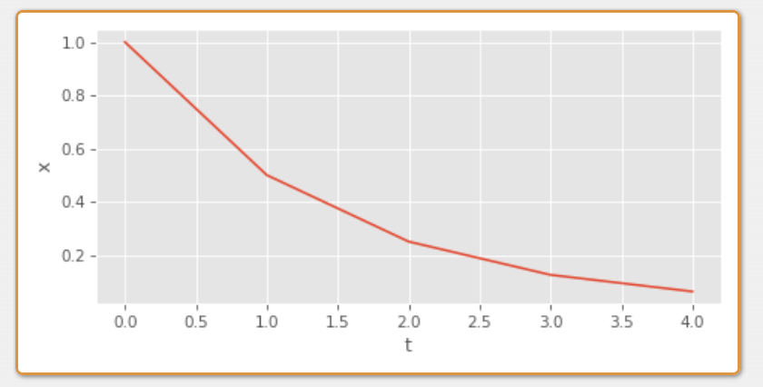</p>
<p>Here we can see repeated calls to <code>lerp</code> actually produce a kind of exponential decay toward the goal:</p>
<p>\begin{align*} t=0, &amp; x=1.0 \\ t=1, &amp; x=0.5 \\t=2, &amp; x=0.25 \\t=3, &amp; x=0.125 \end{align*}</p>
<p>And for a <code>lerp</code> factor of <code>0.5</code>, we can see that this pattern is exactly the equation \( x_t=0.5^t \) . So it looks like somehow there is an exponential function governing this relationship, but how did this appear? The trick to uncovering this exponential form is to write our system as a recurrence relation.</p>
<blockquote>
<p>🔎 recurrence relation：递推关系</p>
</blockquote>
<h2 id="recurrence-relation"><a class="header" href="#recurrence-relation">Recurrence Relation</a></h2>
<p>We'll start by defining a separate variable  <code>y=1−damping⋅ft</code> , which will make the maths a bit easier later on. In this case <code> ft</code> is a fixed, small <code>dt</code> such as \( \frac{1}{60} \) . Then we will expand the <code>lerp</code> function:</p>
<p>\begin{align*} x_{t+1} &amp; = \text{lerp } (x_t,g,1-y) \\ x_{t+1} &amp; = (1-(1-y)) \cdot x_t+(1-y) \cdot g\\x_{t+1} &amp; = y\cdot x_t-(y-1)\cdot g \\x_{t+1} &amp; = y\cdot x_t- y\cdot g +g \end{align*}</p>
<p>Now for the recurrence relation: by plugging this equation into itself we are going to see how the exponent appears. First we need to <code> t+1</code> to <code>t+2</code> and then replace the new  \(x_{t+1}\)  which appears on the right hand side with the same equation again.</p>
<p>\begin{align*} x_{t+1} &amp; = y \cdot x_t-y \cdot g + g \\ x_{t+2} &amp; = y \cdot x_{t+1}-y \cdot g + g \\ x_{t+2} &amp; = y \cdot (y\cdot x_t-y\cdot  g+g)-y\cdot g+g  \\x_{t+2} &amp; = y \cdot y \cdot x_t- y\cdot y \cdot  g +y \cdot g-y \cdot g+g  \\x_{t+2} &amp; = y \cdot y \cdot x_t- y\cdot y \cdot  g +g \end{align*}</p>
<p>If we repeat this process again and we can start to see a pattern emerging:</p>
<p>\begin{align*} x_{t+2} &amp; = y \cdot y \cdot x_t-y \cdot y \cdot g + g \\ x_{t+3} &amp; = y \cdot y \cdot x_{t+1}-y \cdot y \cdot g + g  \\ x_{t+3} &amp; = y \cdot y \cdot (y \cdot x_t-y  \cdot g + g ) -y \cdot y \cdot g + g  \\x_{t+3} &amp; = y \cdot y \cdot y \cdot x_t- y \cdot y \cdot y \cdot  g +y \cdot y \cdot y  \cdot g -y \cdot y  \cdot  g+g  \\x_{t+3} &amp; = y \cdot y \cdot y \cdot x_t- y \cdot y \cdot y \cdot   g + g \end{align*}</p>
<p>More generally we can see that:</p>
<p>\begin{align*} x_{t+n} &amp; = y^n \cdot  x_t-y ^n \cdot g + g \end{align*}</p>
<p>​</p>
<p>Ah-ha! Our exponent has appeared. And by rearranging a bit we can even write this in terms of 
<code>lerp</code> again:</p>
<p>\begin{align*} x_{t+n} &amp; = y^n \cdot  x_t-y ^n \cdot g + g  \\ x_{t+n} &amp; = y^n \cdot  x_t+g \cdot (1-y^n)  \\ x_{t+n} &amp; = \text{lerp } (x_t,g,1-y^n) \end{align*}</p>
<blockquote>
<p>✅ 以1-y为factor做n次相当于以\(1-y^n\)为factor做一次</p>
</blockquote>
<p>As a small tweak, we can make the exponent negative:</p>
<p>\begin{align*} x_{t+n} &amp; = \text {lerp }(x_t,g,1-y^n)  \\ x_{t+n} &amp; = \text {lerp }(x_t,g,1-\frac{1 }{y}^{-n})   \end{align*}
​</p>
<p>Remember that <code>n</code> represents a multiple of <code>ft</code>, so if we have a new arbitrary <code>dt</code> we will need to convert it to <code>n</code> first using \(n=\frac{dt }{ft} \) . In C++ we would write it as follows:</p>
<blockquote>
<p>✅ n代表dt时间内会执行lerp的次数，dt时间内有多少帧就会执行多少次。ft代表一帧的时长。因此\(n=\frac{dt }{ft} \)。</p>
</blockquote>
<pre><code class="language-c++">float damper_exponential(
    float x,
    float g, 
    float damping, 
    float dt, 
    float ft = 1.0f / 60.0f)
{
    return lerp(x, g, 1.0f - powf(1.0 / (1.0 - ft * damping), -dt / ft));
} 
</code></pre>
<blockquote>
<p>✅ 这样解决了两个问题：</p>
<ol>
<li>factor永远不会大于1</li>
<li>在damping和ft确定的情况下，执行一次dt=1或者两次dt=0.5，结果是一样的。</li>
</ol>
</blockquote>
<p>Let's see it action! Notice how it produces the same, identical and stable behavior even when we make the <code>dt</code> and <code>damping</code> large.</p>
<blockquote>
<p>🔎 https://www.daniel-holden.com/media/uploads/springs/damper_exponent.m4v</p>
</blockquote>
<p>So have we fixed it? Well, in this formulation we've essentially solved the problem by letting the behavior of the damper match one particular timestep while allowing the rate of decay to still vary. In this case <code>1.0f - ft * damping</code> is our rate of decay, and it dictates what proportion of the distance toward the goal will remain after <code>ft</code> in time. As long as we make the fixed timestep <code>ft</code> small enough, <code>ft * damping</code> should never exceed <code>1.0</code> and the system remains stable and well behaved.</p>
<blockquote>
<p>✅ 上面这个方法能解决问题的原理是，不管dt多大，都把它分解为以ft为步长走n次，那么总的dt一样多，一次对应的n一样多，结果就会是一样的。</p>
</blockquote>
<h2 id="the-half-life"><a class="header" href="#the-half-life">The Half-Life</a></h2>
<p>But there is another, potentially better way to fix the problem. Instead of fixing the timestep, we can fix the <em>rate of decay</em> and let the timestep vary. This sounds a little odd at first but in practice it makes things much easier. The basic idea is simple: let's set the rate of decay to <code>0.5</code> and instead scale the timestep such that we can control the exact <em>half-life</em> of the damper - a.k.a the time it takes for the distance to the goal to reduce by half:</p>
<p>\begin{align*} x_{t+dt} &amp; = \text {lerp }(x_t,g,1-\frac{1 }{0.5}^{-dt/halflife})  \\ x_{t+dt} &amp; = \text {lerp }(x_t,g,1-2^{-dt/halflife})   \end{align*}
​</p>
<blockquote>
<p>✅ 似乎是在上一段的基础上，固定住factor并把ft变成一个更有意义的可调参数。</p>
</blockquote>
<p>This simplifies the code and gives a more intuitive parameter to control the damper. Now we don't ever need to worry about if we've set the <code>damping</code> too large or made the fixed timestep <code>ft</code> small enough.</p>
<pre><code class="language-c++">float damper_exact(float x, float g, float halflife, float dt)
{
    return lerp(x, g, 1.0f - powf(2, -dt / halflife));
}
</code></pre>
<p>For neatness, we can also switch to an exponential base using the change of base theorem: just multiply the <code>dt</code> by <code>ln(2)=0.69314718056</code> and switch to using <code>expf</code>. Finally, we should add some small epsilon value like <code>1e-5f</code> to avoid division by zero when our <code>halflife</code> is very small:</p>
<pre><code class="language-c++">float damper_exact(float x, float g, float halflife, float dt, float eps=1e-5f)
{
    return lerp(x, g, 1.0f - expf(-(0.69314718056f * dt) / (halflife + eps)));
}
</code></pre>
<blockquote>
<p>✅ 公式推导：
定义
$$
2^{-\frac{dt}{halflife}} = y，
$$
对两边取以2为底对的对数，并把以2为底转换为以e为底，得：
$$
-\frac{dt}{halflife} = \log_2^y = \frac{\ln y}{\ln 2}
$$
通过化简，求出：
$$
y = \exp(-\frac{dt * \ln 2}{halflife})
$$</p>
</blockquote>
<p>The change of base theorem tells us another thing: that changing the rate <em>of decay</em> is no different from scaling the <code>dt</code> in the exponent. So using the <code>halflife</code> to control the damper should not limit us in any of the behaviors we want to achieve compared to if we changed the <em>rate of decay</em> like in our previous setup.</p>
<p>There is one more nice little trick we can do - a fast approximation of the negative exponent function using one over a simple polynomial (or we could use this <a href="https://twitter.com/Mr_Rowl/status/1577454895652708352">even better approximation from Danny Chapman</a>):</p>
<pre><code class="language-c++">float fast_negexp(float x)
{
    return 1.0f / (1.0f + x + 0.48f*x*x + 0.235f*x*x*x);
}
</code></pre>
<p>And that's it - we've converted our unstable damper into one that is fast, stable, and has intuitive parameters!</p>
<pre><code class="language-c++">float damper_exact(float x, float g, float halflife, float dt, float eps=1e-5f)
{
    return lerp(x, g, 1.0f-fast_negexp((0.69314718056f * dt) / (halflife + eps)));
}
</code></pre>
<p>Let's see how it looks...</p>
<blockquote>
<p>🔎 https://www.daniel-holden.com/media/uploads/springs/damper_implicit.m4v</p>
</blockquote>
<p>Perfect!</p>
<hr />
<h2 id="the-spring-damper"><a class="header" href="#the-spring-damper">The Spring Damper</a></h2>
<p>The exact damper works well in a lot of cases, but has one major issue - it creates discontinuities when the goal position changes quickly. For example, even if the object is moving in one direction, it will immediately switch to moving in the opposite direction if the goal changes direction. This can create a kind of annoying sudden movement which you can see in the previous videos.</p>
<p>The problem is that there is no <strong>velocity continuity</strong> - no matter what happened in the previous frames the damper will always move toward the goal. Let's see how we might be able to fix that. We can start by looking again at our old broken bad damper, and examining it in a bit more detail:</p>
<p>\begin{align*} x_{t+dt} &amp; = \text {lerp }(x_t,g,dt \cdot damping)  \\ x_{t+dt} &amp; =  x_t + dt \cdot damping \cdot (g-x_t)   \end{align*}</p>
<p>​
We can see that this looks a bit like a physics equation where \(damping \cdot (g−x_t ) \) represents the velocity.</p>
<p>​\begin{align*} \upsilon_t &amp; = damping \cdot (g-x_t)  \\ x_{t+dt} &amp; =  x_t + dt \cdot \upsilon_t \end{align*}</p>
<p>This system is like a kind of <strong>particle with a velocity always proportional to the difference between the current particle position and the goal position</strong>. This explains the discontinuity - the velocity of our damper will always be directly proportional to the difference between the current position and the goal without ever taking any previous velocities into account.</p>
<p>What if instead of setting the velocity directly each step we made it something that changed more smoothly? For example, we could instead add a velocity taking us toward the goal to the current velocity, scaled by a different parameter which for now we will call the <em>stiffness</em>.</p>
<p>​\begin{align*} \upsilon_{t+dt} &amp; = \upsilon_t +dt \cdot stiffness \cdot (g-x_t)  \\ x_{t+dt} &amp; =  x_t + dt \cdot \upsilon_t \end{align*}</p>
<blockquote>
<p>✅ 速度第一项：当前速度，速度第二项：使达到目标状态的速度</p>
</blockquote>
<p>But the problem now is that this particle wont slow down until it has already over-shot the goal and is pulled back in the opposite direction. To fix this we can add a <code>q</code> variable which represents a goal velocity, and add another term which takes us toward this goal velocity. This we will scale by another new parameter which we will call the <em>damping</em> (for reasons which will become clearer later in the article).</p>
<p>​\begin{align*} \upsilon_{t+dt} &amp; = \upsilon_t +dt \cdot stiffness \cdot (g-x_t) + dt \cdot damping \cdot (q-\upsilon_t)   \\ x_{t+dt} &amp; =  x_t + dt \cdot \upsilon_t \end{align*}</p>
<blockquote>
<p>✅ 速度第一项：当前速度，速度第二项：使达到目标状态的速度，速度第三项：目标速度</p>
</blockquote>
<p>When <code>q</code> is very small we can think of this like a kind of friction term which simply subtracts the current velocity. And when <code>q=0</code> and <code>dt⋅damping=1</code> we can see that this friction term actually completely removes the existing velocity, reverting our system back to something just like our original damper.</p>
<p>Another way to think about these terms is by thinking of them as accelerations, which can be shown more clearly by factoring out the <code>dt</code>:</p>
<p>​​\begin{align*} a_t &amp; = stiffness \cdot (g-x_t) + damping \cdot (q-\upsilon_t)   \\ \upsilon_{t+dt} &amp; =  \upsilon_t + dt \cdot a_t \\ x_{t+dt} &amp; =  x_t + dt \cdot \upsilon_t \end{align*}</p>
<p>Assuming the mass of our particle is exactly one, it really is possible to think about this as two individual forces - one pulling the particle in the direction of the goal velocity, and one pulling it toward the goal position. If we use a small enough <code>dt</code> we can actually plug these functions together and simulate a simple damped spring with exactly the velocity continuity we wanted. Here is a function which does that (using <a href="https://gafferongames.com/post/integration_basics/">semi-implicit euler integration</a>).</p>
<pre><code class="language-c++">void spring_damper_bad(
    float&amp; x,
    float&amp; v, 
    float g,
    float q, 
    float stiffness, 
    float damping, 
    float dt)
{
    v += dt * stiffness * (g - x) + dt * damping * (q - v);
    x += dt * v;
}
</code></pre>
<p>Let's see how it looks:</p>
<blockquote>
<p>🔎 https://www.daniel-holden.com/media/uploads/springs/springdamper_bad.m4v</p>
</blockquote>
<p>But unfortunately just like before we have problems when the <code>dt</code> is large, and certain settings for <code>stiffness</code> and <code>dampi</code>ng can make the system unstable. These unintuitive parameters like <code>damping</code> and <code>stiffness</code> are also back again... arg!</p>
<blockquote>
<p>🔎 https://www.daniel-holden.com/media/uploads/springs/springdamper_unstable.m4v</p>
</blockquote>
<p>Can we give this spring the same treatment as we did for our damper by fiddling around with the maths? Well yes we can, but unfortunately from here on in things are going to get a bit more complicated...</p>
<hr />
<h2 id="the-exact-spring-damper"><a class="header" href="#the-exact-spring-damper">The Exact Spring Damper</a></h2>
<p>This time the exact version of our model is too complicated to solve using a simple recurrence relation. Instead we're going to have to try a different tactic: we're going to guess an equation we think models the spring and then try to work out how to compute all the different parameters of that equation based on the parameters we do know such as the <code>damping</code> and <code>stiffness</code>.</p>
<p>If we take a look at the movement of the spring in the previous section we can see there are basically two features - an exponential decay toward the goal position, and a kind of oscillation, a bit like a <code>cos</code> or <code>sin</code> function. So let's try and come up with an equation which fits that kind of shape and go from there. What about something like this?</p>
<p>​​\begin{align*} x_t &amp; = j \cdot e^{-y \cdot t} \cdot cos (w \cdot t+p)+c \end{align*}</p>
<p>​
Where <code>j</code> is the amplitude, <code>y</code> controls the time it takes to decay, a bit like our half-life parameter, <code>t</code> is the time, <code>w</code> is the frequency of oscillations, <code>p</code> is the phase of oscillations, and <code>c</code> is an offset on the vertical axis. This seems like a reasonable formulation of the behavior we saw previously.</p>
<p>But before we try to find all of these unknown parameters, let's write down the derivatives of this function with respect to <code>t</code> too. We'll use <code>vt</code> to denote the velocity, and <code>at</code> to denote the acceleration.</p>
<p>​\begin{align*} x_t &amp; = j \cdot e^{-y \cdot t} \cdot cos (w \cdot t+p)+c \end{align*}
​
​\begin{align*} x_t &amp; =j\cdot e^{-y\cdot t}\cdot \cos (w\cdot t+p)+c\\
\upsilon _t &amp; =-y\cdot j\cdot e^{-y\cdot t}\cdot \cos (w\cdot t+p)\\
&amp; -w\cdot j\cdot e^{-y\cdot t}\cdot \sin (w\cdot t+p) \\
a_t &amp; =y^2\cdot j\cdot e^{-y\cdot t}\cdot \cos (w\cdot t+p)\\
&amp; -w^2\cdot j\cdot e^{-y\cdot t}\cdot \cos (w\cdot t+p) \\
&amp; +2\cdot w\cdot y\cdot j\cdot e^{-y\cdot t}\cdot \sin (w\cdot t+p)  \end{align*}</p>
<p>Those might look a bit scary but we can make them a lot less scary by just summarizing some of the common terms:</p>
<p>​\begin{align*} C&amp;=j\cdot e^{-y\cdot t}\cdot \cos (w\cdot t+p) \\S&amp;=j\cdot e^{-y\cdot t}\cdot \sin (w\cdot t+p)  \end{align*}
​ </p>
<p>Giving us the following:</p>
<p>​\begin{align*} x_t&amp;=C+c\\ \upsilon _t&amp;=-j\cdot C-w \cdot S \\ a_t&amp;=y^2 \cdot C-w^2\cdot C+2\cdot w\cdot y\cdot S \end{align*}
​ 
​</p>
<h2 id="finding-the-spring-parameters"><a class="header" href="#finding-the-spring-parameters">Finding the Spring Parameters</a></h2>
<p>Our plan for finding the first set of unknown parameters is as follows: we're going to substitute these new equations for \(x_t\),\(v_t\) , and <code>at</code> into our previous equation of motion 
\(a_t=s\cdot (g-x_t)+d\cdot (q-v_t)\) (where <code>d=damping</code> and <code>s=stiffness</code> ) and try to rearrange to solve for <code>y</code>, <code>w</code>, and <code>c</code> using all the other values we know: <code>s</code>,<code>d</code>,<code>q</code>, and <code>g</code>.</p>
<p>But first let's shuffle around some terms in this equation of motion: expanding the <code>stiffness</code> and <code>damping</code> terms, moving some values onto the left hand side, and finally negating everything. This will make the next steps much easier for us.</p>
<p>​​\begin{align*} a_t&amp;=s\cdot (g-x_t)+d\cdot (q-v_t)\\
0&amp;=s\cdot (g-x_t)+d\cdot (q-v_t)-a_t\\
0&amp;=s\cdot g-s\cdot x_t +d\cdot q-d\cdot v_t -a_t\\
-s\cdot g-d\cdot q&amp;=-s\cdot x_t-d\cdot v_t  -a_t\\
s\cdot g+d\cdot q&amp;=s\cdot x_t+d\cdot v_t  +a_t\\ \end{align*}</p>
<p>Now let's substitute in our three new equations we just created for \(x_t\), \(v_t\),and \(a_t\):</p>
<p>\begin{align*} s\cdot g+d\cdot q&amp; =s\cdot x_t+d\cdot v_t +a_t \\
s\cdot g+d\cdot q&amp;=s\cdot (C+c) + d\cdot (-y\cdot C-w\cdot S)+((y^2-w^2)\cdot C+2\cdot w\cdot j\cdot S) \end{align*}</p>
<p>And by multiplying out and then gathering all the coefficients of <code>C</code> and <code>S</code> together we can get:</p>
<p>\begin{align*} s\cdot g+d\cdot q&amp;=s\cdot (C+c) + d\cdot (-y\cdot C-w\cdot S)+((y^2-w^2)\cdot C+2\cdot w\cdot j\cdot S) \\ 
s\cdot g+d\cdot q-s\cdot c&amp;=s\cdot C+d\cdot -y\cdot C-d\cdot w\cdot S+y^2\cdot C-w^2\cdot C+2\cdot w\cdot y\cdot S\\ 
s\cdot g+d\cdot q-s\cdot c&amp;=((y^2-w^2)-d\cdot y+s)\cdot C+(2\cdot w\cdot y-d\cdot w)\cdot S \end{align*}</p>
<p>There is one more additional fact we can use to get the variables we need from this equation: because <code>C</code> and <code>S</code> are essentially <code>cos</code> and <code>sin</code> functions with the same phase, amplitude, and frequency, the only way this equation can be balanced for all potential values of <code>t</code>, <code>w</code>, <code>y</code>,<code>j</code> and <code>c</code> is when both the coefficients of <code>C</code> and <code>S</code> are zero and when the left hand side equals zero. This gives us three smaller equations to solve:</p>
<p>​\begin{align*} s\cdot g+d\cdot q-s\cdot c&amp;=0&amp;(1) \\ 
(y^2-w^2)-d\cdot y+s&amp;=0&amp;(2)\\ 
2\cdot w\cdot y-d\cdot w&amp;=0 &amp;(3) \end{align*}</p>
<h2 id="finding-c"><a class="header" href="#finding-c">Finding \(c\)</a></h2>
<p>Using equation <code>(1) </code> we can solve for <code>c</code> right away to get our first unknown!</p>
<p>\begin{align*} s\cdot g+d\cdot q-s\cdot c&amp;=0\\ 
s\cdot g+d\cdot q&amp;=s\cdot c\\ 
g+\frac{d\cdot q}{s} &amp;=c \end{align*}</p>
<h2 id="finding-y"><a class="header" href="#finding-y">Finding \(y\)</a></h2>
<p>And by rearranging equation <code>(3)</code> we can also find a solution for <code>y</code>:</p>
<p>\begin{align*} 2\cdot w\cdot y-d\cdot w&amp;=0\\ 
d\cdot w&amp;=2\cdot w\cdot y\\ 
d &amp;=2\cdot y\\
\frac{d}{2} &amp;=y \end{align*}</p>
<h2 id="finding-w"><a class="header" href="#finding-w">Finding \(w\)</a></h2>
<p>Which we can substitute into equation <code>(2)</code> to solve for <code>w</code>:</p>
<p>\begin{align*} (y^2- w^2)-d\cdot y+s&amp;=0\\ 
((\frac{d}{2}) ^2-w^2)-d\cdot \frac{d}{2}+s&amp;=0\\ 
\frac{d^2}{4}-w^2- \frac{d^2}{2}+s&amp;=0\\ 
\frac{d^2}{4}- \frac{d^2}{2}+s&amp;=w^2\\ 
s- \frac{d^2}{4}&amp;=w^2\\ 
\sqrt{s-\frac{d^2}{4}}  &amp;=w \end{align*}</p>
<h2 id="finding-the-spring-state"><a class="header" href="#finding-the-spring-state">Finding the Spring State</a></h2>
<p>There are two final unknown variables remaining: <code>j</code>, and <code>p</code> - the amplitude and the phase. Unlike <code>y</code>,<code>w</code>, and <code>c</code>, these two are determined by the initial conditions of the spring. Therefore, given some initial position and velocity, \(x_0\) and \(v_0\), we can plug these in our equations along with \(t=0\) to get some more equations we will use to find <code>j</code> and <code>p</code>:</p>
<p>​\begin{align*} x_0&amp;=j \cdot e^{−y \cdot 0} \cdot \cos(w⋅0+p)+c\\
x_0&amp;=j \cdot \cos(p)+c\\
\\
v_0&amp;=−y \cdot j \cdot e ^{−y \cdot 0} \cdot \cos(w \cdot 0+p)−w \cdot j \cdot e^{−y\cdot 0}\cdot \sin(w \cdot 0+p)\\
v_0&amp;=−y \cdot j \cdot \cos(p)−w \cdot j \cdot \sin(p) \end{align*}
​</p>
<h2 id="finding-j"><a class="header" href="#finding-j">Finding \(j\)</a></h2>
<p>Let's start with <code>j</code>. First we'll re-arrange our equation for \(x_0\) in terms of <code>p</code>:</p>
<p>\begin{align*} x_0&amp;=j\cdot ​\cos(p)+c\\
x_0-c&amp;=j\cdot \cos(p)\\
\frac{x_0-c}{j} &amp;=\cos(p)\\
\text{arccos} (\frac{x_0-c}{j})&amp;=p \end{align*}</p>
<p>And substitute this into our equation for \(v_0\):</p>
<p>\begin{align*} v_0&amp;=−y\cdot j\cdot \cos(p)−w\cdot j\cdot \sin(p)\\
v_0&amp;=−y\cdot j\cdot \cos(\text{arccos}(\frac{x_0-c}{j}))-w\cdot j\cdot \sin (\text{arccos} (\frac{x_0-c}{j}))\\ 
v_0&amp;=-y\cdot j\cdot \frac{x_0-c}{j}-w \cdot j\cdot \sqrt{1-\frac{(x_0-c)^2}{j^2}} \\ 
v_0&amp;=-y\cdot (x_0-c)-w \cdot j\cdot \sqrt{1-\frac{(x_0-c)^2}{j^2}}\end{align*}</p>
<p>Which we can now rearrange for <code>j</code>:</p>
<p>​\begin{align*} v_0+y\cdot (x_0-c)&amp;=-w \cdot j\cdot \sqrt{1-\frac{(x_0-c)^2}{j^2}} \\
\frac{v_0+y\cdot (x_0-c)}{-w \cdot j} &amp;= \sqrt{1-\frac{(x_0-c)^2}{j^2}} \\ 
\frac{(v_0+y\cdot (x_0-c))^2}{(-w \cdot j)^2} &amp;=1-\frac{(x_0-c)^2}{j^2} \\ 
\frac{(v_0+y\cdot (x_0-c))^2}{w^2} &amp;=j^2-(x_0-c)^2 \\ 
\frac{(v_0+y\cdot (x_0-c))^2}{w^2} +(x_0-c)^2&amp;={j^2}\\
\sqrt{\frac{(v_0+y\cdot (x_0-c))^2}{w^2} +(x_0-c)^2} &amp;=j\end{align*}</p>
<p>Nice! Since this relies on squares and a square root, some sign information is lost. This means that in our code we will also need to negate <code>j</code> in the case that \(x_0-c&lt; 0\) :</p>
<h2 id="finding-p"><a class="header" href="#finding-p">Finding \(p\)</a></h2>
<p>Finally, we are ready to find <code>p</code>. We can start by rearranging our velocity equation \(v_0\) for <code>j</code>:</p>
<p>\begin{align*} v_0&amp;=-y \cdot j\cdot \cos(p)-w\cdot j\cdot  \sin(p)\\
v_0&amp;=j \cdot (-y\cdot \cos(p)-w\cdot \sin(p)) \\ 
\frac{v_0}{-y\cdot \cos(p)-w\cdot \sin(p)} &amp;=j \end{align*}</p>
<p>And then substitute this into our equation for \(x_0\) to solve for <code>p</code>:</p>
<p>\begin{align*} x_0&amp;=j \cdot \cos(p)+c \\
x_0&amp;=(\frac{v_0}{-y\cdot \cos(p)-w\cdot \sin(p)}) \cdot \cos(p)+c  \\ 
x_0-c&amp;=(\frac{v_0\cdot \cos(p)}{-y\cdot \cos(p)-w\cdot \sin(p)})\cdot \cos(p)+c  \\ 
x_0-c&amp;=\frac{v_0}{-y-w\cdot \frac{\sin(p)}{\cos(p)}}\\ 
x_0-c&amp;=\frac{v_0}{-y-w\cdot \tan(p)}\\ 
(x_0-c)\cdot (-y-w\cdot \tan(p))&amp;=v_0\\ 
-(x_0-c)\cdot y-(x_0-c)\cdot w\cdot \tan(p)&amp;=v_0\\ 
-(x_0-c)\cdot w\cdot \tan(p)&amp;=v_0+(x_0-c)\cdot y\\ 
\tan(p)&amp;=\frac{v_0+(x_0-c)\cdot y}{-(x_0-c)\cdot w} \\ 
p&amp;=\text{arctan }(\frac{v_0+(x_0-c)\cdot y}{-(x_0-c)\cdot w} )  \end{align*}</p>
<h2 id="putting-it-together"><a class="header" href="#putting-it-together">Putting it together</a></h2>
<p>Putting all of this together, and throwing in a fast approximate <code>atanf</code> for fun, we get the following...</p>
<pre><code class="language-c++">float fast_atan(float x)
{
    float z = fabs(x);
    float w = z &gt; 1.0f ? 1.0f / z : z;
    float y = (M_PI / 4.0f)*w - w*(w - 1)*(0.2447f + 0.0663f*w);
    return copysign(z &gt; 1.0f ? M_PI / 2.0 - y : y, x);
}

float squaref(float x)
{
    return x*x;
}

void spring_damper_exact(
    float&amp; x, 
    float&amp; v, 
    float x_goal, 
    float v_goal, 
    float stiffness, 
    float damping, 
    float dt, 
    float eps = 1e-5f)
{
    float g = x_goal;
    float q = v_goal;
    float s = stiffness;
    float d = damping;
    float c = g + (d*q) / (s + eps);
    float y = d / 2.0f;
    float w = sqrtf(s - (d*d)/4.0f);
    float j = sqrtf(squaref(v + y*(x - c)) / (w*w + eps) + squaref(x - c));
    float p = fast_atan((v + (x - c) * y) / (-(x - c)*w + eps));

    j = (x - c) &gt; 0.0f ? j : -j;

    float eydt = fast_negexp(y*dt);

    x = j*eydt*cosf(w*dt + p) + c;
    v = -y*j*eydt*cosf(w*dt + p) - w*j*eydt*sinf(w*dt + p);
}
</code></pre>
<p>Phew - that was a lot of equations and re-arranging, but it worked, and produces a smooth, stable motion even with a very large <code>dt</code> or <code>stiffness</code>. And anyway, doesn't it feel nice to actually use those high school trig identities and do some old school equation manipulation for once!</p>
<p>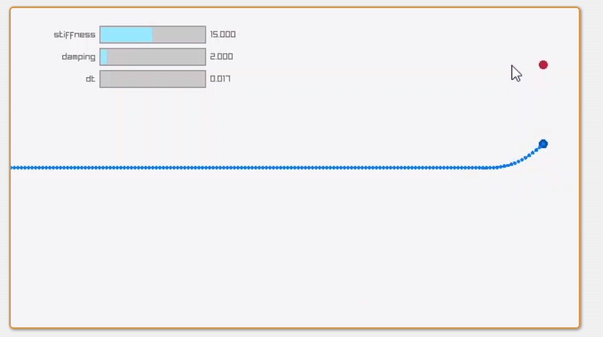</p>
<hr />
<h2 id="over-under-and-critical-damping"><a class="header" href="#over-under-and-critical-damping">Over, Under, and Critical Damping</a></h2>
<p>But hold on... one of the steps we took in the previous section wasn't really legit... can you spot it? Here is the problem:</p>
<p>​​\begin{align*} w&amp;= \sqrt{s-\frac{d^2}{4} } \end{align*}</p>
<p>It's a square root... but I never assured you the input to this square root couldn't be negative. In fact it can be... and definitely will be if <code>d</code> is large!</p>
<p>But what does this negative square root actually correspond to? Does it mean that there is no exact solution to this spring when the <code>damping</code> is large? Do we just have to give up? Well, not exactly...</p>
<p>In fact we didn't notice when we came up with our original equation to model the behavior of the spring, but there are three different ways this spring can act depending on the relative sizes of the <code>damping</code> and <code>stiffness</code> values.</p>
<p>If \(s-\frac{d^2}{4} &gt; 0\) it means the spring is <em>under</em> damped, causing oscillations to appear with motions governed by the equations we already derived. If \(s-\frac{d^2}{4} = 0\) it means the spring is <em>critically</em> damped, meaning it returns to the goal as fast as possible without extra oscillation, and if \(s-\frac{d^2}{4} &lt; 0\) it means the spring is <em>over</em> damped, and will return slowly toward the goal.</p>
<p>In each of these cases there is a different set of basic equations governing the system, leading to a different derivation just like the one we completed. I'm going to save us a bit of time and write them all our here rather than going through the trial and error process of examining different guesses at equations and seeing if they fit:</p>
<h2 id="under-damped"><a class="header" href="#under-damped">Under Damped:</a></h2>
<p>\begin{align*} x_t&amp;=j\cdot e ^{−y\cdot t} \cdot \cos(w\cdot t+p)+c \\
v_t&amp;=−y\cdot j\cdot e ^{−y\cdot t} \cdot \cos(w\cdot t+p)\\
&amp;−w\cdot j\cdot e^{ −y\cdot t} \cdot \sin(w\cdot t+p)\\
a_t&amp;=y^2 \cdot j\cdot e^{−y\cdot t}\cdot \cos(w\cdot t+p)\\
&amp;−w^2 \cdot j\cdot e^{−y\cdot t} \cdot \cos(w\cdot t+p)\\
&amp;+2\cdot w\cdot y\cdot j\cdot e^{−y\cdot t} \cdot \sin(w\cdot t+p)  \end{align*}</p>
<h2 id="critically-damped"><a class="header" href="#critically-damped">Critically Damped:</a></h2>
<p>\begin{align*} x_t&amp;=j_0\cdot e ^{−y\cdot t} +t\cdot y_1\cdot e ^{−y\cdot t}+c \\
v_t&amp;=-y\cdot j_0\cdot e ^{−y\cdot t} -y\cdot t\cdot y_1\cdot e ^{−y\cdot t}+y_1\cdot e ^{−y\cdot t}\\
a_t&amp;=j^2\cdot j_0\cdot e ^{−y\cdot t} +y^2\cdot t\cdot y_1\cdot e ^{−y\cdot t}-2\cdot y\cdot j_1\cdot e^{-y\cdot t}\end{align*}
​</p>
<h2 id="over-damped"><a class="header" href="#over-damped">Over Damped:</a></h2>
<p>\begin{align*} x_t&amp;=j_0\cdot e ^{−y_0\cdot t} +j_1\cdot e ^{−y_1\cdot t}+c \\
v_t&amp;=-y_0\cdot j_0\cdot e ^{−y_0\cdot t} -y_1\cdot j_1\cdot e ^{−y_1\cdot t}\\
a_t&amp;=j^2_0\cdot j_0\cdot e ^{−y_0\cdot t} +y^2_1\cdot j_1\cdot e ^{−y_1\cdot t} \end{align*}</p>
<p>What we did in the previous section was solve for the under damped case, but the other two cases require exactly the same style of derivation to get them working.</p>
<h2 id="solving-the-critically-damped-case"><a class="header" href="#solving-the-critically-damped-case">Solving the Critically Damped Case</a></h2>
<p>Let's start with the easiest: the critically damped case. The first two unknowns <code>c</code> and <code>y</code> have exactly the same solution as in the under-damped case, \(c=g+ \frac{d\cdot q}{s}\) and \(y=\frac{d}{2}\), while the other two unknowns \(j_0\) and \(j_1\) can be found easily from the initial conditions \(x_0\), \(v_0\), and \(t=0\):
​
\begin{align*} x_0&amp;=j_0\cdot e^{−y\cdot 0} +0\cdot j_1\cdot e^{−y\cdot 0} +c \\
x_0&amp;=j_0 +c \end{align*}</p>
<p>And for the velocity...</p>
<p>\begin{align*} v_0&amp;=-y\cdot j_0\cdot e^{−y\cdot 0} -y\cdot 0\cdot j_1\cdot e^{−y\cdot t}+j_1\cdot e^{−y\cdot 0} \\
v_0&amp;=-y\cdot j_0 +j_1 \end{align*}
​</p>
<p>Giving us...</p>
<p>\begin{align*} j_0&amp;=x_0-c \\
j_1&amp;=v_0 +j_0\cdot y \end{align*}
​
And that's it, easy!</p>
<h2 id="solving-the-over-damped-case"><a class="header" href="#solving-the-over-damped-case">Solving the Over Damped Case</a></h2>
<p>The over-damped case is a little more difficult so let's first summarize some terms again to make our equations clearer.</p>
<p>\begin{align*} E_0&amp;=j_0\cdot e^{−y_0\cdot t} \\
E_1&amp;=j_1\cdot e^{−y_1\cdot t} \end{align*}</p>
<p>Giving us...</p>
<p>\begin{align*} x_t&amp;=E_0+E_1+c \\
v_t&amp;=-j_0\cdot E_0-y_1\cdot E_1 \\
a_t&amp;=j^2_0\cdot E_0+y^2_1\cdot E_1 \end{align*}</p>
<p>We'll start by finding the two unknowns \(y_0\), and \(y_1\). Just like before we are going to substitute these equations into our equation of motion, gathering up the coefficients for the exponential terms:</p>
<p>\begin{align*} s\cdot g+d\cdot q&amp;=s\cdot x_t +d\cdot v_t +a_t \\
s\cdot g+d\cdot q&amp;=s\cdot (E_0 +E_1 +c)+d\cdot (−y_0\cdot E_0 −y_1\cdot E_1 )+(y_0^2\cdot E_0 +y_1^2 ⋅E_1 )\\
s\cdot g+d\cdot q&amp;=s\cdot E_0 +s\cdot E_1 +s\cdot c−d\cdot y_0\cdot E_0 −d\cdot y_1 \cdot E_1 +y_0^2\cdot E_0 +y_1^2\cdot E_1\\
s\cdot g+d\cdot q−s\cdot c&amp;=(s−d\cdot y_0 +y_0^2 )\cdot E_0 +(s−d\cdot y_1 +y_1^2​ )\cdot E_1 \end{align*}</p>
<p>Again, just like before, this equation is only solved when both coefficients and the left hand side equal zero. This gives us our existing solution for <code>c</code> plus two more quadratic equations to solve:</p>
<p>​\begin{align*} s-d\cdot y_0+y^2_0&amp;=0 \\
s-d\cdot y_1+y^2_1&amp;=0  \end{align*}</p>
<p>In this case \( y_0\) and  \( y_1\) represent the two different solutions to the same quadratic, so we can use the quadratic formula to get these:</p>
<p>\begin{align*} y_0&amp;=\frac{d+\sqrt{d^2-4\cdot s}}{2}   \\
y_1&amp;=\frac{d-\sqrt{d^2-4\cdot s}}{2}  \end{align*}
​</p>
<p>Now that these are found we're ready to solve for \( j_0\) and 
\( j_1\) using the initial conditions \( x_0\), \( v_0\) and \(t=0\):</p>
<p>\begin{align*} x_0&amp;=j_0\cdot e ^{−y_0\cdot 0} +j_1\cdot e ^{−y_1\cdot 0}+c \\
x_0&amp;=j_0+j_1+c\\
\\
v_0&amp;=-y_0\cdot j_0\cdot e ^{−y_0\cdot 0} -y_1\cdot j_1\cdot e ^{−y_1\cdot 0}\\
v_0&amp;=-y_0\cdot j_0 −y_1\cdot j_1 \end{align*}</p>
<p>First we'll re-arrange our eqiation for \(x_0\) in terms of  \(j_0\): 
​
\begin{align*} x_0&amp;=j_0+j_1+c \\
x_0-j_1-c&amp;=j_0 \end{align*}</p>
<p>Which we'll substitute into our equation for \(v_0\) to solve for 
\(j_1\) :</p>
<p>\begin{align*} v_0&amp;=-y_0\cdot j_0-y_1\cdot j_1 \\
v_0&amp;=-y_0\cdot (x_0-j_1-c)-y_1\cdot j_1 \\
v_0&amp;=-y_0\cdot x_0+y_0\cdot j_1+y_0\cdot c-y_1\cdot j_1 \\
-v_0&amp;=y_0\cdot x_0-y_0\cdot j_1-y_0\cdot c+y_1\cdot j_1 \\
y_0\cdot c-v_0-y_0\cdot x_0&amp;=-y_0\cdot j_1+y_1\cdot j_1 \\
y_0\cdot c-v_0-y_0\cdot x_0&amp;=j_1\cdot (y_1-y_0) \\
\frac{y_0\cdot c-v_0-y_0\cdot x_0}{y_1-y_0}&amp;=j_1  \end{align*}</p>
<p>After which is is easy to get \(j_0\):</p>
<p>​\begin{align*} x_0&amp;=j_0+j_1+c \\
x_0-j_1-c&amp;=j_0 \end{align*}</p>
<p>And that's it! Let's add all of these different cases to our spring damper function:</p>
<pre><code class="language-c++">void spring_damper_exact(
    float&amp; x, 
    float&amp; v, 
    float x_goal, 
    float v_goal, 
    float stiffness, 
    float damping, 
    float dt, 
    float eps = 1e-5f)
{
    float g = x_goal;
    float q = v_goal;
    float s = stiffness;
    float d = damping;
    float c = g + (d*q) / (s + eps);
    float y = d / 2.0f; 
    
    if (fabs(s - (d*d) / 4.0f) &lt; eps) // Critically Damped
    {
        float j0 = x - c;
        float j1 = v + j0*y;
        
        float eydt = fast_negexp(y*dt);
        
        x = j0*eydt + dt*j1*eydt + c;
        v = -y*j0*eydt - y*dt*j1*eydt + j1*eydt;
    }
    else if (s - (d*d) / 4.0f &gt; 0.0) // Under Damped
    {
        float w = sqrtf(s - (d*d)/4.0f);
        float j = sqrtf(squaref(v + y*(x - c)) / (w*w + eps) + squaref(x - c));
        float p = fast_atan((v + (x - c) * y) / (-(x - c)*w + eps));
        
        j = (x - c) &gt; 0.0f ? j : -j;
        
        float eydt = fast_negexp(y*dt);
        
        x = j*eydt*cosf(w*dt + p) + c;
        v = -y*j*eydt*cosf(w*dt + p) - w*j*eydt*sinf(w*dt + p);
    }
    else if (s - (d*d) / 4.0f &lt; 0.0) // Over Damped
    {
        float y0 = (d + sqrtf(d*d - 4*s)) / 2.0f;
        float y1 = (d - sqrtf(d*d - 4*s)) / 2.0f;
        float j1 = (c*y0 - x*y0 - v) / (y1 - y0);
        float j0 = x - j1 - c;
        
        float ey0dt = fast_negexp(y0*dt);
        float ey1dt = fast_negexp(y1*dt);

        x = j0*ey0dt + j1*ey1dt + c;
        v = -y0*j0*ey0dt - y1*j1*ey1dt;
    }
}
</code></pre>
<p>Awesome! Now it works even for very high <code>damping</code> values!</p>
<blockquote>
<p>🔎 https://www.daniel-holden.com/media/uploads/springs/springdamper_implicit_fixed.m4v</p>
</blockquote>
<hr />
<h2 id="the-half-life-and-the-frequency"><a class="header" href="#the-half-life-and-the-frequency">The Half-life and the Frequency</a></h2>
<p>We're almost there, but our functions still use these mysterious <code>damping</code> and <code>stiffness</code> parameters. Can we turn these into something a bit more meaningful? Yes! Just like before we can use a <code>halflife</code> parameter instead of a <code>damping</code> parameter by controlling what we give as input to the <code>exp</code> functions:</p>
<pre><code class="language-c++">float halflife_to_damping(float halflife, float eps = 1e-5f)
{
    return (4.0f * 0.69314718056f) / (halflife + eps);
}
    
float damping_to_halflife(float damping, float eps = 1e-5f)
{
    return (4.0f * 0.69314718056f) / (damping + eps);
}
</code></pre>
<p>Here as well as our previous constant of <code>ln(2)</code> we need to multiply by <code>4</code>. This is a bit of a fudge factor but roughly it corresponds to the fact that we divide by two once to get <code>y</code> from <code>d</code>, and that the spring equation is usually a sum of two exponential terms instead of the single one we had for the damper.</p>
<p>What about the <code>stiffness</code> parameter? Well this one we can turn into a parameter called <code>frequency</code>:</p>
<pre><code class="language-c++">float frequency_to_stiffness(float frequency)
{
   return squaref(2.0f * M_PI * frequency);
}

float stiffness_to_frequency(float stiffness)
{
    return sqrtf(stiffness) / (2.0f * M_PI);
}
</code></pre>
<p>Which is close to what will become <code>w</code> in the under-damped case.</p>
<p>Both are not completely honest names - the velocity continuity and oscillations of the spring means that the position will not be exactly half way toward the goal in <code>halflife</code> time, while the <code>frequency</code> parameter is more like a pseudo-frequency as the rate of oscillation is also affected by the <code>damping</code> value. Nonetheless, both give more intuitive controls for the spring than the <code>damping</code> and <code>stiffness</code> alternatives.</p>
<blockquote>
<p>🔎 https://www.daniel-holden.com/media/uploads/springs/springdamper_implicit_halflife.m4v</p>
</blockquote>
<p>Along these lines, another useful set of functions are those that give us settings for these two parameters in the critical case (i.e. when \(\frac{d^2}{4}=s\)). These can be useful for setting defaults or in other cases when we only want to set one of these parameters.</p>
<pre><code class="language-c++">float critical_halflife(float frequency)
{
    return damping_to_halflife(sqrtf(frequency_to_stiffness(frequency) * 4.0f));
}

float critical_frequency(float halflife)
{
    return stiffness_to_frequency(squaref(halflife_to_damping(halflife)) / 4.0f);
}
</code></pre>
<p>The <code>critical_halflife</code> function doesn't make that much sense since when critical there aren't any oscillations, but it can still be useful in certain cases. Putting it all together we can provide our spring with a nicer interface:</p>
<pre><code class="language-c++">void spring_damper_exact(
    float&amp; x, 
    float&amp; v, 
    float x_goal, 
    float v_goal, 
    float frequency, 
    float halflife, 
    float dt, 
    float eps = 1e-5f)
{    
    float g = x_goal;
    float q = v_goal;
    float s = frequency_to_stiffness(frequency);
    float d = halflife_to_damping(halflife);
    float c = g + (d*q) / (s + eps);
    float y = d / 2.0f; 
    
    ...

}
</code></pre>
<p>Below you can see which critical <code>frequency</code> corresponds to a given <code>halflife</code>. And now I promise we really are done: that's it, an exact damped spring!</p>
<blockquote>
<p>🔎 https://www.daniel-holden.com/media/uploads/springs/springdamper_implicit_critical.m4v</p>
</blockquote>
<hr />
<h2 id="the-damping-ratio"><a class="header" href="#the-damping-ratio">The Damping Ratio</a></h2>
<p>Although controlling the frequency is nice, there is a different control which may be even better for users as it resembles a bit more the scale from less springy to more springy they might want. This is the damping ratio, where a value of <code>1</code> means a critically damped spring, a value <code>&lt;1</code> means an under-damped spring, and a value <code>&gt;1</code> means a over-damped spring.</p>
<p>The equation for the damping ratio <code>r</code> is as follows, where <code>d</code> is the damping and <code>s</code> is the stiffness:</p>
<p>\begin{align*} r=\frac{d}{2\sqrt{s} } \end{align*}</p>
<p>This we can re-arrange to solve for stiffness or damping as required.</p>
<pre><code class="language-c++">float damping_ratio_to_stiffness(float ratio, float damping)
{
    return squaref(damping / (ratio * 2.0f));
}

float damping_ratio_to_damping(float ratio, float stiffness)
{
    return ratio * 2.0f * sqrtf(stiffness);
}
</code></pre>
<p>And use instead of the frequency.</p>
<pre><code class="language-c++">void spring_damper_exact_ratio(
    float&amp; x, 
    float&amp; v, 
    float x_goal, 
    float v_goal, 
    float damping_ratio, 
    float halflife, 
    float dt, 
    float eps = 1e-5f)
{    
    float g = x_goal;
    float q = v_goal;
    float d = halflife_to_damping(halflife);
    float s = damping_ratio_to_stiffness(damping_ratio, d);
    float c = g + (d*q) / (s + eps);
    float y = d / 2.0f; 
    
    ...

}
</code></pre>
<p>And here it is in action!</p>
<blockquote>
<p>🔎https://www.daniel-holden.com/media/uploads/springs/damping_ratio.m4v</p>
</blockquote>
<hr />
<h2 id="the-critical-spring-damper"><a class="header" href="#the-critical-spring-damper">The Critical Spring Damper</a></h2>
<p>Looking at our exact spring damper, the critical case is particularly interesting for us (and is most likely the case you may have actually used in your games) - not only because it's the situation where the spring moves toward the goal as fast as possible without additional oscillation, but because it's the easiest to compute and also to use as it has fewer parameters. We can therefore make a special function for it, which will allow us to remove the <code>frequency</code> parameter and throw in a few more basic optimizations:</p>
<pre><code class="language-c++">void critical_spring_damper_exact(
    float&amp; x, 
    float&amp; v, 
    float x_goal, 
    float v_goal, 
    float halflife, 
    float dt)
{
    float g = x_goal;
    float q = v_goal;
    float d = halflife_to_damping(halflife);
    float c = g + (d*q) / ((d*d) / 4.0f);
    float y = d / 2.0f;	
    float j0 = x - c;
    float j1 = v + j0*y;
    float eydt = fast_negexp(y*dt);

    x = eydt*(j0 + j1*dt) + c;
    v = eydt*(v - j1*y*dt);
}
</code></pre>
<p>With no special cases for over-damping and under-damping this can compile down to something very fast. Separate functions for other common situations can be useful too, such as when the goal velocity <code>q</code> is zero...</p>
<pre><code class="language-c++">void simple_spring_damper_exact(
    float&amp; x, 
    float&amp; v, 
    float x_goal, 
    float halflife, 
    float dt)
{
    float y = halflife_to_damping(halflife) / 2.0f;	
    float j0 = x - x_goal;
    float j1 = v + j0*y;
    float eydt = fast_negexp(y*dt);

    x = eydt*(j0 + j1*dt) + x_goal;
    v = eydt*(v - j1*y*dt);
}
</code></pre>
<p>or when the goal position is zero too...</p>
<pre><code class="language-c++">void decay_spring_damper_exact(
    float&amp; x, 
    float&amp; v, 
    float halflife, 
    float dt)
{
    float y = halflife_to_damping(halflife) / 2.0f;	
    float j1 = v + x*y;
    float eydt = fast_negexp(y*dt);

    x = eydt*(x + j1*dt);
    v = eydt*(v - j1*y*dt);
}
</code></pre>
<p>Another optimization that can be useful is to pre-compute <code>y</code> and <code>eydt</code> for a given <code>halflife</code>. If there are many springs that need to be updated with the same <code>halflife</code> and <code>dt</code> this can provide a big speed-up.</p>
<hr />
<h1 id="applications"><a class="header" href="#applications">Applications</a></h1>
<h2 id="smoothing"><a class="header" href="#smoothing">Smoothing</a></h2>
<p>Probably the most common application of springs in game development is smoothing - any noisy signal can be easily smoothed in real time by a spring damper and the half life can be used to control the amount of smoothing applied vs how responsive it is to changes.</p>
<blockquote>
<p>🔎 https://www.daniel-holden.com/media/uploads/springs/application_smoothing.m4v</p>
</blockquote>
<hr />
<h2 id="filtering"><a class="header" href="#filtering">Filtering</a></h2>
<p>Springs also work well for filtering out sudden changes or jitters in signals, and even springs with quite a small <code>halflife</code> will do really well at removing any sudden jitters.</p>
<blockquote>
<p>🔎 https://www.daniel-holden.com/media/uploads/springs/application_filtering.m4v</p>
</blockquote>
<hr />
<h2 id="controllers"><a class="header" href="#controllers">Controllers</a></h2>
<p>Another common application of springs in game development is for moving characters. The usual process is to take the user input from the gamepad and turn it into a desired character velocity, which we then set as the goal for a spring. Each timestep we tick this spring and use what it produces as a velocity with which to move the character. By tweaking the parameters of the spring we can achieve movement with different levels of smoothness and responsiveness.</p>
<p>The slightly unintuitive thing to remember about this setup is that we are using the spring in a way such that its position corresponds to the character's velocity - meaning the spring's velocity will correspond to the character's acceleration.</p>
<p>Assuming the desired character velocity remains fixed we can also use this spring to predict the future character velocity by simply by evaluating the spring with a larger <code>dt</code> than we normally would and seeing what the result is.</p>
<p>If we want the character's position after some timestep (not just the velocity) we can compute it more accurately by using the the integral of our critical spring equation with respect to time. This will give us an accurate prediction of the future position of the character too.</p>
<p>\begin{align*} x_t&amp;=\int (j_0 \cdot e^{-y\cdot t}+t\cdot j_1 \cdot e^{-y\cdot t}+c)dt\\</p>
<p>x_t&amp;=\frac{-j_1}{y_2} \cdot e^{-y\cdot t}+\frac{-j_0-j_1\cdot t}{y} \cdot e^{-y\cdot t}+\frac{j_1}{y_2}+\frac{j_0}{y}+c\cdot t+x_0\end{align*}</p>
<p>And translated into code...</p>
<pre><code class="language-c++">void spring_character_update(
    float&amp; x, 
    float&amp; v, 
    float&amp; a, 
    float v_goal, 
    float halflife, 
    float dt)
{
    float y = halflife_to_damping(halflife) / 2.0f;	
    float j0 = v - v_goal;
    float j1 = a + j0*y;
    float eydt = fast_negexp(y*dt);

    x = eydt*(((-j1)/(y*y)) + ((-j0 - j1*dt)/y)) + 
        (j1/(y*y)) + j0/y + v_goal * dt + x;
    v = eydt*(j0 + j1*dt) + v_goal;
    a = eydt*(a - j1*y*dt);
}
</code></pre>
<p>This code is the same as the critically damped spring, but applied to the character velocity and the integral used to compute the character position. If we want to predict the future trajectory we can use this to update arrays of data each with a different <code>dt</code>:</p>
<pre><code class="language-c++">void spring_character_predict(
    float px[], 
    float pv[], 
    float pa[], 
    int count,
    float x, 
    float v, 
    float a, 
    float v_goal, 
    float halflife,
    float dt)
{
    for (int i = 0; i &lt; count; i++)
    {
        px[i] = x; 
        pv[i] = v; 
        pa[i] = a;
    }

    for (int i = 0; i &lt; count; i++)
    {
        spring_character_update(px[i], pv[i], pa[i], v_goal, halflife, i * dt);
    }
}
</code></pre>
<p>This really shows how using a completely exact spring equation comes in handy - we can accurately predict the state of the spring at any arbitrary point in the future without having to simulate what happens in between.</p>
<blockquote>
<p>🔎 https://www.daniel-holden.com/media/uploads/springs/application_controller.m4v</p>
</blockquote>
<p>Here you can see me moving around a point in the world using the above code and a desired character velocity coming from the gamepad. By adjusting the <code>halflife</code> of the spring we can achieve different levels of responsiveness and smoothness, and by evaluating the spring at various different times in the future we can predict where the character would be if the current input were to remain fixed (shown in red).</p>
<p>This is exactly the method we use to predict the future character trajectory in <a href="https://www.daniel-holden.com/page/learned-motion-matching">Learned Motion Matching</a>.</p>
<hr />
<h2 id="inertialization"><a class="header" href="#inertialization">Inertialization</a></h2>
<p>In game animation, <a href="https://www.youtube.com/watch?v=BYyv4KTegJI">inertialization</a> is the name given to a kind of blending that fades in or out an offset between two animations. Generally it can be use as a more performant alternative to a cross-fade blend since it only needs to evaluate one animation at a time. In the original presentation a polynomial is used blend out this offset smoothly, but springs can be used for this too.</p>
<blockquote>
<p>❓ cross-fade blend是什么？</p>
</blockquote>
<p>The idea is this: if we have two different streams of animation we wish to switch between, at the point of transition we record the offset between the currently playing animation and the one we want to switch to. Then, we switch to this new animation but add back the previously recorded offset. We then decay this offset smoothly toward zero over time - in this case using a spring damper.</p>
<blockquote>
<p>✅ transition point：转换点，第一段动画开始往第二段动画切的点</p>
</blockquote>
<p>In code it looks something like this. First at the transition point we record the offset in terms of position and velocity between the currently playing animation <code>src</code> and the one we're going to switch to <code>dst</code>:</p>
<pre><code class="language-c++">void inertialize_transition(
    float&amp; off_x, float&amp; off_v, 
    float src_x, float src_v,
    float dst_x, float dst_v)
{
    off_x = (src_x + off_x) - dst_x;
    off_v = (src_v + off_v) - dst_v;
}
</code></pre>
<p>We then switch to this animation, and at every frame we decay this offset toward zero, adding the result back to our currently playing animation.</p>
<pre><code class="language-c++">void inertialize_update(
    float&amp; out_x, float&amp; out_v,
    float&amp; off_x, float&amp; off_v,
    float in_x, float in_v,
    float halflife,
    float dt)
{
    decay_spring_damper_exact(off_x, off_v, halflife, dt);
    out_x = in_x + off_x;
    out_v = in_v + off_v;
}
</code></pre>
<p>Here you can see it in action:</p>
<blockquote>
<p>🔎 https://www.daniel-holden.com/media/uploads/springs/application_inertialization.m4v</p>
</blockquote>
<p>As you can see, each time we toggle the button there is a transition between the two different streams of animation (in this case two different <code>sin</code> waves shown in red), while the inertialization smoothly fills in the difference (shown in blue).</p>
<p>Unlike the original presentation which uses a polynomial to blend out the offset over a specific period, a spring does not provide a fixed blend time and can easily overshoot. However the exponential decay does mean it tends to look smooth and blends out to something negligible at a very fast rate. In addition, since there is no need to remember the last transition time the code is very simple, and because we use the <code>decay_spring_damper_exact</code> variant of the spring it can be made exceptionally fast, in particular when all the blends for the different bones use the same <code>halflife</code> and <code>dt</code> to update.</p>
<blockquote>
<p>用spring的做动作切换的特点：</p>
<ol>
<li>没有固定的blender时间</li>
<li>很容易会overshoot</li>
<li>结果平滑</li>
<li>混合速度快</li>
<li>不需要记住上一帧的状态</li>
</ol>
</blockquote>
<p>This is exactly the method we use for switching between animations in our Motion Matching implementation as demonstrated in <a href="https://www.daniel-holden.com/page/learned-motion-matching">Learned Motion Matching</a>.</p>
<hr />
<h2 id="interpolation"><a class="header" href="#interpolation">Interpolation</a></h2>
<p>The time dimension of a spring doesn't have to always be the real time that ticks by - it can be any variable that increases monotonically. For example we could use the parameterization along a curve as the time dimension to feed to a spring to produce a kind of spline.</p>
<p>Here I set up a piecewise interpolation of some 2D control points and used that as position and velocity goal for two springs (one for each dimension in 2D).</p>
<pre><code class="language-c++">void piecewise_interpolation(
    float&amp; x,
    float&amp; v,
    float t,
    float pnts[],
    int npnts)
{
    t = t * (npnts - 1);
    int i0 = floorf(t);
    int i1 = i0 + 1;
    i0 = i0 &gt; npnts - 1 ? npnts - 1 : i0;
    i1 = i1 &gt; npnts - 1 ? npnts - 1 : i1;
    float alpha = fmod(t, 1.0f);
    
    x = lerp(pnts[i0], pnts[i1], alpha);
    v = (pnts[i0] - pnts[i1]) / npnts;
}
</code></pre>
<p>The result is a kind of funky spline which <em>springs</em> toward the control points. By adjusting the <code>halflife</code> and <code>frequency</code> we can produce some interesting shapes but overall the result has an odd feel to it since it's not symmetric and usually doesn't quite reach the last control point. Perhaps some more experimentation here could be interesting, such as running two springs along the control points in opposite directions and mixing the result.</p>
<blockquote>
<p>🔎 https://www.daniel-holden.com/media/uploads/springs/application_interpolation.m4v</p>
</blockquote>
<p>I think there is probably still a way to formulate an interesting and useful type of spline using springs. Tell me if you manage to come up with anything interesting!</p>
<hr />
<h2 id="resonance"><a class="header" href="#resonance">Resonance</a></h2>
<p>If you've got a signal which you think contains at specific frequency but you don't know exactly which frequency it is what do you do? Well, I can already see you starting to type &quot;fast fourier transform&quot; into google but hold on a second, do you really need to do something that complicated?</p>
<p>Springs can be used to see if a signal is oscillating at a specific frequency! Fed with a goal moving at their resonate frequency springs will oscillate and build up energy, while fed a goal moving at any other frequency will make them die out and lose energy.</p>
<p>We can measure the energy of the spring using the sum of potential and kinematic energies.</p>
<pre><code class="language-c++">float spring_energy(
    float x, 
    float v, 
    float frequency,
    float x_rest = 0.0f, 
    float v_rest = 0.0f,
    float scale = 1.0f)
{
    float s = frequency_to_stiffness(frequency);
    
    return (
        squaref(scale * (v - v_rest)) + s * 
        squaref(scale * (x - x_rest))) / 2.0f;
}
</code></pre>
<p>Then, if we want to see which frequency is contained in a signal we can simply drive a spring (or multiple springs at different frequencies) and see which setting produces the most energy.</p>
<blockquote>
<p>🔎 https://www.daniel-holden.com/media/uploads/springs/application_resonance.m4v</p>
</blockquote>
<p>As mentioned in the previous sections, the <code>frequency</code> parameter we're using doesn't actually reflect the true resonate frequency of the spring (the true resonate frequency is also affected by the <code>damping</code>), but we can find the frequency we need to set a spring to match some resonant frequency by fixing the <code>halflife</code>:</p>
<pre><code class="language-c++">float resonant_frequency(float goal_frequency, float halflife)
{
    float d = halflife_to_damping(halflife);
    float goal_stiffness = frequency_to_stiffness(goal_frequency);
    float resonant_stiffness = goal_stiffness - (d*d)/4.0f;
    return stiffness_to_frequency(resonant_stiffness);
}
</code></pre>
<p>When trying to pick out specific frequencies the <code>halflife</code> of the spring affects the sensitivity. A long <code>halflife</code> (or low <code>damping</code>) means the spring will only build up energy when driven at frequencies very close to its resonate frequency, and it will build up more energy too. While a shorter <code>halflife</code> means a broader range of frequencies that build up energy.</p>
<p>For a really cool application of this idea check out <a href="https://quazikb.github.io/WaveEq/index.html">this blog post</a> by <a href="https://quazikb.github.io/">Kevin Bergamin</a>.</p>
<hr />
<h2 id="extrapolation"><a class="header" href="#extrapolation">Extrapolation</a></h2>
<p>If we have an object moving at a velocity with damping applied we can use a damper to estimate a what the position might be at some time in the future.</p>
<p>The idea is to assume the velocity is being reduced over time via an exponential decay (i.e. via a damper):</p>
<p>\begin{align*} v_t&amp;=v_0 \cdot e^{-y\cdot t} \end{align*}</p>
<p>Then, like in the controller example, we can then take the integral of this equation to work out the exact future position at some time <code>t</code>:</p>
<p>\begin{align*} x_t&amp;=\int v_0 \cdot e^{-y\cdot t}dt\\
x_t&amp;=\frac{v_0}{y} (1- e^{-y\cdot t} )+x_0 \end{align*}</p>
<p>In code it looks something like this where <code>halflife</code> controls the decay rate of the velocity.</p>
<pre><code class="language-c++">void extrapolate(
    float&amp; x,
    float&amp; v,
    float dt,
    float halflife,
    float eps = 1e-5f)
{
    float y = 0.69314718056f / (halflife + eps);
    x = x + (v / (y + eps)) * (1.0f - fast_negexp(y * dt));
    v = v * fast_negexp(y * dt);
}
</code></pre>
<p>And here is a little demo showing it in action:</p>
<blockquote>
<p>🔎 https://www.daniel-holden.com/media/uploads/springs/extrapolation.m4v</p>
</blockquote>
<hr />
<h1 id="other-springs"><a class="header" href="#other-springs">Other Springs</a></h1>
<h2 id="double-spring"><a class="header" href="#double-spring">Double Spring</a></h2>
<p>You'll notice that the spring damper has a kind of asymmetric look to it - the start is very steep and it quickly evens out. We can achieve more of an &quot;S&quot; shape to the spring by using another spring on the goal. We'll deem this the &quot;double spring&quot;:</p>
<pre><code class="language-c++">void double_spring_damper_exact(
    float&amp; x, 
    float&amp; v, 
    float&amp; xi,
    float&amp; vi,
    float x_goal,
    float halflife, 
    float dt)
{
    simple_spring_damper_exact(xi, vi, x_goal, 0.5f * halflife, dt);
    simple_spring_damper_exact(x, v, xi, 0.5f * halflife, dt);
}
</code></pre>
<p>And here you can see it in action:</p>
<blockquote>
<p>🔎 https://www.daniel-holden.com/media/uploads/springs/double_spring.m4v</p>
</blockquote>
<p>In red you can see the intermediate spring <code>xi</code> while in blue you can see the &quot;double spring&quot; which has a slightly more &quot;S&quot; shaped start and end.</p>
<hr />
<h2 id="timed-spring"><a class="header" href="#timed-spring">Timed Spring</a></h2>
<p>In some cases we might not want the spring to reach the goal immediately but at some specific time in the future - yet we might still want to keep the smoothing and filtering properties the spring brings when the goal changes quickly. Here is a spring variant that takes as input a goal time as well as a goal position and tries to achieve the goal at approximately the correct time. The idea is to track a linear interpolation directly toward the goal but to do so some time in the future (to give the spring time to blend out once it gets close to the goal).</p>
<pre><code class="language-c++">void timed_spring_damper_exact(
    float&amp; x,
    float&amp; v,
    float&amp; xi,
    float x_goal,
    float t_goal,
    float halflife,
    float dt,
    float apprehension = 2.0f)
{
    float min_time = t_goal &gt; dt ? t_goal : dt;
    
    float v_goal = (x_goal - xi) / min_time;
    
    float t_goal_future = dt + apprehension * halflife;
    float x_goal_future = t_goal_future &lt; t_goal ?
        xi + v_goal * t_goal_future : x_goal;
        
    simple_spring_damper_exact(x, v, x_goal_future, halflife, dt);
    
    xi += v_goal * dt;
}
</code></pre>
<p>Here the <code>apprehension</code> parameter controls how far into the future we try to track the linear interpolation. A value of <code>2</code> means two-times the half life, or that we expect the blend-out to be 75% done by the goal time. Below we can see this spring in action, with the linear interpolation toward the goal shown in red.</p>
<blockquote>
<p>🔎 https://www.daniel-holden.com/media/uploads/springs/timed_spring.m4v</p>
</blockquote>
<hr />
<h2 id="velocity-spring"><a class="header" href="#velocity-spring">Velocity Spring</a></h2>
<p>We can use a similar idea to make a spring that tries to maintain a given velocity by tracking an intermediate target that moves toward the goal at that fixed velocity.</p>
<pre><code class="language-c++">void velocity_spring_damper_exact(
    float&amp; x,
    float&amp; v,
    float&amp; xi,
    float x_goal,
    float v_goal,
    float halflife,
    float dt,
    float apprehension = 2.0f,
    float eps = 1e-5f)
{
    float x_diff = ((x_goal - xi) &gt; 0.0f ? 1.0f : -1.0f) * v_goal;
    
    float t_goal_future = dt + apprehension * halflife;
    float x_goal_future = fabs(x_goal - xi) &gt; t_goal_future * v_goal ?
        xi + x_diff * t_goal_future : x_goal;
    
    simple_spring_damper_exact(x, v, x_goal_future, halflife, dt);
    
    xi = fabs(x_goal - xi) &gt; dt * v_goal ? xi + x_diff * dt : x_goal; 
}
</code></pre>
<p>And here is how this one looks, with the intermediate target shown in red.</p>
<blockquote>
<p>🔎 https://www.daniel-holden.com/media/uploads/springs/velocity_spring.m4v</p>
</blockquote>
<hr />
<h2 id="quaternion-spring"><a class="header" href="#quaternion-spring">Quaternion Spring</a></h2>
<p>The simplified code of the simple spring damper also lends itself to be easily adapted to other things such as quaternions. Here the main trick is to convert quaternion differences into <a href="https://www.daniel-holden.com/page/exponential-map-angle-axis-angular-velocity">angular velocities</a> (first convert to angle axis then scale the axis by the angle) so that they can interact with the other terms such as the exponential terms and the spring velocity.</p>
<pre><code class="language-c++">void simple_spring_damper_exact_quat(
    quat&amp; x, 
    vec3&amp; v, 
    quat x_goal, 
    float halflife, 
    float dt)
{
    float y = halflife_to_damping(halflife) / 2.0f;	
	
    vec3 j0 = quat_to_scaled_angle_axis(quat_mul(x, quat_inv(x_goal)));
    vec3 j1 = v + j0*y;
	
    float eydt = fast_negexp(y*dt);

    x = quat_mul(quat_from_scaled_angle_axis(eydt*(j0 + j1*dt)), x_goal);
    v = eydt*(v - j1*y*dt);
}
</code></pre>
<p>One thing that is perhaps unintuitive about this derivation is the fact that we actually compute a rotation which takes the goal toward the initial state rather than the other way around (which is what we might expect).</p>
<p>It's a good exercise to try and do this same style of derivation for other spring variants and other quantities such as angles, but I'll leave that as an exercise for you...</p>
<hr />
<h2 id="scale-spring"><a class="header" href="#scale-spring">Scale Spring</a></h2>
<p>In <a href="https://www.daniel-holden.com/page/scalar-velocity">this post</a> I show how we can derive an equation for a spring that works on object scales.</p>
<hr />
<p>Tracking Spring
See <a href="https://www.daniel-holden.com/page/perfect-tracking-springs">this article</a> for a spring which can be used to perfectly track animation data while still removing discontinuities.</p>
<hr />
<h1 id="conclusion-1"><a class="header" href="#conclusion-1">Conclusion</a></h1>
<h2 id="source-code"><a class="header" href="#source-code">Source Code</a></h2>
<p>The source code for all the demos shown in this article can be found <a href="https://github.com/orangeduck/Spring-It-On">here</a>. They use <a href="https://www.raylib.com/">raylib</a> and more specifically <a href="https://github.com/raysan5/raygui">raygui</a> but once you have both of those installed you should be ready to roll.</p>
<hr />
<h2 id="conclusion-2"><a class="header" href="#conclusion-2">Conclusion</a></h2>
<p>I hope this article has piqued your interest in springs. Don't hesitate to get in contact if you come up with any other interesting derivations, applications, or spring variations. I'd be more than happy to add them to this article for others to see. Other than that there is not much more to say - happy exploring!</p>
<hr />
<blockquote>
<p>本文出自CaterpillarStudyGroup，转载请注明出处。</p>
<p>https://caterpillarstudygroup.github.io/ImportantArticles/</p>
</blockquote>
<div style="break-before: page; page-break-before: always;"></div><p>转载出处：https://www.daniel-holden.com/page/inertialization-transition-cost</p>
<h1 id="inertialization-transition-cost"><a class="header" href="#inertialization-transition-cost">Inertialization Transition Cost</a></h1>
<p>Created on June 2, 2022, 3:21 p.m.</p>
<p>Something which is often required by animation systems (Motion Matching being a key example) is a way to compute a &quot;cost&quot; associated with a particular transition between two frames of animation.</p>
<blockquote>
<p>✅ cost：转移代价</p>
</blockquote>
<p>In Motion Matching this is typically done by taking the difference between <a href="https://montreal.ubisoft.com/en/introducing-learned-motion-matching/">&quot;features&quot;</a> of both the source and destination animations. Usually, the positions of a few key joints (such as the feet), as well as their velocities. The magnitudes (or squared magnitudes) of the differences of these feature values is computed, and then added together using some user specified or automatically computed weights.</p>
<p>And although both simple and fast, there are two limitations to this notion of a &quot;transition cost&quot;. The first problem is that we're mixing units (such as positions and velocities). This is why we need some kind of weighting terms to balance the contribution from each of these things. Setting good weights by hand is quite difficult, so we often resort to some kind of statistical normalization instead - something which can be a little brittle to changes in our data.</p>
<p>The second problem is that this does not account for the relationships between these features. And having some particular combination of joint position and velocity can often result in an unexpectedly good transition, which is not accounted for when we just add up those differences separately (as we will see later).</p>
<p>While I was thinking about this problem, I wondered if we could do something better by assuming our transitions are performed using <a href="https://www.daniel-holden.com/page/spring-roll-call#inertialization">inertialization</a>. The idea I came up with was this: let's define our transition cost as <em>the total displacement</em> caused by an inertialized transition. i.e. The area of the graph between the source and destination animations:</p>
<p> </p>
<p>When we're using a critically damped spring to produce this offset between source and destination, something like this area can be computed directly using the <em>integral</em> of the spring equation.</p>
<p>For example, here's the integral of a critically damped spring, with target position zero and target velocity zero (as used to decay the offset of the inertializer), where the initial position is given as <code>x</code>, the initial velocity as <code>v</code> and half-damping <code>y</code> is as defined <a href="https://www.daniel-holden.com/page/spring-roll-call#critical">here</a>:</p>
<p>\begin{align*} \int (e^{−y\cdot t}\cdot (x+(v+x\cdot y)\cdot t))dt &amp; =−e^{−y\cdot t} \cdot \frac{1}{y^2} \cdot (t\cdot v\cdot y+x\cdot y\cdot (t\cdot y+2)+v) \end{align*}
​</p>
<p>Then, by taking the definite integral of this equation from zero to infinity, we can get an equation which tells us the total area under the graph:</p>
<p>\begin{align*} \int_{0 }^{\infty}  (e^{−y\cdot t}\cdot (x+(v+x\cdot y)\cdot t))dt &amp; =\\
−e^{−y\cdot \infty  } \cdot \frac{1}{y^2} \cdot (\infty \cdot v\cdot y+x\cdot y\cdot (\infty \cdot y+2)+v)&amp;-\\
−e^{−y\cdot 0  } \cdot \frac{1}{y^2} \cdot (0 \cdot v\cdot y+x\cdot y\cdot (0 \cdot y+2)+v)&amp;=\\
0+ \frac{1}{y^2} \cdot (x \cdot y\cdot 2+v)&amp;= \frac{2 \cdot x\cdot y+v}{y^2} \end{align*}</p>
<p>However this isn't exactly what we're looking for - and it wont exactly give us the area of the graph between source and destination animations in all cases. The first reason for this is that this number can be negative: springs which start with a negative displacement will produce a graph primarily below zero, resulting in a negative integral:</p>
<p> </p>
<p>The second, worse problem, is that some graphs can even cross zero - producing an area both above and below zero, leading to an integral which underestimates the total area since it subtracts one from the other:</p>
<p> </p>
<p>In these cases we need to split the integral into two parts - first computing the absolute value of the area before the graph crosses zero, and then the part after.</p>
<p>To find the time at which the graph crosses zero we can set the spring equation to equal zero and solve for time:</p>
<p>\begin{align*} e^{−y\cdot t}\cdot (x+(v+x\cdot y)\cdot t)&amp;=0\\
x+(v+x\cdot y)\cdot t&amp;=0\\
(v+x\cdot y)\cdot t&amp;=−x\\
t&amp;= \frac{−x}{ v+x\cdot y } \end{align*}
​</p>
<p>The trick here is to remove the \(e^{−y\cdot t}\) term as for any value of <code>t</code> it simply scales the whole of the left hand side of the equation and so does not affect the point at which 0 is crossed.</p>
<p>Then, we need three different definite integrals, first from <code>0</code> to <code>t</code>, from <code>t</code> to \( \infty \), and finally the one we already computed from <code>0</code> to \( \infty \):</p>
<p>\begin{align*} I(x,v,y,t)&amp;=(e^{−y\cdot t}\cdot (x+(v+x\cdot y)\cdot t))\\
\int_{t}^{0} I(x,v,y,t)dt&amp;= \frac{2\cdot x\cdot y+v}{ y^2} −e^{−y\cdot t}\cdot \frac{1 }{y^2}\cdot (t\cdot v\cdot y+x\cdot y\cdot (t\cdot y+2)+v)\\
\int_{t }^{\infty} I(x,v,y,t)dt&amp;=e^{−y\cdot t}\cdot \frac{1 }{y^2}\cdot (t\cdot v\cdot y+x\cdot y\cdot (t\cdot y+2)+v)\\
\int_{0}^{\infty} I(x,v,y,t)dt&amp;= \frac{2\cdot x\cdot y+v} {y^2} \end{align*}
​</p>
<p>With these three integrals we can get an accurate estimate of the area of our transition. Given an initial positional difference <code>x</code>, velocity difference <code>v</code> and a <code>halflife</code>, we can compute the total displacement as follows:</p>
<pre><code class="language-c++">def decay_spring_damper_intersection(x, v, halflife, eps=1e-8):
    y = halflife_to_damping(halflife) / 2.0
    return -x / (v + x * y)

def decay_spring_damper_displacement(x, v, halflife):
    y = halflife_to_damping(halflife) / 2.0
    
    t = decay_spring_damper_intersection(x, v, halflife)
    
    int_0 = (x*y*2 + v) / (y*y)
    int_t = (np.exp(-y*t) / (y*y)) * (t*v*y + x*y*(t*y+2) + v)
    
    return np.where(t &gt; 0.0, 
        abs(int_0 - int_t) + abs(int_t),
        abs(int_0))
</code></pre>
<p>But given we want to use this as a cost function, what does it actually look like? Well here's a 2D plot, with difference in position on the x-axis and difference in velocity on y-axis (the <code>halflife</code> here is set to <code>0.15</code>):</p>
<p> </p>
<p>We can compare this to the cost function we would get if we just add the summed absolute differences in position and velocity (here the velocity difference is scaled by <code>0.5</code>):</p>
<p> </p>
<p>The main difference we can see is that our new transition cost resembles more of a skewed valley than an inverted pyramid - the cost of a positive offset can actually be low - as long as it's combined with a negative velocity offset of the right magnitude. This makes sense - a large velocity offset can initialize the spring in a way such that it corrects itself back to zero more quickly than an initial velocity offset of zero:</p>
<p> </p>
<p>But the problem with this cost function in practice is that since it's not a normal euclidean distance, it's not totally clear how we might integrate it with the rest of our system and exploit many of the common acceleration structures used in Motion Matching.</p>
<p>It would be nice if instead there were a &quot;feature&quot; we could compute which emulated the behavior of this cost function.</p>
<p>Well, as long as we're willing to accept the approximation |\(\frac{2\cdot x\cdot y+v}{ y^2}\)| which somewhat under-estimates the cost for oscillations around zero, there is!</p>
<p>The first step is to expand out the position difference <code>x</code> and elocity difference <code>v</code> from the source <code>s</code> and destination animations <code>d</code> into <code>s</code> \(s_{pos}\), \(d_{pos}\), \(s_{vel}\), and \(d_{vel}\), giving:</p>
<p>\begin{align*} |\frac{2\cdot(s_{pos}-d_{pos}) \cdot y+(s_{vel}-d_{vel})}{ y^2}|\end{align*}</p>
<p>Then, we just need to re-arrange it until we've got all the <code>s</code> variables on one side of a difference, and all the <code>d</code> on the other:</p>
<p>\begin{align*} =&amp;|\frac{2\cdot y\cdot s_{pos}-2\cdot y\cdot d_{pos}+s_{vel}-d_{vel} }{ y^2}|\\
=&amp;|\frac{(2\cdot y\cdot s_{pos}+s_{vel})-(2\cdot y\cdot d_{pos}+d_{vel}) }{ y^2}|\\
=&amp;|\frac{(2\cdot y\cdot s_{pos}+s_{vel})}{ y^2}-\frac{(2\cdot y\cdot d_{pos}+d_{vel}) }{ y^2}|\\
=&amp;|(\frac{2\cdot s_{pos}}{ y}+\frac{s_{vel}}{ y^2})-(\frac{2\cdot d_{pos}}{y}+\frac{d_{vel} }{ y^2})|\end{align*}</p>
<p>Which tells us that to emulate this approximate cost function the feature we need to put into our database is exactly the following:</p>
<p>\begin{align*} \frac{2\cdot pos}{y}+\frac{vel }{ y^2}\end{align*}</p>
<p>where <code>pos</code> is the bone position, <code>vel</code> is the bone velocity, and <code>y</code> is the half-damping which we compute from the half-life.</p>
<p>And although I'm certain there are some pathological cases which assign a small cost to transitions with large oscillations, in practice, if you use a relatively small half-life it seems to work. Here I've visualized the error of this function in comparison to our more exact cost function given previously.</p>
<p> </p>
<p>You can see that at least the error is limited to a fairly small part of the space where we have a large velocity offset and small, exact positional offset.</p>
<p>To test this feature, I added it to my <a href="https://www.daniel-holden.com/page/code-vs-data-driven-displacement">previous Motion Matching demo</a>, using the original setup and acceleration structure, but replacing the existing bone position and bone velocity features with <a href="https://github.com/orangeduck/Motion-Matching/blob/inertialize_feature/database.h#L444">this feature</a>:</p>
<blockquote>
<p>🔎 https://www.daniel-holden.com/media/uploads/MotionMatchingInertializeFeature.m4v</p>
</blockquote>
<p>Not bad! And although the difference is not hugely significant, to me it looks like an overall improvement, and I was surprised at how well this idea worked out-of-the-box with no tweaking of velocity and positional weights required. So while perhaps not a silver bullet, to me this still seems like a fairly good way to potentially reduce the database size and remove one more weight for users to tweak!</p>
<hr />
<p>As a disclaimer I should say that while I thought this was an interesting idea worth sharing, it's not something I've tested myself extensively, so in practice your mileage may vary.</p>
<p>Also worth noting is that although I've provided the derivation here for a spring-based inertializer, I think a similar derivation should be perfectly possible for inertializers that blend out the offset using a polynomial (and in fact it may well be easier).</p>
<p>Finally, it's worth mentioning that when we compute the total displacement here we are making an assumption that the inertialized movement of a joint's position in character space is going to be similar to what we would get if we individually inertialized all of the local joint rotations down the chain - something that may well not often be true.</p>
<hr />
<h2 id="appendix-cubic-inertializer"><a class="header" href="#appendix-cubic-inertializer">Appendix: Cubic Inertializer</a></h2>
<p>For fun I thought I would try and do the same derivation for a simple cubic inertializer function (which I used in <a href="https://www.daniel-holden.com/page/creating-looping-animations-motion-capture">my article on looping animations</a>):</p>
<pre><code class="language-c++">def decay_cubic(
    x,
    v,
    blendtime, 
    dt,
    eps=1e-8):
    
    t = np.clip(dt / (blendtime + eps), 0, 1)

    d = x
    c = v * blendtime
    b = -3*d - 2*c
    a = 2*d + c
    
    return a*t*t*t + b*t*t + c*t + d
</code></pre>
<p>The idea behind this function is essentially just to find the coefficients of a cubic polynomial with some initial position and velocity on the y-axis, which crosses the x-axis at <code>1</code>, with a velocity of <code>0</code>. Then, if we want to change how long it takes to decay we can simply scale the x-axis (and adjust the initial velocity accordingly).</p>
<p> </p>
<p>The way we use this inertializer is a bit different. Rather than decaying the offset over time, we keep track of the initial offset, the time since transition, and compute the decayed offset on the fly based on how long it has been since the transition (we can actually do things this way with our spring-based inertializer too if we want).</p>
<pre><code class="language-c++">void decayed_offset_cubic(
    vec3&amp; out_x,
    vec3&amp; out_v,
    const vec3 init_x,
    const vec3 init_v,
    const float blendtime, 
    const float dt,
    const float eps=1e-8f)
{
    float t = clampf(dt / (blendtime + eps), 0.0f, 1.0f);

    vec3 d = init_x;
    vec3 c = init_v * blendtime;
    vec3 b = -3.0f*d - 2.0f*c;
    vec3 a = 2.0f*d + c;
    
    out_x = a*t*t*t + b*t*t + c*t + d;
    out_v = (3.0f*a*t*t + 2.0f*b*t + c) / (blendtime + eps);
}

void inertialize_cubic_transition(
    vec3&amp; off_x, 
    vec3&amp; off_v, 
    float&amp; off_t,
    const vec3 src_x,
    const vec3 src_v,
    const vec3 dst_x,
    const vec3 dst_v,
    const float blendtime)
{
    vec3 dec_x, dec_v;
    decayed_offset_cubic(dec_x, dec_v, off_x, off_v, blendtime, off_t);
    
    off_x = (dec_x + src_x) - dst_x;
    off_v = (dec_v + src_v) - dst_v;
    off_t = 0.0f;
}

void inertialize_cubic_update(
    vec3&amp; out_x, 
    vec3&amp; out_v,
    float&amp; off_t,
    const vec3 off_x,
    const vec3 off_v,
    const vec3 in_x, 
    const vec3 in_v,
    const float blendtime,
    const float dt)
{
    off_t += dt;
    
    vec3 dec_x, dec_v;
    decayed_offset_cubic(dec_x, dec_v, off_x, off_v, blendtime, off_t);
    
    out_x = in_x + dec_x;
    out_v = in_v + dec_v;
}
</code></pre>
<p>Just like our spring, this function can cross the x-axis before <code>1</code>, which means if we want to compute the absolute displacement, we need to compute the integral in two parts:</p>
<p> </p>
<p>And, just like before this means we need to compute the intersection time. In this case, since our cubic function is tangent to the x-axis at 1, we know that two of the roots will be exactly 1, which makes our lives a lot easier when it comes to finding the final one:</p>
<p>\begin{align*} a x^3 +b x^2 +c x+d=(x−1)(x−1)(x − ?) ​\end{align*}</p>
<p>To compute the final root we can use <a href="https://www.youtube.com/watch?v=aGpsjErdPnU">synthetic division</a>:</p>
<p>\begin{align*} (a x^3 +b x^2 +c x+d) / (x−1)&amp;=a x^2 +(a+b) x+(a+b+c)\\
(a x^2 +(a+b) x+(a+b+c)) / (x−1)&amp;=a x+2a+b ​\end{align*}</p>
<p>Which means the value of the final root is given by the following:</p>
<p>\begin{align*} a x+2a+b &amp;=0\\
x&amp;= \frac{−2a −b}{a} ​\end{align*}</p>
<p>We then just need to scale this by the <code>blendtime</code> if we want to get the actual intersection time:</p>
<pre><code class="language-c++">def decay_cubic_intersection(x, v, blendtime, eps=1e-8):
    
    d = x
    c = v * blendtime
    b = -3*d - 2*c
    a = 2*d + c

    t = (-2*a - b) / (a + eps)
    
    return t * blendtime
</code></pre>
<p>So, depending on if there is an intersection between <code>0</code> and <code>1</code>, the total displacement is either the <code>blendtime</code> multiplied by the integral of our polynomial between <code>0</code> and <code>1</code>, or the blendtime multiplied by the sum of two integrals: one between <code>0</code> and <code>t</code>, and one between <code>t</code> and <code>1</code> where <code>t</code> is the intersection time:</p>
<p>\begin{align*} \int_{0}^{t} a x^3 +b x^2 +c x+ddx&amp;=\frac{at^4}{4} +\frac{bt^3}{3} +\frac{ct^2}{2}+dt\\
\int_{t}^{1} a x^3 +b x^2 +c x+ddx&amp;=(\frac{a}{4} +\frac{b}{3} +\frac{c}{2}+d)-(\frac{at^4}{4} +\frac{bt^3}{3} +\frac{ct^2}{2}+dt)\\
\int_{0}^{1} a x^3 +b x^2 +c x+ddx&amp;=\frac{a}{4} +\frac{b}{3} +\frac{c}{2}+d \end{align*}</p>
<p>Which in code looks something like this:</p>
<pre><code class="language-c++">def decay_cubic_displacement(x, v, blendtime, eps=1e-8):
    
    d = x
    c = v * blendtime
    b = -3*d - 2*c
    a = 2*d + c

    t = (-2*a - b) / (a + eps)
    
    int_0 = a/4 + b/3 + c/2 + d
    int_t = (a*t*t*t*t)/4 + (b*t*t*t)/3 + (c*t*t)/2 + (d*t)
    
    return blendtime * np.where((t &gt;= 0.0) &amp; (t &lt;= 1.0),
        abs(int_0 - int_t) + abs(int_t),
        abs(int_0))
</code></pre>
<p>Again, like before, if we can accept the approximation which does not split the integral into two parts, and underestimates the displacement of oscillations, we can derive a motion matching feature by getting all the source variables and destinations variables on either side of a subtraction, where here <code>z</code> is the <code>blendtime</code>:</p>
<p>\begin{align*} =&amp;z|\frac{a}{4} +\frac{b}{3} +\frac{c}{2}+d|\\
=&amp;z|\frac{z}{2}s_{vel} -\frac{z}{2}d_{vel} -\frac{2z}{3}s_{vel} +\frac{2z}{3}d_{vel} +\frac{1}{2}s_{pos}-\frac{1}{2}d_{pos}+\frac{z}{4}s_{vel}-\frac{z}{4}d_{vel}|\\
=&amp;z|(\frac{z}{2}s_{vel} -\frac{2z}{3}s_{vel} +\frac{1}{2}s_{pos} +\frac{z}{4}s_{vel} )-(\frac{z}{2}d_{vel}-\frac{2z}{3}d_{vel}+\frac{1}{2}d_{pos}+\frac{z}{4}d_{vel})|\\
=&amp;z|(\frac{z}{12}s_{vel}+\frac{1}{2}s_{pos} )-(\frac{z}{12}d_{vel}+\frac{1}{2}d_{pos})|  \end{align*}</p>
<p>Giving the following feature:</p>
<p>\begin{align*} \frac{z\cdot pos}{2}+\frac{z^2\cdot vel}{12} \end{align*}</p>
<p>where <code>pos</code> is the bone position, <code>vel</code> is the bone velocity, and <code>z</code> is the <code>blendtime</code>. I find it interesting how close this is to the spring-based feature given that the half-damping <code>y</code> is kind of similar to an inverse blend time.</p>
<p>Finally, here you can see an <a href="https://github.com/orangeduck/Motion-Matching/tree/inertialize_feature_cubic">adaption of my motion matching demo</a>, with this feature used for matching, and the cubic inertializer used for blending:</p>
<blockquote>
<p>🔎 https://www.daniel-holden.com/media/uploads/MotionMatchingCubicInertializeFeature.m4v</p>
</blockquote>
<p>Nice!</p>
<hr />
<blockquote>
<p>本文出自CaterpillarStudyGroup，转载请注明出处。</p>
<p>https://caterpillarstudygroup.github.io/ImportantArticles/</p>
</blockquote>
<div style="break-before: page; page-break-before: always;"></div><p>转载出处：https://www.daniel-holden.com/page/scalar-velocity</p>
<h1 id="scalar-velocity"><a class="header" href="#scalar-velocity">Scalar Velocity</a></h1>
<p>Created on May 4, 2022, 9:34 p.m.</p>
<p>In <a href="https://www.daniel-holden.com/page/exponential-map-angle-axis-angular-velocity">a previous post</a> I explained what the angular velocity is, how to compute it, and how it relates to the angle-axis representation of rotations, as well as the so called <em>exponential map</em>.</p>
<p>Today I want to talk about something different, but similar: scale - as in the scale of objects we might place in a 3D world. And with that I have a question for you: what does <em>velocity</em> mean when it comes to <em>scale</em>. What is scalar <em>velocity</em>?</p>
<p>More specifically - if we have an object with a scale that is changing over time, how can we represent that rate of change, how can we compute it, and how can we interpret it?</p>
<p>Well one simple thing we could try is to just take the difference between two scale values at different times, and then divide that difference by the <code>dt</code>:</p>
<pre><code class="language-c++">float scale_differentiate_velocity_naive(float next, float curr, float dt)
{
    return (next - curr) / dt;
}
</code></pre>
<p>Then, if we wanted to scale an object from, say, a scale of <code>0.1</code> to a scale of <code>10</code>, over a period of <code>3</code> seconds, the velocity would be given by <code>(10 - 0.1) / 3</code>, and we would add fixed increments of this velocity, multiplied by the <code>dt</code>, onto the scale value of the object at each frame.</p>
<pre><code class="language-c++">float scalar_velocity = scale_differentiate_velocity_naive(10.0f, 0.1f, 3.0f);

...
// Each Frame
scale = scale + dt * scalar_velocity;
</code></pre>
<p>But if we do this the growth appears fast at the beginning, but slows down as the object gets larger:</p>
<p> </p>
<p>The reason this doesn't really work is because, scales, just like rotations, <strong>naturally compose using multiplication</strong>, rather than addition.</p>
<p>In fact we can see this, if we instead <em>multiply</em> the scale by some fixed rate each frame.</p>
<pre><code class="language-c++">// Each Frame
scale = 1.025 * scale;
</code></pre>
<p>Doing things this way we get the visually continuous growth we'd expect:</p>
<blockquote>
<p>🔎 https://www.daniel-holden.com/media/uploads/DuckScaleUniform.m4v</p>
</blockquote>
<p>And this already gives us a bit more intuition for what a scalar velocity should be - not a number we add each frame, but more like a ratio - a value which we multiply our scale values by each frame.</p>
<p>But we're not quite there yet, because it still isn't clear how the <code>dt</code> is involved in all of this.</p>
<p>One way to get closer to the correct answer is to think about the equivalent situation for rotations. Just as with scale, if we want to <em>rotate</em> an object by a fixed amount each frame, we multiply it by some fixed rotation, which we can call the delta:</p>
<pre><code class="language-c++">// Each Frame
rotation = quat_mul(delta, rotation);
</code></pre>
<p>But the <code>delta</code> itself isn't the angular velocity. If you recall from <a href="https://www.daniel-holden.com/page/exponential-map-angle-axis-angular-velocity">my previous article</a>, the <code>delta</code> is what we get if we take the angular velocity, multiply it by the <code>dt</code>, and convert it back from the scaled-angle-axis representation into a quaternion:</p>
<pre><code class="language-c++">quat delta = quat_from_scaled_angle_axis(angular_velocity * dt);
</code></pre>
<p>And because scales, just like rotations, compose with multiplication, to get our <em>scalar velocity</em> we need to follow this same pattern.</p>
<p>We need to start with the <em>scalar velocity</em>, multiply by the <code>dt</code>, and put it through the <code>exp</code> function (the equivalent to our <code>from_scaled_angle_axis</code> function in this case):</p>
<pre><code class="language-c++">float delta = expf(scalar_velocity * dt);
</code></pre>
<p>Which can be written as an integration function as follows:</p>
<pre><code class="language-c++">float scale_integrate_velocity_natural(float vel, float curr, float dt)
{
    return expf(vel * dt) * curr;
}
</code></pre>
<p>To compute the <em>scalar velocity</em> we therefore do the inverse - we divide one scale value by the other, put the result through the <code>log</code> function, and divide it by the dt.</p>
<pre><code class="language-c++">float scale_differentiate_velocity_natural(float next, float curr, float dt)
{
    return logf(next / curr) / dt;
}
</code></pre>
<p>If we're a bit more explicit about inverting and multiplying scales, notice how closely this resembles the quaternion versions of these functions:</p>
<pre><code class="language-c++">float scale_inv(float s)
{
    return 1.0f / s;
}

float scale_mul(float s, float t)
{
    return s * t;
}

vec3 quat_differentiate_angular_velocity(quat next, quat curr, float dt)
{
    return quat_to_scaled_angle_axis(quat_abs(
        quat_mul(next, quat_inv(curr)))) / dt; 
}

float scale_differentiate_velocity_natural(float next, float curr, float dt)
{
    return logf(
        scale_mul(next, scale_inv(curr))) / dt;
}

quat quat_integrate_angular_velocity(vec3 vel, quat curr, float dt)
{
    return quat_mul(quat_from_scaled_angle_axis(vel * dt), curr);
}

float scale_integrate_velocity_natural(float vel, float curr, float dt)
{
    return scale_mul(expf(vel * dt), curr);
}
</code></pre>
<p>So the scalar velocity is the log <em>of the ratio of two scales, divided by the dt</em>.</p>
<hr />
<h2 id="log-base"><a class="header" href="#log-base">Log Base</a></h2>
<p>In these examples we've been using the natural log, but we can actually use any base we want, and changing the base of the log will change how we interpret the scalar velocity.</p>
<p>For example, if we use the natural log as in the above examples, then \(log\frac{1}{1}\) will correspond to a scalar velocity of <code>0</code>,  \(log\frac{e}{1}\) will correspond to a scalar velocity of <code>1</code>, and  \(log\frac{1}{e}\) will correspond to a scalar velocity of <code>−1</code>.</p>
<p>If we use \(log_2\) on the other hand, we get the following:  \(log_2\frac{1}{1}=0\),  \(log_2\frac{2}{1}=1\), \(log_2\frac{1}{2}=-1\) .</p>
<pre><code class="language-c++">float scale_differentiate_velocity(float curr, float prev, float dt)
{
    return log2f(curr / prev) / dt;
}

float scale_integrate_velocity(float vel, float curr, float dt)
{
    return exp2f(vel * dt) * curr;
}
</code></pre>
<p>(Note: We can still use the natural <code>log</code> and <code>exp</code> functions to compute things in base 2, so long as we multiply or divide the result by <code>log(2)=0.6931471805599453</code>.)</p>
<pre><code class="language-c++">#define LN2f 0.6931471805599453f

float scale_differentiate_velocity_alt(float curr, float prev, float dt)
{
    return (logf(curr / prev) / LN2f) / dt;
}

float scale_integrate_velocity_alt(float vel, float curr, float dt)
{
    return expf(LN2f * vel * dt) * curr;
}
</code></pre>
<p>When we use a base of 2 our scalar velocity gains an interpretable meaning: it represents the number of times an object will double in size every second (or halve in size for negative values). So an object with a scalar velocity of 3 is an object which will be eight times larger after one second.</p>
<p>And weird as it may sound, the scalar velocity (in base 2) is exactly this: the rate of <em>doubling per second</em>.</p>
<hr />
<h2 id="the-doublelife"><a class="header" href="#the-doublelife">The Doublelife</a></h2>
<p>The extremely keen eye'd of you might have noticed something a bit like this before in one of my articles. Take a look at this slightly re-arrange version of the <code>damper_exact</code> function from <a href="https://www.daniel-holden.com/page/spring-roll-call">my springs article</a>.</p>
<pre><code class="language-c++">float damper_exact(float x, float g, float halflife, float dt)
{
    return lerp(x, g, 1.0f - expf(-LN2f * (1.0f / halflife) * dt));
}
</code></pre>
<p>Here, when we made our exact damper use a <em>halflife</em>, we ended up taking <code>1.0f / halflife</code>, multiplying it by a <code>dt</code>, converting to base 2 by multiplying by <code>LN2f</code>, negating it, and putting it through the <code>exp</code> function. That's a remarkably similar process to our <code>scale_integrate_velocity</code> function!</p>
<pre><code class="language-c++">float scale_integrate_velocity_alt(float vel, float curr, float dt)
{
    return expf(LN2f * vel * dt) * curr;
}
</code></pre>
<p>By comparing the two we can see that <code>-1.0f / halflife</code> is kind of like the <em>scalar velocity</em> in this case. This gives us another intuitive way to interpret our <em>scalar velocities</em>. One over a negative (base 2) <em>scalar velocity is a halflife</em>!</p>
<p>Which means that one over a positive (base 2) <em>scalar velocity is a... doublelife</em>?</p>
<hr />
<h2 id="lerp-and-eerp"><a class="header" href="#lerp-and-eerp">Lerp and Eerp</a></h2>
<p>When we interpolate two positions we can use <code>lerp</code>, and with two rotations we can use <code>slerp</code>, but what about for scales?</p>
<p>A function <a href="https://twitter.com/FreyaHolmer/status/1420014948722352148">you might have seen</a> is <code>eerp</code>, which is a version of <code>lerp</code> that uses multiplication, division, and power, instead of addition, subtraction, and multiplication:</p>
<pre><code class="language-c++">float lerpf(float x, float y, float a)
{
    return x * (1.0f - a) + y * a;
}

float eerpf(float x, float y, float a)
{
    return powf(x, (1.0f - a)) * powf(y, a);
}

float lerpf_alt(float x, float y, float a)
{
    return x + (y - x) * a;
}

float eerpf_alt(float x, float y, float a)
{
    return x * powf(y / x, a);
}
</code></pre>
<p>If we think about our previous intuition for dealing with scales - namely that scales (just like rotations) compose using multiplication rather than addition - then using this function for scales totally makes sense.</p>
<p>And converting all <code>+</code> to <code>*</code>, <code>-</code> to <code>/</code>, and <code>*</code> to <code>pow</code> is one way to do it, but another interesting way to do it is to convert these scale values into what resembles scalar velocities - to put them through <code>log</code>, use <code>lerp</code>, and then put the result back through <code>exp</code>:</p>
<pre><code class="language-c++">float eerpf_alt2(float x, float y, float a)
{
    return expf(lerpf(logf(x), logf(y), a));
}
</code></pre>
<p>The reason this works is that it's algebraically identical to the previous formulation. Which we can see if we remember a few of our logarithm identities from school and do a little bit of algebra:</p>
<p>\begin{align*} \text{eerp}(x,y,a)&amp;=\text{exp}(\text{lerp}(\text{log}(x),\text{log}(y),a))\\
\text{eerp}(x,y,a)&amp;=\text{exp}(\text{log}(x)+(\text{log}(y)−\text{log}(x))×a)\\
\text{eerp}(x,y,a)&amp;=\text{exp}(\text{log}(x))\times \text{exp}((\text{log}(y)−\text{log}(x))×a)\\
\text{eerp}(x,y,a)&amp;=x\times \text{exp}((\text{log}(y)−\text{log}(x))\times a)\\
\text{eerp}(x,y,a)&amp;=x\times \text{exp}((\text{log}(y)−\text{log}(x)))^a\\
\text{eerp}(x,y,a)&amp;=x\times (\frac{\text{exp}(\text{log}(y))}{\text{exp}(\text{log}(x))} )^a\\
\text{eerp}(x,y,a)&amp;=x\times (\frac{y}{x} )^a  \end{align*}</p>
<p>Personally I think this is a cool example of the fundamental (but still mind-boggling to me) fact about logarithms: that adding and subtracting with logarithms, is the same as multiplying and dividing normally!</p>
<blockquote>
<p>🔎 https://www.daniel-holden.com/media/uploads/DuckScaleSlider.m4v</p>
</blockquote>
<hr />
<h2 id="scale-springs"><a class="header" href="#scale-springs">Scale Springs</a></h2>
<p>In my previous article on springs I provided a little bit of example code for how we might make a <a href="https://www.daniel-holden.com/page/spring-roll-call#quaternionspring">quaternion spring</a>:</p>
<pre><code class="language-c++">void simple_spring_damper_exact_quat(
    quat&amp; x, 
    vec3&amp; v, 
    quat x_goal, 
    float halflife, 
    float dt)
{
    float y = halflife_to_damping(halflife) / 2.0f;	
	
    vec3 j0 = quat_to_scaled_angle_axis(quat_mul(x, quat_inv(x_goal)));
    vec3 j1 = v + j0*y;
	
    float eydt = fast_negexp(y*dt);

    x = quat_mul(quat_from_scaled_angle_axis(eydt*(j0 + j1*dt)), x_goal);
    v = eydt*(v - j1*y*dt);
}
</code></pre>
<p>In formulating this quaterion spring we faced the same basic problem that we have with scales - that we needed to convert our quaternions (which normally require multiplication) into something we can add, subtract, and scale as if they were normal vectors, to allow them to be used in the spring equations.</p>
<p>Scales are no different, and the formulation of a scale spring looks remarkably similar to the quaternion one:</p>
<pre><code class="language-c++">void simple_spring_damper_exact_scale(
    float&amp; x, 
    float&amp; v, 
    float x_goal, 
    float halflife, 
    float dt)
{
    float y = halflife_to_damping(halflife) / 2.0f;	
	
    float j0 = log2f(x / x_goal);
    float j1 = v + j0*y;
	
    float eydt = fast_negexp(y*dt);

    x = exp2f(eydt*(j0 + j1*dt)) * x_goal;
    v = eydt*(v - j1*y*dt);
}
</code></pre>
<p>But it isn't just <code>lerp</code> and springs which can make use of this transformation.</p>
<p>Using <code>log2</code> and <code>exp2</code> for scales can be useful in all kinds of different situations where we are trying to adapt equations which assume the object is some kind of vector which can be added and subtracted. For example, almost all of linear algebra and machine learning!</p>
<blockquote>
<p>🔎 https://www.daniel-holden.com/media/uploads/DuckSpring.m4v</p>
</blockquote>
<hr />
<h2 id="conclusion-3"><a class="header" href="#conclusion-3">Conclusion</a></h2>
<p>Just like angular velocities, scalar velocities are not immediately intuitive. But that doesn't mean they are magical numbers which can't be understood, and knowing a little bit about them can give us great intuitions for how to deal with them in a whole host of different situations. Happy scaling!</p>
<hr />
<blockquote>
<p>本文出自CaterpillarStudyGroup，转载请注明出处。</p>
<p>https://caterpillarstudygroup.github.io/ImportantArticles/</p>
</blockquote>
<div style="break-before: page; page-break-before: always;"></div><p>转载出处：https://www.daniel-holden.com/page/joint-limits</p>
<h1 id="joint-limits"><a class="header" href="#joint-limits">Joint Limits</a></h1>
<p>Created on Nov. 6, 2021, 11:24 a.m.</p>
<p>My previous post on <a href="https://theorangeduck.com/page/visualizing-rotation-spaces">visualizing rotation spaces</a> got me thinking that it would be nice to write something about joint limits - because a lot of the intuition for how to implement and work with joint limits comes from how we understand rotation spaces.</p>
<p>But what do I mean when I say joint limits? Well essentially joint limits are when we constrain the rotation of a character's joints to within a specified range. And while some of you might be familiar with joint limits as used in physics engines (where constraints between rigid bodies can allow for limiting the amount of relative rotation permitted), I would guess many of you have not considered the use of joint limits in a purely kinematic sense - something which is both interesting and useful.</p>
<p>More specifically, we're going to see how we can represent joint limits as <strong>projection</strong> functions - functions which take some rotation and map it onto the nearest rotation which respects the limit. And those projection functions we're going to build automatically by looking at data of an actor moving their joints. In other words, we're going to be <strong>data-driven</strong>...</p>
<hr />
<h2 id="data-driven"><a class="header" href="#data-driven">Data-Driven</a></h2>
<p>Joint limits provide a good example of the strengths of being data-driven. But what do I mean by that?</p>
<p>Well, when we want to implement a feature such as joint limits we can approach it from different perspectives. We can try to be <strong>artist-driven</strong>, and build the best tools possible to allow artists and animators to use their knowledge to describe in some shape or form the limits they want at each joint of the character. But this is tricky - <strong>abstract</strong> concepts like joint limits are notoriously difficult to translate from an animator's head into concrete parameters which can be input into a mathematical system. Then, even with good tools, doing so <strong>takes time</strong>, and trial and error as animators must check that the inputs they used produce results which match their expectations. Thirdly, if anything changes or there are multiple characters, the animators may need to <strong>repeat</strong> the process several times. And finally, even the best animators may not have a completely <strong>accurate</strong> understanding of the real joint limits of a specific character or actor.</p>
<blockquote>
<p>✅ 由艺术家来定义joint limits可能带来的问题：</p>
<ol>
<li>抽象的概念难以转化为具体的数值</li>
<li>花时间，且工作不可复用</li>
<li>艺术家也不可能定义出精确的数值</li>
</ol>
</blockquote>
<p>Alternatively, we can try to build a system which uses <em>data</em> to automatically compute the joint limits for a given actor. More specifically, we can make a system which takes as input one or more motion capture clips containing ranges of motion, and outputs the limits. Not only can this process be fully automated, but it should be more accurate, easier to re-run if parameters change, and scales if we want to apply the same process to a large variety of actors or characters.</p>
<blockquote>
<p>✅ 我对此存疑。<br />
既然是针对特定角色所定义的，哪里得到这个特定角色的大量数据呢？<br />
动捕确实可以得到数据，但只是动捕中之人的数据，或者说是根据中之人精确建模的角色的数据，不是这个特定角色的数据。</p>
</blockquote>
<p>Also important to note is that the element of control is not lost by taking a data-driven view - and these two approaches are not an <em>either-or</em> decision. If animators wish to edit the joint limits manually they now simply have two options: either edit the raw motion capture data itself, or edit the results of the automatic system, which can be seen as a default setting to be further adjusted using the tools developed for an artist-driven approach.</p>
<blockquote>
<p>✅ 艺术家不直接定义joint limits，而是通过优化动作数据来优化joint limits.</p>
</blockquote>
<hr />
<h2 id="relative-rotation-and-quaternion-unrolling"><a class="header" href="#relative-rotation-and-quaternion-unrolling">Relative Rotation and Quaternion Unrolling</a></h2>
<p>If we want to understand how to create <em>projection functions</em> from animation data, we first need to understand our data in a little more depth - and more specifically - if we have an animation consisting of a stream of quaternions encoding the local rotation of each joint, we need to understand what those quaternions actually represent.</p>
<p>Because, when we think about rotations, and quaternions specifically, we often think about them in two different contexts - first as succinctly encoding the rotation of an object in the world, and second, as encoding a <em>relative</em> rotation between two things.</p>
<p>Quaternions also have the property of <a href="https://www.daniel-holden.com/page/visualizing-rotation-spaces">double-cover</a>, meaning that you can represent both a rotation of +90 degrees and -270 degrees around an axis, using two different quaternions (even though these two rotations end up producing the same result in the end).</p>
<blockquote>
<p>✅ 四元数的四项为(w, x, y, z)，把w和（x, y, z）分别取反，表示的是相同的旋转。</p>
</blockquote>
<p>This property is usually annoying in the context of thinking about absolute rotations of objects in the world as it means we have two different encodings for rotating an object in what is essentially the same way. However, this property can be useful in the case of relative rotations, as it allows us to distinguish between a rotation &quot;going the long way around&quot;, and one &quot;going the short way around&quot;.</p>
<blockquote>
<p>✅ 当用四元数来表示一种旋转状态时，两个不同的编码描述同一个状态是麻烦的。当用四元数来表示一种旋转过程时，两个不同的编码代表两个不同的旋转方式，是有用的。</p>
</blockquote>
<p>And this is exactly the case for when we want to limit the local joint rotations of a character. Here we definitely <em>do</em> want to distinguish between rotating an arm around by 90 degrees, and rotating it by 270 degrees in the opposite direction.</p>
<p>But if we consider local joint rotations as <em>relative</em> rotations, what exactly are they <em>relative to</em>. Well - odd as it may sound, they're relative to <em>the identity</em> rotation - or in other words they're relative to the pose of the character we get if we set all the local joint rotations to the identity.</p>
<blockquote>
<p>✅ 由于reference pose的定义有可能不同，直接使用local rotation可能是有歧义的。</p>
</blockquote>
<p>And, if we actually do this, due to the way many character skeletons are constructed, we usually don't get something that makes much sense. For example, here is the skeleton from <a href="https://github.com/ubisoft/ubisoft-laforge-animation-dataset">this dataset</a> with all the joint rotations set to the identity.</p>
<iframe 
src="../assets/IdentityPose.m4v" 
scrolling="no" 
border="0" 
frameborder="no" 
framespacing="0" 
allowfullscreen="true" 
height=600 
width=800> 
</iframe>
<p>This is because 3d software packages usually don't place any particular importance on this &quot;identity pose&quot;, or may want to have all joints translating along a specific axis by default - both of which can mean the &quot;identity pose&quot; is not meaningful.</p>
<p>So when we talk about joint limits, we want to instead think of our rotations as being relative to something else - some meaningful pose such as a T-Pose, an average pose, or the pose which was used to skin the character mesh:</p>
<blockquote>
<p>✅ reference pose怎么定义不重要，关键是要统一。</p>
</blockquote>
<iframe 
src="../assets/ReferencePose.m4v" 
scrolling="no" 
border="0" 
frameborder="no" 
framespacing="0" 
allowfullscreen="true" 
height=600 
width=800> 
</iframe>
<p>We can find joint rotations relative to this pose simply by multiplying by the inverse of the rotation at this reference pose on the left:</p>
<blockquote>
<p>✅ 不同的reference pose会有不同的“the rotation at this reference pose”</p>
</blockquote>
<pre><code class="language-c++">rotation = quat_inv_mul(reference_rotation, rotation)
</code></pre>
<p>But this has only fixed half of our problem - because depending on exactly where our data comes from and how it was processed, these relative rotations may still contain a mix of quaternions from each cover - and there could be jumps in the data where the cover suddenly switches i.e. where we suddenly start encoding rotations as -270 degrees rather than +90 degrees.</p>
<blockquote>
<p>❓ 上面这个方法，只能保证最后到达的状态是对的，不能保证转过去的路径是一致的。</p>
</blockquote>
<p>If we look (with playback sped up) at the following motion capture clip (which we are going to use as the <em>range of motion</em> in this article) we might not see anything wrong.</p>
<iframe 
src="../assets/JointLimitAnimation.m4v" 
scrolling="no" 
border="0" 
frameborder="no" 
framespacing="0" 
allowfullscreen="true" 
height=600 
width=800> 
</iframe>
<p>But if we plot the raw quaternion values of the local joint rotations relative to our reference pose, we can see that there are discontinuities and the quaternion cover is flipping at various frames:</p>
<p>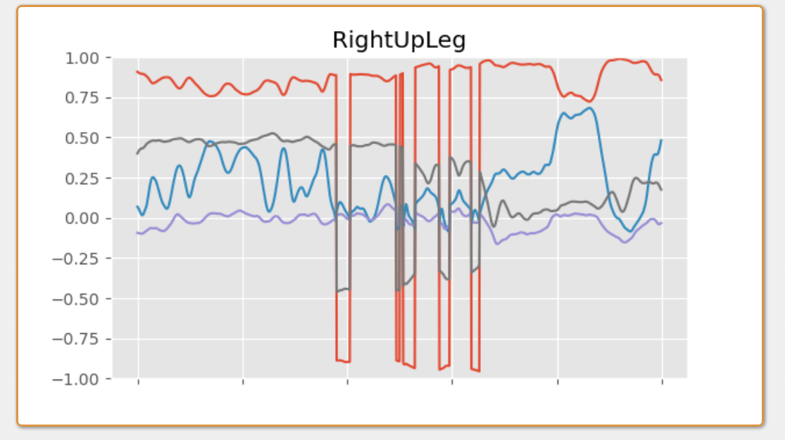 </p>
<p>If we want to fix this we need to do two things. <strong>First, we need to pick a cover for the very first frame in our animation. In this case we can force it to be the relative rotation &quot;going the short way around&quot; from the reference pose using (what I call) the <code>quat_abs</code> function. Next, we can &quot;unroll&quot; the rest of the rotations, removing any sudden switches of cover by ensuring each frame uses the quaternion closest to the rotation of the previous frame</strong> (in this code <code>slice1d</code> is a basic array-like type using <code>()</code> for indexing):</p>
<pre><code class="language-c++">quat quat_abs(quat x)
{
    return x.w &lt; 0.0 ? -x : x;
}

void quat_unroll_inplace(slice1d&lt;quat&gt; rotations)
{
    // Make initial rotation be the &quot;short way around&quot;
    rotations(0) = quat_abs(rotations(0));
    
    // Loop over following rotations
    for (int i = 1; i &lt; rotations.size; i++)
    {
        // If more than 180 degrees away from previous frame 
        // rotation then flip to opposite hemisphere
        if (quat_dot(rotations(i), rotations(i - 1)) &lt; 0.0f)
        {
            rotations(i) = -rotations(i);
        }
    }
}
</code></pre>
<p>This allows for relative rotations of more than 180 degrees compared to the reference pose, but only when they actually happen in the data. So now, for each frame, we have the rotation relative to the reference pose accounting for double cover and the fact that the &quot;identity pose&quot; is in most cases meaningless:</p>
<p>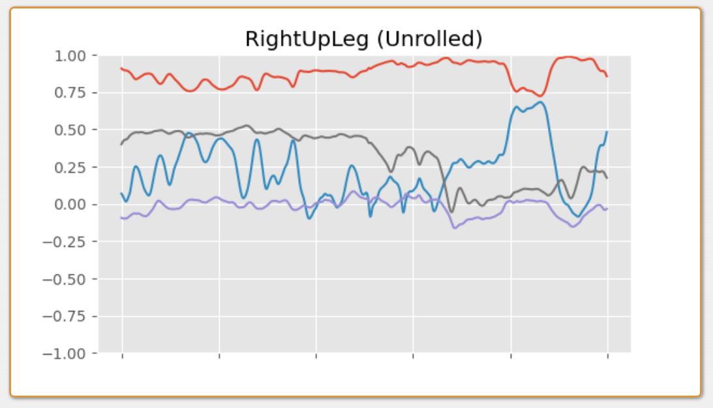 </p>
<p>If we convert these rotations into the <a href="https://theorangeduck.com/page/exponential-map-angle-axis-angular-velocity">scaled angle axis</a> representation, we end up with a 3d vector. And if we plot this for every frame in our dataset, we can get a <em>distribution of rotations</em> for each joint - we can see the full set of rotations used by each joint in our motion capture data. And the region where we have points describes the space of valid rotations for a particular joint - in other words - the joint limit. Here you can see these plots visualized for various different joints:</p>
<iframe 
src="../assets/JointRotationPlot.m4v" 
scrolling="no" 
border="0" 
frameborder="no" 
framespacing="0" 
allowfullscreen="true" 
height=600 
width=800> 
</iframe>
<p>Because this data is so dense we probably want to sub-sample it. Here I use an inefficient yet simple function that just builds up a list of samples by checking each new sample against all the existing ones for closeness.</p>
<pre><code class="language-c++">// Subsamples a set of `points`. Returns the 
// number of subsampled points. Output array 
// `subsampled` must be large enough for the 
// case where all points are returned. 
int subsample_naive(
    slice1d&lt;vec3&gt; subsampled,
    const slice1d&lt;vec3&gt; points,
    const float distance_threshold = 0.05f)
{
    int count = 0;
    
    // Include first point
    subsampled(count) = points(0);
    count++;
    
    // Loop over other points
    for (int i = 1; i &lt; points.size; i++)
    {
        // Include if no other subsampled point is within
        // `distance_threshold` of this point
        bool include = true;
        for (int j = 0; j &lt; count; j++)
        {
            if (length(subsampled(j) - points(i)) &lt; distance_threshold)
            {
                include = false;
                break;
            }
        }
        
        if (include)
        {
            // Add point and increment count
            subsampled(count) = points(i);
            count++;
        }
    }
    
    // Return number of subsampled points
    return count;
}
</code></pre>
<p>This gives us sub-sampled data which is a bit more evenly distributed in our space. We can also see what movement in this space looks like as we rotate the character's joints, as shown in pink below.</p>
<iframe 
src="../assets/JointRotationSubsample.m4v" 
scrolling="no" 
border="0" 
frameborder="no" 
framespacing="0" 
allowfullscreen="true" 
height=600 
width=800> 
</iframe>
<p>We can see already when we are rotating a joint beyond the limit. However, what we have here are just data points. If we actually want to do something, such as limiting rotations to be within this region, we need to turn this data into a projection function.</p>
<hr />
<h2 id="projection-functions"><a class="header" href="#projection-functions">Projection Functions</a></h2>
<p>There are a few operations we might want to perform when it comes to joint limits - we might want to check if a particular rotation is within the limit; we might want to see <em>how much</em> a rotation is violating a limit; and we might want to constrain a rotation which is violating a limit to the nearest valid rotation that respects the limit.</p>
<blockquote>
<p>✅
(1) f(R) =  True/False<br />
(2) f(R) = distance<br />
(3) f(R) = R'  // projection function</p>
</blockquote>
<p>Luckily, the first two of these operations are easy given the third one. If we have this function we can check if a rotation is inside the limit by seeing if the projection function changes it, and see how much a rotation is outside the limit by measuring <em>how much</em> the projection function changes it.</p>
<p>But first we need to pick a specific kind of projection function to use, and work out how to fit the parameters of this projection function to the data we are providing. We'll start with the most simple: rectangular projection.</p>
<hr />
<h2 id="rectangular-projection"><a class="header" href="#rectangular-projection">Rectangular Projection</a></h2>
<h3 id="aabb"><a class="header" href="#aabb">AABB</a></h3>
<blockquote>
<p>✅ 优点：简单。缺点：不准确。</p>
</blockquote>
<p>For rectangular projection we fit what is essentially an axis-aligned bounding box to the data by taking the min and max along each dimension.</p>
<pre><code class="language-c++">void fit_rectangular_limits_basic(
    vec3&amp; limit_min,
    vec3&amp; limit_max,
    const slice1d&lt;vec3&gt; limit_space_rotations,
    const float padding = 0.05f)
{
    // Set limits to opposite float min and max
    limit_min = vec3(FLT_MAX, FLT_MAX, FLT_MAX);
    limit_max = vec3(FLT_MIN, FLT_MIN, FLT_MIN);
  
    for (int i = 0; i &lt; limit_space_rotations.size; i++)
    {
        // Find min and max on each dimension
        limit_min = min(limit_min, limit_space_rotations(i));
        limit_max = max(limit_max, limit_space_rotations(i));
    }
    
    // Add some padding if desired to expand limit a little
    limit_min -= vec3(padding, padding, padding);
    limit_max += vec3(padding, padding, padding);
}
</code></pre>
<p>And then to project a point onto the surface of the bounding box we simply clamp it to these ranges.</p>
<pre><code class="language-c++">vec3 apply_rectangular_limit_basic(
    const vec3 limit_space_rotation,
    const vec3 limit_min,
    const vec3 limit_max)
{
    return clamp(limit_space_rotation, limit_min, limit_max);
}
</code></pre>
<p>This already does a fair job at constraining rotations, but doesn't provide a very tight fit - it allows many rotations far from what we had in our data - as you can see if we visualize the result of this projection:</p>
<iframe 
src="../assets/ProjectionRectangular.m4v" 
scrolling="no" 
border="0" 
frameborder="no" 
framespacing="0" 
allowfullscreen="true" 
height=600 
width=800> 
</iframe>
<h3 id="obb"><a class="header" href="#obb">OBB</a></h3>
<blockquote>
<p>✅ 优点：比AABB更紧凑的表达。缺点：在边界处不平滑。</p>
</blockquote>
<p>We can make the fit a bit tighter by using an oriented bounding box instead. To orient the bounding box we can use <a href="https://en.wikipedia.org/wiki/Singular_value_decomposition">SVD</a> to find the &quot;orientation&quot; of our data within the 3d space. Here I'm going to use the <a href="https://towardsdatascience.com/simple-svd-algorithms-13291ad2eef2">power iteration method</a>. This method is not particularly robust, fast, or accurate but it does at least have a relatively short and simple implementation in 3d.</p>
<blockquote>
<p>✅ 一个OBB可以看作是一个立方体经过旋转和形变得到。SVD就是求出这个旋转和形变。</p>
</blockquote>
<pre><code class="language-c++">vec3 mat3_svd_dominant_eigen(
    const mat3 A, 
    const vec3 v0,
    const int iterations, 
    const float eps)
{
    // Initial Guess at Eigen Vector &amp; Value
    vec3 v = v0;
    float ev = (mat3_mul_vec3(A, v) / v).x;
    
    for (int i = 0; i &lt; iterations; i++)
    {
        // Power Iteration
        vec3 Av = mat3_mul_vec3(A, v);
        
        // Next Guess at Eigen Vector &amp; Value
        vec3 v_new = normalize(Av);
        float ev_new = (mat3_mul_vec3(A, v_new) / v_new).x;
        
        // Break if converged
        if (fabs(ev - ev_new) &lt; eps)
        {
            break;
        }
        
        // Update best guess
        v = v_new;
        ev = ev_new;
    }
    
    return v;
}

void mat3_svd_piter(
    mat3&amp; U,
    vec3&amp; s,
    mat3&amp; V,
    const mat3 A, 
    const int iterations = 64,
    const float eps = 1e-5f)
{
    // First Eigen Vector
    vec3 g0 = vec3(1, 0, 0);
    mat3 B0 = A;
    vec3 u0 = mat3_svd_dominant_eigen(B0, g0, iterations, eps);
    vec3 v0_unnormalized = mat3_transpose_mul_vec3(A, u0);
    float s0 = length(v0_unnormalized);
    vec3 v0 = s0 &lt; eps ? g0 : normalize(v0_unnormalized);

    // Second Eigen Vector
    mat3 B1 = A;
    vec3 g1 = normalize(cross(vec3(0, 0, 1), v0));
    B1 = B1 - s0 * mat3_outer(u0, v0);
    vec3 u1 = mat3_svd_dominant_eigen(B1, g1, iterations, eps);
    vec3 v1_unnormalized = mat3_transpose_mul_vec3(A, u1);
    float s1 = length(v1_unnormalized);
    vec3 v1 = s1 &lt; eps ? g1 : normalize(v1_unnormalized);
    
    // Third Eigen Vector
    mat3 B2 = A;
    vec3 v2 = normalize(cross(v0, v1));
    B2 = B2 - s0 * mat3_outer(u0, v0);
    B2 = B2 - s1 * mat3_outer(u1, v1);
    vec3 u2 = mat3_svd_dominant_eigen(B2, v2, iterations, eps);
    float s2 = length(mat3_transpose_mul_vec3(A, u2));
    
    // Done
    U = mat3(u0, u1, u2);
    s = vec3(s0, s1, s2);
    V = mat3(v0, v1, v2);
}
</code></pre>
<p>Then, the bounding box location is given by the average point in the space, while the bounding box orientation is given by applying SVD to the inner product of the points, and taking the transpose of the <code>V</code> matrix.</p>
<pre><code class="language-c++">void fit_limit_orientations(
    vec3&amp; limit_position,
    mat3&amp; limit_rotation,
    const slice1d&lt;vec3&gt; limit_space_rotations)
{
    limit_position = vec3();
  
    // Compute Average Position
    for (int i = 0; i &lt; limit_space_rotations.size; i++)
    {
        limit_position = limit_position + 
            limit_space_rotations(i) / limit_space_rotations.size;
    }
    
    // Compute Inner Product
    mat3 inner_product = mat3_zero();
    
    for (int i = 0; i &lt; limit_space_rotations.size; i++)
    {
        vec3 v = limit_space_rotations(i) - limit_position;
      
        inner_product = inner_product + mat3(
            v.x * v.x, v.x * v.y, v.x * v.z,
            v.y * v.x, v.y * v.y, v.y * v.z,
            v.z * v.x, v.z * v.y, v.z * v.z) / limit_space_rotations.size;
    }
    
    // Perform SVD to extract rotation
    vec3 s;
    mat3 U, V;
    mat3_svd_piter(U, s, V, inner_product);
    
    limit_rotation = mat3_transpose(V);
}
</code></pre>
<p>Once we have the position and orientation computed we need to transform our points by the inverse of this orientation and position (to align and center them) before computing the min and max.</p>
<pre><code class="language-c++">void fit_rectangular_limits(
    vec3&amp; limit_min,
    vec3&amp; limit_max,
    const vec3 limit_position,
    const mat3 limit_rotation,
    const slice1d&lt;vec3&gt; limit_space_rotations,
    const float padding = 0.05f)
{
    limit_min = vec3(FLT_MAX, FLT_MAX, FLT_MAX);
    limit_max = vec3(FLT_MIN, FLT_MIN, FLT_MIN);
  
    for (int i = 0; i &lt; limit_space_rotations.size; i++)
    {
        // Inverse transform point using position and rotation
        vec3 limit_point = mat3_transpose_mul_vec3(
            limit_rotation,
            limit_space_rotations(i) - limit_position);
      
        limit_min = min(limit_min, limit_point);
        limit_max = max(limit_max, limit_point);
    }
    
    limit_min -= vec3(padding, padding, padding);
    limit_max += vec3(padding, padding, padding);
}
</code></pre>
<p>For projection we do the same thing, transforming back again after clamping.</p>
<pre><code class="language-c++">vec3 apply_rectangular_limit(
    const vec3 limit_space_rotation,
    const vec3 limit_min,
    const vec3 limit_max,
    const vec3 limit_position,
    const mat3 limit_rotation)
{
    // Inverse transform point using position and rotation
    vec3 limit_point = mat3_transpose_mul_vec3(
        limit_rotation,
        limit_space_rotation - limit_position);
        
    // Clamp point
    limit_point = clamp(limit_point, limit_min, limit_max);
    
    // Transform point using position and rotation
    return mat3_mul_vec3(limit_rotation, limit_point) + limit_position;
}
</code></pre>
<p>This oriented bounding box provides a tighter fit:</p>
<iframe 
src="../assets/ProjectionOriented.m4v" 
scrolling="no" 
border="0" 
frameborder="no" 
framespacing="0" 
allowfullscreen="true" 
height=600 
width=800> 
</iframe>
<p>However there is a discontinuity around the box corners and edges where visually it looks like the projected rotation is suddenly changing direction. Are there any other shapes we can try that may be smoother?</p>
<hr />
<h2 id="elliptical-projection"><a class="header" href="#elliptical-projection">Elliptical Projection</a></h2>
<blockquote>
<p>🔎 Elliptical：椭球<br />
✅ 优点：边界平滑。期望改进：让封闭球再紧凑一点。</p>
</blockquote>
<p>What about fitting an ellipsoid? Here we can again use SVD to extract the orientation, and then use the displacement on each axis to estimate a scale. Finally, we need to scale the overall ellipsoid to ensure all points are within it:</p>
<pre><code class="language-c++">void fit_ellipsoid_limits(
    vec3&amp; limit_scale,
    const vec3 limit_position,
    const mat3 limit_rotation,
    const slice1d&lt;vec3&gt; limit_space_rotations,
    const float padding = 0.05f)
{   
    // Estimate Scales
    limit_scale = vec3(padding, padding, padding);
  
    for (int i = 0; i &lt; limit_space_rotations.size; i++)
    {
        vec3 limit_point = mat3_transpose_mul_vec3(
            limit_rotation,
            limit_space_rotations(i) - limit_position);
      
        limit_scale = max(limit_scale, abs(limit_point));
    }
    
    // Compute required radius
    float radius = 0.0f;
    for (int i = 0; i &lt; limit_space_rotations.size; i++)
    {
        vec3 limit_point = mat3_transpose_mul_vec3(
            limit_rotation,
            limit_space_rotations(i) - limit_position);
      
        radius = maxf(radius, length(limit_point / limit_scale));
    }
    
    // Scale by required radius
    limit_scale = max(radius * limit_scale, vec3(padding, padding, padding));
}
</code></pre>
<p>Once we have the ellipsoid scale computed, the function for projection onto an ellipsoid surface is surprisingly tricky as it <a href="https://www.geometrictools.com/Documentation/DistancePointEllipseEllipsoid.pdf">has no closed form solution</a>. But, there is <a href="https://github.com/nedelec/Orthogonal-Projection-on-Ellipsoid">a gradient based method</a> we can use which converges in just a few iterations.</p>
<pre><code class="language-c++">vec3 apply_ellipsoid_limit(
    const vec3 limit_space_rotation,
    const vec3 limit_scale,
    const vec3 limit_position,
    const mat3 limit_rotation,
    const int iterations = 8,
    const float eps = 1e-5f)
{
    // Inverse transform point using position and rotation
    vec3 limit_point = mat3_transpose_mul_vec3(
        limit_rotation,
        limit_space_rotation - limit_position);
    
    // If already inside ellipsoid just return
    if (length(limit_point / limit_scale) &lt;= 1.0f)
    {
        return limit_space_rotation;
    }
    
    vec3 ss = limit_scale * limit_scale + eps;

    float ss_mid = (ss.y &lt; ss.x) ? 
        (ss.z &lt; ss.x ? ss.x : ss.z) : 
        (ss.z &lt; ss.y ? ss.y : ss.z);
    
    float hmin = sqrtf(dot(limit_point * limit_point, ss * ss) / ss_mid) - ss_mid;
    hmin = maxf(hmin, (fabs(limit_point.x) - limit_scale.x) * limit_scale.x);
    hmin = maxf(hmin, (fabs(limit_point.y) - limit_scale.y) * limit_scale.y);
    hmin = maxf(hmin, (fabs(limit_point.z) - limit_scale.z) * limit_scale.z);

    if (dot(limit_point, limit_point / ss.x) &gt; 1.0f &amp;&amp; hmin &lt; 0.0f)
    {
        hmin = 0;
    }

    float h = hmin;
    float hprev;

    // Iterations of Newton-Raphson
    for (int i = 0; i &lt; iterations; i++)
    {
        vec3 wa = limit_point / (ss + h);
        vec3 pp = wa * wa * ss;

        hprev = h;
        h = h - (1.0f - sum(pp)) / (2.0f * sum(pp / (ss + h)));

        if (h &lt; hmin)
        {
            h = 0.5f * (hprev + hmin);
            continue;
        }
        
        if (h &lt;= hprev)
        {
            break;
        }
    }

    // Project onto surface
    limit_point = limit_point * ss / (ss + h);
    
    // Transform point using position and rotation
    return mat3_mul_vec3(limit_rotation, limit_point) + limit_position;
}
</code></pre>
<p>And here we can see it visualized on the character:</p>
<iframe 
src="../assets/ProjectionEllipsoid.m4v" 
scrolling="no" 
border="0" 
frameborder="no" 
framespacing="0" 
allowfullscreen="true" 
height=600 
width=800> 
</iframe>
<p>While the ellipsoid gives a nice smooth limit, and a good fit when the data is distributed nicely, it's not very tight when the data is a weird shape. What else can we try?</p>
<hr />
<h2 id="k-dop-projection"><a class="header" href="#k-dop-projection">K-Dop Projection</a></h2>
<blockquote>
<p>🔎 K-Dop：K面体<br />
✅ 优点：紧凑。缺点：边界不太平滑。</p>
</blockquote>
<p>We can also try the so-called <a href="http://www.sccg.sk/%7Esamuelcik/dgs/04_en.pdf">K-Dop</a>, which essentially consists of shape described by an arbitrary number of planes aligned on different axes. When we fit this shape we essentially store the min and max of our data along each of these axes.</p>
<pre><code class="language-c++">void fit_kdop_limits(
    slice1d&lt;float&gt; limit_mins,
    slice1d&lt;float&gt; limit_maxs,
    const vec3 limit_position,
    const mat3 limit_rotation,
    const slice1d&lt;vec3&gt; limit_space_rotations,
    const slice1d&lt;vec3&gt; limit_kdop_axes,
    const float padding = 0.05f)
{
    // Set limits to opposite float min and max
    limit_mins.set(FLT_MAX);
    limit_maxs.set(FLT_MIN);
  
    for (int i = 0; i &lt; limit_space_rotations.size; i++)
    {
        // Inverse transform point using position and rotation
        vec3 limit_point = mat3_transpose_mul_vec3(
            limit_rotation,
            limit_space_rotations(i) - limit_position);
        
        for (int k = 0; k &lt; limit_kdop_axes.size; k++)
        {   
            // Find how much point extends on each kdop axis
            float limit_point_proj = dot(limit_kdop_axes(k), limit_point);
            limit_mins(k) = minf(limit_mins(k), limit_point_proj);
            limit_maxs(k) = maxf(limit_maxs(k), limit_point_proj);
        }
    }
    
    // Add some padding if desired to expand limit a little
    for (int k = 0; k &lt; limit_kdop_axes.size; k++)
    {
        limit_mins(k) -= padding;
        limit_maxs(k) += padding;
    }
}
</code></pre>
<p>We can then use these limits to clamp the point along each of the specified axes.</p>
<pre><code class="language-c++">vec3 apply_kdop_limit(
    const vec3 limit_space_rotation,
    const slice1d&lt;float&gt; limit_mins,
    const slice1d&lt;float&gt; limit_maxs,
    const vec3 limit_position,
    const mat3 limit_rotation,
    const slice1d&lt;vec3&gt; kdop_axes)
{   
    // Inverse transform point using position and rotation
    vec3 limit_point = mat3_transpose_mul_vec3(
        limit_rotation,
        limit_space_rotation - limit_position);
        
    for (int k = 0; k &lt; kdop_axes.size; k++)
    {   
        // Clamp point along given axes
        vec3 t0 = limit_point - limit_mins(k) * kdop_axes(k);
        vec3 t1 = limit_point - limit_maxs(k) * kdop_axes(k);
        limit_point -= minf(dot(t0, kdop_axes(k)), 0.0f) * kdop_axes(k);
        limit_point -= maxf(dot(t1, kdop_axes(k)), 0.0f) * kdop_axes(k);
    }
    
    // Transform point using position and rotation
    return mat3_mul_vec3(limit_rotation, limit_point) + limit_position;
}
</code></pre>
<p>A set of axes I like to use are each of the primary axes as well as all corners and edges to produce a shape like a <a href="https://en.wikipedia.org/wiki/Rhombicuboctahedron">rhombicuboctahedron</a>:</p>
<blockquote>
<p>🔎 rhombicuboctahedron：菱方八面体</p>
</blockquote>
<iframe 
src="../assets/ProjectionKDop.m4v" 
scrolling="no" 
border="0" 
frameborder="no" 
framespacing="0" 
allowfullscreen="true" 
height=600 
width=800> 
</iframe>
<p>As you can see, this definitely gives better bounds than before, but the edges are still a bit sharp as with the bounding box.</p>
<hr />
<h2 id="softening"><a class="header" href="#softening">Softening</a></h2>
<p>Right now our projection functions are not very smooth when they move around the different faces of the surface, and there is a sudden locking of the rotation when the joint limit becomes violated. Instead we can &quot;soften&quot; them by not entirely projecting points completely back onto the surface but instead <strong>giving some leeway when the projection is from very far</strong>.</p>
<p>My little recipe for this is to saturate the projection distance with a <code>tanh</code> function, and use it to decide how much of some fixed addition radius to add around the limit surface.</p>
<pre><code class="language-c++">vec3 projection_soften(
    const vec3 original_position,
    const vec3 projected_position,
    const float falloff = 1.0f,
    const float radius = 0.1f,
    const float eps = 1e-5f)
{
    float distance = length(projected_position - original_position);
    
    if (distance &gt; eps)
    {
        // Compute how much softening to apply up to `radius`
        float softening = tanhf(falloff * distance) * radius;
        
        // Add softening toward original position
        return projected_position + 
            normalize(original_position - projected_position) * softening;
    }
    else
    {
        // No projection applied
        return projected_position;
    }
}
</code></pre>
<p>This nicely softens our limits, making transitions between faces of the limit surface smoother as well as allowing some small deviation from the limit when projecting large violations:</p>
<iframe 
src="../assets/ProjectionSoften.m4v" 
scrolling="no" 
border="0" 
frameborder="no" 
framespacing="0" 
allowfullscreen="true" 
height=600 
width=800> 
</iframe>
<hr />
<h2 id="swing-twist-decomposition"><a class="header" href="#swing-twist-decomposition">Swing-Twist Decomposition</a></h2>
<p>There is a nice way to decompose our relative rotations which in some cases allows for <strong>tighter</strong> and <strong>more natural</strong> limits. We can decompose our rotations into two separate rotations; one consisting of a <strong>twist around an axis</strong>, and one consisting of a <strong>swing about that axis</strong>. If we choose the axis extending toward the primary child joint we get a very natural decomposition for our rotations. For quaternions this swing twist decomposition can be implemented as follows:</p>
<pre><code class="language-c++">void quat_swing_twist(
    quat&amp; swing,
    quat&amp; twist,
    const quat q,
    const vec3 axis)
{
    vec3 p = dot(vec3(q.x, q.y, q.z), axis) * axis;
    twist = quat_normalize(quat(q.w, p.x, p.y, p.z));
    swing = -quat_mul_inv(q, twist);
}
</code></pre>
<p>To get the twist axes we need to look at the extension of the child joints:</p>
<pre><code class="language-c++">void compute_twist_axes(
    slice1d&lt;vec3&gt; twist_axes,
    const slice1d&lt;vec3&gt; reference_positions,
    const slice1d&lt;int&gt; bone_parents,
    const vec3 default_twist_axis = vec3(1, 0, 0),
    const float eps = 1e-8f)
{
    twist_axes.zero();
    
    for (int i = 0; i &lt; bone_parents.size; i++)
    {
        // Compute average extension of child bones
        for (int j = 0; j &lt; bone_parents.size; j++)
        {
            if (bone_parents(j) == i)
            {
                twist_axes(i) = twist_axes(i) + reference_positions(j);
            }
        }

        // If children found normalize, otherwise use default axis
        if (length(twist_axes(i)) &gt; eps)
        {
            twist_axes(i) = normalize(twist_axes(i));
        }
        else
        {
            twist_axes(i) = default_twist_axis;
        }
    }
}
</code></pre>
<p>Then, we can decompose each of our joint rotations into two, and essentially repeat the whole process outlined above but for two rotations at each joint instead of one.</p>
<iframe 
src="../assets/ProjectionSwingTwist.m4v" 
scrolling="no" 
border="0" 
frameborder="no" 
framespacing="0" 
allowfullscreen="true" 
height=600 
width=800> 
</iframe>
<p>One interesting thing to notice is that swing-twist decomposition separates out the three degrees of freedom of the rotation. The twist rotation typically only varies in one direction so the data is distributed on a line, while the swing only moves in the two other axes, and so is distributed on a plane. If we wanted we could therefore use 1d and 2d versions of our joint limit functions, but since our current implementation deals with the degenerate cases well enough I wont cover that here.</p>
<hr />
<h2 id="inverse-kinematics"><a class="header" href="#inverse-kinematics">Inverse Kinematics</a></h2>
<p>In general joint limits can be used to avoid bad posing produced by various other parts of the animation system such as blending, inertialization, or other procedural animation like inverse kinematics.</p>
<p>For example, here I rigged up a little demo with some very basic inverse kinematics showing how we can use the joint limits to ensure the character never produces a bad pose.</p>
<iframe 
src="../assets/InverseKinematics.m4v" 
scrolling="no" 
border="0" 
frameborder="no" 
framespacing="0" 
allowfullscreen="true" 
height=600 
width=800> 
</iframe>
<hr />
<h2 id="look-at"><a class="header" href="#look-at">Look-At</a></h2>
<p>Here is another example. In this case I set up a basic procedural look-at system that rotates the spine and head toward the target:</p>
<iframe 
src="../assets/LookAt.m4v" 
scrolling="no" 
border="0" 
frameborder="no" 
framespacing="0" 
allowfullscreen="true" 
height=600 
width=800> 
</iframe>
<p>The movement is a bit exaggerated, but notice how with joint limits enabled the character exhausts their ability to rotate their spine before continuing to rotate their head. On the other hand, without joint limits the character rotates their spine beyond what is humanly possible.</p>
<hr />
<h2 id="other-applications"><a class="header" href="#other-applications">Other Applications</a></h2>
<p>Although I only show two examples here, I think there are many more potential applications for joint limits. I'm certain they could be useful in IK systems such as <a href="http://andreasaristidou.com/FABRIK.html">FABRIK</a>, or in pseudo-physical systems such as <a href="https://www.cs.cmu.edu/afs/cs/academic/class/15462-s13/www/lec_slides/Jakobsen.pdf">verlet physics ragdolls</a>. They could also be useful in deep learning - such as in the loss function of a neural network generating animations.</p>
<p>There is also a link between what we are doing in this article and machine learning itself. Fitting a projection function from data is exactly the goal of a lot of modern machine learning (such as <a href="https://towardsdatascience.com/denoising-autoencoders-explained-dbb82467fc2">denoising</a>), so there could be interesting ideas here such as training neural networks to learn to limit groups of joints rather than using geometric primitives.</p>
<p>One more thing I didn't mention is that this same process can be used to automatically compute the joint limits required for physically simulated characters such as the one shown in <a href="https://montreal.ubisoft.com/en/drecon-data-driven-responsive-control-of-physics-based-characters/">DReCon</a>, but converting these limits into the format required by the physics engine is a little finicky (and not that interesting) so I don't cover it here.</p>
<hr />
<h2 id="issues"><a class="header" href="#issues">Issues</a></h2>
<p>One of the issues with doing joint limits in this way (which you may have already spotted in the videos) - is that it can be difficult to avoid the projection &quot;switching sides&quot; and causing a sudden large change to the pose.</p>
<p>You can think of it like this: when an angle of rotation goes over 180 degrees, and reaches 181 degrees, the fastest way to get back to zero becomes not to rotate it by -181 degrees, but to rotate it by a <em>further</em> +179 degrees instead. The very same thing can happen for our limits - the nearest rotation can suddenly jump to something very different when it passes &quot;onto the other side&quot; of the limit.</p>
<p>There are a few potential solutions to this - we can use the quaternion double cover to keep track of rotations that extend over 180 degrees from the limit at runtime. We can also try to smooth out or inertialize this switch if we can detect it. Overall, whatever hack we use, probably the most effective way is simply to try and avoid rotations which rotate more than 180 degrees away from the reference pose.</p>
<hr />
<h2 id="web-demo"><a class="header" href="#web-demo">Web Demo</a></h2>
<p>If you want to have a fiddle around with anything shown in this article I've prepared a little web demo <a href="https://www.daniel-holden.com/media/uploads/JointLimits/jointlimits.html">here</a>.</p>
<hr />
<h2 id="source-code-1"><a class="header" href="#source-code-1">Source Code</a></h2>
<p>All the code for the examples shown here can also be found on <a href="https://github.com/orangeduck/Joint-Limits">this repo</a>.</p>
<hr />
<h2 id="conclusion-4"><a class="header" href="#conclusion-4">Conclusion</a></h2>
<p>I enjoyed writing this article because it combines a lot of things I like: an elegant and scalable data-driven solution to an interesting problem, some fun mathematics with a strong visual element, and some cool practical applications. I hope you've enjoyed it too, and perhaps it has spawned some ideas in your own heads about joint limits, or how data can be used to inform things like procedural animation, blending, and the other fundamental operations we do in animation. I'd love to hear if you come up with anything interesting. Until then, thanks for reading!</p>
<hr />
<blockquote>
<p>本文出自CaterpillarStudyGroup，转载请注明出处。</p>
<p>https://caterpillarstudygroup.github.io/ImportantArticles/</p>
</blockquote>
<div style="break-before: page; page-break-before: always;"></div><p>转载出处：https://www.daniel-holden.com/page/visualizing-rotation-spaces</p>
<h1 id="visualizing-rotation-spaces"><a class="header" href="#visualizing-rotation-spaces">Visualizing Rotation Spaces</a></h1>
<p>Created on June 13, 2021, 3:54 p.m.</p>
<p>There are many different ways we can represent the rotation of an object in 3D space. The most classic of these is the <a href="https://en.wikipedia.org/wiki/Rotation_matrix">Rotation Matrix</a>, but there are others you might have come across such as <a href="https://en.wikipedia.org/wiki/Euler_angles">Euler Angles</a>, <a href="https://www.3dgep.com/understanding-quaternions/">Quaternions</a>, and the <a href="http://webhome.cs.uvic.ca/%7Eblob/courses/485c/notes/pdf/expmap.pdf">Exponential Map</a>.</p>
<p>It can be hard to get a deeper, intuitive understanding for some of these other representations, but one way to do so is to try and think about the space they encode, and the rotations given by the points in those spaces.</p>
<p>I thought I would share how I visualize in my head each of these spaces. To do so I tried to encode each valid rotation in the space as a differently colored point and render them like a volume. The mapping is not entirely perfect - nearby rotations are given similar colors, but some different rotations have the same color (albeit a different gradient). Nonetheless, I think it overall gives a good starting point for how to picture these spaces and work with them.</p>
<p>If you want to see exactly how I made these visualizations be sure to check out the source code at the bottom of the page.</p>
<hr />
<h2 id="euler-angles"><a class="header" href="#euler-angles">Euler Angles</a></h2>
<p>Euler angles are sets of three angles each of which represents a rotation around a different axis. These are then combined together to produce a final rotation by applying one rotation after the other. We can therefore imagine the space of Euler angles as being a 3D space, where each point represents a unique set of three Euler angles, encoding a different rotation.</p>
<p>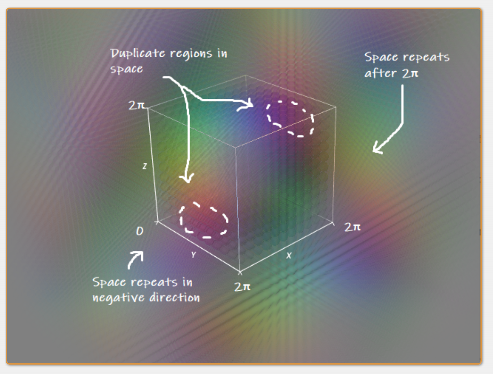 </p>
<p>Right away we can see some interesting things about this 3D space - first, it repeats itself periodically every \(2\pi \) - as, no matter what the axis, rotating by \(2\pi+x \) is the same as just rotating by <code>x</code>.</p>
<blockquote>
<p>✅ 属性一：以\(2\pi \)为周期重复。</p>
</blockquote>
<p>This periodic repetition isn't like a <code>mod</code> function with a sudden discontinuity - instead it's smooth like a <code>sin</code> function. If we look at values less than zero we can see this same periodic repetition into the negative space too, as rotating by \(-x \) is the same as \(2\pi+x \).</p>
<blockquote>
<p>✅ 属性二：周期交界处连续。</p>
</blockquote>
<p>A weird thing about this space is that if you look very closely there are duplicate regions inside this 3D cube of rotations. Depending on the axes we choose and the order we apply our rotations there can sometimes be multiple ways to get to the same final rotation. Similarly, if we switch the order of rotations we get a completely different space.</p>
<blockquote>
<p>✅ 属性三：周期内（\(2\pi \)范围内）有重复。即同一状态可能有多种表达。</p>
</blockquote>
<p>For some extreme rotations we can also face the issue of <a href="https://en.wikipedia.org/wiki/Gimbal_lock">gimbal lock</a>, where a specific combination of two rotations can make the third unable to do anything, rendering a whole region of the space the same.</p>
<blockquote>
<p>✅ 属性四：gimbal lock</p>
</blockquote>
<iframe 
src="../assets/euler_angles.mp4" 
scrolling="no" 
border="0" 
frameborder="no" 
framespacing="0" 
allowfullscreen="true" 
height=600 
width=800> 
</iframe> 
<p>You can interpolate in this space, but the result is not going to be the shortest path between between the two rotations, and depending on the way the angles are combined it can result in all sorts of weird twists and swings as we pass through different regions of the space.</p>
<blockquote>
<p>✅ 属性五：插值不友好。会引入额外的自转或旋转。</p>
</blockquote>
<p>There are also no &quot;holes&quot; in this space - every point within it represents a valid rotation, from the origin outward to infinity. We can use this to represent rotations which &quot;wrap around&quot; multiple times by using these larger repetitions. This can be both good and bad depending on what our application is - we may want to distinguish between rotations of \(2\pi\) and \(4\pi\) or we may prefer they were always both encoded by the same value.</p>
<blockquote>
<p>✅ 属性六：所有3D空间的取值都是合法的。</p>
</blockquote>
<p>If we look at an individual axis we might think this space acts like normal angles do, looping around every \(2\pi\), but expand this to three dimensions and while we <em>can</em> represent any rotation in 3D space we want, generally we can't do so in a consistent or regular way and inside this cube we have weird deformations that change based on the axes of rotation and the order of application.</p>
<blockquote>
<p>✅ 属性七：在3D中各向异性。只有沿着特定轴才会表现出\(2\pi\)周期。</p>
</blockquote>
<hr />
<h2 id="quaternions"><a class="header" href="#quaternions">Quaternions</a></h2>
<p>Quaternions are four dimensional numbers that can be used to represent rotations. These four numbers are generally &quot;normalized&quot;, meaning the total length of the vector is one. We can therefore say that normalized quaternions lie on the surface of a four dimensional hyper-sphere with radius one. While we can't easily visualize a four dimensional hyper-sphere we <em>can</em> easily visualize a three dimensional sphere by simply forgetting about one of the dimensions (we can assume it is always zero).</p>
<p>I like to visualize the <code>w</code> dimension on the vertical axis, and the <code>x</code> and <code>y</code> dimensions on the other two axes, meaning that the identity quaternion <code>[1 0 0 0]</code> is encoded by the point right at the north pole of the sphere:</p>
<blockquote>
<p>✅ 3D坐标为(w, x, y)</p>
</blockquote>
<p>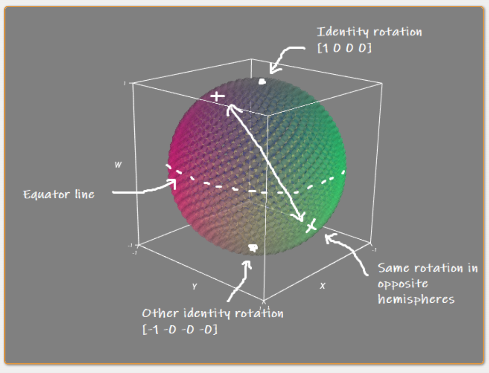 </p>
<p>As we move down the surface of the sphere from the top to bottom we start to represent rotations of greater amounts up until we get to the equator, which represents rotations of \(2\pi\) (or \(-\pi\)) around each dimension. If we keep moving down we start to represent rotations of over \(\pi\), until we get back down to the south-pole, which encodes a full rotation of \(2\pi\).</p>
<blockquote>
<p>✅ \(\cos(\frac{0}{2})=1\), \(\cos(\frac{\pi}{2})=0\), \(\cos(\frac{2\pi}{2})=-1\)</p>
</blockquote>
<p>This gives us our first interesting insight into quaternions - the south-pole encodes the same rotation as the north-pole - the identity rotation. In fact, the whole of the southern hemisphere encodes rotations which are also represented in the northern hemisphere and we can switch between these two simply by negating the quaternion. While <strong>the north and south hemispheres encode the same rotation in absolute terms</strong>, we usually say <strong>the southern hemisphere represents rotations &quot;going the long way round&quot;</strong> - e.g. rotating by \(\frac{3}{2} \pi \) instead of  \(-\frac{1}{2} \pi \). This fact that quaternions can have two different encodings for the same rotation is the so called &quot;double cover&quot; property of the quaternions.</p>
<p>This may sound odd at first but it isn't any different to the Euler angles in some respect - these also have multiple &quot;covers&quot; of the space of rotations - in fact the Euler angles have infinite &quot;covers&quot; - there is another one each time the space repeats. And when you look at it this way it may even seem odd that the quaternions only have two covers - they can only represent rotations between \(-2 \pi \) and  \(+2 \pi \) because they are limited to this finite surface on the hyper-sphere.</p>
<blockquote>
<p>✅ 属性一：每个四元数有两种表示。</p>
</blockquote>
<p>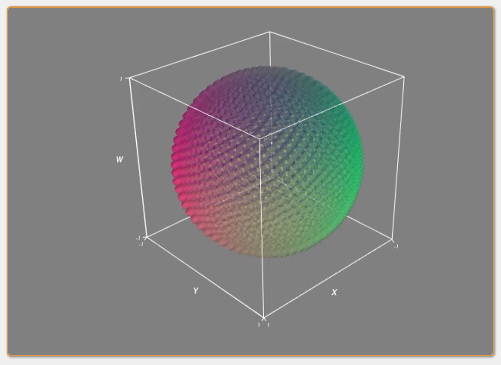 </p>
<p>The normalized quaternions have a big &quot;hole&quot; in the middle of the sphere (and outside the sphere) of values that don't (by default) represent a valid rotation. And even if we consider un-normalized quaternions as valid rotations (we say they can just be normalized), there is still the point right at the origin which cannot represent a valid rotation.</p>
<blockquote>
<p>✅ 属性二：存在不合法的表示。</p>
</blockquote>
<p>If we want to interpolate two quaternions there are two ways to do it - we can linearly interpolate and then re-normalize to get back onto the surface of the sphere, or we can interpolate along the surface of the sphere (the so called <a href="https://en.wikipedia.org/wiki/Slerp">slerp</a> function). Both can work fine as long as we are careful when we interpolate rotations from two different hemispheres of the sphere as we might find we end up &quot;going the long way around&quot; by mistake.</p>
<blockquote>
<p>✅ 属性三：可直接插值，但对于两个半球的表示的插值，可能插出不合适的路径。</p>
</blockquote>
<p>I like to think of the quaternion space of rotations in terms of its two hemispheres - with all rotations at the top representing &quot;short&quot; (less than \(\pi \) in magnitude) rotations, and all those at the bottom going &quot;the long way round&quot;. When we multiply quaternions we are essentially traveling around the surface of this sphere as if flying a plane around the globe. No matter how many rotations we combine we never end up off the surface, but we can quickly lose track of (or meaning in) how many times we may have looped around and in which hemisphere we are now located.</p>
<hr />
<h2 id="exponential-map"><a class="header" href="#exponential-map">Exponential Map</a></h2>
<p>The <a href="https://www.daniel-holden.com/page/exponential-map-angle-axis-angular-velocity">exponential map</a> is an encoding of a rotation where we take the axis of rotation, and scale it by the angle of rotation around that axis, divided by two. This produces a 3D vector space where the origin encodes the identity rotation, and further rotations along each axis are encoded by vectors extending in those directions.</p>
<blockquote>
<p>✅ angle * axis / 2<br />
✅ (0, 0, 0)代表identity</p>
</blockquote>
<p>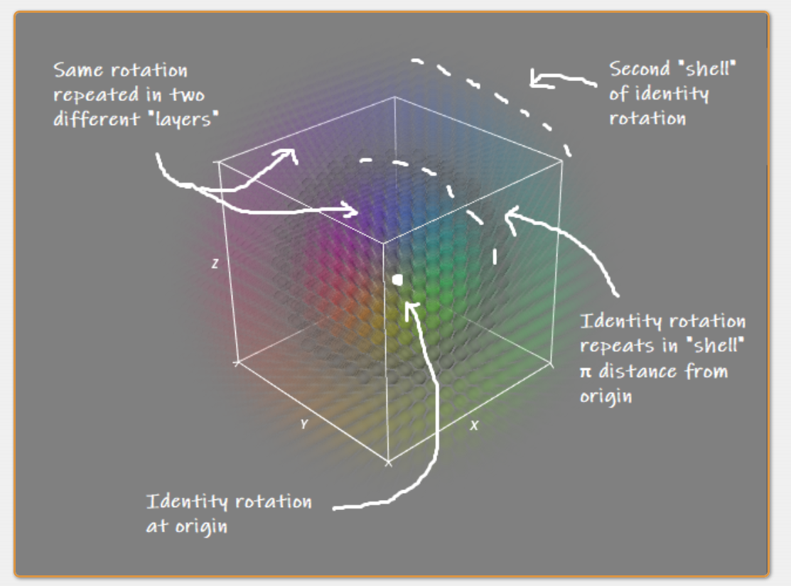 </p>
<p>Unlike the Euler angle space, which is shaped like a cube, the exponential map produces a space like a kind of solid sphere, with &quot;shells&quot; of identity rotation every \(\pi \) distance from the origin and additional &quot;layers&quot; which encode the same set of rotations on top.</p>
<blockquote>
<p>✅ 半径为\(\pi \)的地方也是identity</p>
</blockquote>
<iframe 
src="../assets/exponential_map.mp4" 
scrolling="no" 
border="0" 
frameborder="no" 
framespacing="0" 
allowfullscreen="true" 
height=600 
width=800> 
</iframe> 
<p><strong>Both linear interpolation and spherical interpolation can work in this space</strong>, and as long as you don't interpolate between &quot;layers&quot; by mistake, they both work pretty nicely. Like the Euler angles, this space provides infinite &quot;covers&quot;, and as we move further away from the origin we can represent multiple &quot;wrap arounds&quot; of rotation up to infinity. There are also no undefined points in the space - every point represents a valid rotation and the identity rotation is neatly at zero.</p>
<blockquote>
<p>✅ 属性一：方便插值<br />
✅ 属性二：无非法值<br />
❓ interpolate between &quot;layers&quot;是什么意思？为什么说这是错误的？</p>
</blockquote>
<p>This space has a lot of nice properties, but it lacks one very important one - an efficient way of composing rotations - which is why we usually need to convert back to the quaternion representation first. Sad, because other than that I think it's a pretty cool looking space!</p>
<blockquote>
<p>✅ 属性三：不能进行进行旋转的组合。</p>
</blockquote>
<hr />
<h2 id="source-code-2"><a class="header" href="#source-code-2">Source Code</a></h2>
<p>If you want to try out any of the these visualizations yourself here is the quick and dirty code I used to generate these images/videos. You can also see the exact algorithm I used to color the points - essentially I take the axis of rotation as the RGB color, and then interpolate it with grey based on the amount of rotation around that axis (this makes the identity rotation grey).</p>
<pre><code class="language-python">import numpy as np
from mayavi import mlab

&quot;&quot;&quot; General Functions &quot;&quot;&quot;

def quat_from_angle_axis(angle, axis):
    c = np.cos(angle / 2.0)
    s = np.sin(angle / 2.0)
    return np.concatenate([c[...,None], s[...,None] * axis], axis=-1)

def quat_mul(x, y):
    
    x0, x1, x2, x3 = x[...,0:1], x[...,1:2], x[...,2:3], x[...,3:4]
    y0, y1, y2, y3 = y[...,0:1], y[...,1:2], y[...,2:3], y[...,3:4]

    return np.concatenate([
        y0 * x0 - y1 * x1 - y2 * x2 - y3 * x3,      
        y0 * x1 + y1 * x0 - y2 * x3 + y3 * x2,   
        y0 * x2 + y1 * x3 + y2 * x0 - y3 * x1,    
        y0 * x3 - y1 * x2 + y2 * x1 + y3 * x0], axis=-1)

def quat_from_euler(x):
    r0 = quat_from_angle_axis(x[...,0], np.array([1,0,0]))
    r1 = quat_from_angle_axis(x[...,1], np.array([0,1,0]))
    r2 = quat_from_angle_axis(x[...,2], np.array([0,0,1]))
    return quat_mul(r2, quat_mul(r1, r0))

def quat_log(q, eps=1e-8):
    length = np.sqrt(np.sum(q[...,1:]*q[...,1:], axis=-1))
    return np.where((length &lt; eps)[...,None],
        q[...,1:],
        (np.arctan2(length, q[...,0]) / length)[...,None] * q[...,1:])

def lerp(x, y, a):
    return (1.0 - a) * x + a * y

def log_color(x, eps=1e-8):
    length = np.sqrt(np.sum(x*x, axis=-1))
    color = ((x / length[...,None]) + 1.0) / 2.0
    grey = np.array([0.5, 0.5, 0.5])
    return np.where((length &lt; eps)[...,None],
        grey,
        lerp(grey, color, 1 - (np.cos(2 * length)[...,None] + 1) / 2))

def plot(position, color, opacity, scale=0.5):
    
    # Convert to uint8
    rgba = np.concatenate([color, opacity[...,None]], axis=-1)
    rgba = np.clip(255 * rgba, 0, 255).astype(np.uint8)

    # plot the points
    pts = mlab.pipeline.scalar_scatter(
        position[...,0].ravel(), 
        position[...,1].ravel(), 
        position[...,2].ravel())
    
    # assign the colors to each point
    pts.add_attribute(rgba.reshape([-1, 4]), 'colors') 
    pts.data.point_data.set_active_scalars('colors')
    
    # set scaling for all the points
    g = mlab.pipeline.glyph(pts, transparent=True)
    g.glyph.glyph.scale_factor = scale 
    g.glyph.scale_mode = 'data_scaling_off'

&quot;&quot;&quot; Euler Angles Visualization &quot;&quot;&quot;

mlab.figure(size=(640, 600))

position = []
for x in np.linspace(-2*np.pi, 4*np.pi, 35):
    for y in np.linspace(-2*np.pi, 4*np.pi, 35):
        for z in np.linspace(-2*np.pi, 4*np.pi, 35):
            position.append(np.array([x, y, z]))
            
position = np.array(position)

color = log_color(quat_log(quat_from_euler(position)))

inner_distance = np.max(abs(position - np.clip(position, 0, 2*np.pi)), axis=-1)
inner_factor = inner_distance / (2*np.pi)
inner_mask = inner_distance &lt; 1e-5

opacity = np.ones_like(position[...,0])
opacity[ inner_mask] = 0.25
opacity[~inner_mask] = lerp(0.06, 0.0, inner_factor[~inner_mask])

plot(position, color, opacity, 0.5)

ax = mlab.axes(
    extent=[0, 2*np.pi, 0, 2*np.pi, 0, 2*np.pi], 
    ranges=[0, 2*np.pi, 0, 2*np.pi, 0, 2*np.pi])
ax.axes.label_format = ''
ax.axes.font_factor = 0.75
mlab.outline(extent=[0, 2*np.pi, 0, 2*np.pi, 0, 2*np.pi])
mlab.show()

&quot;&quot;&quot; Quaternions Visualization &quot;&quot;&quot;

mlab.figure(size=(640, 600))

def fibonacci_sphere(samples=1):

    points = []
    phi = np.pi * (3. - np.sqrt(5.)) 

    for i in range(samples):
        y = 1 - (i / float(samples - 1)) * 2
        radius = np.sqrt(1 - y * y)

        theta = phi * i

        x = np.cos(theta) * radius
        z = np.sin(theta) * radius

        points.append((x, y, z))

    return points

position = np.array(fibonacci_sphere(1500))

# Swap position for better looking distribution
position = np.concatenate([
    position[...,0:1],
    position[...,2:3],
    position[...,1:2],
    ], axis=-1)

# Color with w on vertical axis
color = log_color(quat_log(np.concatenate([
    position[...,2:3], 
    position[...,0:1], 
    position[...,1:2], 
    np.zeros_like(position[...,0:1])
], axis=-1)))

# Fixed opacity
opacity = 0.3 * np.ones_like(position[...,0])

plot(position, color, opacity, 0.1)

ax = mlab.axes(
    extent=[-1, 1, -1, 1, -1, 1], 
    ranges=[-1, 1, -1, 1, -1, 1],
    xlabel='X',
    ylabel='Y',
    zlabel='W')
ax.axes.label_format = '%3.0f'
ax.axes.font_factor = 0.75

mlab.outline(extent=[-1, 1, -1, 1, -1, 1])
mlab.show()

&quot;&quot;&quot; Exponential Map Visualization &quot;&quot;&quot;

mlab.figure(size=(640, 600))

position = []
for x in np.linspace(-2*np.pi, 2*np.pi, 25):
    for y in np.linspace(-2*np.pi, 2*np.pi, 25):
        for z in np.linspace(-2*np.pi, 2*np.pi, 25):
            point = np.array([x, y, z])
            length = np.sqrt(np.sum(point*point, axis=-1))
            if length &lt; 2*np.pi:
                position.append(point)

position = np.array(position)

color = log_color(position)

inner_length = np.sqrt(np.sum(position*position, axis=-1))
inner_mask = inner_length &lt; np.pi
inner_factor = np.maximum(inner_length - np.pi, 0.0) / np.pi

opacity = np.ones_like(position[...,0])
opacity[ inner_mask] = 0.25
opacity[~inner_mask] = lerp(0.06, 0.0, inner_factor)[~inner_mask]

plot(position, color, opacity, 0.4)

ax = mlab.axes(
    extent=[-np.pi, np.pi, -np.pi, np.pi, -np.pi, np.pi], 
    ranges=[-np.pi, np.pi, -np.pi, np.pi, -np.pi, np.pi],
    nb_labels=0)
ax.axes.label_format = ''
ax.axes.font_factor = 0.75

mlab.outline(extent=[-np.pi, np.pi, -np.pi, np.pi, -np.pi, np.pi])
mlab.show()
</code></pre>
<hr />
<blockquote>
<p>本文出自CaterpillarStudyGroup，转载请注明出处。</p>
<p>https://caterpillarstudygroup.github.io/ImportantArticles/</p>
</blockquote>
<div style="break-before: page; page-break-before: always;"></div><p>P1</p>
<p>Denoising Diffusion Probabilistic Models (DDPM)<br />
<a href="https://arxiv.org/abs/2006.11239">https://arxiv.org/abs/2006.11239</a></p>
<p>P2</p>
<h1 id="diffusion-model-是如何運作的"><a class="header" href="#diffusion-model-是如何運作的">Diffusion Model 是如何運作的？</a></h1>
<h2 id="reverse-process"><a class="header" href="#reverse-process">Reverse Process</a></h2>
<p> </p>
<p>P3</p>
<p>The sculpture is already complete within the marble block, before I start my work. It is already there, I just have to chisel away the superfluous material. <strong>-Michelangelo</strong></p>
<h3 id="denoise-模組"><a class="header" href="#denoise-模組">Denoise 模組</a></h3>
<p>P4<br />
 </p>
<blockquote>
<p>✅ Denoise 模块需要根据当前的时间步做出不同程度的去噪。</p>
</blockquote>
<p>P5</p>
<p> </p>
<blockquote>
<p>✅ 预测 noise，原始图 - noise ＝ 去噪图<br />
✅ 原因：预测 noise 的难度小于预测一张图像</p>
</blockquote>
<p>P6</p>
<h3 id="如何訓練-noise-predictor"><a class="header" href="#如何訓練-noise-predictor">如何訓練 Noise Predictor</a></h3>
<p>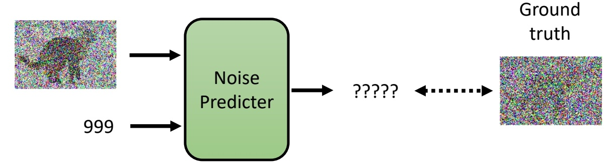 </p>
<p>P8<br />
 </p>
<blockquote>
<p>✅ 通过自己加噪来构造 GT</p>
</blockquote>
<p>P10</p>
<h3 id="text-to-image"><a class="header" href="#text-to-image">Text-to-Image</a></h3>
<p>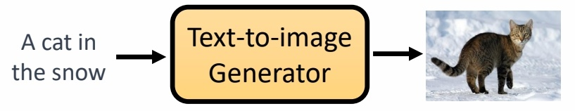 </p>
<p>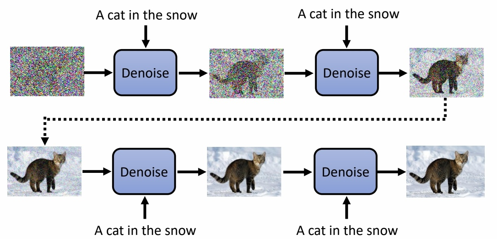 </p>
<blockquote>
<p>✅ 每一个 step 的 denoise 都要输入 text．</p>
</blockquote>
<p>P11</p>
<p>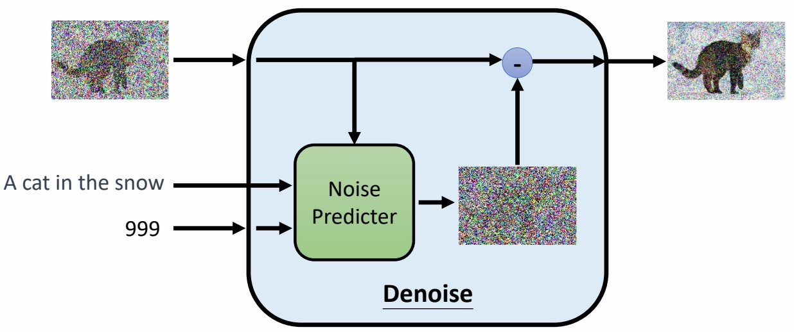 </p>
<p>P12<br />
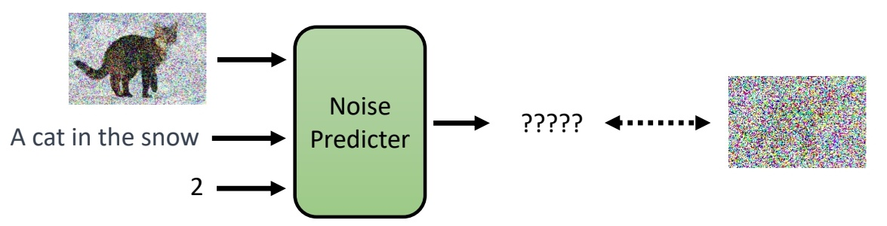 </p>
<p>P13</p>
<h2 id="denoising-diffusion-probabilistic-models"><a class="header" href="#denoising-diffusion-probabilistic-models">Denoising Diffusion Probabilistic Models</a></h2>
<p>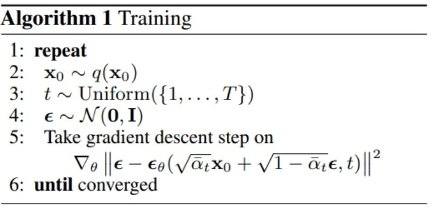 </p>
<p>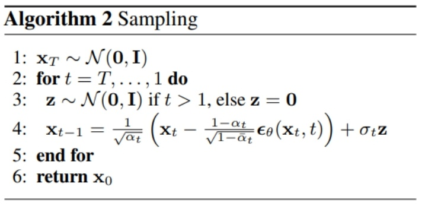 </p>
<hr />
<blockquote>
<p>本文出自CaterpillarStudyGroup，转载请注明出处。</p>
<p>https://caterpillarstudygroup.github.io/ImportantArticles/</p>
</blockquote>
<div style="break-before: page; page-break-before: always;"></div><p>P2</p>
<h1 id="framework"><a class="header" href="#framework">Framework</a></h1>
<p> </p>
<p> </p>
<p>P3</p>
<h2 id="stable-diffusion"><a class="header" href="#stable-diffusion">Stable Diffusion</a></h2>
<p> </p>
<table><thead><tr><th>ID</th><th>Year</th><th>Name</th><th>Note</th><th>Tags</th><th>Link</th></tr></thead><tbody>
<tr><td>45</td><td>2022</td><td>High-Resolution Image Synthesis with Latent Diffusion Models</td><td>✅ (1)：在 latent space 上工作<br> ✅ (2)：引入多种 condition．</td><td></td><td><a href="https://caterpillarstudygroup.github.io/ReadPapers/45.html">link</a></td></tr>
</tbody></table>
<p>P4</p>
<h2 id="dall-e-series"><a class="header" href="#dall-e-series">DALL-E series</a></h2>
<p> </p>
<table><thead><tr><th>ID</th><th>Year</th><th>Name</th><th>Note</th><th>Tags</th><th>Link</th></tr></thead><tbody>
<tr><td></td><td>2022</td><td>https://arxiv.org/abs/2204.06125</td><td></td><td></td><td></td></tr>
<tr><td></td><td>2021</td><td>https://arxiv.org/abs/2102.12092</td><td></td><td></td><td></td></tr>
</tbody></table>
<blockquote>
<p>✅ DALL-E 的生成模型有两种：Auoregressive 和 Diffusion.</p>
</blockquote>
<p>P5</p>
<h2 id="imagen"><a class="header" href="#imagen">Imagen</a></h2>
<p><a href="https://imagen.research.google/">https://imagen.research.google/</a></p>
<p><a href="https://arxiv.org/abs/2205.11487">https://arxiv.org/abs/2205.11487</a></p>
<p> </p>
<blockquote>
<p>✅ Decoder 也是一个 Diffusion Model，把小图变成大图。</p>
</blockquote>
<p>P6</p>
<h1 id="text-encoder"><a class="header" href="#text-encoder">Text Encoder</a></h1>
<blockquote>
<p>✅ Text Encoder 可以用 GPT．BERT 等预训练模型。</p>
</blockquote>
<p>P7</p>
<p> </p>
<p><a href="https://arxiv.org/abs/2205.11487">https://arxiv.org/abs/2205.11487</a></p>
<blockquote>
<p>✅ 评分说明：FID 越小越好，CLIP score 越大越好。因此右下角最好。<br />
✅ Text Encoder 的大小对结果影响很大。Diffusion Model 的大小没那么重要。</p>
</blockquote>
<h1 id="怎么评价图像生成的好坏"><a class="header" href="#怎么评价图像生成的好坏">怎么评价图像生成的好坏</a></h1>
<p>P8</p>
<h2 id="fréchet-inception-distance-fid"><a class="header" href="#fréchet-inception-distance-fid">Fréchet Inception Distance (FID)</a></h2>
<p><a href="https://arxiv.org/abs/1706.08500">https://arxiv.org/abs/1706.08500</a></p>
<p> </p>
<blockquote>
<p>✅ CNN＋Softmax 是一个预训练好的图像分类网络，取 softmax 上一层做为图像的 feature.<br />
✅ 取大量真实图像的 feature 和预训练模型生成的图 feature.<br />
✅ 假设两类图像的 feature 各自符合高斯分布，计算两个分布的距离。<br />
✅ 优点：评价结果与人类直觉很接近，缺点：需要大量 sample.</p>
</blockquote>
<p>P9</p>
<h2 id="contrastive-language-image-pre-training-clip"><a class="header" href="#contrastive-language-image-pre-training-clip">Contrastive Language-Image Pre-Training (CLIP)</a></h2>
<p><a href="https://arxiv.org/abs/2103.00020">https://arxiv.org/abs/2103.00020</a></p>
<p>400 million image-text pairs</p>
<p> </p>
<blockquote>
<p>✅ CLIP Score，衡量与文字的匹配度。</p>
</blockquote>
<p>P10</p>
<h1 id="decoder"><a class="header" href="#decoder">Decoder</a></h1>
<p>Decoder can be trained without labelled data.</p>
<p>P11</p>
<h2 id="中间产物为小图"><a class="header" href="#中间产物为小图">「中间产物」为小图</a></h2>
<p> </p>
<p>P12</p>
<h2 id="中间产物为latent-representation"><a class="header" href="#中间产物为latent-representation">「中间产物」为「Latent Representation」</a></h2>
<p><u>Auto-encoder</u></p>
<p> </p>
<p> </p>
<p>P13</p>
<h1 id="generation-model"><a class="header" href="#generation-model">Generation Model</a></h1>
<h2 id="forard-process"><a class="header" href="#forard-process">Forard Process</a></h2>
<p>P14<br />
 </p>
<blockquote>
<p>✅ Forard Process：noise 加下 “中间产物”或latent code上。</p>
</blockquote>
<h2 id="reverte-process"><a class="header" href="#reverte-process">Reverte Process.</a></h2>
<p>P15<br />
 </p>
<h2 id="inference"><a class="header" href="#inference">Inference</a></h2>
<p>P16<br />
 </p>
<hr />
<blockquote>
<p>本文出自CaterpillarStudyGroup，转载请注明出处。</p>
<p>https://caterpillarstudygroup.github.io/ImportantArticles/</p>
</blockquote>
<div style="break-before: page; page-break-before: always;"></div><p>P2</p>
<h1 id="基本概念"><a class="header" href="#基本概念">基本概念</a></h1>
<p> </p>
<p>P3</p>
<h2 id="vae-vs-diffusion-model"><a class="header" href="#vae-vs-diffusion-model">VAE vs. Diffusion Model</a></h2>
<p> </p>
<p>P5</p>
<h2 id="training"><a class="header" href="#training"><u>Training</u></a></h2>
<p> </p>
<blockquote>
<p>✅ 红框：\(X_o\) 与 noise 做加权平均，权重是预定义好的。得到的是带噪声图像，\(\alpha \) 越来越小，即噪声越来越多。<br />
✅ \(\epsilon_\theta \) 的预测结果应趋近于 \(\epsilon\) 。</p>
</blockquote>
<p>P6</p>
<p> </p>
<p>P7</p>
<table><thead><tr><th></th><th></th></tr></thead><tbody>
<tr><td>想像中…</td><td></td></tr>
<tr><td>实际上…</td><td></td></tr>
</tbody></table>
<blockquote>
<p>✅ 上面过程将加噪过程逐步拆解，是为了帮助理解逐步去噪的过程。但实际上，公式可以证明，逐步加噪和一步加噪在数学上是等价的。</p>
</blockquote>
<p>P8</p>
<h2 id="inference-1"><a class="header" href="#inference-1"><u> Inference </u></a></h2>
<p> </p>
<p> </p>
<blockquote>
<p>✅ \(X_T\) 是初始噪声，每个 step 还要每次额外生成一个噪声\(Z\).<br />
✅ \(\alpha \) 和 \( \bar{\alpha } \) 是两组数值序列。<br />
✅ 红圈是一个简单的分布，例于标准高斯，通过 NN 的转换，合成一个复杂的分布，期望这个分布与真正的图像分布是一致的。</p>
</blockquote>
<p>P10</p>
<h1 id="影像生成模型本质上的共同目标"><a class="header" href="#影像生成模型本质上的共同目标">影像生成模型本质上的共同目标</a></h1>
<p> </p>
<blockquote>
<p>✅ 实际使用中还会加一个 condition，但整体上没有本质差异，因此后面推导中不考虑 condition.</p>
</blockquote>
<p>P11</p>
<h2 id="maximum-likelihood-estimation"><a class="header" href="#maximum-likelihood-estimation">Maximum Likelihood Estimation</a></h2>
<p> </p>
<p>Sample {\(x^1,x^2,\cdots ,x^m\)} from \(P_{data}(x)\)</p>
<p>We can compute \(P_\theta (x^i)\)</p>
<p>\begin{align*} \theta ^\ast =\text{arg } \max_{\theta } \prod_{i=1}^{m} P_\theta (x^i) \end{align*}</p>
<blockquote>
<p>✅ \(P_{data}\) 代表真实分布，从分布中 Sample 出来的 \(x\) 即训练集<br />
✅ 目标是让生成数据的分布与真实数据的分布尽量的接近，但是怎样衡量两个分布是否接近？<br />
✅ \(P_\theta (x^i)\) 代表 \(P_\theta\) 生成 \(x^i\) 的概率，但由于 \(P_\theta\) 非常复杂，算不出这个概率，但此处假设 \(P_\theta (x^i)\) 已知。<br />
✅ 实际训练过程中，会使用另一个目标：找出让真实 \(x^i\) 被生成出来的概率最高的\(\theta \).<br />
✅ 可通过数据推导证明，这里提到的两个目标，本质上是一致的。</p>
</blockquote>
<p>P12</p>
<p> </p>
<p>Maximum Likelihood = Minimize KL Divergence</p>
<blockquote>
<p>✅ 结论：让真实数据的概率最大，与让两个分布尽量接近，在数学上是一致的。<br />
✅ VAE、diffusion、flow based 等生成模型，都是以最大化 Likelihood 为目标。GAN 是最小化 JS Divergence 为目标。</p>
</blockquote>
<p>P13</p>
<h2 id="compute-𝑃_thetax"><a class="header" href="#compute-𝑃_thetax">Compute \(𝑃_\theta(x)\)</a></h2>
<blockquote>
<p>✅ VAE 和 diffusion 非常相似，许多公式是通用的。</p>
</blockquote>
<h3 id="技巧一不推断生成结果而是推断生成结果分布的均值"><a class="header" href="#技巧一不推断生成结果而是推断生成结果分布的均值">技巧一：不推断生成结果，而是推断生成结果分布的均值</a></h3>
<table><thead><tr><th></th><th></th></tr></thead><tbody>
<tr><td></td><td></td></tr>
<tr><td></td><td></td></tr>
</tbody></table>
<blockquote>
<p>✅ \(G（z）\) 不代表某个生成结果，而是一个高斯的均值，然后计算 \(x\) 在这个分布中的概率。</p>
</blockquote>
<p>P14</p>
<h3 id="技巧二不求𝑃_thetax而是求lower-bound-of-log-px"><a class="header" href="#技巧二不求𝑃_thetax而是求lower-bound-of-log-px">技巧二：不求\(𝑃_\theta(x)\)，而是求Lower bound of \(log P(x)\)</a></h3>
<p></p>
<blockquote>
<p>✅ 通常无法最大化 \(P（x）\)，而是最大化 \(log P(x)\) 的下界。<br />
✅ 以下公式推导中省略参数 \( \theta\)。</p>
</blockquote>
<p>P15</p>
<h3 id="ddpm-compute-𝑃_thetax"><a class="header" href="#ddpm-compute-𝑃_thetax">DDPM: Compute \(𝑃_\theta(x)\)</a></h3>
<p></p>
<p>$$
P_ \theta (x_0)=\int\limits _ {x_1:x_T}^{} P(x_T)P_ \theta (x_{T-1}|x_T) \dots P_ \theta (x_ {t-1}|x_t) \dots P_ \theta(x_0|x_1)dx_1:x_T<br />
$$</p>
<blockquote>
<p>✅ 对于 diffusion model，每次 denoise 出的是一个高斯分布的均值。<br />
✅ 得出 \(x_0\) 在最终分布中的概率。<br />
❓ 问题，为什么假设\(G(x_t)\) 是高斯分布的 mean？<br />
✅ 答：有人尝试过其它假设，效果没有变好，且高斯分布便于计算。</p>
</blockquote>
<p>P16</p>
<h3 id="ddpm-lower-bound-of-log-px"><a class="header" href="#ddpm-lower-bound-of-log-px">DDPM: Lower bound of \(log P(x)\)</a></h3>
<p></p>
<p></p>
<h1 id="ddpm的推断过程"><a class="header" href="#ddpm的推断过程">DDPM的推断过程</a></h1>
<h2 id="计算qx_tx_t-1"><a class="header" href="#计算qx_tx_t-1">计算\(q（x_t｜x_{t-1}）\)</a></h2>
<p>P17<br />
</p>
<blockquote>
<p>✅ 提前定好一组 \(\beta \)．代表 noise 要加多大。<br />
✅ \(q（x_t｜x_{t-1}）\) 仍然属于高斯分布，其均值为 \(\sqrt{1-\beta _t} \cdot x_t\)，方差为 \(\beta _t\).</p>
</blockquote>
<h2 id="计算qx_tx_0"><a class="header" href="#计算qx_tx_0">计算\(q（x_t｜x_{0}）\)</a></h2>
<p>P18<br />
</p>
<p>P19<br />
</p>
<blockquote>
<p>✅ 由于两次 sample 出的 noise 是独立同分布，两个 noise 以这种形式相加的结果，也符合某个特定的高斯分布。</p>
</blockquote>
<p>P20<br />
</p>
<blockquote>
<p>✅ 结论：\(q（x_t｜x_{0}）\)也符合高斯分布，其均值为\(\bar{\alpha }_t\)，方差为\({1-\bar{\alpha }_t}\).</p>
</blockquote>
<h2 id="如何定义损失函数可以达到最大化log-p_thetax_0的目的"><a class="header" href="#如何定义损失函数可以达到最大化log-p_thetax_0的目的">如何定义损失函数，可以达到最大化\(\log P_{\theta}(x_0)\)的目的</a></h2>
<p></p>
<p>以下是公式推导：</p>
<p>P21<br />
</p>
<p>P22</p>
<p>最后简化为以下三项：</p>
<p>\begin{align*} E_{q(x_1|x_0)}[log P(x_0|x_1)]-KL(q(x_T|x_0)||P(x_T))
-\sum_{t=2}^{T}E_{q(x_t|x_0)}[KL(q(x_{t-1}|x_t,x_0)||P(x_{t-1}|x_t))]   \end{align*}</p>
<blockquote>
<p>✅ 目标是要优化 \( \theta\)，第二项与\( \theta\)无关，可以略掉。<br />
✅ 第三项的 KL Divrgence 涉及到两个分布，分布1是固定的，可以通过计算得到，分布2是由 \( \theta\) 决定的，是要优化的对象。</p>
</blockquote>
<p>P23</p>
<h2 id="求-qx_t-1x_tx_0"><a class="header" href="#求-qx_t-1x_tx_0">求 \((q(x_{t-1}|x_t,x_0)\)</a></h2>
<p></p>
<p></p>
<blockquote>
<p>✅ 已知 \(q (x_t\mid x_0)\)，\(q (x_{t-1} \mid x_0)\) 和 \(q (x_t \mid x_{t-1})\)，求 \(q (x_{t-1} \mid x_t,x_0)\).<br />
✅ \((q(x_{t-1}|x_t,x_0)\)的数据含义为：已知\(x_0\) 和 \(x_t\)，求 \(x_{t-1}\) 的分布。</p>
</blockquote>
<p>P24<br />
</p>
<p>P25<br />
</p>
<p><a href="https://arxiv.org/pdf/2208.11970.pdf">https://arxiv.org/pdf/2208.11970.pdf</a></p>
<p>P26<br />
</p>
<blockquote>
<p>✅ 结论：\(q(x_{t-1}|x_t,x_0)\) 也是高斯分布，且其均值与方差是与\(\theta\)无关的固定的值。</p>
</blockquote>
<h2 id="how-to-minimize-kl-divergence"><a class="header" href="#how-to-minimize-kl-divergence">How to minimize KL divergence?</a></h2>
<h3 id="方式一直接套公式"><a class="header" href="#方式一直接套公式">方式一：直接套公式</a></h3>
<p></p>
<blockquote>
<p>✅ 两个高斯分布的 KLD 有公式解，但此处不用公式解，因为  \( \theta\) 只能影响分布2的均值。</p>
</blockquote>
<h3 id="方式二"><a class="header" href="#方式二">方式二</a></h3>
<p></p>
<blockquote>
<p>✅ 因此减小 KLD 的方法是让分布2的均值接近分布1的均值。<br />
✅ 分布1的均值可以看作是 \(x_{t-1}\) 的 GT 了。<br />
✅ 其中分布2的均值就是网络输出，分布1的均值见下图</p>
</blockquote>
<p></p>
<h2 id="具体的训练方法"><a class="header" href="#具体的训练方法">具体的训练方法</a></h2>
<p>P31<br />
</p>
<blockquote>
<p>✅ 具体的训练方法：<br />
✅（1）取一个数据作为 \(x_0\)。<br />
✅（2）sample 出 \(\varepsilon \)，计算 \(x_t\).<br />
✅（3）根据公式，用 \(x_t\) 来表示 \(x_{t-1}\) 分布的均值<br />
<br />
✅（4），发现 \(x\) 与 \(x_{t-1}\) 之间相差一个 noise． 用网络学习这个 noise.<br />
 </p>
</blockquote>
<p>P32<br />
</p>
<blockquote>
<p>✅ 因为唯一未知的部分就是 \(\varepsilon \).</p>
</blockquote>
<h2 id="其它问题"><a class="header" href="#其它问题">其它问题</a></h2>
<h3 id="关于alpha-"><a class="header" href="#关于alpha-">关于\(\alpha \)</a></h3>
<blockquote>
<p>✅ \(\alpha \) 是预定义的超参，DDPM 试图学习 \(\alpha \)，发现没有提升。</p>
</blockquote>
<h3 id="为什么不直接取-mean"><a class="header" href="#为什么不直接取-mean">为什么不直接取 Mean？</a></h3>
<blockquote>
<p>❓ 预测出的高斯均值是最大概率的值，为什么不直接取均值？而是要再 sample 一次？</p>
</blockquote>
<p>P34<br />
<strong>免责声明：以下只是猜测</strong></p>
<p>P35</p>
<blockquote>
<p>✅ 很多生成算法都不直接生成结果，而是生成分布再 sample，例如生成文句任务</p>
</blockquote>
<p><a href="https://arxiv.org/abs/1904.09751">https://arxiv.org/abs/1904.09751</a></p>
<p></p>
<blockquote>
<p>✅ 因为：（1）每次取概率最大的值，会导致生成重复结</p>
</blockquote>
<p>P37<br />
</p>
<blockquote>
<p>✅ 因为：（2）数据分析发现，人写文章大多数不是选概率最大的词。</p>
</blockquote>
<p>P39</p>
<h3 id="diffusion-model-是一种-autoregressive"><a class="header" href="#diffusion-model-是一种-autoregressive">Diffusion Model 是一种 Autoregressive</a></h3>
<p></p>
<p>P43</p>
<h3 id="diffusion-model-for-text"><a class="header" href="#diffusion-model-for-text">Diffusion Model for Text</a></h3>
<p>Difficulty:文字是离散的，不能直接加 noise．</p>
<h4 id="solution-1-noise-on-latent-space"><a class="header" href="#solution-1-noise-on-latent-space">Solution 1: Noise on latent space</a></h4>
<p><a href="https://arxiv.org/abs/2205.14217">https://arxiv.org/abs/2205.14217</a></p>
<p>P44</p>
<p></p>
<p><a href="https://arxiv.org/abs/2210.08933">https://arxiv.org/abs/2210.08933</a></p>
<p>P45</p>
<h4 id="solution-2-dont-add-gaussian-noise"><a class="header" href="#solution-2-dont-add-gaussian-noise">Solution 2: Don’t add Gaussian noise</a></h4>
<blockquote>
<p>✅ 不加高斯噪声，而是加 MASK．</p>
</blockquote>
<p><a href="https://arxiv.org/abs/2210.16886">https://arxiv.org/abs/2210.16886</a></p>
<p>Diffusion via Edit based Reconstruction (DiffusER)</p>
<p></p>
<p></p>
<p><a href="https://arxiv.org/abs/2107.03006">https://arxiv.org/abs/2107.03006</a></p>
<p>P48</p>
<h4 id="solution-3-mask-predict"><a class="header" href="#solution-3-mask-predict">Solution 3: Mask-Predict</a></h4>
<p><a href="https://aclanthology.org/D19-1633/">https://aclanthology.org/D19-1633/</a></p>
<p></p>
<blockquote>
<p>✅ 把几率比较低的部分盖住，再做一次生成。</p>
</blockquote>
<p>P49</p>
<h2 id="mask-predict"><a class="header" href="#mask-predict">Mask-Predict</a></h2>
<p><a href="https://arxiv.org/abs/2202.04200">https://arxiv.org/abs/2202.04200</a></p>
<p><a href="https://arxiv.org/abs/2301.00704">https://arxiv.org/abs/2301.00704</a></p>
<p></p>
<p>P50<br />
</p>
<p></p>
<p>P51</p>
<p>Scheduled Parallel Decoding with MaskGIT</p>
<p>Sequential Decoding with Autoregressive Transformers</p>
<hr />
<blockquote>
<p>本文出自CaterpillarStudyGroup，转载请注明出处。</p>
<p>https://caterpillarstudygroup.github.io/ImportantArticles/</p>
</blockquote>
<div style="break-before: page; page-break-before: always;"></div><h1 id="denoising-diffusion-models-a-generative-learning-big-bang"><a class="header" href="#denoising-diffusion-models-a-generative-learning-big-bang">Denoising Diffusion Models: A Generative Learning Big Bang　　　</a></h1>
<p>Jiaming Song　　　Chenlin Meng 　　　Arash Vahdat　　　</p>
<p>CVPR  #18546</p>
<p>https://www.youtube.com/watch?v=1d4r19GEVos</p>
<p><a href="https://cvpr2023-tutorial-diffusion-models.github.io/">https://cvpr2023-tutorial-diffusion-models.github.io/</a></p>
<p>P4</p>
<h2 id="generative-adversarial-networks"><a class="header" href="#generative-adversarial-networks">Generative Adversarial Networks</a></h2>
<p>Restricted Boltzmann Machines<br />
Bayesian Networks<br />
Variational Autoencoders<br />
Normalizing Flows<br />
Energy-based Models<br />
Autoregressive Models<br />
Denoising Diffusion Models</p>
<p>P6</p>
<h2 id="we-may-not-know-cosmology-but-we-know-cvpr"><a class="header" href="#we-may-not-know-cosmology-but-we-know-cvpr">We May Not Know Cosmology, But We Know CVPR</a></h2>
<p>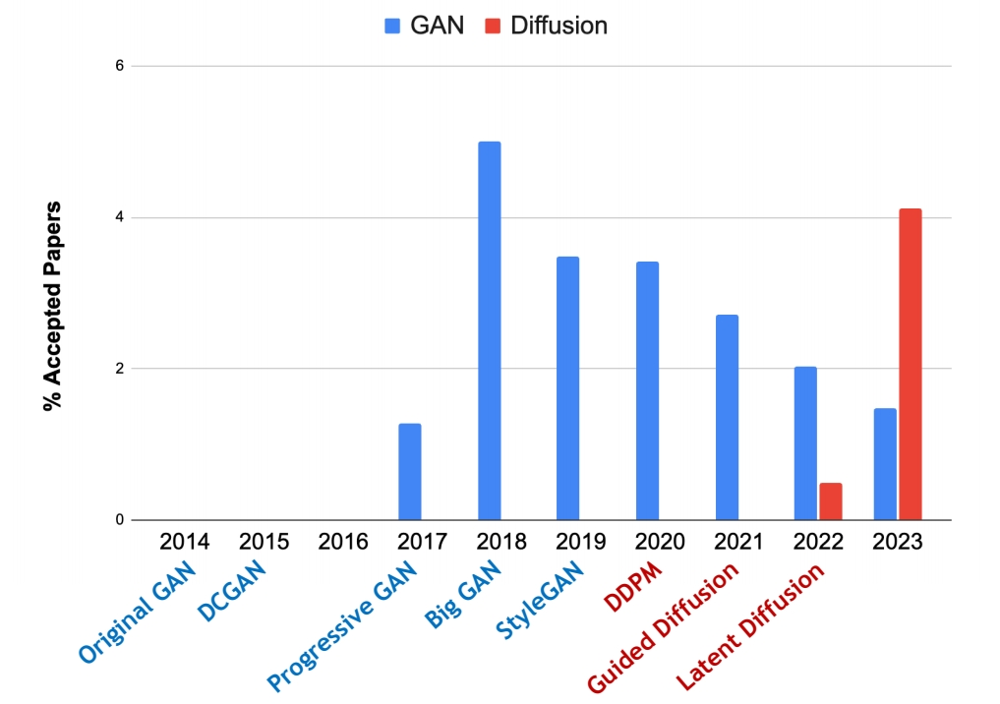 </p>
<p>\(^\ast \)Disclaimer: We rely on paper titles for counting the number of papers in each topic. Our statistics are likely to be biased.</p>
<p>P7</p>
<h2 id="todays-program"><a class="header" href="#todays-program">Today’s Program</a></h2>
<p>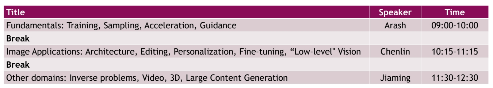 </p>
<div style="break-before: page; page-break-before: always;"></div><p>P12</p>
<h1 id="denoising-diffusion-models"><a class="header" href="#denoising-diffusion-models">Denoising Diffusion Models</a></h1>
<p>P13</p>
<p>Denoising diffusion models consist of two processes:</p>
<ul>
<li>Forward diffusion process that gradually adds noise to input</li>
<li>Reverse denoising process that learns to generate data by denoising</li>
</ul>
<p> </p>
<p><u>Sohl-Dickstein et al., Deep Unsupervised Learning using Nonequilibrium Thermodynamics, ICML 2015</u><br />
<u>Ho et al., Denoising Diffusion Probabilistic Models, NeurIPS 2020</u><br />
<u>Song et al., Score-Based Generative Modeling through Stochastic Differential Equations, ICLR 2021</u></p>
<blockquote>
<p>详细推导过程：<a href="https://caterpillarstudygroup.github.io/ImportantArticles/%E6%9D%8E%E5%AE%8F%E6%AF%85DiffusionModel/DiffusionModel%E8%83%8C%E5%90%8E%E7%9A%84%E6%95%B0%E6%8E%8C%E5%8E%9F%E7%90%86.html">link</a></p>
</blockquote>
<p>P14</p>
<h2 id="forward-diffusion-process"><a class="header" href="#forward-diffusion-process">Forward Diffusion Process</a></h2>
<p>The formal definition of the forward process in T steps:</p>
<p> </p>
<blockquote>
<p>✅ 要让原始分布逼近 \(\mathcal{N} (0,1 )\)分布，通过逐步的 scale down 让均值趋近于 0。通过引入噪声使方差趋近于 1。<br />
❓ 怎么保证方差为 1 呢？答：根据P15公式。只要 \( \bar{\alpha } _ t\) 趋于 0 即可。(见下文)<br />
❓ 求联合分布有什么用?</p>
</blockquote>
<p>P15</p>
<h3 id="diffusion-kernel"><a class="header" href="#diffusion-kernel">Diffusion Kernel</a></h3>
<p> </p>
<blockquote>
<p>✅ 不需要真的一步一步从 \(\mathbf{x} _{t-1}\)到 \(\mathbf{x} _{t}\)，根据公式，可以直接从 \(\mathbf{x}_0\)生成任意的 \(\mathbf{x}_t\)</p>
</blockquote>
<p> </p>
<blockquote>
<p>✅ 把 \(\mathbf{x}_0\) 加噪为 init-noise，再从 init-noise 恢复出 \(\mathbf{x}_0\)，这个操作是不可行的。<br />
✅ 因为，根据公式 \(\mathbf{x} _t=\sqrt{\bar{a} _t}   \mathbf{x} _0+\sqrt{(1-\bar{a} _t) }  \varepsilon  \), 且 \(\bar{a} _T  → 0\)，那么经过 \(T\) 步加噪后，\(\mathbf{x} _t\approx \varepsilon \). 而是 \(\varepsilon \) 是一个与 \(\mathbf{x} _ 0\) 没有任务关系的噪声，所以不可能从中恢复出 \(\mathbf{x} _ 0\).</p>
</blockquote>
<p>P16</p>
<h3 id="what-happens-to-a-distribution-in-the-forward-diffusion"><a class="header" href="#what-happens-to-a-distribution-in-the-forward-diffusion">What happens to a distribution in the forward diffusion?</a></h3>
<p>So far, we discussed the diffusion kernel \(q(\mathbf{x} _t|\mathbf{x} _0)\) but what about \(q(\mathbf{x}_t)\)?</p>
<p> </p>
<p>The diffusion kernel is Gaussian convolution.</p>
<blockquote>
<p>✅ convolution 是一种信号平滑方法。<br />
✅ \(q(\mathbf{x} _ t|\mathbf{x} _ 0)\) 是标准高斯分布，因此 \(q(\mathbf{x} _ t)\) 是以高斯分布为权重的真实数据的加权平均。</p>
</blockquote>
<p> </p>
<p>We can sample \(\mathbf{x}_t \sim q(\mathbf{x}_t)\) by first sampling and then sampling \(\mathbf{x}_t \sim q(\mathbf{x}_t|\mathbf{x}_0)\) (i.e., ancestral sampling).</p>
<blockquote>
<p>✅ 实际上，没有任意一个时间步的 \(q(\mathbf{x})\) 的真实分布，只有这些分布的 sample.</p>
</blockquote>
<h2 id="reverse-denoising-process"><a class="header" href="#reverse-denoising-process">Reverse Denoising Process</a></h2>
<p>P17</p>
<h3 id="generative-learning-by-denoising"><a class="header" href="#generative-learning-by-denoising">Generative Learning by Denoising</a></h3>
<p>Recall, that the diffusion parameters are designed such that 
\(q(\mathbf{x}_T)\approx (\mathbf{x}_T；\mathbf{0,I})\)</p>
<p> </p>
<p> </p>
<p>Can we approximate \(q(\mathbf{x}_{t-1}|\mathbf{x}_t)\)? Yes, we can use a <strong>Normal distribution</strong> if \(\beta _t\) is small in each forward diffusion step.</p>
<blockquote>
<p>✅ Nomal distribution 是特定均值和方差的高斯分布，不一定是 std 高斯。</p>
</blockquote>
<p>P18</p>
<h3 id="reverse-denoising-process-1"><a class="header" href="#reverse-denoising-process-1">Reverse Denoising Process</a></h3>
<p>Formal definition of forward and reverse processes in T steps:</p>
<p> </p>
<blockquote>
<p>✅ 虽然 \(p(\mathbf{x} _ T)\) 的真实分布未知，只有 \(p (\mathbf{x} _ T)\) 的 sample，但这里假设它是 \( \mathcal{N} (0,1)\).</p>
</blockquote>
<p>P19</p>
<h3 id="learning-denoising-model"><a class="header" href="#learning-denoising-model">Learning Denoising Model</a></h3>
<p> </p>
<blockquote>
<p>❓ 网络只能产生 \(\mathbf{x} _ t\) 的均值，方差会有什么样的变化，对结果会有什么影响呢？<br />
❓ 求联合分布有什么用？</p>
</blockquote>
<p>P20</p>
<h2 id="summary"><a class="header" href="#summary">Summary</a></h2>
<p> </p>
<p>P21</p>
<h2 id="implementation-considerations"><a class="header" href="#implementation-considerations">Implementation Considerations</a></h2>
<p>Diffusion models often use U-Net architectures with ResNet blocks and self-attention layers to represent \(\epsilon _\theta (\mathbf{x}_t,t)\).</p>
<p> </p>
<p>Time representation: sinusoidal positional embeddings or random Fourier features.</p>
<p>Time features are fed to the residual blocks using either simple spatial addition or using adaptive group normalization layers. (see <u>Dharivwal and Nichol NeurIPS 2021</u>).</p>
<blockquote>
<p>✅ \(\sigma \) 是怎么定义的？</p>
</blockquote>
<hr />
<blockquote>
<p>本文出自CaterpillarStudyGroup，转载请注明出处。</p>
<p>https://caterpillarstudygroup.github.io/ImportantArticles/</p>
</blockquote>
<div style="break-before: page; page-break-before: always;"></div><p>P22</p>
<h1 id="score-based-generative-modeling-with-differential-equations"><a class="header" href="#score-based-generative-modeling-with-differential-equations">Score-based Generative Modeling with Differential Equations</a></h1>
<table><thead><tr><th>ID</th><th>Year</th><th>Name</th><th>Note</th><th>Tags</th><th>Link</th></tr></thead><tbody>
<tr><td></td><td>2021</td><td>Score-Based Generative Modeling through Stochastic Differential Equations</td><td></td><td></td><td><a href="https://caterpillarstudygroup.github.io/ReadPapers/8.html">link</a></td></tr>
</tbody></table>
<p>P26</p>
<h2 id="ddpm-vs-stochastic-differential-equation"><a class="header" href="#ddpm-vs-stochastic-differential-equation">DDPM VS Stochastic Differential Equation</a></h2>
<blockquote>
<p>🔎 <a href="https://caterpillarstudygroup.github.io/mathematics_basic_for_ML/NumericalComputation/ODE_SDE.html">SDE</a>
 </p>
</blockquote>
<blockquote>
<p>✅ DDPM 是在时间上做了离散化的 SDE．</p>
</blockquote>
<p>P27</p>
<h3 id="forward-diffusion-process-as-stochastic-differential-equation"><a class="header" href="#forward-diffusion-process-as-stochastic-differential-equation">Forward Diffusion Process as Stochastic Differential Equation</a></h3>
<p> </p>
<blockquote>
<p>✅ drift term 使 \( \mathbf{x} _ t\) 趋向于 Origin.<br />
✅ Origin 我理解为 \( \vec{0} \) 向量的意思。<br />
✅ \( \mathbf{x} _ t\) 最终趋向于 std normal.</p>
</blockquote>
<p>P29</p>
<h3 id="the-generative-reverse-stochastic-differential-equation"><a class="header" href="#the-generative-reverse-stochastic-differential-equation">The Generative Reverse Stochastic Differential Equation</a></h3>
<p> </p>
<blockquote>
<p>🔎 <u>Anderson, in Stochastic Processes and their Applications, 1982</u></p>
</blockquote>
<blockquote>
<p>✅ \(q _ t(\cdot )\) 描述 \(t\) 时刻的分布。<br />
✅ \(q _ t(\mathbf{x} _ t)\) 为 \(\mathbf{x} _ t\) 在 \(q _ t\) 分布中的概率。<br />
✅ Generative 的关键是拟合 score funchon．</p>
</blockquote>
<p><strong>But how to get the score function</strong> \(\nabla \mathbf{x} _t \log q_t(\mathbf{x} _t)\)?</p>
<p>P32</p>
<h2 id="score-matching"><a class="header" href="#score-matching">Score Matching</a></h2>
<p>Naïve idea, learn model for the score function by direct regression?</p>
<p> </p>
<blockquote>
<p>✅ 直接用一个网络拟合 score function．</p>
</blockquote>
<p><strong>But</strong> \(\nabla \mathbf{x} _t \log q_t(\mathbf{x} _t)\) <strong>(score of the</strong> <em><strong>marginal diffused density</strong></em> \(q_t(\mathbf{x} _t)\)<strong>) is not tractable!</strong></p>
<blockquote>
<p>✅ 存在的问题：只能 sample from \(q_t\)，但没有 \(q_t\) 的 close form.</p>
</blockquote>
<p><u>Vincent, “A Connection Between Score Matching and Denoising Autoencoders”, Neural Computation, 2011</u></p>
<p><u>Song and Ermon, “Generative Modeling by Estimating Gradients of the Data Distribution”, NeurIPS, 2019</u></p>
<p>P33</p>
<h3 id="denoising-score-matching"><a class="header" href="#denoising-score-matching">Denoising Score Matching</a></h3>
<p>Instead, diffuse individual data points \(\mathbf{x}_0\). Diffused \(q_t(\mathbf{x}_t|\mathbf{x}_0)\) <em><strong>is</strong></em> tractable!</p>
<blockquote>
<p>🔎 <u>Vincent, in Neural Computation, 2011</u></p>
</blockquote>
<p> </p>
<blockquote>
<p>❓ \(\gamma _ t\) 和 \(\sigma\) 怎么定义？ 答：见上一页DDPM的推导。</p>
</blockquote>
<p>因此<strong>Denoising Score Matching</strong>的目标函数变为:</p>
<p> </p>
<p><strong>After expectations</strong>, \(\mathbf{s} _ \theta (\mathbf{x} _ t,t)\approx \nabla _ {\mathbf{x} _ t}\log q _ t(\mathbf{x} _ t)\)<strong>!</strong></p>
<blockquote>
<p>🔎 <u>Song and Ermon, NeurIPS, 2019</u></p>
</blockquote>
<blockquote>
<p>✅ 最后 \(\mathbf{s} _ \theta (\mathbf{x} _ t,t)\) 学到的是所有 \(\mathbf{x} _ 0\) 对应的 score 的均值。</p>
</blockquote>
<blockquote>
<p>✅ 结果发现时间离散的 diffusion model(DDPM) 和时间连续的 diffusion model(SDE),其目标函数是一致的，且两个版本可以互相转化。</p>
</blockquote>
<p>$$
\min_ {\mathbf{\theta}  } \mathbb{E} _ {t\sim u(0,T)}\mathbb{E} _ {\mathbf{x} _ 0\sim q_ 0(\mathbf{x} _ 0)}\mathbb{E} _{\epsilon \sim \mathcal{N}(\mathbf{0,I} ) }\frac{1}{\sigma ^2_t} ||\epsilon -\epsilon _ \theta (\mathbf{x} _ t,t)||^2_2 
$$</p>
<p>P35</p>
<h2 id="different-parameterizations"><a class="header" href="#different-parameterizations">Different Parameterizations</a></h2>
<blockquote>
<p>🔎 Karras et al., <u>&quot;Elucidating the Design Space of Diffusion-Based Generative Models&quot;,</u> NeurIPS 2022 <a href="https://caterpillarstudygroup.github.io/ReadPapers/9.html">link</a></p>
</blockquote>
<blockquote>
<p>✅ 调参对生成质量影响很大。</p>
</blockquote>
<p>P36</p>
<h2 id="synthesis-with-sde-vs-ode"><a class="header" href="#synthesis-with-sde-vs-ode">Synthesis with SDE vs. ODE</a></h2>
<p><strong>Generative Reverse Diffusion SDE (stochastic):</strong></p>
<p>$$
d\mathbf{x} _ t=-\frac{1}{2} \beta (t)[\mathbf{x} _ t+2s_ \theta (\mathbf{x} _ t,t)]dt+\sqrt{\beta (t)} d\varpi _ t
$$</p>
<p><strong>Generative Probability Flow ODE (deterministic):</strong></p>
<p>$$
d\mathbf{x} _ t=-\frac{1}{2} \beta (t)[\mathbf{x} _ t+s_ \theta (\mathbf{x} _ t,t)]dt
$$</p>
<blockquote>
<p>✅ <a href="https://caterpillarstudygroup.github.io/ReadPapers/9.html">Song et al., ICLR, 2021</a>表明，可以把 SDE 模型转换为ODE模型。只需要对sample过程进行公式修改即可。每个噪声对应特定的输出。</p>
</blockquote>
<p>P37</p>
<h4 id="diffusion-models-as-neural-odes"><a class="header" href="#diffusion-models-as-neural-odes">Diffusion Models as Neural ODEs</a></h4>
<p></p>
<p>使用ODE的sample公式有以下好处：</p>
<ul>
<li>ODE 推断，可以使用成熟的 ODE solver 进行 sample 加速。</li>
<li><strong>Deterministic encoding and generation</strong> (semantic image interpolation, etc.)</li>
<li><strong>Log-likelihood computation</strong> (instantaneous change of variables):</li>
</ul>
<blockquote>
<p>❓ 第三条没听懂，把 model 当成基于数据的 ODE 来用？</p>
</blockquote>
<hr />
<blockquote>
<p>本文出自CaterpillarStudyGroup，转载请注明出处。</p>
<p>https://caterpillarstudygroup.github.io/ImportantArticles/</p>
</blockquote>
<div style="break-before: page; page-break-before: always;"></div><p>P38</p>
<h1 id="accelerated-sampling"><a class="header" href="#accelerated-sampling">Accelerated Sampling</a></h1>
<p>P39</p>
<h2 id="the-generative-learning-trilemma"><a class="header" href="#the-generative-learning-trilemma">The generative learning trilemma</a></h2>
<p> </p>
<blockquote>
<p>🔎 <u>Tackling the Generative Learning Trilemma with Denoising Diffusion GANs, ICLR 2022</u> </p>
</blockquote>
<p>其中Diffusion based生成模型的主要问题是生成速度慢，因此需要在保持高采样质量和多样性的前提下，针对采样速度慢的问题进行加速。</p>
<p>P41</p>
<h2 id="acceleration-techniques"><a class="header" href="#acceleration-techniques">Acceleration Techniques</a></h2>
<ul>
<li>Advanced ODE/SDE Solvers</li>
<li>Distillation Techniques</li>
<li>Low-dim. Diffusion Processes</li>
<li>Advanced Diffusion Processes</li>
</ul>
<p>P42</p>
<h1 id="advanced-odesde-solvers"><a class="header" href="#advanced-odesde-solvers">Advanced ODE/SDE Solvers</a></h1>
<blockquote>
<p>✅ ODE 实现 std normal 分布与真实数据分布之间的映射。</p>
</blockquote>
<p>P43</p>
<h2 id="generative-odes"><a class="header" href="#generative-odes">Generative ODEs</a></h2>
<p>Solve ODEs with as little function evaluations as possible</p>
<p>$$
dx=\epsilon _\theta (x,t)dt
$$</p>
<p> </p>
<ul>
<li>一阶方法（Euler 方法）：每个时间步简化为线性过程。当 step 较大时，会与 GT 有较大的偏离。</li>
</ul>
<p>P44</p>
<p> </p>
<ul>
<li>高阶方法
P45<br />
 </li>
</ul>
<p>P46</p>
<h2 id="扩散模型-odesde-求解器的相关工作"><a class="header" href="#扩散模型-odesde-求解器的相关工作">扩散模型 ODE/SDE 求解器的相关工作</a></h2>
<table><thead><tr><th>ID</th><th>Year</th><th>Name</th><th>Note</th><th>Tags</th><th>Link</th></tr></thead><tbody>
<tr><td></td><td>2021</td><td>Denoising Diffusion Implicit Models (DDIM)</td><td></td><td></td><td><a href="https://caterpillarstudygroup.github.io/ReadPapers/2.html">link</a></td></tr>
<tr><td></td><td>2021</td><td>Score-Based Generative Modeling through Stochastic Differential Equations</td><td>Runge-Kutta adaptive step-size ODE solver</td><td></td><td></td></tr>
<tr><td></td><td>2021</td><td>Gotta Go Fast When Generating Data with Score-Based Models</td><td>Higher-Order adaptive step-size SDE solver</td><td></td><td></td></tr>
<tr><td></td><td>2021</td><td>Denoising Diffusion Implicit Models</td><td>Reparametrized, smoother ODE</td><td></td><td></td></tr>
<tr><td></td><td>2022</td><td>gDDIM: Generalized denoising diffusion implicit models</td><td>Reparametrized, smoother ODE</td><td></td><td></td></tr>
<tr><td></td><td>2022</td><td>Pseudo Numerical Methods for Diffusion Models on Manifolds</td><td>Higher-Order ODE solver with linear multistepping</td><td></td><td></td></tr>
<tr><td></td><td>2022</td><td>Fast Sampling of Diffusion Models with Exponential Integrator</td><td>Exponential ODE Integrators</td><td></td><td></td></tr>
<tr><td></td><td>2022</td><td>DPM-Solver: A Fast ODE Solver for Diffusion Probabilistic Model Sampling in Around 10 Steps</td><td>Exponential ODE Integrators</td><td></td><td></td></tr>
<tr><td></td><td>2022</td><td>DPM-Solver++: Fast Solver for Guided Sampling of Diffusion Probabilistic Models</td><td>Exponential ODE Integrators</td><td></td><td></td></tr>
<tr><td></td><td>2022</td><td>Elucidating the Design Space of Diffusion-Based Generative Models</td><td>Higher-Order ODE solver with Heun’s Method</td><td></td><td></td></tr>
<tr><td></td><td>2023</td><td>UniPC: A Unified Predictor-Corrector Framework for Fast Sampling of Diffusion Models</td><td></td><td></td><td></td></tr>
<tr><td></td><td>2023</td><td>Parallel Sampling of Diffusion Model</td><td></td><td></td><td></td></tr>
<tr><td></td><td>2023</td><td>A Geometric Perspective on Diffusion Models</td><td></td><td></td><td></td></tr>
</tbody></table>
<blockquote>
<p>✅ 这些solvers可以以plug-in的方式使用，且通常能比DDPM更快收敛。</p>
</blockquote>
<h1 id="distillation-techniques"><a class="header" href="#distillation-techniques">Distillation Techniques</a></h1>
<p>P48</p>
<h2 id="ode-distillation"><a class="header" href="#ode-distillation">ODE Distillation</a></h2>
<p> </p>
<p>Can we train a neural network to directly predict \(\mathbf{x} _{{t}'} \) given \(\mathbf{x} _t\)?</p>
<blockquote>
<p>✅ \(\mathbf{x} _{{t}'} \)与\(\mathbf{x} _t\)的关系是确定的。</p>
</blockquote>
<p>P49</p>
<table><thead><tr><th>ID</th><th>Year</th><th>Name</th><th>Note</th><th>Tags</th><th>Link</th></tr></thead><tbody>
<tr><td></td><td>2022</td><td><strong>Progressive distillation</strong> for fast sampling of diffusion models</td><td></td><td></td><td><a href="https://caterpillarstudygroup.github.io/ReadPapers/1.html">link</a></td></tr>
<tr><td></td><td>2023</td><td>On Distillation of Guided Diffusion Models</td><td><strong>Award Candidate</strong></td><td></td><td><a href="https://caterpillarstudygroup.github.io/ReadPapers/3.html">link</a></td></tr>
<tr><td></td><td>2023</td><td><strong>Consistency Models</strong></td><td></td><td></td><td><a href="https://caterpillarstudygroup.github.io/ReadPapers/7.html">link</a></td></tr>
</tbody></table>
<p>P52</p>
<h2 id="sde-distillation"><a class="header" href="#sde-distillation">SDE Distillation</a></h2>
<p> </p>
<p>Can we train a neural network to directly predict <strong>distribution of</strong> \(\mathbf{x} _ {{t}'} \) given \(\mathbf{x} _ t \) ?</p>
<blockquote>
<p>✅ \(\mathbf{x} _ t\) 与 \( \mathbf{x} _ {{t}' }\) 没有必然的联系，得到的是 \( \mathbf{x} _ {{t}' }\) 的分布。</p>
</blockquote>
<p>但Normal assumption in denoising distribution holds only for small step</p>
<blockquote>
<p>✅ 从 \(t\) 与 \({t}'\) 的差距过大时，normal 分布不足以表达 \(q(\mathbf{x} _ {{t}'}｜\mathbf{x} _ t)\).</p>
</blockquote>
<p> </p>
<p>因此<strong>Requires more complicated functional approximators!</strong>，例如GAN或energy-based。</p>
<table><thead><tr><th>ID</th><th>Year</th><th>Name</th><th>Note</th><th>Tags</th><th>Link</th></tr></thead><tbody>
<tr><td></td><td>2022</td><td>Tackling the Generative Learning Trilemma with Denoising Diffusion GANs</td><td>GAN</td><td></td><td><a href="https://caterpillarstudygroup.github.io/ReadPapers/10.html">link</a></td></tr>
<tr><td></td><td>2021</td><td>Learning energy-based models by diffusion recovery likelihood</td><td>Energy-based models</td><td></td><td></td></tr>
</tbody></table>
<p>P54</p>
<h2 id="training-based-sampling-techniques"><a class="header" href="#training-based-sampling-techniques">Training-based Sampling Techniques</a></h2>
<table><thead><tr><th>ID</th><th>Year</th><th>Name</th><th>Note</th><th>Tags</th><th>Link</th></tr></thead><tbody>
<tr><td></td><td>2021</td><td>Knowledge Distillation in Iterative Generative Models for Improved Sampling Speed</td><td>Knowledge distillation</td><td></td><td></td></tr>
<tr><td></td><td>2022</td><td>Learning Fast Samplers for Diffusion Models by Differentiating Through Sample Quality</td><td>Learned Samplers</td><td></td><td></td></tr>
<tr><td></td><td>2023</td><td>Fast Sampling of Diffusion Models via Operator Learning</td><td>Neural Operators</td><td></td><td></td></tr>
<tr><td></td><td>2023</td><td>Wavelet Diffusion Models Are Fast and Scalable Image Generators</td><td>Wavelet Diffusion Models</td><td></td><td></td></tr>
<tr><td></td><td>2022</td><td>GENIE: Higher-Order Denoising Diffusion Solvers</td><td>Distilled ODE Solvers</td><td></td><td></td></tr>
</tbody></table>
<p>P56</p>
<h1 id="low-dim-diffusion-process"><a class="header" href="#low-dim-diffusion-process">Low-dim Diffusion Process</a></h1>
<h2 id="cascaded-generation"><a class="header" href="#cascaded-generation">Cascaded Generation</a></h2>
<p> </p>
<p>Cascaded Diffusion Models outperform Big-GAN in FID and IS and VQ-VAE2 in Classification Accuracy Score.</p>
<table><thead><tr><th>ID</th><th>Year</th><th>Name</th><th>Note</th><th>Tags</th><th>Link</th></tr></thead><tbody>
<tr><td></td><td>2021</td><td>Cascaded Diffusion Models for High Fidelity Image Generation</td><td></td><td></td><td><a href="https://caterpillarstudygroup.github.io/ReadPapers/3.html">link</a></td></tr>
<tr><td></td><td>2022</td><td>Hierarchical Text-Conditional Image Generation with CLIP Latents</td><td></td><td></td><td></td></tr>
<tr><td></td><td>2022</td><td>Photorealistic Text-to-Image Diffusion Models with Deep Language Understanding</td><td></td><td></td><td></td></tr>
</tbody></table>
<p>P57</p>
<h2 id="latent-diffusion-models"><a class="header" href="#latent-diffusion-models">Latent Diffusion Models</a></h2>
<h3 id="main-idea"><a class="header" href="#main-idea">Main Idea：</a></h3>
<p><strong>Variational autoencoder + score-based prior</strong></p>
<p>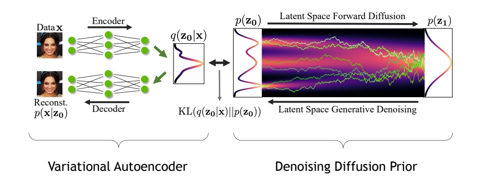 </p>
<p>Encoder maps the input data to an embedding space<br />
Denoising diffusion models are applied in the latent space</p>
<p>P58</p>
<h3 id="advantages"><a class="header" href="#advantages">Advantages:</a></h3>
<p>(1) The distribution of latent embeddings close to Normal distribution \(\to \) <em><strong>Simpler denoising, Faster synthesis</strong></em>!<br />
(2) Latent space \(\to \) <em><strong>More expressivity and flexibility in design!</strong></em><br />
(3) Tailored Autoencoders \(\to \) <em><strong>More expressivity, Application to any data type (graphs, text, 3D data, etc.)!</strong></em></p>
<table><thead><tr><th>ID</th><th>Year</th><th>Name</th><th>Note</th><th>Tags</th><th>Link</th></tr></thead><tbody>
<tr><td></td><td>2021</td><td>Score-based generative modeling in latent space</td><td><strong>End-to-End</strong> Training objective<br> <br> ✅ 这篇文章对 VAE 和 diffusion 一起进行训练，文章的创新点是，利用 score matching 中的信息来计算 cross entropy.</td><td></td><td></td></tr>
<tr><td>45</td><td>2022</td><td>High-Resolution Image Synthesis with Latent Diffusion Models</td><td><strong>Two-stage</strong> Training，先训E&amp;D，再训diffusion。每次需要训练的网络都不大。</td><td></td><td><a href="https://caterpillarstudygroup.github.io/ReadPapers/45.html">link</a></td></tr>
<tr><td></td><td>2021</td><td>D2C: Diffusion-Denoising Models for Few-shot Conditional Generation</td><td></td><td></td><td></td></tr>
<tr><td></td><td>2022</td><td>Score-Guided Intermediate Layer Optimization: Fast Langevin Mixing for Inverse Problems</td><td></td><td></td><td></td></tr>
<tr><td></td><td>2022</td><td>Dimensionality-Varying Diffusion Process</td><td></td><td></td><td></td></tr>
</tbody></table>
<p>The efficiency and expressivity of latent diffusion models + open-source access fueled a large body of work in the community</p>
<h1 id="advanced-diffusion-models"><a class="header" href="#advanced-diffusion-models">Advanced Diffusion Models</a></h1>
<blockquote>
<p>✅ 这一部分没有讲</p>
</blockquote>
<p>P63</p>
<h2 id="ode-interpretation"><a class="header" href="#ode-interpretation">ODE interpretation</a></h2>
<p>把ODE看作是Deterministic generative process</p>
<p> </p>
<ul>
<li>DDIM sampler can be considered as an integration rule of the following ODE:</li>
</ul>
<p>$$
d\mathbf{\bar{x} } (t)=\epsilon ^{(t)} _ \theta(\frac{\mathbf{\bar{x} } (t)}{\sqrt{\eta ^2+1}} )d\eta (t); \mathbf{\bar{x} } =\mathbf{x} / \sqrt{\bar{a} },\eta = \sqrt{1-\bar{a}} / \sqrt{\bar{a } }
$$</p>
<ul>
<li>
<p>Karras et al. argue that the ODE of DDIM is favored, as the tangent of the solution trajectory always points 
towards the denoiser output.</p>
</li>
<li>
<p>This leads to largely linear solution trajectories with low curvature à Low curvature means less truncation 
errors accumulated over the trajectories. </p>
</li>
</ul>
<blockquote>
<p>🔎 <u>Song et al., “Denoising Diffusion Implicit Models”, ICLR 2021.</u><br />
🔎 <u>Karras et al., “Elucidating the Design Space of Diffusion-Based Generative Models”, arXiv 2022.</u><br />
🔎 <u>Salimans &amp; Ho, “Progressive distillation for fast sampling of diffusion models”, ICLR 2022.</u></p>
</blockquote>
<p>P64</p>
<h2 id="momentum-based-diffusion"><a class="header" href="#momentum-based-diffusion">“Momentum-based” diffusion</a></h2>
<h5 id="introduce-a-velocity-variable-and-run-diffusion-in-extended-space"><a class="header" href="#introduce-a-velocity-variable-and-run-diffusion-in-extended-space">Introduce a velocity variable and run diffusion in extended space</a></h5>
<p> </p>
<p><u>Dockhorn et al., “Score-Based Generative Modeling with Critically-Damped Langevin Diffusion”, ICLR 2022.</u></p>
<p>P65</p>
<h2 id="additional-reading"><a class="header" href="#additional-reading">Additional Reading</a></h2>
<ul>
<li>Schrödinger Bridge:</li>
</ul>
<blockquote>
<p>🔎 Bortoli et al., <u>&quot;Diffusion Schrödinger Bridge&quot;,</u> NeurIPS 2021<br />
🔎 Chen et al., <u>“Likelihood Training of Schrödinger Bridge using Forward-Backward SDEs Theory”, </u>ICLR 2022</p>
</blockquote>
<ul>
<li>Diffusion Processes on Manifolds:</li>
</ul>
<blockquote>
<p>🔎 Bortoli et al., <u>&quot;Riemannian Score-Based Generative Modelling&quot;, </u>NeurIPS 2022</p>
</blockquote>
<ul>
<li>Cold Diffusion:</li>
</ul>
<blockquote>
<p>🔎 Bansal et al., <u>&quot;Cold Diffusion: Inverting Arbitrary Image Transforms Without Noise&quot;, </u>arXiv 2022</p>
</blockquote>
<ul>
<li>Diffusion for Corrupted Data:</li>
</ul>
<blockquote>
<p>🔎 Daras et al., <u>&quot;Soft Diffusion: Score Matching for General Corruptions&quot;, </u>TMLR 2023<br />
🔎 Delbracio and Milanfar, <u>&quot;Inversion by Direct Iteration: An Alternative to Denoising Diffusion for Image Restoration&quot;, </u>arXiv 2023<br />
🔎 Luo et al., <u>&quot;Image Restoration with Mean-Reverting Stochastic Differential Equations&quot;, </u>ICML 2023<br />
🔎 Liu et al., <u>“I2SB: Image-to-Image Schrödinger Bridge”, </u>ICML 2023</p>
</blockquote>
<ul>
<li>Blurring Diffusion Process:</li>
</ul>
<blockquote>
<p>🔎 Hoogeboom and Salimans, <u>&quot;Blurring Diffusion Models&quot;, </u>ICLR 2023<br />
🔎 Rissanen et al, <u>“Generative Modelling With Inverse Heat Dissipation”, </u>ICLR 2023</p>
</blockquote>
<hr />
<blockquote>
<p>本文出自CaterpillarStudyGroup，转载请注明出处。</p>
<p>https://caterpillarstudygroup.github.io/ImportantArticles/</p>
</blockquote>
<div style="break-before: page; page-break-before: always;"></div><p>P66</p>
<h1 id="conditional-generation-and-guidance"><a class="header" href="#conditional-generation-and-guidance">Conditional Generation and Guidance</a></h1>
<p>P67</p>
<blockquote>
<p>✅ 通常需要的是特定的生成，而不是随意的生成。因此需要通过control引入特定的需求。</p>
</blockquote>
<p>以下是文生图的例子：</p>
<p> </p>
<p><u>Ramesh et al., “Hierarchical Text-Conditional Image Generation with CLIP Latents”, arXiv 2022.</u><br />
<u>Saharia et al., “Photorealistic Text-to-Image Diffusion Models with Deep Language Understanding”, arXiv 2022.</u></p>
<p>P68</p>
<h2 id="conditioning-and-guidance-techniques"><a class="header" href="#conditioning-and-guidance-techniques">Conditioning and Guidance Techniques</a></h2>
<p>Explicit Conditions<br />
Classifier Guidance<br />
Classifier-free Guidance</p>
<p>P69</p>
<h1 id="explicit-conditions"><a class="header" href="#explicit-conditions">Explicit Conditions</a></h1>
<p>P70<br />
Conditional sampling can be considered as training \(p(\mathbf{x} |\mathbf{y} )\) where \(\mathbf{y}\) is the input conditioning (e.g., text) and \(\mathbf{x}\) is generated output (e.g., image)</p>
<p>Train the score model for \(\mathbf{x}\) conditioned on \(\mathbf{y}\) using:</p>
<p>$$
\mathbb{E} _ {(\mathbf{x,y} )\sim P\mathrm{data} (\mathbf{x,y} )}\mathbb{E} _ {\epsilon \sim \mathcal{N}(\mathbf{0,I} ) }\mathbb{E} _{t\sim u[0,T]}||\epsilon _ \theta (\mathbf{x} _ t,t;\mathbf{y} )- \epsilon ||^2_2 
$$</p>
<p>The conditional score is simply a U-Net with \(\mathbf{x}_t\) and \(\mathbf{y}\) together in the input.</p>
<p> </p>
<blockquote>
<p>✅ 需要 \((x，y)\) 的 pair data.</p>
</blockquote>
<p>P71</p>
<h1 id="classifier-guidance"><a class="header" href="#classifier-guidance">Classifier Guidance</a></h1>
<p>P72</p>
<h2 id="bayes-rule-in-action"><a class="header" href="#bayes-rule-in-action">Bayes’ Rule in Action</a></h2>
<p> </p>
<blockquote>
<p>✅ \(p(y)\) 与 \(\mathbf{x} _ t\) 无关，因此可以去掉。</p>
</blockquote>
<h2 id="训练方法"><a class="header" href="#训练方法">训练方法</a></h2>
<blockquote>
<p>✅ 第一步：需要一个训好的p(x)的 diffusion model 。<br />
✅ 第二步：训练一个分类网络，输入xt能够正确地预测控制条件（y不一定是离散的类别）。<br />
✅ 第三步：取第二步的梯度，用一定的权重\(w \)结合到第一步的forward过程中。\(w \)决定分类器的影响力。</p>
</blockquote>
<blockquote>
<p>✅ 只需要部分pair data和大量的非pair data。但需要单独训练一个分类器。</p>
</blockquote>
<h2 id="相关论文"><a class="header" href="#相关论文">相关论文</a></h2>
<table><thead><tr><th>ID</th><th>Year</th><th>Name</th><th>Note</th><th>Tags</th><th>Link</th></tr></thead><tbody>
<tr><td></td><td>2021</td><td>Score-Based Generative Modeling through Stochastic Differential Equations</td><td><a href="https://caterpillarstudygroup.github.io/ReadPapers/14.html">link</a></td><td></td><td></td></tr>
<tr><td></td><td>2021</td><td>Controllable and Compositional Generation with Latent-Space Energy-Based Models</td><td></td><td></td><td></td></tr>
<tr><td></td><td>2021</td><td>Diffusion models beat GANs on image synthesis</td><td></td><td></td><td></td></tr>
</tbody></table>
<h1 id="classifier-free-guidance"><a class="header" href="#classifier-free-guidance">Classifier-free Guidance</a></h1>
<table><thead><tr><th>ID</th><th>Year</th><th>Name</th><th>Note</th><th>Tags</th><th>Link</th></tr></thead><tbody>
<tr><td></td><td>2021</td><td>Classifier-Free Diffusion Guidance</td><td></td><td></td><td><a href="https://caterpillarstudygroup.github.io/ReadPapers/6.html">link</a></td></tr>
</tbody></table>
<div style="break-before: page; page-break-before: always;"></div><p>P76</p>
<h1 id="summary-1"><a class="header" href="#summary-1">Summary</a></h1>
<p>We reviewed diffusion fundamentals in 4 parts:</p>
<ul>
<li>Discrete-time diffusion models</li>
<li>Continuous-time diffusion models</li>
<li>Accelerated sampling from diffusion models</li>
<li>Guidance and conditioning.</li>
</ul>
<p>Next, we will review different applications and use cases of diffusion models after a break.</p>
<hr />
<blockquote>
<p>本文出自CaterpillarStudyGroup，转载请注明出处。</p>
<p>https://caterpillarstudygroup.github.io/ImportantArticles/</p>
</blockquote>
<div style="break-before: page; page-break-before: always;"></div><h1 id="diffusion-model-architectures"><a class="header" href="#diffusion-model-architectures">Diffusion model architectures</a></h1>
<p>P4</p>
<h2 id="architecture"><a class="header" href="#architecture">Architecture</a></h2>
<p>P5</p>
<h3 id="u-net-based-diffusion-architecture"><a class="header" href="#u-net-based-diffusion-architecture">U-Net Based Diffusion Architecture</a></h3>
<h4 id="u-net-architecture"><a class="header" href="#u-net-architecture">U-Net Architecture</a></h4>
<p> </p>
<blockquote>
<p>✅ U-Net的是Large Scale Image Diffusion Model中最常用的backbone。</p>
</blockquote>
<blockquote>
<p>🔎 Ronneberger et al., <u>“U-Net: Convolutional Networks for Biomedical Image Segmentation”, </u>MICCAI 2015</p>
</blockquote>
<h4 id="pipeline"><a class="header" href="#pipeline">Pipeline</a></h4>
<p> </p>
<blockquote>
<p>✅ 包含Input、U-Net backbone、Condition。<br />
✅ Condition 通常用 Concat 或 Cross attention 的方式与 Content 相结合。</p>
</blockquote>
<table><thead><tr><th>ID</th><th>Year</th><th>Name</th><th>Note</th><th>Tags</th><th>Link</th></tr></thead><tbody>
<tr><td>45</td><td>2022</td><td>High-Resolution Image Synthesis with Latent Diffusion Models</td><td><strong>Stable Diffusion</strong>, U-Net Based Diffusion Architecture<br>✅ (1)：在 latent space 上工作<br> ✅ (2)：引入多种 condition．</td><td>UNet</td><td><a href="https://caterpillarstudygroup.github.io/ReadPapers/45.html">link</a></td></tr>
<tr><td></td><td>2022</td><td>Photorealistic text-to-image diffusion models with deep language understanding</td><td>Imagen</td><td></td><td></td></tr>
<tr><td></td><td>2022</td><td>ediffi: Text-to-image diffusion models with an ensemble of expert denoiser</td><td>eDiff-I</td><td></td><td></td></tr>
</tbody></table>
<p>P7</p>
<h3 id="transformer-architecture"><a class="header" href="#transformer-architecture">Transformer Architecture</a></h3>
<h4 id="vision-transformervit"><a class="header" href="#vision-transformervit">Vision Transformer(ViT)</a></h4>
<p> </p>
<p>Dosovitskiy et al., <u>“An image is worth 16x16 words: Transformers for image recognition at scale”, </u>ICLR 2021</p>
<h4 id="pipeline-1"><a class="header" href="#pipeline-1">Pipeline</a></h4>
<p> </p>
<blockquote>
<p>✅ 特点：<br />
✅ 1. 把 image patches 当作 token.<br />
✅ 2. 在 Shallow layer 与 deep layer 之间引入 long skip connection.</p>
</blockquote>
<p>Bao et al.,<u> &quot;All are Worth Words: a ViT Backbone for Score-based Diffusion Models&quot;, </u>arXiv 2022</p>
<p>P8</p>
<h4 id="application"><a class="header" href="#application">Application</a></h4>
<table><thead><tr><th>ID</th><th>Year</th><th>Name</th><th>Note</th><th>Tags</th><th>Link</th></tr></thead><tbody>
<tr><td></td><td>2022</td><td>Scalable Diffusion Models with Transformers</td><td></td><td></td><td></td></tr>
<tr><td></td><td>2023</td><td>One Transformer Fits All Distributions in Multi-Modal Diffusion at Scale</td><td></td><td></td><td></td></tr>
<tr><td></td><td>2023</td><td>simple diffusion: End-to-end diffusion for high resolution images</td><td></td><td></td><td></td></tr>
</tbody></table>
<p>P9</p>
<h1 id="image-editing-and-customization-with-diffusion-models"><a class="header" href="#image-editing-and-customization-with-diffusion-models">Image editing and customization with diffusion models</a></h1>
<p>P10</p>
<h2 id="gaussian-noise方法"><a class="header" href="#gaussian-noise方法">Gaussian Noise方法</a></h2>
<table><thead><tr><th>ID</th><th>Year</th><th>Name</th><th>Note</th><th>Tags</th><th>Link</th></tr></thead><tbody>
<tr><td></td><td>2022</td><td>DEdit: Guided Image Synthesis and Editing with Stochastic Differential Equations</td><td></td><td><a href="https://caterpillarstudygroup.github.io/ReadPapers/23.html">link</a></td><td></td></tr>
</tbody></table>
<h2 id="ddim-inversion方法"><a class="header" href="#ddim-inversion方法">DDIM Inversion方法</a></h2>
<table><thead><tr><th>ID</th><th>Year</th><th>Name</th><th>Note</th><th>Tags</th><th>Link</th></tr></thead><tbody>
<tr><td></td><td>2023</td><td>Dual diffusion implicit bridges for image-to-image translation</td><td></td><td><a href="https://caterpillarstudygroup.github.io/ReadPapers/23.html">link</a></td><td></td></tr>
<tr><td></td><td>2023</td><td>DiffEdit: Diffusion-based semantic image editing with mask guidance</td><td></td><td><a href="https://caterpillarstudygroup.github.io/ReadPapers/24.html">link</a></td><td></td></tr>
<tr><td></td><td>2023</td><td>Imagic: Text-Based Real Image Editing with Diffusion Models</td><td></td><td><a href="https://caterpillarstudygroup.github.io/ReadPapers/25.html">link</a></td><td></td></tr>
</tbody></table>
<h2 id="attention-based-方法"><a class="header" href="#attention-based-方法">Attention based 方法</a></h2>
<table><thead><tr><th>ID</th><th>Year</th><th>Name</th><th>Note</th><th>Tags</th><th>Link</th></tr></thead><tbody>
<tr><td></td><td>2023</td><td>Prompt-to-Prompt Image Editing with Cross-Attention Control</td><td>通过控制生成过程中的 attention maps进行图像编辑</td><td>attention控制</td><td><a href="https://caterpillarstudygroup.github.io/ReadPapers/20.html">link</a></td></tr>
<tr><td></td><td>2023</td><td>NULL-text Inversion for Editing Real Images Using Guided Diffusion Models</td><td>针对真实图像（非生成图像）的编辑，以<a href="https://caterpillarstudygroup.github.io/ReadPapers/6.html">CFG</a>为基础，fix condition分支，优化无condition分支，使其embedding向condition分支的embedding靠近</td><td>attention控制</td><td></td></tr>
<tr><td></td><td></td><td>Plug-and-Play Diffusion Features for Text-Driven Image-to-Image Translation</td><td>在上一篇的基础上，通过attention注入的方式加速上述流程</td><td>attention控制</td><td></td></tr>
<tr><td></td><td>2023</td><td>InstructPix2Pix: Learning to Follow Image Editing Instructions</td><td>在上一篇的基础上，通过attention注入的方式加速上述流程</td><td>attention控制</td><td></td></tr>
</tbody></table>
<p>P32</p>
<h1 id="personalization-with-diffusion-models"><a class="header" href="#personalization-with-diffusion-models">Personalization with diffusion models</a></h1>
<h2 id="dreambooth"><a class="header" href="#dreambooth">DreamBooth</a></h2>
<p>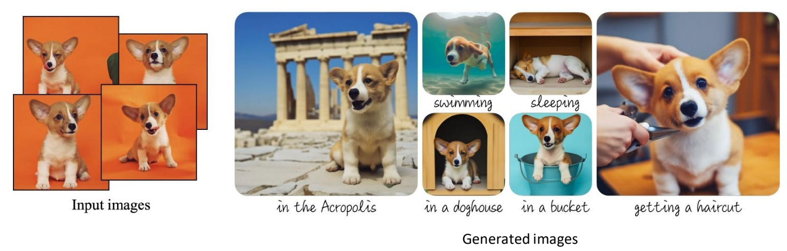 </p>
<blockquote>
<p>✅ 基于目标的多张 reference，输入文本，生成包含目标的图像。要求生成的结果与refernce一致，且具有高质量和多样性：</p>
</blockquote>
<p>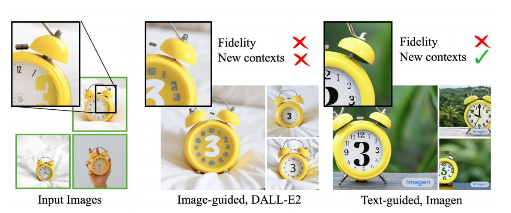 </p>
<p>Ruiz et al., <u>&quot;DreamBooth: Fine Tuning Text-to-Image Diffusion Models for Subject-Driven Generation&quot;,</u> CVPR 2023</p>
<p>P34</p>
<h3 id="pipeline-2"><a class="header" href="#pipeline-2">Pipeline</a></h3>
<p>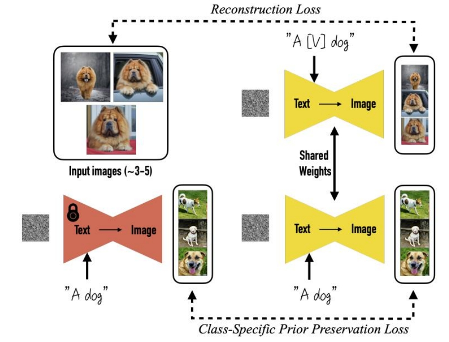</p>
<blockquote>
<p>✅ 使用 reference image 微调 model，具体方法为：<br />
✅ 输入多张reference image，使用包含特定 identifier 的文本构造 pairdata。目的是对输入图像做 encode。<br />
✅ 同时使用用不含 identifer 的图像和文本调练，构造重建 loss 和对抗 loss.目的是生成的多样性及防止过拟合。</p>
</blockquote>
<p>P35</p>
<h3 id="dreambooth-results"><a class="header" href="#dreambooth-results">DreamBooth Results</a></h3>
<p>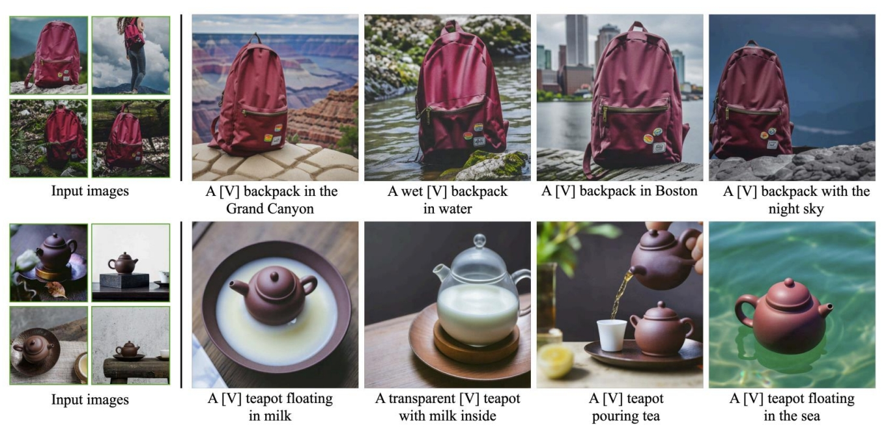</p>
<blockquote>
<p>Input Image的基本特征保持住了，但是细节还是有些丢失。比如书包右下角的三个贴图，在每个生成里面都不一样。</p>
</blockquote>
<p>P36</p>
<h3 id="dreambooth-applications"><a class="header" href="#dreambooth-applications">DreamBooth Applications</a></h3>
<p>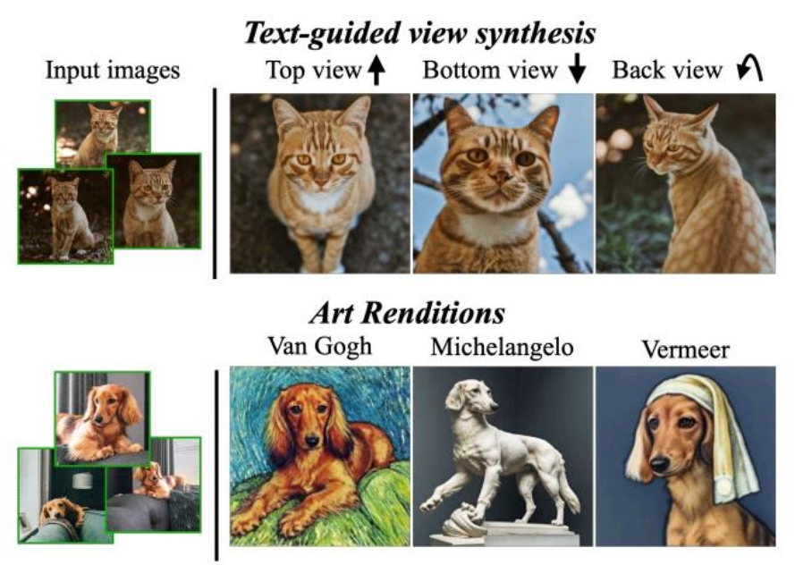 </p>
<blockquote>
<p>用来生成动作照片还是可以的，因为人对动画的细节差异没有那么敏感。例如这只猫。额头上的花纹，在每张图像上都不一样。如果用来生成人，会发明显的差异。</p>
</blockquote>
<p>P37</p>
<h2 id="textual-inversion-optimizing-text-embedding"><a class="header" href="#textual-inversion-optimizing-text-embedding">Textual Inversion: Optimizing Text Embedding</a></h2>
<p> </p>
<blockquote>
<p>✅ 输入3-5张reference iamge。可以把内容、风格、动作等编辑为 \(S_ {\ast }\)<br />
✅ 用一个 word 来 Encode 源，因此称为 Textual Inversion.</p>
</blockquote>
<p>Gal et al., <u>&quot;An Image is Worth One Word: Personalizing Text-to-Image Generation using Textual Inversion&quot;,</u> ICLR 2023</p>
<p>P38</p>
<h3 id="pipeline-3"><a class="header" href="#pipeline-3">Pipeline</a></h3>
<p>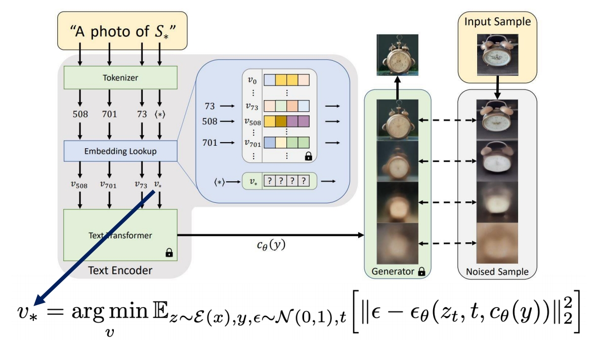 </p>
<blockquote>
<p>✅ 输入带 holder world 的 String，(1) 转为 token (2) token 转为“连续的表示”，即 embedding. (3) embedding 转为 conditional code，用于引导生成模型。<br />
✅ 通过生成的结果与GT比较，构造重建loss来优化 embedding.</p>
</blockquote>
<p>P39</p>
<h3 id="textual-inversion-results"><a class="header" href="#textual-inversion-results">Textual Inversion Results</a></h3>
<p>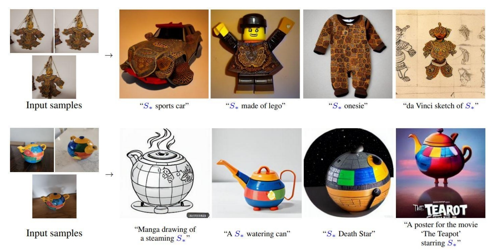 </p>
<p>P40<br />
Works well for artistic styles</p>
<p>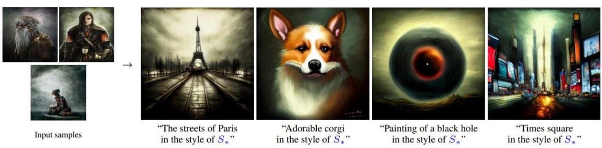 </p>
<p>P41</p>
<h2 id="low-rank-adaptation-lora"><a class="header" href="#low-rank-adaptation-lora">Low-rank Adaptation (LoRA)</a></h2>
<blockquote>
<p>✅ 要解决的问题：finetune 所需的训练时间、参数存储，Computation 的成本很高。<br />
✅ 解决方法：仅仅拟合residual model 而不是 finetune entire model.<br />
✅ Results：LoRA对数据集要求少，收敛速度快。可以极大提升 finetune 效率，也更省空间。</p>
</blockquote>
<p>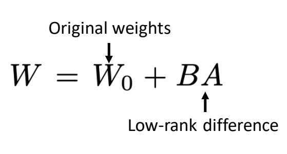 </p>
<table><thead><tr><th>ID</th><th>Year</th><th>Name</th><th>Note</th><th>Tags</th><th>Link</th></tr></thead><tbody>
<tr><td>38</td><td>2021</td><td>Lora: Low-rank adaptation of large language models</td><td>残差通常可以用low rank Matrix来拟合，因为称为low-rank adaptation。</td><td></td><td><a href="https://caterpillarstudygroup.github.io/ReadPapers/38.html">link</a></td></tr>
<tr><td></td><td></td><td>Lora + Dreambooth (by Simo Ryu)</td><td></td><td></td><td><a href="https://github.com/cloneofsimo/lora">https://github.com/cloneofsimo/lora</a></td></tr>
</tbody></table>
<p>P43</p>
<h2 id="multi-concept-customization-of-text-to-image-diffusion"><a class="header" href="#multi-concept-customization-of-text-to-image-diffusion">Multi-Concept Customization of Text-to-Image Diffusion</a></h2>
<p>Kumari et al., <u>&quot;Multi-Concept Customization of Text-to-Image Diffusion&quot;,</u> CVPR 2023</p>
<h3 id="finetune的性能问题"><a class="header" href="#finetune的性能问题">finetune的性能问题</a></h3>
<blockquote>
<p>要解决的问题与上一篇相同，即finetune 所需的训练时间、参数存储，Computation 的成本很高。
但解决方法有些区别。上一篇通过增加额外的残差模块，而这一篇通过只finetune原始模型的部分参数。</p>
</blockquote>
<p>P45</p>
<h4 id="analyze-change-in-weights"><a class="header" href="#analyze-change-in-weights">Analyze change in weights</a></h4>
<blockquote>
<p>✅ 选择模型的部分参数进行 finetune．问题是怎么选择？<br />
作者通过分析模型各参数的重要性，insights 应该 finetune 哪些参数。</p>
</blockquote>
<p>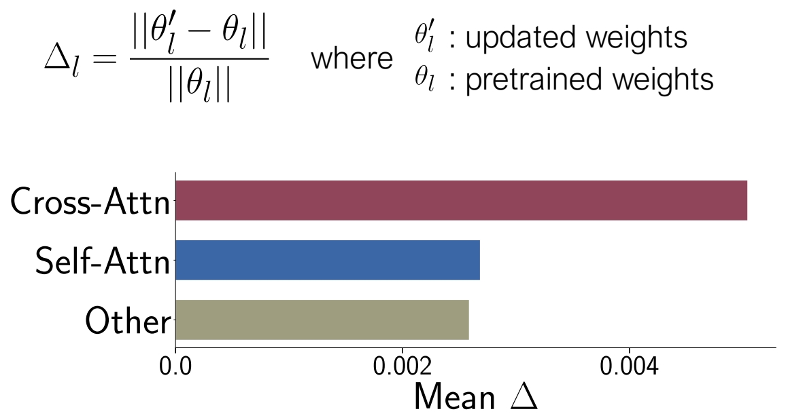 </p>
<blockquote>
<p>✅ Cross-Attn 层用于结合图像和文本的特征。<br />
✅ Self-Attn 用于图像内部。<br />
✅ Other 主要是卷积和 Normalization.<br />
✅ 通过比较 pretrained 模型和 finetune 模型，change 主要发生成Cross-Attn 层，说明 Cross-Attn 层在 finetune 过程中更重要！</p>
</blockquote>
<p>P46</p>
<h4 id="only-fine-tune-cross-attention-layers"><a class="header" href="#only-fine-tune-cross-attention-layers">Only fine-tune cross-attention layers</a></h4>
<p></p>
<blockquote>
<p>✅ 由以上观察结果，finetune 时只更新 K 和 V 的参数。</p>
</blockquote>
<p>P47</p>
<h3 id="how-to-prevent-overfitting"><a class="header" href="#how-to-prevent-overfitting">How to prevent overfitting?</a></h3>
<blockquote>
<p>用少量的数据finetune整个模型，容易造成过拟合。<br />
✅ 解决方法：通过在训练过程中引入一个正则化项来防止过拟合</p>
</blockquote>
<p>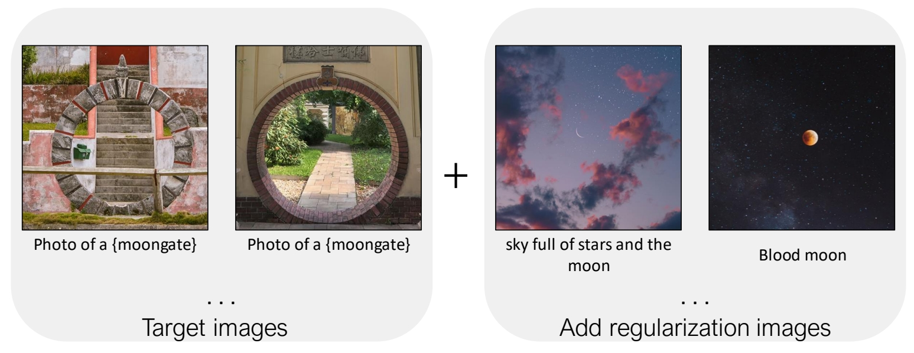</p>
<blockquote>
<p>✅ 从large scale image dataset中选择一些所标注文本与左图文本相似度比较高的图像。这些图像与文本的pair data用于计算正则化项。</p>
</blockquote>
<p>P48</p>
<h3 id="personalized-concepts"><a class="header" href="#personalized-concepts">Personalized concepts</a></h3>
<h4 id="要解决的问题"><a class="header" href="#要解决的问题">要解决的问题</a></h4>
<blockquote>
<p>✅ 目的：finetune SD 得到这只狗的文生图模型。</p>
</blockquote>
<p>How to describe personalized concepts?</p>
<p>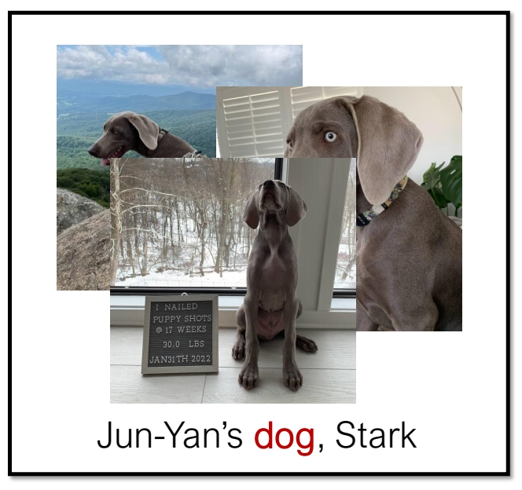</p>
<blockquote>
<p>但只有少量的关于这只狗的数据。</p>
</blockquote>
<h4 id="解决方法"><a class="header" href="#解决方法">解决方法</a></h4>
<p>定义 V\(^\ast \) 为 modifier token in the text embedding space，例如：</p>
<blockquote>
<p>解决方法：定义 \(V^ \ast \) 为 modifier token，并把它作为一个新的 token.</p>
</blockquote>
<p>V\(^\ast \) <strong>dog</strong></p>
<p>P49</p>
<h4 id="pileline"><a class="header" href="#pileline">Pileline</a></h4>
<p>Also fine-tune the modifier token V\(^\ast \) that describes the personalized concept</p>
<p>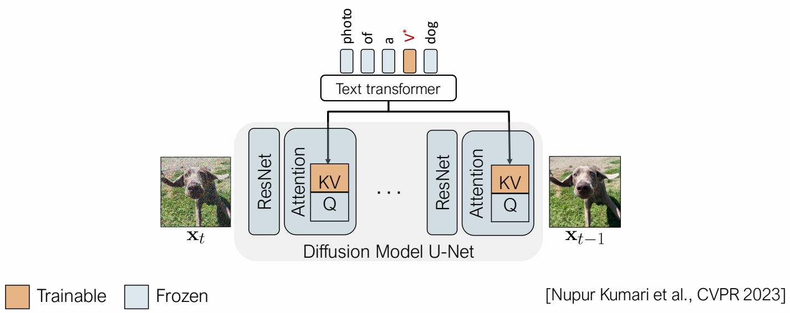</p>
<blockquote>
<p>✅ 把 \(V^ \ast \) 代入 caption，并用这只狗的数据做 finetune。同样只更新 K 和 V.</p>
</blockquote>
<p>P50</p>
<h4 id="single-concept-results"><a class="header" href="#single-concept-results">Single concept results</a></h4>
<p></p>
<p>P51</p>
<h3 id="multiple-new-concepts"><a class="header" href="#multiple-new-concepts">Multiple new concepts?</a></h3>
<h4 id="要解决的问题-1"><a class="header" href="#要解决的问题-1">要解决的问题</a></h4>
<p>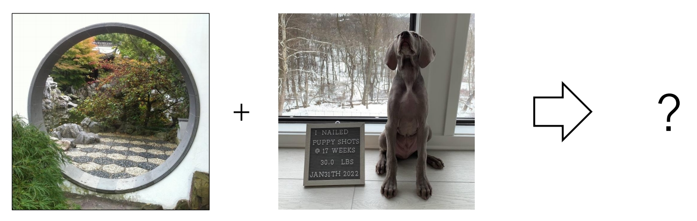</p>
<blockquote>
<p>要生成同时包含moongate与这只狗的图像</p>
</blockquote>
<p>P52</p>
<h4 id="joint-training"><a class="header" href="#joint-training">Joint training</a></h4>
<p>Combine the training dataset of multiple concepts</p>
<p>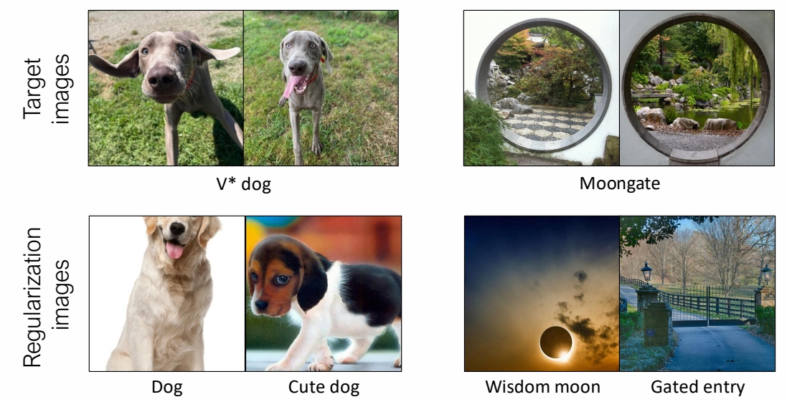</p>
<blockquote>
<p>✅ 同时使用两个小样本数据 finetune，且使用 modifier token 和正则化图像，可以得到二者结合的效果。</p>
</blockquote>
<p>P53</p>
<h4 id="two-concept-results"><a class="header" href="#two-concept-results">Two concept results</a></h4>
<p>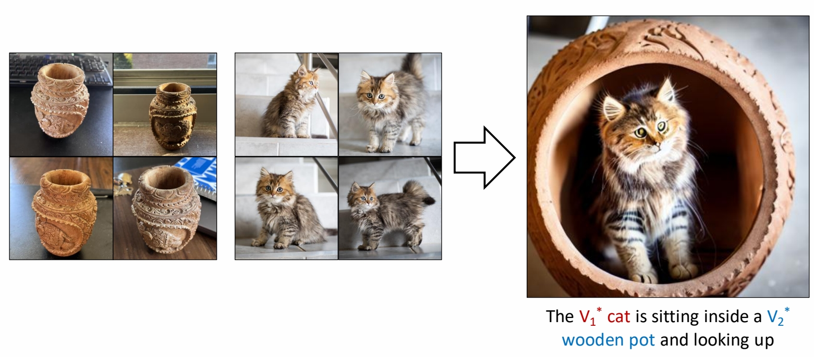</p>
<blockquote>
<p>✅ 也可以同时引入2个 modifier token．</p>
</blockquote>
<p>P54</p>
<h3 id="two-concept-results-1"><a class="header" href="#two-concept-results-1">Two concept results</a></h3>
<p> </p>
<p>Kumari et al., <u>&quot;Multi-Concept Customization of Text-to-Image Diffusion&quot;,</u> CVPR 2023</p>
<p>P55</p>
<h2 id="key-locked-rank-one-editing-for-text-to-image-personalization"><a class="header" href="#key-locked-rank-one-editing-for-text-to-image-personalization">Key-Locked Rank One Editing for Text-to-Image Personalization</a></h2>
<p></p>
<blockquote>
<p>Image Personalization任务</p>
</blockquote>
<p>Tewel et al., <u>&quot;Key-Locked Rank One Editing for Text-to-Image Personalization&quot;,</u> SIGGRAPH 2023</p>
<h4 id="主要原理"><a class="header" href="#主要原理">主要原理</a></h4>
<blockquote>
<p>✅ 方法：dynamic rank one update.<br />
✅ Perffusion 解决 Image Personalization 的 overfitting 问题的方法：<br />
✅ (1) 训练时，Introducing new <em>xxxx</em> that locks the new concepts cross-attention keys to their sub-ordinate category.<br />
✅ (2) 推断时，引入 a gate rank one approach 可用于控制 the learned concept的影响力。<br />
✅ (3) 允许 medel 把不同的 concept 结合到一起，并学到不同concept 之间的联系。</p>
</blockquote>
<h4 id="results"><a class="header" href="#results">Results</a></h4>
<blockquote>
<p>可以很好地model the interaction of the two conception。</p>
</blockquote>
<p>P56</p>
<h2 id="t2i-adapter-learning-adapters-to-dig-out-more-controllable-ability-for-text-to-image-diffusion-models"><a class="header" href="#t2i-adapter-learning-adapters-to-dig-out-more-controllable-ability-for-text-to-image-diffusion-models">T2I-Adapter: Learning Adapters to Dig out More Controllable Ability for Text-to-Image Diffusion Models</a></h2>
<p>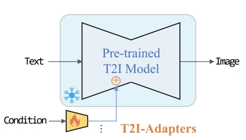</p>
<blockquote>
<p>通过引入一个额外的apapter来增加对已有文生图模型的控制方法。</p>
</blockquote>
<p>Mou et al., <u>&quot;T2I-Adapter: Learning Adapters to Dig out More Controllable Ability for Text-to-Image Diffusion Models&quot;,</u> arXiv 2023</p>
<h3 id="pipeline-4"><a class="header" href="#pipeline-4">Pipeline</a></h3>
<p></p>
<blockquote>
<p>✅ Adapter 包含4个 feature extraction blocks 和3个 down sample blocks. 其中4个feature extraction block对应4个新增加的控制方法。3次降采样，对应于 UNET 的不同 Level.</p>
</blockquote>
<h3 id="优点"><a class="header" href="#优点">优点</a></h3>
<blockquote>
<p>这个方法具有以下优点：</p>
</blockquote>
<ul>
<li>Plug-and-play. Not affect original network topology and generation ability</li>
</ul>
<blockquote>
<p>易使用</p>
</blockquote>
<ul>
<li>Simple and small. ~77M parameters and ~300M storage</li>
</ul>
<blockquote>
<p>简单、易训</p>
</blockquote>
<ul>
<li>Flexible. Various adapters for different control conditions</li>
<li>Composable.  Several adapters to achieve multi-condition control</li>
</ul>
<blockquote>
<p>不同的adaper可以combine，成为新的guidance。</p>
</blockquote>
<ul>
<li>Generalizable. Can be directly used on customed models</li>
</ul>
<p>P57</p>
<h3 id="result"><a class="header" href="#result">Result</a></h3>
<p></p>
<blockquote>
<p>✅ Adapter 可以使用于多种形式的 Control．</p>
</blockquote>
<p>P58</p>
<h2 id="adding-conditional-control-to-text-to-image-diffusion-models-controlnet"><a class="header" href="#adding-conditional-control-to-text-to-image-diffusion-models-controlnet">Adding Conditional Control to Text-to-Image Diffusion Models (ControlNet)</a></h2>
<h3 id="controlnet"><a class="header" href="#controlnet">ControlNet</a></h3>
<blockquote>
<p>✅ Control Net 是一种通过引入额外条件来控制 Diffusion Model 的网络架构。</p>
</blockquote>
<p>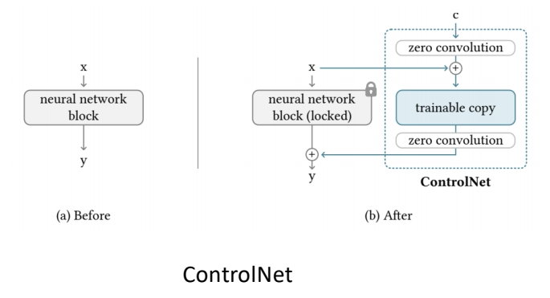 </p>
<blockquote>
<p>✅ (a) 是预训练的 diffusion model. C 是要添加的新的condition.<br />
✅ 把 (a) 的网络复制一份，finetune copy 的网络，结果叠加。<br />
✅ Zero Convolution：1-1 卷积层，初始的 \(w\) 和 \(b\) 都为 0．</p>
</blockquote>
<p>Zhang and Agrawala, <u>&quot;Adding Conditional Control to Text-to-Image Diffusion Models&quot;,</u> arXiv 2023</p>
<p>P59</p>
<h3 id="control-net-应用到-stable-diffusion-的例子"><a class="header" href="#control-net-应用到-stable-diffusion-的例子">Control Net 应用到 Stable Diffusion 的例子</a></h3>
<h4 id="pipeline-5"><a class="header" href="#pipeline-5">Pipeline</a></h4>
<p>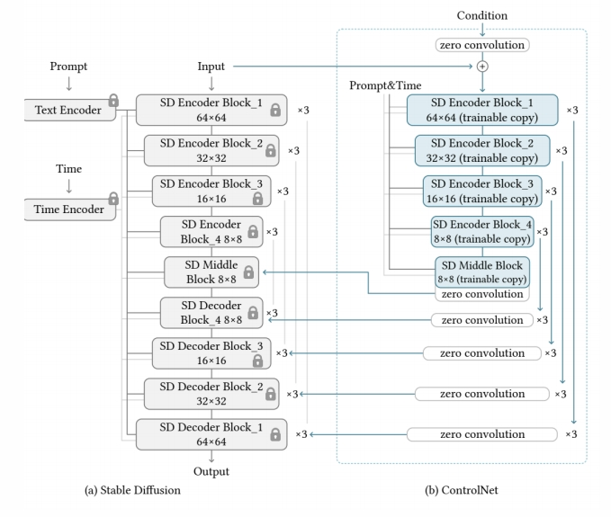</p>
<p>P60</p>
<h4 id="train-objective"><a class="header" href="#train-objective">Train objective</a></h4>
<p>$$
\mathcal{L} =\mathbb{E} _ {\mathbb{z}_0,t,\mathbf{c} _ t,\mathbf{c} _ f,\epsilon \sim \mathcal{N} (0,1)}[||\epsilon -\epsilon _\theta (\mathbf{z} _ t,t,\mathbf{c} _ t,\mathbf{c}_f)||^2_2] 
$$</p>
<p>where t is the time step, \(\mathbf{c} _t\) is the text prompts, \(\mathbf{c} _ f\) is the task-specific conditions</p>
<blockquote>
<p>需要（x, cf, ct）的pair data。</p>
</blockquote>
<p>P61</p>
<h3 id="controlnet-result"><a class="header" href="#controlnet-result">ControlNet Result</a></h3>
<p>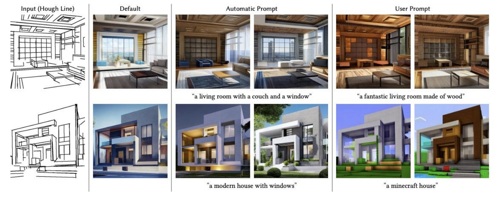 </p>
<p>P62</p>
<p>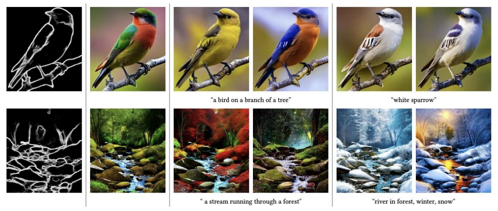 </p>
<p>P63</p>
<p>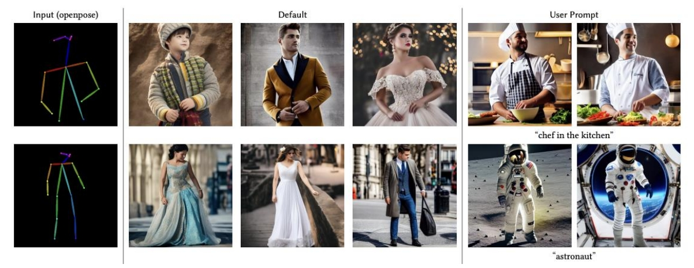 </p>
<p>P64</p>
<h2 id="gligen-open-set-grounded-text-to-image-generation"><a class="header" href="#gligen-open-set-grounded-text-to-image-generation">GLIGEN: Open-Set Grounded Text-to-Image Generation</a></h2>
<p>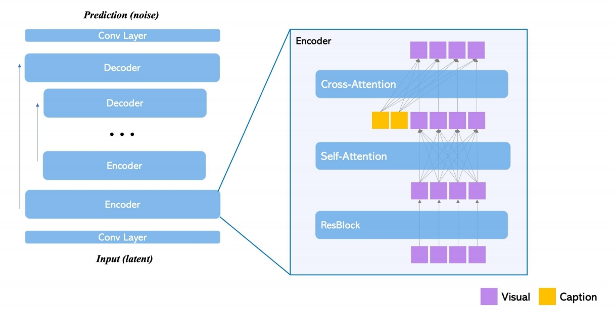 </p>
<p>Li et al., <u>&quot;GLIGEN: Open-Set Grounded Text-to-Image Generation&quot;,</u> CVPR 2023</p>
<blockquote>
<p>✅ GLIGEN 是另一种网络架构。</p>
</blockquote>
<p>P65</p>
<h3 id="pipeline-6"><a class="header" href="#pipeline-6">Pipeline</a></h3>
<p>GLIGEN对比ControlNet：</p>
<table><thead><tr><th>GLIGEN</th><th>ControlNet</th></tr></thead><tbody>
<tr><td>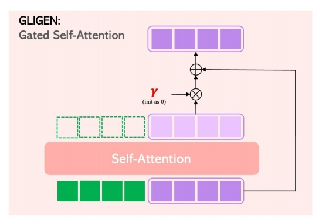</td><td></td></tr>
<tr><td>✅ 新增 Gated Self-Attention 层，加在 Attention 和 Cross Attention 之间。<br> ✅ GLIGEN 把 Condition 和 init feature 作 Concat</td><td>✅ Control Net 分别处理 feature 和 Control 并把结果叠加。</td></tr>
</tbody></table>
<p>P66</p>
<h3 id="gligen-result"><a class="header" href="#gligen-result">GLIGEN Result</a></h3>
<p></p>
<p>P67</p>
<h1 id="other-applications-1"><a class="header" href="#other-applications-1">Other applications</a></h1>
<p>P68</p>
<h2 id="your-diffusion-model-is-secretly-a-zero-shot-classifier"><a class="header" href="#your-diffusion-model-is-secretly-a-zero-shot-classifier">Your Diffusion Model is Secretly a Zero-Shot Classifier</a></h2>
<blockquote>
<p>✅ 一个预训练好的 diffusion model （例如stable diffusion model），无须额外训练可以用作分类器，甚至能完成 Zero-shot 的分类任务。</p>
</blockquote>
<p>Li et al., <u>&quot;Your Diffusion Model is Secretly a Zero-Shot Classifier&quot;,</u> arXiv 2023</p>
<h3 id="pipeline-7"><a class="header" href="#pipeline-7">Pipeline</a></h3>
<p></p>
<blockquote>
<p>✅ 输入图像\(x\)，用随机噪声\(\epsilon  \)加噪；再用 condition c 预测噪声 \(\epsilon  _\theta \)。优化条件 C 使得 \(\epsilon  _\theta \) 最接近 \(\epsilon \). 得到的 C 就是分类。</p>
</blockquote>
<p>P69</p>
<h2 id="improving-robustness-using-generated-data"><a class="header" href="#improving-robustness-using-generated-data">Improving Robustness using Generated Data</a></h2>
<blockquote>
<p>✅ 使用 diffusion Model 做数据增强。</p>
</blockquote>
<p></p>
<p><strong>Overview of the approach:</strong></p>
<ol>
<li>train a generative model and a non￾robust classifier, which are used to provide pseudo-labels to the generated data.</li>
<li>The generated and original training data are combined to train a robust classifier.</li>
</ol>
<p>Gowal et al., <u>&quot;Improving Robustness using Generated Data&quot;,</u> NeurIPS 2021</p>
<p>P70</p>
<h2 id="better-diffusion-models-further-improve-adversarial-training"><a class="header" href="#better-diffusion-models-further-improve-adversarial-training">Better Diffusion Models Further Improve Adversarial Training</a></h2>
<p></p>
<p>Wang et al., <u>&quot;Better Diffusion Models Further Improve Adversarial Training&quot;,</u> ICML 2023</p>
<p>P72</p>
<h1 id="reference"><a class="header" href="#reference">Reference</a></h1>
<ul>
<li>Bao et al., <u>&quot;All are Worth Words: a ViT Backbone for Score-based Diffusion Models&quot;,</u> arXiv 2022</li>
<li>Peebles and Xie, <u>&quot;Scalable Diffusion Models with Transformers&quot;,</u> arXiv 2022</li>
<li>Bao et al., <u>&quot;One Transformer Fits All Distributions in Multi-Modal Diffusion at Scale&quot;,</u> arXiv 2023</li>
<li>Jabri et al., <u>&quot;Scalable Adaptive Computation for Iterative Generation&quot;,</u> arXiv 2022</li>
<li>Hoogeboomet al., <u>&quot;simple diffusion: End-to-end diffusion for high resolution images&quot;,</u> arXiv 2023</li>
<li>Meng et al., <u>&quot;SDEdit: Guided Image Synthesis and Editing with Stochastic Differential Equations&quot;,</u> ICLR 2022</li>
<li>Li et al., <u>&quot;Efficient Spatially Sparse Inference for Conditional GANs and Diffusion Models&quot;,</u> NeurIPS 2022</li>
<li>Avrahami et al., <u>&quot;Blended Diffusion for Text-driven Editing of Natural Images&quot;,</u> CVPR 2022</li>
<li>Hertz et al., <u>&quot;Prompt-to-Prompt Image Editing with Cross-Attention Control&quot;,</u> ICLR 2023</li>
<li>Kawar et al., <u>&quot;Imagic: Text-Based Real Image Editing with Diffusion Models&quot;,</u> CVPR 2023</li>
<li>Couairon et al., <u>&quot;DiffEdit: Diffusion-based semantic image editing with mask guidance&quot;,</u> ICLR 2023</li>
<li>Sarukkai et al., <u>&quot;Collage Diffusion&quot;,</u>  arXiv 2023</li>
<li>Bar-Tal et al., <u>&quot;MultiDiffusion: Fusing Diffusion Paths for Controlled Image Generation&quot;,</u>  ICML 2023</li>
<li>Gal et al., <u>&quot;An Image is Worth One Word: Personalizing Text-to-Image Generation using Textual Inversion&quot;,</u> ICLR 2023</li>
<li>Ruiz et al., <u>&quot;DreamBooth: Fine Tuning Text-to-Image Diffusion Models for Subject-Driven Generation&quot;,</u> CVPR 2023</li>
<li>Kumari et al., <u>&quot;Multi-Concept Customization of Text-to-Image Diffusion&quot;,</u>  CVPR 2023</li>
<li>Tewel et al., <u>&quot;Key-Locked Rank One Editing for Text-to-Image Personalization&quot;,</u>  SIGGRAPH 2023</li>
<li>Zhao et al., <u>&quot;A Recipe for Watermarking Diffusion Models&quot;,</u>  arXiv 2023</li>
<li>Hu et al., <u>&quot;LoRA: Low-Rank Adaptation of Large Language Models&quot;,</u> ICLR 2022</li>
<li>Li et al., <u>&quot;GLIGEN: Open-Set Grounded Text-to-Image Generation&quot;,</u> CVPR 2023</li>
<li>Avrahami et al., <u>&quot;SpaText: Spatio-Textual Representation for Controllable Image Generation&quot;,</u> CVPR 2023</li>
<li>Zhang and Agrawala, <u>&quot;Adding Conditional Control to Text-to-Image Diffusion Models&quot;,</u> arXiv 2023</li>
<li>Mou et al., <u>&quot;T2I-Adapter: Learning Adapters to Dig out More Controllable Ability for Text-to-Image Diffusion Models&quot;,</u> arXiv 2023</li>
<li>Orgad et al., <u>&quot;Editing Implicit Assumptions in Text-to-Image Diffusion Models&quot;,</u> arXiv 2023</li>
<li>Han et al., <u>&quot;SVDiff: Compact Parameter Space for Diffusion Fine-Tuning&quot;,</u> arXiv 2023</li>
<li>Xie et al., <u>&quot;DiffFit: Unlocking Transferability of Large Diffusion Models via Simple Parameter￾Efficient Fine-Tuning&quot;,</u> rXiv 2023</li>
<li>Saharia et al., <u>&quot;Palette: Image-to-Image Diffusion Models&quot;,</u> SIGGRAPH 2022</li>
<li>Whang et al., <u>&quot;Deblurring via Stochastic Refinement&quot;,</u> CVPR 2022</li>
<li>Xu et al., <u>&quot;Open-Vocabulary Panoptic Segmentation with Text-to-Image Diffusion Models&quot;,</u> arXiv 2023</li>
<li>Saxena et al., <u>&quot;Monocular Depth Estimation using Diffusion Models&quot;,</u> arXiv 2023</li>
<li>Li et al., <u>&quot;Your Diffusion Model is Secretly a Zero-Shot Classifier&quot;,</u> arXiv 2023</li>
<li>Gowal et al., <u>&quot;Improving Robustness using Generated Data&quot;,</u> NeurIPS 2021</li>
<li>Wang et al., <u>&quot;Better Diffusion Models Further Improve Adversarial Training&quot;,</u> ICML 2023</li>
</ul>
<hr />
<blockquote>
<p>本文出自CaterpillarStudyGroup，转载请注明出处。</p>
<p>https://caterpillarstudygroup.github.io/ImportantArticles/</p>
</blockquote>
<div style="break-before: page; page-break-before: always;"></div><p>P2</p>
<h1 id="outline"><a class="header" href="#outline">Outline</a></h1>
<ul>
<li>Inverse problems</li>
<li>Setup</li>
<li>Replacement-based methods</li>
<li>Reconstruction-based methods</li>
</ul>
<p>P3</p>
<h1 id="diffusion-models-for-inverse-problems"><a class="header" href="#diffusion-models-for-inverse-problems">Diffusion Models for Inverse Problems</a></h1>
<h2 id="setup"><a class="header" href="#setup">Setup</a></h2>
<h3 id="goal-denoise-and-super-resolve-an-image"><a class="header" href="#goal-denoise-and-super-resolve-an-image">Goal: denoise and super-resolve an image</a></h3>
<p></p>
<p></p>
<blockquote>
<p>✅ 处理对象是一个特定的 Image． 虽然 Diffusion Prior 中包含大量高质量图像，但对于这个特定的处理对象，应当基于其中的部分 prior.</p>
</blockquote>
<p>P4</p>
<h3 id="goal-recover-the-masked-region-of-an-image"><a class="header" href="#goal-recover-the-masked-region-of-an-image">Goal: recover the masked region of an image</a></h3>
<p></p>
<p></p>
<p>We want to use the same diffusion model for different problems!</p>
<blockquote>
<p>✅ super-resolve 和 inpaint．</p>
</blockquote>
<p>P5</p>
<h2 id="diffusion-models-for-inverse-problems-two-paradigms"><a class="header" href="#diffusion-models-for-inverse-problems-two-paradigms">Diffusion Models for Inverse Problems: Two Paradigms</a></h2>
<p></p>
<p><strong>Replacement-based methods</strong><br />
(Overwrites model prediction with known information)</p>
<p></p>
<p><strong>Reconstruction-based methods</strong><br />
(Approximate classifier-free guidance <strong>without additional training</strong>)</p>
<blockquote>
<p>✅ 第 3 种方法，在 noise 上覆盖，可以得到类似 reconstruction-based 方法的效果。<br />
❓ 重建方法与 cfg 有什么关系？答：见P7．</p>
</blockquote>
<p>P6</p>
<h2 id="replacement-based-methods-an-example"><a class="header" href="#replacement-based-methods-an-example">Replacement-based Methods: An Example</a></h2>
<p></p>
<p>Song et al., <u>&quot;Score-Based Generative Modeling through Stochastic Differential Equations&quot;,</u> ICLR 2021</p>
<p>P7</p>
<h2 id="reconstruction-based-methods-an-example"><a class="header" href="#reconstruction-based-methods-an-example">Reconstruction-based Methods: An Example</a></h2>
<p></p>
<p>Chung et al., <u>&quot;Diffusion Posterior Sampling for General Noisy Inverse Problems&quot;,</u> ICLR 2023</p>
<blockquote>
<p>✅ cfg 使用\((x,t)\)的 pair data 来近似 \(\nabla _{x_t} \log p_t(\mathbf{y}|\mathbf{x}_t)\)，但此处没有 pair data，希望通过非训练的方法来得出。<br />
✅ 公式基于马尔可夫推导。\(p(\mathbf{y}|\mathbf{x}_t)\) 可描述为 \(p(\mathbf{y}|\mathbf{x}_0)\) 的期望。然后把期望从外面移到里面。</p>
</blockquote>
<p>P8</p>
<h2 id="diffusion-posterior-sampling"><a class="header" href="#diffusion-posterior-sampling">Diffusion Posterior Sampling</a></h2>
<p>In the Gaussian case,</p>
<p>$$
p(\mathbf{y} |\mathbb{E} [\mathbf{x} _ 0|\mathbf{x} _ t])=-c||\mathcal{A} \mathbf{(\hat{x}}  _ 0)-\mathbf{y} ||^2_2
$$</p>
<p>Maximizing the likelihood is minimizing the L2 distance between measured and generated!</p>
<p></p>
<p>Chung et al., <u>&quot;Diffusion Posterior Sampling for General Noisy Inverse Problems&quot;,</u> ICLR 2023</p>
<blockquote>
<p>✅ 在 diffusion 的同时做重建。</p>
</blockquote>
<p>P9</p>
<h2 id="solving-inverse-problems-with-diffusion-models"><a class="header" href="#solving-inverse-problems-with-diffusion-models">Solving Inverse Problems with Diffusion Models</a></h2>
<p><strong>Reconstruction-based methods</strong></p>
<ul>
<li><strong>ScoreSDE</strong>: simple linear problems, e.g., inpainting, colorization; later extended to MRI and CT.</li>
<li><strong>ILVR</strong>: more linear problems, e.g., super-resolution.</li>
<li><strong>SNIP</strong>S: slow solution for noisy linear problems.</li>
<li><strong>CCDF</strong>: better initializations.</li>
<li><strong>DDRM</strong>: fast solution for all noisy linear problems, and JPEG.</li>
</ul>
<p>Choi et al., <u>&quot;ILVR: Conditioning Method for Denoising Diffusion Probabilistic Models&quot;,</u> ICCV 2021<br />
Kawar et al., <u>&quot;SNIPS: Solving Noisy Inverse Problems Stochastically&quot;,</u> NeurIPS 2021<br />
Chung et al., <u>&quot;Come-Closer-Diffuse-Faster: Accelerating Conditional Diffusion Models for Inverse Problems through Stochastic Contraction&quot;,</u> CVPR 2022<br />
Song et al., <u>&quot;Solving Inverse Problems in Medical Imaging with Score-Based Generative Models&quot;,</u> ICLR 2022<br />
Kawar et al., <u>&quot;Denoising Diffusion Restoration Models&quot;,</u> NeurIPS 2022</p>
<p>P10</p>
<h2 id="solving-inverse-problems-with-diffusion-models-1"><a class="header" href="#solving-inverse-problems-with-diffusion-models-1">Solving Inverse Problems with Diffusion Models</a></h2>
<p><strong>Replacement-based methods</strong></p>
<ul>
<li><strong>Video Diffusion/Pyramid DDPM</strong>: used for uper-resolution.</li>
<li><strong>Pseudoinverse guidance</strong>: linear and some non-differentiable problems, e.g., JPEG</li>
<li><strong>MCG</strong>: combines replacement &amp; reconstruction for linear problems.</li>
</ul>
<p><strong>Others</strong></p>
<ul>
<li><strong>CSGM</strong>: Posterior sampling with Langevin Dynamics based on the diffusion score model.</li>
<li><strong>RED-Diff</strong>: A Regularizing-by-Denoising (RED), variational inference approach.</li>
<li><strong>Posterior sampling</strong>: use RealNVP to approximate posterior samples from diffusion models.</li>
</ul>
<p>Ho et al., <u>&quot;Video Diffusion Models&quot;,</u> NeurIPS 2022<br />
Chung et al., <u>&quot;Improving Diffusion Models for Inverse Problems using Manifold Constraints&quot;,</u> NeurIPS 2022<br />
Ryu and Ye, <u>&quot;Pyramidal Denoising Diffusion Probabilistic Models&quot;,</u> arXiv 2022<br />
Chung et al., <u>&quot;Diffusion Posterior Sampling for General Noisy Inverse Problems&quot;,</u> arXiv 2022<br />
Song et al., <u>&quot;Pseudoinverse-Guided Diffusion Models for Inverse Problems&quot;,</u> ICLR 2023<br />
Jalal et al., <u>&quot;Robust Compressed Sensing MRI with Deep Generative Priors&quot;,</u> NeurIPS 2021<br />
Mardani et al., <u>&quot;A Variational Perspective on Solving Inverse Problems with Diffusion Models&quot;,</u> arXiv 2023<br />
Feng et al., <u>&quot;Score-Based Diffusion Models as Principled Priors for Inverse Imaging&quot;,</u> arXiv 2023</p>
<hr />
<blockquote>
<p>本文出自CaterpillarStudyGroup，转载请注明出处。</p>
<p>https://caterpillarstudygroup.github.io/ImportantArticles/</p>
</blockquote>
<div style="break-before: page; page-break-before: always;"></div><p>P11</p>
<h1 id="3d"><a class="header" href="#3d">3D</a></h1>
<ul>
<li><strong>Diffusion on various 3D representations</strong></li>
<li>2D diffusion models for 3D generation</li>
<li>Diffusion models for view synthesis</li>
<li>3D reconstruction</li>
<li>3D editing</li>
</ul>
<p>P12</p>
<h2 id="diffusion-models-for-point-clouds"><a class="header" href="#diffusion-models-for-point-clouds">Diffusion Models for Point Clouds</a></h2>
<p>A set of points with location information.</p>
<p></p>
<p></p>
<p>Zhou et al., <u>&quot;3D Shape Generation and Completion through Point-Voxel Diffusion&quot;,</u> ICCV 2021<br />
Liu et al, <u>&quot;Point-Voxel CNN for Efficient 3D Deep Learning&quot;,</u> NeurIPS 2019</p>
<blockquote>
<p>✅ 分支1：逐顶点的 MLP (对应图中 b)<br />
✅ 分支2：VOX 可以看作是低分辨率的 points<br />
✅ 优点是结构化，可用于 CNN<br />
❓ VOX → points，低分辨到高分辨率要怎么做？<br />
❓ 怎么把 voxel 内的点转换为 voxel 的特征？</p>
</blockquote>
<p>P13</p>
<h2 id="diffusion-models-for-point-clouds-1"><a class="header" href="#diffusion-models-for-point-clouds-1">Diffusion Models for Point Clouds</a></h2>
<p></p>
<p>Zhou et al., <u>&quot;3D Shape Generation and Completion through Point-Voxel Diffusion&quot;,</u> ICCV 2021</p>
<blockquote>
<p>✅ Completion：深度图 → 完整点<br />
✅ 方法：(1) 基于深度图生成点云 (2) 用 inpainting 技术补全<br />
✅ generation 和 completion 是两种不同的 task.</p>
</blockquote>
<p>P14</p>
<h2 id="diffusion-models-for-point-clouds-2"><a class="header" href="#diffusion-models-for-point-clouds-2">Diffusion Models for Point Clouds</a></h2>
<p></p>
<p>Zeng et al., <u>&quot;LION: Latent Point Diffusion Models for 3D Shape Generation&quot;,</u> NeurIPS 2022</p>
<blockquote>
<p>✅ 特点：<br />
✅ 1、latent diffusion model for point clouds.<br />
✅ 2、point-voxel CNN 架构，用于把 shape 编码成 latent shape 及 lantent point.<br />
✅ 3、diffusion model 把 latent point 重建出原始点。</p>
</blockquote>
<p>P15</p>
<h2 id="diffusion-models-for-point-clouds-3"><a class="header" href="#diffusion-models-for-point-clouds-3">Diffusion Models for Point Clouds</a></h2>
<p>Point-E uses a synthetic view from fine-tuned GLIDE, and then ”lifts” the image to a 3d point cloud.</p>
<p></p>
<p></p>
<p>Nichol et al., <u>&quot;Point-E: A System for Generating 3D Point Clouds from Complex Prompts&quot;,</u> arXiv 2022</p>
<blockquote>
<p>✅ point E task：文生成点云。<br />
✅ 第1步：文生图，用 fine-tuned GLIDE<br />
✅ 第2步：图生点，用 transformer-based diffusion model.</p>
</blockquote>
<p>P16</p>
<h2 id="diffusion-models-for-signed-distance-functions"><a class="header" href="#diffusion-models-for-signed-distance-functions">Diffusion Models for Signed Distance Functions</a></h2>
<p>SDF is a function representation of a surface.<br />
For each location x, |SDF(x)| = smallest distance to any point on the surface.</p>
<p></p>
<p>P17</p>
<h2 id="diffusion-models-for-signed-distance-functions-1"><a class="header" href="#diffusion-models-for-signed-distance-functions-1">Diffusion Models for Signed Distance Functions</a></h2>
<ul>
<li>Memory of SDF grows cubically with resolution</li>
<li>Wavelets can be used for compression!</li>
<li>Diffusion for coarse coefficients, then predict detailed ones.</li>
</ul>
<p></p>
<p></p>
<p>Hui et al., <u>&quot;Neural Wavelet-domain Diffusion for 3D Shape Generation&quot;,</u> arXiv 2022</p>
<blockquote>
<p>✅ 这里说的 SDF，是用离散的方式来记录每个点的 distance.<br />
✅ Wavelet 把 SDF 变为 coarse 系数，diffusion model 生成 coarse 系数，再通过另一模型变为 detailed</p>
</blockquote>
<p>P18</p>
<h2 id="diffusion-models-for-signed-distance-functions-2"><a class="header" href="#diffusion-models-for-signed-distance-functions-2">Diffusion Models for Signed Distance Functions</a></h2>
<p></p>
<p><strong>Latent space diffusion for SDFs, where conditioning can be provided with cross attention</strong></p>
<p>Chou et al., <u>&quot;DiffusionSDF: Conditional Generative Modeling of Signed Distance Functions&quot;,</u> arXiv 2022</p>
<blockquote>
<p>✅ 原理与上一页相似，只是把 waveles 换成了 VAE.</p>
</blockquote>
<p>P19</p>
<h2 id="diffusion-models-for-other-3d-representations"><a class="header" href="#diffusion-models-for-other-3d-representations">Diffusion Models for Other 3D Representations</a></h2>
<p>Neural Radiance Fields (NeRF) is another representation of a 3D object.</p>
<p></p>
<blockquote>
<p>✅ NeRF：用体的方式来描述 3D 物体<br />
✅ (1) 从 diffusion 中提取 image （2）从 image 计算 loss (3) loss 更新 image (4) image 更新 NeRF．<br />
✅ \(（x,y,z,\theta ,\phi ）\) 是每个点在向量中的表示，其中前三维是 world coordinate，后面两维是 viewing direction<br />
✅ density 描述这个点有多透明。<br />
✅ F 是一个小型的网络，例如 MLP.</p>
</blockquote>
<p>P20</p>
<h2 id="diffusion-models-for-other-3d-representations-1"><a class="header" href="#diffusion-models-for-other-3d-representations-1">Diffusion Models for Other 3D Representations</a></h2>
<p><br />
<strong>NeRF</strong><br />
(Fully implicit)</p>
<p><br />
<strong>Voxels</strong><br />
(Explicit / hybrid)</p>
<p><br />
<strong>Triplanes</strong><br />
(Factorized, hybrid)</p>
<p>Image from EG3D paper.</p>
<blockquote>
<p>✅ Nenf 可以有三种表示形式</p>
</blockquote>
<p>P21</p>
<h2 id="diffusion-models-for-other-3d-representations-2"><a class="header" href="#diffusion-models-for-other-3d-representations-2">Diffusion Models for Other 3D Representations</a></h2>
<ul>
<li>Triplanes, regularized ReLU Fields, the MLP of NeRFs...</li>
<li>A good representation is important!</li>
</ul>
<p><br />
Triplane diffusion</p>
<p><br />
Regularized ReLU Fields</p>
<p><br />
Implicit MLP of NeRFs</p>
<p>Shue et al., <u>&quot;3D Neural Field Generation using Triplane Diffusion&quot;,</u> arXiv 2022<br />
Yang et al., <u>&quot;Learning a Diffusion Prior for NeRFs&quot;,</u> ICLR Workshop 2023<br />
Jun and Nichol, <u>&quot;Shap-E: Generating Conditional 3D Implicit Functions&quot;,</u> arXiv 2023</p>
<blockquote>
<p>✅ 这三种表示形式都可以与 diffuson 结合。<br />
✅ 好的表示形式对diffusion 的效果很重要。</p>
</blockquote>
<hr />
<blockquote>
<p>本文出自CaterpillarStudyGroup，转载请注明出处。</p>
<p>https://caterpillarstudygroup.github.io/ImportantArticles/</p>
</blockquote>
<div style="break-before: page; page-break-before: always;"></div><p>P22</p>
<h2 id="outline-1"><a class="header" href="#outline-1">Outline</a></h2>
<ul>
<li>2D diffusion models for 3D generation</li>
</ul>
<p>P23</p>
<h2 id="2d-diffusion-models-for-3d-generation"><a class="header" href="#2d-diffusion-models-for-3d-generation">2D Diffusion Models for 3D Generation</a></h2>
<ul>
<li>Just now, we discussed diffusion models directly on 3d.</li>
<li>However, there are a lot fewer 3d data than 2d.
<ul>
<li>A lot of experiments are based on ShapeNet!</li>
</ul>
</li>
<li>Can we use 2d diffusion models as a “prior” for 3d?</li>
</ul>
<p>P25</p>
<h2 id="dreamfusion-setup"><a class="header" href="#dreamfusion-setup">DreamFusion: Setup</a></h2>
<ul>
<li>Suppose there is a text-to-image diffusion model.</li>
<li>Goal: optimize NeRF parameter such that each angle “looks 
good” from the text-to-image model.</li>
<li>Unlike ancestral sampling (e.g., DDIM), the underlying 
parameters are being optimized over some loss function.</li>
</ul>
<p><br />
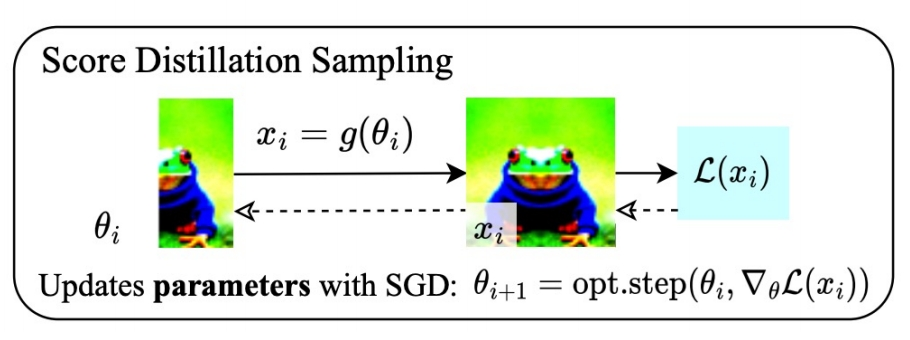</p>
<p>Poole et al., <u>&quot;DreamFusion: Text-to-3D using 2D Diffusion&quot;,</u> ICLR 2023</p>
<blockquote>
<p>✅ 参数不在 2D 空间而是在 Nerf 空间，构成优化问题，通过更新 Nerf 参数来满足 loss.<br />
</p>
</blockquote>
<p>P26</p>
<h2 id="dreamfusion-score-distillation-sampling"><a class="header" href="#dreamfusion-score-distillation-sampling">DreamFusion: Score Distillation Sampling</a></h2>
<p>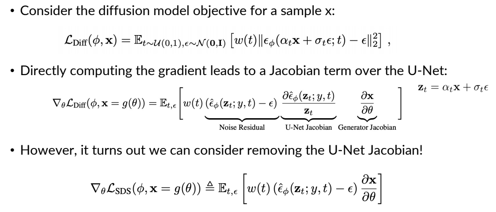</p>
<p>Poole et al., <u>&quot;DreamFusion: Text-to-3D using 2D Diffusion&quot;,</u> ICLR 2023</p>
<blockquote>
<p>✅ 第二项：\( \partial \) Output／ \( \partial \) Input．<br />
✅ 第三项：\( \partial \) Input Image／ \( \partial \)  Nerf Angle<br />
✅ 第二项要计算 diffusion model 的梯度，成本非常高。<br />
✅ 第二项要求反向传播 through the diffuson model，很慢，且费内存。<br />
✅ 这一页描述 Image → Loss 的过程。<br />
✅ 公式 1 为 diffusion model objective fanction.<br />
✅ 公式 2 为算法中使用的 loss，由于\(x =g(\theta )\)，\(\frac{\partial L}{\partial \theta } =\frac{\partial L}{\partial x } \cdot \frac{\partial x }{\partial \theta } \)，其中 \(\frac{\partial L}{\partial x }\) 又分为第一项和第二项。<br />
✅ 公式 2 中的常系数都省掉了。<br />
✅ 公式 3 把公式 2 中的第二项去掉了，为本文最终使用的 loss.</p>
</blockquote>
<p>P27</p>
<h2 id="dreamfusion-score-distillation-sampling-1"><a class="header" href="#dreamfusion-score-distillation-sampling-1">DreamFusion: Score Distillation Sampling</a></h2>
<p>Consider the KL term to minimize (given t):</p>
<p>$$
\mathbf{KL} (q(\mathbf{z} _ t|g(\theta );y,t)||p\phi (\mathbf{z} _ t;y,t))
$$</p>
<p>KL between noisy real image distribution and generated image 
distributions, conditioned on y!</p>
<p>KL and its gradient is defined as:</p>
<p>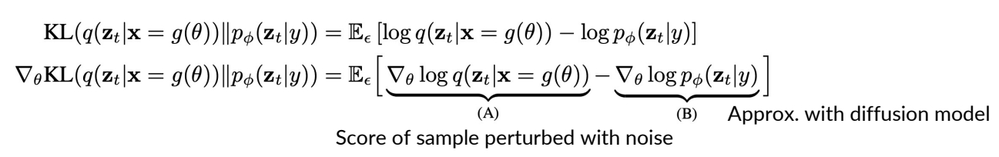</p>
<p>(B) can be derived from chain rule</p>
<p>$$
\nabla _ \theta \log p _ \phi (\mathbf{z} _ t|y)=s _ \phi (\mathbf{z} _ t|y)\frac{\partial \mathbf{z} _ t}{\partial \theta }=\alpha _ ts _ \phi (\mathbf{z} _ t|y)\frac{\partial \mathbf{x} }{\partial \theta } =-\frac{\alpha _ t}{\sigma _ t}\hat{\epsilon }_ \phi (\mathbf{z} _ t|y)\frac{\partial \mathbf{x} }{\partial \theta }<br />
$$</p>
<p>(A) is the gradient of the entropy of the forward process with fixed variance = 0.</p>
<p>Poole et al., <u>&quot;DreamFusion: Text-to-3D using 2D Diffusion&quot;,</u> ICLR 2023</p>
<blockquote>
<p>✅ A: the gradient of the entropy of the forward process。由于前向只是加噪，因此 A 是固定值，即 0.<br />
✅ P27 和 P28 证明 P26 中的第二项可以不需要。<br />
❓ KL 散度用来做什么？LOSS 里没有这一项。<br />
✅ KL 用于度量 \(P(\mathbf{Z}_t｜t)\) 和 \(q(\mathbf{Z}_t｜t)\)．<br />
✅ KL 第一项为 Nerf 的渲染结果加噪，KL 第二项为真实数据加噪。</p>
</blockquote>
<p>P28</p>
<h2 id="dreamfusion-score-distillation-sampling-2"><a class="header" href="#dreamfusion-score-distillation-sampling-2">DreamFusion: Score Distillation Sampling</a></h2>
<p>$$
(A)+(B)=\frac{\alpha _ t}{\sigma _ t}\hat{\epsilon } _ \phi (\mathbf{z} _ t|y)\frac{\partial \mathbf{x} }{\partial \theta }
$$</p>
<p>However, this objective can be quite noisy.<br />
Alternatively, we can consider a “baseline” approach in reinforcement learning: add a component that has zero mean but reduces variance. Writing out (A) again:</p>
<p></p>
<p>Thus, we have:</p>
<p></p>
<p>This has the same mean, but <strong>reduced variance</strong>, as we train \(\hat{\epsilon } _ \phi\) to predict \(\epsilon\)</p>
<p>Poole et al., <u>&quot;DreamFusion: Text-to-3D using 2D Diffusion&quot;,</u> ICLR 2023</p>
<p>P29</p>
<h2 id="dreamfusion-in-text-to-3d"><a class="header" href="#dreamfusion-in-text-to-3d">DreamFusion in Text-to-3D</a></h2>
<ul>
<li>SDS can be used to optimize a 3D representation, like NeRF.</li>
</ul>
<p>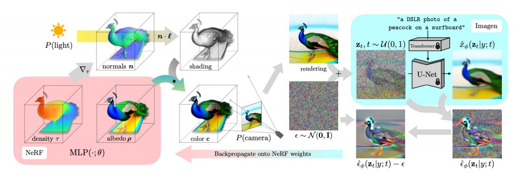</p>
<p>Poole et al., <u>&quot;DreamFusion: Text-to-3D using 2D Diffusion&quot;,</u> ICLR 2023</p>
<blockquote>
<p>✅ (1) 生成 Nerf (2) Nerf 投影 (3) 投影图加噪再去噪 (4) 对生成结果求 loss<br />
✅ entire pipeline.<br />
✅ 左上：从相机视角，生成 object 的投影。<br />
✅ 左下：以相机视角为参数，推断出每个点的 Nerf 参数。<br />
✅ 左中：左上和左下结合，得到渲染图像。<br />
✅ 生成随机噪声，对渲染图像加噪。<br />
✅ 右上：使用 diffusion model 从加噪图像中恢复出原始图像。（包含多个 step）<br />
✅ 右下：得到噪声，并与原始噪声求 loss.<br />
✅ 根据 loss 反传梯度优化左下的 MLP.</p>
</blockquote>
<p>P30</p>
<h2 id="extensions-to-sds-magic3d"><a class="header" href="#extensions-to-sds-magic3d">Extensions to SDS: Magic3D</a></h2>
<p>2x speed and higher resolution</p>
<ul>
<li>Accelerate NeRF with Instant-NGP, for coarse representations.</li>
<li>Optimize a fine mesh model with differentiable renderer.</li>
</ul>
<p></p>
<p>Lin et al., <u>&quot;Magic3D: High-Resolution Text-to-3D Content Creation&quot;,</u> CVPR 2023</p>
<blockquote>
<p>✅ Instant NGP 代替左下的 Nerf MLP．以 coarse representetion 作为 condition 来生成 fine mesh model.</p>
</blockquote>
<p>P31</p>
<h2 id="alternative-to-sds-score-jacobian-chaining"><a class="header" href="#alternative-to-sds-score-jacobian-chaining">Alternative to SDS: Score Jacobian Chaining</a></h2>
<p>A different formulation, motivated from approximating 3D score.</p>
<p></p>
<p>In principle, the diffusion model is the noisy 2D score (over clean images),<br />
but in practice, the diffusion model suffers from out-of-distribution (OOD) issues!</p>
<p>For diffusion model on noisy images, <strong>the non-noisy images are OOD</strong>!</p>
<p>Wang et al., <u>&quot;Score Jacobian Chaining: Lifting Pretrained 2D Diffusion Models for 3D Generation&quot;,</u> CVPR 2023.</p>
<blockquote>
<p>✅ 2D sample, 3D score</p>
</blockquote>
<p>P32</p>
<h2 id="score-jacobian-chaining"><a class="header" href="#score-jacobian-chaining">Score Jacobian Chaining</a></h2>
<p>SJC approximates noisy score with “Perturb-and-Average Scoring”, which is not present in SDS.</p>
<ul>
<li>Use score model on multiple noise-perturbed data, then average it.</li>
</ul>
<p></p>
<p>Wang et al., <u>&quot;Score Jacobian Chaining: Lifting Pretrained 2D Diffusion Models for 3D Generation&quot;,</u> CVPR 2023.</p>
<blockquote>
<p>✅ 通过这种方法来近似 clean image 的输出，解决 clean image 的 OOD 问题。</p>
</blockquote>
<p>P33</p>
<h2 id="sjc-and-sds"><a class="header" href="#sjc-and-sds">SJC and SDS</a></h2>
<p>SJC is a competitive alternative to SDS.</p>
<p> </p>
<p>Wang et al., <u>&quot;Score Jacobian Chaining: Lifting Pretrained 2D Diffusion Models for 3D Generation&quot;,</u> CVPR 2023.</p>
<p>P34</p>
<h2 id="alternative-to-sds-prolificdreamer"><a class="header" href="#alternative-to-sds-prolificdreamer">Alternative to SDS: ProlificDreamer</a></h2>
<ul>
<li>SDS-based method often set classifier-guidance weight to 100, which limits the “diversity” of the generated samples.</li>
<li>ProlificDreamer reduces this to 7.5, leading to diverse samples.</li>
</ul>
<p> </p>
<p>Wang et al., <u>&quot;ProlificDreamer: High-Fidelity and Diverse Text-to-3D Generation with Variational Score Distillation&quot;,</u> arXiv 2023</p>
<p>P35</p>
<h2 id="prolificdreamer-and-variational-score-distillation"><a class="header" href="#prolificdreamer-and-variational-score-distillation">ProlificDreamer and Variational Score Distillation</a></h2>
<p>Instead of maximizing the likelihood under diffusion model, VSD minimizes the KL divergence via variational inference.</p>
<p>$$
\begin{matrix}
\min_{\mu } D _ {\mathrm{KL} }(q^\mu _ 0(\mathbf{x} _ 0|y)||p _ 0(\mathbf{x} _ 0|y)). \\
\quad \mu \quad \text{is the distribution of NeRFs} .
\end{matrix}
$$</p>
<p>Suppose is a \(\theta _ \tau \sim \mu \) NeRF sample, then VSD simulates this ODE:</p>
<p> </p>
<ul>
<li>Diffusion model can be used to approximate score of noisy real images.</li>
<li>How about noisy rendered images?   sss</li>
</ul>
<blockquote>
<p>✅ 第一项由 diffusion model 得到，在此处当作 GT．</p>
</blockquote>
<p>P36</p>
<h2 id="prolificdreamer-and-variational-score-distillation-1"><a class="header" href="#prolificdreamer-and-variational-score-distillation-1">ProlificDreamer and Variational Score Distillation</a></h2>
<ul>
<li>Learn another diffusion model to approximate the score of noisy rendered images!</li>
</ul>
<p> </p>
<p>Wang et al., <u>&quot;ProlificDreamer: High-Fidelity and Diverse Text-to-3D Generation with Variational Score Distillation&quot;,</u> arXiv 2023</p>
<blockquote>
<p>✅ 使用 LoRA 近第二项。</p>
</blockquote>
<p>P37</p>
<h2 id="why-does-vsd-work-in-practice"><a class="header" href="#why-does-vsd-work-in-practice">Why does VSD work in practice?</a></h2>
<ul>
<li>
<p>The valid text-to-image NeRFs form a distribution with infinite possibilities!</p>
</li>
<li>
<p>In SDS, epsilon is the score of noisy “dirac distribution” over finite renders, which converges to the true score with infinite renders!</p>
</li>
<li>
<p>In VSD, the LoRA model aims to <strong>represent the (true) score of noisy distribution over infinite number of renders!</strong></p>
</li>
<li>
<p>If the generated NeRF distribution is only one point and LoRA overfits perfectly, then VSD = SDS!</p>
</li>
<li>
<p>But LoRA has good generalization (and learns from a trajectory of NeRFs), so closer to the true score!</p>
</li>
<li>
<p>This is analogous to</p>
<ul>
<li>Representing the dataset score via mixture of Gaussians on the dataset (SDS), versus</li>
<li>Representing the dataset score via the LoRA UNet (VSD)</li>
</ul>
</li>
</ul>
<p>Wang et al., <u>&quot;ProlificDreamer: High-Fidelity and Diverse Text-to-3D Generation with Variational Score Distillation&quot;,</u> arXiv 2023</p>
<hr />
<blockquote>
<p>本文出自CaterpillarStudyGroup，转载请注明出处。</p>
<p>https://caterpillarstudygroup.github.io/ImportantArticles/</p>
</blockquote>
<div style="break-before: page; page-break-before: always;"></div><p>P38</p>
<h2 id="outline-2"><a class="header" href="#outline-2">Outline</a></h2>
<ul>
<li>Diffusion models for view synthesis</li>
</ul>
<p>P39</p>
<h2 id="novel-view-synthesis-with-diffusion-models"><a class="header" href="#novel-view-synthesis-with-diffusion-models">Novel-view Synthesis with Diffusion Models</a></h2>
<ul>
<li>These do not produce 3D as output, but synthesis the view at different angles.</li>
</ul>
<p>Watson et al., <u>&quot;Novel View Synthesis with Diffusion Models&quot;,</u> ICLR 2023</p>
<p>P40</p>
<h2 id="3dim"><a class="header" href="#3dim">3DiM</a></h2>
<ul>
<li>Condition on a frame and two poses, predict another frame.</li>
</ul>
<p></p>
<p>UNet with frame cross-attention</p>
<p></p>
<p>Sample based on stochastic conditions,<br />
allowing the use of multiple conditional frames.</p>
<p>Watson et al., <u>&quot;Novel View Synthesis with Diffusion Models&quot;,</u> ICLR 2023</p>
<blockquote>
<p>✅ UNet，2 branch，分别用于原始角度和要生成的角度。<br />
✅ 引入 step 2 是为了内容一致性。<br />
✅ frame：坐标系。在不同的坐标系下看到的是不同的视角。<br />
❓ 为什么有两个pose？<br />
✅ 每个 frame 的内部由 cross-attention 连接。</p>
</blockquote>
<p>P41</p>
<h2 id="genvs"><a class="header" href="#genvs">GenVS</a></h2>
<ul>
<li>3D-aware architecture with latent feature field.</li>
<li>Use diffusion model to improve render quality based on structure.</li>
</ul>
<p></p>
<p>Chan et al., <u>&quot;Generative Novel View Synthesis with 3D-Aware Diffusion Models&quot;,</u> arXiv 2023</p>
<blockquote>
<p>✅ (1) 生成 feature field (2) render 其中一个视角 (3) 优化渲染效果<br />
✅ (2) 是 MLP (3) 是 diffusion．</p>
</blockquote>
<hr />
<blockquote>
<p>本文出自CaterpillarStudyGroup，转载请注明出处。</p>
<p>https://caterpillarstudygroup.github.io/ImportantArticles/</p>
</blockquote>
<div style="break-before: page; page-break-before: always;"></div><p>P42</p>
<h2 id="outline-3"><a class="header" href="#outline-3">Outline</a></h2>
<ul>
<li>3D reconstruction</li>
</ul>
<p>P43</p>
<h2 id="neurallift-360-for-3d-reconstruction"><a class="header" href="#neurallift-360-for-3d-reconstruction">NeuralLift-360 for 3D reconstruction</a></h2>
<ul>
<li>SDS + Fine-tuned CLIP text embedding + Depth supervision</li>
</ul>
<p></p>
<p>Xu et al., <u>&quot;NeuralLift-360: Lifting An In-the-wild 2D Photo to A 3D Object with 360° Views&quot;,</u> CVPR 2023</p>
<blockquote>
<p>✅ 整体上是类似 SDS 的优化方法，再结合其它的损失函数。<br />
✅ (1) 渲染不同视角，并对渲染结果用 clip score打分。<br />
✅ (2) 监督深度信息。</p>
</blockquote>
<p>P44</p>
<h2 id="zero-1-to-3"><a class="header" href="#zero-1-to-3">Zero 1-to-3</a></h2>
<ul>
<li>Generate novel view from 1 view and pose, with 2d model.</li>
<li>Then, run SJC / SDS-like optimizations with view-conditioned model.</li>
</ul>
<p></p>
<p>Liu et al., <u>&quot;Zero-1-to-3: Zero-shot One Image to 3D Object&quot;,</u> arXiv 2023</p>
<blockquote>
<p>✅ (1) 用 2D diffusion 生成多视角。用 SDS 对多视角图像生成3D．</p>
</blockquote>
<hr />
<blockquote>
<p>本文出自CaterpillarStudyGroup，转载请注明出处。</p>
<p>https://caterpillarstudygroup.github.io/ImportantArticles/</p>
</blockquote>
<div style="break-before: page; page-break-before: always;"></div><p>P45</p>
<h2 id="outline-4"><a class="header" href="#outline-4">Outline</a></h2>
<ul>
<li>
<p>Inverse problems</p>
</li>
<li>
<p><strong>3D</strong></p>
</li>
<li>
<p>Video</p>
</li>
<li>
<p>Miscellaneous</p>
</li>
<li>
<p>3D editing</p>
</li>
</ul>
<p>P46</p>
<h2 id="instruct-nerf2nerf"><a class="header" href="#instruct-nerf2nerf">Instruct NeRF2NeRF</a></h2>
<p>Edit a 3D scene with text instructions</p>
<p></p>
<p>Haque et al., <u>&quot;Instruct-NeRF2NeRF: Editing 3D Scenes with Instructions&quot;,</u> arXiv 2023</p>
<blockquote>
<p>✅ 用 Nerf 来描述 3D scene。通过文件条件把原 Nerf，变成另一个 Nerf，从而得到新的 3D scene.</p>
</blockquote>
<p>P47</p>
<h2 id="instruct-nerf2nerf-1"><a class="header" href="#instruct-nerf2nerf-1">Instruct NeRF2NeRF</a></h2>
<p><strong>Edit a 3D scene with text instructions</strong></p>
<ul>
<li>Given existing scene, use Instruct Pix2Pix to edit image at different viewpoints.</li>
<li>Continue to train the NeRF and repeat the above process</li>
</ul>
<p></p>
<p>Haque et al., <u>&quot;Instruct-NeRF2NeRF: Editing 3D Scenes with Instructions&quot;,</u> arXiv 2023</p>
<blockquote>
<p>✅ 首先有一个训好的 Nerf. 对一个特定的场景使用 Instruct Pix 2 pix 在 2D 上编辑训练新的 Werf.<br />
✅ 基于 score disllation sampling.</p>
</blockquote>
<p>P48</p>
<h2 id="instruct-nerf2nerf-2"><a class="header" href="#instruct-nerf2nerf-2">Instruct NeRF2NeRF</a></h2>
<p>With each iteration, the edits become more consistent.</p>
<p>Haque et al., <u>&quot;Instruct-NeRF2NeRF: Editing 3D Scenes with Instructions&quot;,</u> arXiv 2023</p>
<p>P49</p>
<h2 id="vox-e-text-guided-voxel-editing-of-3d-objects"><a class="header" href="#vox-e-text-guided-voxel-editing-of-3d-objects">Vox-E: Text-guided Voxel Editing of 3D Objects</a></h2>
<ul>
<li>Text-guided object editing with SDS</li>
<li>Regularize the structure of the new voxel grid.</li>
</ul>
<p></p>
<p>Sella et al., <u>&quot;Vox-E: Text-guided Voxel Editing of 3D Objects&quot;,</u> arXiv 2023</p>
<p>P50</p>
<h1 id="video"><a class="header" href="#video">Video</a></h1>
<ul>
<li>Video generative models</li>
</ul>
<p>P51</p>
<h2 id="video-diffusion-models"><a class="header" href="#video-diffusion-models">Video Diffusion Models</a></h2>
<p>3D UNet from a 2D UNet.</p>
<ul>
<li>3x3 2d conv to 1x3x3 3d conv.</li>
<li>Factorized spatial and temporal attentions.</li>
</ul>
<p><br />
</p>
<p>Ho et al., <u>&quot;Video Diffusion Models&quot;,</u> NeurIPS 2022</p>
<blockquote>
<p>✅ 利用 2D 做 3D，因为 3D 难训且数据少。<br />
✅ 通到添加时序信息，把图像变成视频。此处的 3D 是 2D＋时间，而不是立体。<br />
✅ 对向量增加一个维度，并在新的维度上做 attention.</p>
</blockquote>
<p>P52</p>
<h2 id="imagen-video-large-scale-text-to-video"><a class="header" href="#imagen-video-large-scale-text-to-video">Imagen Video: Large Scale Text-to-Video</a></h2>
<ul>
<li>7 cascade models in total.</li>
<li>1 Base model (16x40x24)</li>
<li>3 Temporal super-resolution models.</li>
<li>3 Spatial super-resolution models.</li>
</ul>
<p></p>
<p>Ho et al., <u>&quot;Imagen Video: High Definition Video Generation with Diffusion Models&quot;,</u> 2022</p>
<blockquote>
<p>✅ 通过 7 次 cascade，逐步提升顺率和像素的分辨率，每一步的训练对上一步是依赖的。</p>
</blockquote>
<p>P53</p>
<h2 id="make-a-video"><a class="header" href="#make-a-video">Make-a-Video</a></h2>
<ul>
<li>Start with an unCLIP (DALL-E 2) base network.</li>
</ul>
<p></p>
<p>Singer et al., <u>&quot;Make-A-Video: Text-to-Video Generation without Text-Video Data&quot;,</u> ICLR 2023</p>
<blockquote>
<p>✅ 把 text 2 image model 变成 text to video model，但不需要 text-video 的 pair data.</p>
</blockquote>
<p>P54</p>
<h2 id="make-a-video-1"><a class="header" href="#make-a-video-1">Make-a-Video</a></h2>
<p><br />
3D Conv from Spatial Conv + Temporal Conv</p>
<p><br />
3D Attn from Spatial Attn + Temporal Attn</p>
<p>Different from Imagen Video, only the image prior takes text as input!</p>
<p>Singer et al., <u>&quot;Make-A-Video: Text-to-Video Generation without Text-Video Data&quot;,</u> ICLR 2023</p>
<blockquote>
<p>✅ 与 Imagin 的相同点：(1) 使用 cascade 提升分辨率， (2) 分为时间 attention 和空间 attention.<br />
✅ 不同点：(1) 时间 conv＋空间 conv.</p>
</blockquote>
<p>P55</p>
<h2 id="video-ldm"><a class="header" href="#video-ldm">Video LDM</a></h2>
<ul>
<li>Similarly, fine-tune a text-to-video model from text-to-image model.</li>
</ul>
<p></p>
<p>Blattmann et al., <u>&quot;Align your Latents: High-Resolution Video Synthesis with Latent Diffusion Models&quot;,</u> CVPR 2023</p>
<blockquote>
<p>✅ 特点：(1) 使用 latent space． (2) Encoder fix．用 video 数据 fineture Decoder.</p>
</blockquote>
<p>P56</p>
<h2 id="video-ldm-decoder-fine-tuning"><a class="header" href="#video-ldm-decoder-fine-tuning">Video LDM: Decoder Fine-tuning</a></h2>
<ul>
<li>Fine-tune the decoder to be video-aware, keeping encoder frozen.</li>
</ul>
<p></p>
<p>Blattmann et al., <u>&quot;Align your Latents: High-Resolution Video Synthesis with Latent Diffusion Models&quot;,</u> CVPR 2023</p>
<p>P57</p>
<h2 id="video-ldm-ldm-fine-tuning"><a class="header" href="#video-ldm-ldm-fine-tuning">Video LDM: LDM Fine-tuning</a></h2>
<ul>
<li>Interleave spatial layers and temporal layers.</li>
<li>The spatial layers are frozen, whereas temporal layers are trained.</li>
<li>Temporal layers can be Conv3D or Temporal attentions.</li>
<li>Context can be added for autoregressive generation.</li>
</ul>
<p></p>
<p>Optional context via learned down-sampling operation.</p>
<p><strong>For Conv3D,</strong><br />
shape is [batch, time, channel, height, width]</p>
<p><strong>For Temporal attention,</strong><br />
shape is [batch \(^\ast \)height\(^\ast \) width, time, channel]</p>
<p>Blattmann et al., <u>&quot;Align your Latents: High-Resolution Video Synthesis with Latent Diffusion Models&quot;,</u> CVPR 2023</p>
<blockquote>
<p>✅ 时序层除了时序 attention，还有 3D conv，是真正的 3D，但是更复杂，且计算、内存等消耗更大。</p>
</blockquote>
<p>P58</p>
<h2 id="video-ldm-upsampling"><a class="header" href="#video-ldm-upsampling">Video LDM: Upsampling</a></h2>
<ul>
<li>After key latent frames are generated, the latent frames go through temporal interpolation.</li>
<li>Then, they are decoded to pixel space and optionally upsampled.</li>
</ul>
<p></p>
<p>Blattmann et al., <u>&quot;Align your Latents: High-Resolution Video Synthesis with Latent Diffusion Models&quot;,</u> CVPR 2023</p>
<hr />
<blockquote>
<p>本文出自CaterpillarStudyGroup，转载请注明出处。</p>
<p>https://caterpillarstudygroup.github.io/ImportantArticles/</p>
</blockquote>
<div style="break-before: page; page-break-before: always;"></div><p>P59</p>
<h2 id="outline-5"><a class="header" href="#outline-5">Outline</a></h2>
<ul>
<li>Video style transfer / editing methods</li>
</ul>
<p>P60</p>
<h2 id="gen-1"><a class="header" href="#gen-1">Gen-1</a></h2>
<ul>
<li>Transfer the style of a video using text prompts given a “driving video”</li>
</ul>
<p></p>
<p>Esser et al., <u>&quot;Structure and Content-Guided Video Synthesis with Diffusion Models&quot;,</u> arXiv 2023</p>
<p>P61</p>
<h2 id="gen-1-1"><a class="header" href="#gen-1-1">Gen-1</a></h2>
<ul>
<li>Condition on structure (depth) and content (CLIP) information.</li>
<li>Depth maps are passed with latents as input conditions.</li>
<li>CLIP image embeddings are provided via cross-attention blocks.</li>
<li>During inference, CLIP text embeddings are converted to CLIP image embeddings.</li>
</ul>
<p>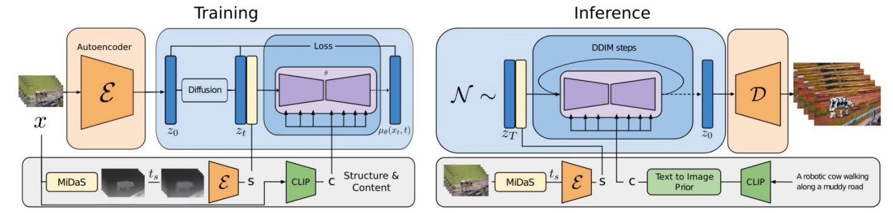</p>
<p>Esser et al., <u>&quot;Structure and Content-Guided Video Synthesis with Diffusion Models&quot;,</u> arXiv 2023</p>
<blockquote>
<p>✅ 用 depth estimator 从源视频提取 struct 信息，用 CLIP 从文本中提取 content 信息。<br />
✅ depth 和 content 分别用两种形式注入。depth 作为条件，与 lantent concat 到一起。content 以 cross attention 的形式注入。</p>
</blockquote>
<p>P62</p>
<h2 id="pix2video-video-editing-using-image-diffusion"><a class="header" href="#pix2video-video-editing-using-image-diffusion">Pix2Video: Video Editing Using Image Diffusion</a></h2>
<ul>
<li>Given a sequence of frames, generate a new set of images that reflects an edit.</li>
<li>Editing methods on individual images fail to preserve temporal information.</li>
</ul>
<p>Ceylan et al., <u>&quot;Pix2Video: Video Editing using Image Diffusion&quot;,</u> arXiv 2023</p>
<blockquote>
<p>✅ 没有 3D diffusion model，只是用 2D diffusion model 生成多张图像并拼成序列。关键在于保持时序的连续性。</p>
</blockquote>
<p>P63</p>
<h2 id="pix2video-video-editing-using-image-diffusion-1"><a class="header" href="#pix2video-video-editing-using-image-diffusion-1">Pix2Video: Video Editing Using Image Diffusion</a></h2>
<p>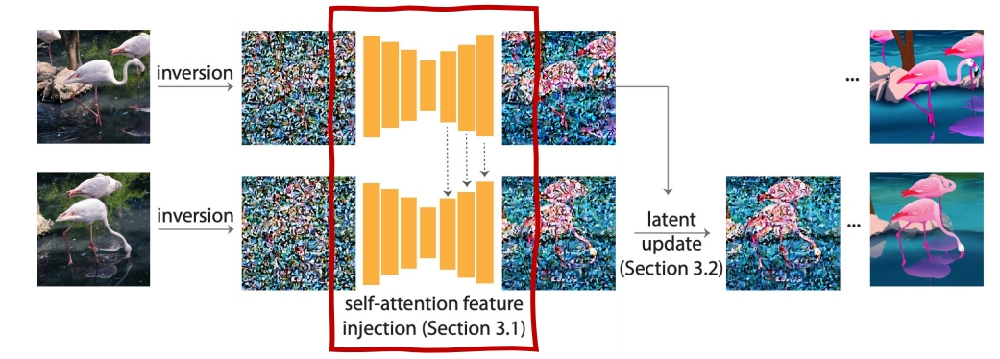</p>
<ul>
<li><strong>Self-Attention injection:</strong> use the features of previous frame for Key and Values.</li>
</ul>
<p>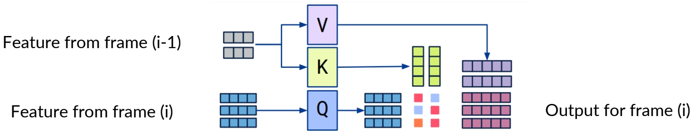</p>
<p>Ceylan et al., <u>&quot;Pix2Video: Video Editing using Image Diffusion&quot;,</u> arXiv 2023</p>
<blockquote>
<p>✅ (1) 使用 DDIM inversion 把图像转为 noise．<br />
✅ (2) 相邻的 fram 应 inversion 出相似的 noise．<br />
✅ 使用 self-attention injection 得到相似的 noise.</p>
</blockquote>
<p>P64</p>
<h2 id="pix2video-video-editing-using-image-diffusion-2"><a class="header" href="#pix2video-video-editing-using-image-diffusion-2">Pix2Video: Video Editing Using Image Diffusion</a></h2>
<p>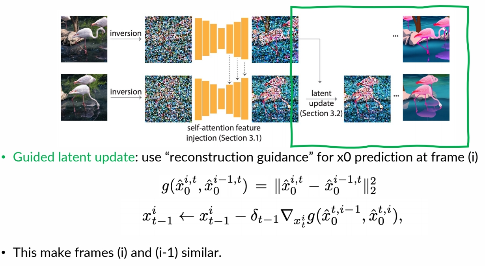</p>
<p>Ceylan et al., <u>&quot;Pix2Video: Video Editing using Image Diffusion&quot;,</u> arXiv 2023</p>
<blockquote>
<p>✅ reconstruction guidance，使生成的 latent code 与上一帧接近。</p>
</blockquote>
<p>P65</p>
<h2 id="pix2video-video-editing-using-image-diffusion-3"><a class="header" href="#pix2video-video-editing-using-image-diffusion-3">Pix2Video: Video Editing Using Image Diffusion</a></h2>
<ul>
<li>The two methods improve the temporal consistency of the final video!</li>
</ul>
<p>Ceylan et al., <u>&quot;Pix2Video: Video Editing using Image Diffusion&quot;,</u> arXiv 2023</p>
<p>P66</p>
<h2 id="concurrent--related-works"><a class="header" href="#concurrent--related-works">Concurrent / Related Works</a></h2>
<p><br />
FateZero: Store attention maps from DDIM inversion for later use</p>
<p><br />
Tune-A-Video: Fine-tune projection matrices of the attention layers, from text2image model to text2video model.</p>
<p><br />
Vid2vid-zero: Learn a null-text embedding for inversion, then use cross-frame attention with original weights.</p>
<p>P67</p>
<h1 id="miscellaneous"><a class="header" href="#miscellaneous">Miscellaneous</a></h1>
<ul>
<li>Diffusion models for large contents</li>
</ul>
<p>P68</p>
<h2 id="diffusion-models-for-large-contents"><a class="header" href="#diffusion-models-for-large-contents">Diffusion Models for Large Contents</a></h2>
<ul>
<li>Suppose model is trained on small, squared images, how to extend it to larger images?</li>
<li>Outpainting is always a solution, but not a very efficient one!</li>
</ul>
<p>Let us generate this image with a diffusion model only trained on squared regions:</p>
<p></p>
<ol>
<li>Generate the center region \(q(\mathbf{x} _ 1,\mathbf{x} _ 2)\)</li>
<li>Generate the <strong>surrounding region conditioned on parts of the center image</strong> \(q(\mathbf{x} _ 3|\mathbf{x} _ 2)\)</li>
</ol>
<p></p>
<p>Latency scales linearly with the content size!</p>
<blockquote>
<p>✅ 根据左边的图生成右边的图，存在的问题：慢<br />
✅ 直接生成大图没有这样的数据。<br />
✅ 并行化的生成。</p>
</blockquote>
<p>P69</p>
<h2 id="diffusion-models-for-large-contents-1"><a class="header" href="#diffusion-models-for-large-contents-1">Diffusion Models for Large Contents</a></h2>
<ul>
<li>Unlike autoregressive models, diffusion models can generate large contents <strong>in parallel</strong>!</li>
</ul>
<p></p>
<p>Zhang et al., <u>&quot;DiffCollage: Parallel Generation of Large Content with Diffusion Models&quot;,</u> CVPR 2023</p>
<p>P70</p>
<h2 id="diffusion-models-for-large-contents-2"><a class="header" href="#diffusion-models-for-large-contents-2">Diffusion Models for Large Contents</a></h2>
<ul>
<li>A “large” diffusion model from “small” diffusion models!</li>
</ul>
<p></p>
<p></p>
<p>Zhang et al., <u>&quot;DiffCollage: Parallel Generation of Large Content with Diffusion Models&quot;,</u> CVPR 2023</p>
<p>P71</p>
<h2 id="diffusion-models-for-large-contents-3"><a class="header" href="#diffusion-models-for-large-contents-3">Diffusion Models for Large Contents</a></h2>
<ul>
<li>Applications such as long images, looped motion, 360 images…</li>
</ul>
<p>Zhang et al., <u>&quot;DiffCollage: Parallel Generation of Large Content with Diffusion Models&quot;,</u> CVPR 2023</p>
<p>P72</p>
<h2 id="related-works"><a class="header" href="#related-works">Related Works</a></h2>
<ul>
<li>Based on similar ideas but differ in how overlapping regions are mixed.</li>
</ul>
<p></p>
<p></p>
<p>Jiménez, <u>&quot;Mixture of Diffusers for scene composition and high resolution image generation&quot;,</u> arXiv 2023<br />
Bar-Tal et al., <u>&quot;MultiDiffusion: Fusing Diffusion Paths for Controlled Image Generation&quot;,</u> ICML 2023</p>
<blockquote>
<p>✅ 这种并行化方法可以用于各种 overlapping 的场景。</p>
</blockquote>
<hr />
<blockquote>
<p>本文出自CaterpillarStudyGroup，转载请注明出处。</p>
<p>https://caterpillarstudygroup.github.io/ImportantArticles/</p>
</blockquote>
<div style="break-before: page; page-break-before: always;"></div><p>P73</p>
<h2 id="outline-6"><a class="header" href="#outline-6">Outline</a></h2>
<ul>
<li>Safety and limitations of diffusion models</li>
</ul>
<p>P74</p>
<h2 id="data-memorization-in-diffusion-models"><a class="header" href="#data-memorization-in-diffusion-models">Data Memorization in Diffusion Models</a></h2>
<ul>
<li>Due to the likelihood-base objective function, <strong>diffusion models can ”memorize” data</strong>.</li>
<li>And with a higher chance than GANs!</li>
<li>Nevertheless, a lot of “memorized images” are highly-duplicated in the dataset.</li>
</ul>
<p></p>
<p>Carlini et al., <u>&quot;Extracting Training Data from Diffusion Models&quot;,</u> arXiv 2023</p>
<p>P75</p>
<h2 id="erasing-concepts-in-diffusion-models"><a class="header" href="#erasing-concepts-in-diffusion-models">Erasing Concepts in Diffusion Models</a></h2>
<ul>
<li>Fine-tune a model to remove unwanted concepts.</li>
<li>From original model, <strong>obtain score via negative CFG</strong>.</li>
<li><strong>A new model is fine-tuned</strong> from the new score function.</li>
</ul>
<p></p>
<p></p>
<p>Gandikota et al., <u>&quot;Erasing Concepts from Diffusion Models&quot;,</u> arXiv 2023</p>
<blockquote>
<p>✅ 考虑到版权等问题。<br />
✅ finetune 已有的 text-2-image model．<br />
✅ 使用 negative CFG 原有信息不会受到影响。</p>
</blockquote>
<h1 id="reference-1"><a class="header" href="#reference-1">Reference</a></h1>
<p>P77</p>
<h2 id="part-i"><a class="header" href="#part-i">Part I</a></h2>
<p>Ho et al., <u>&quot;Denoising Diffusion Probabilistic Models&quot;,</u> NeurIPS 2020<br />
Song et al., <u>&quot;Score-Based Generative Modeling through Stochastic Differential Equations&quot;,</u> ICLR 2021<br />
Kingma et al., <u>&quot;Variational Diffusion Models&quot;,</u> arXiv 2021<br />
Karras et al., <u>&quot;Elucidating the Design Space of Diffusion-Based Generative Models&quot;,</u> NeurIPS 2022<br />
Song et al., <u>&quot;Denoising Diffusion Implicit Models&quot;,</u> ICLR 2021<br />
Jolicoeur-Martineau et al., &quot;Gotta Go Fast When Generating Data with Score-Based Models&quot;,</u> arXiv 2021<br />
Liu et al., <u>&quot;Pseudo Numerical Methods for Diffusion Models on Manifolds&quot;,</u> ICLR 2022<br />
Lu et al., <u>&quot;DPM-Solver: A Fast ODE Solver for Diffusion Probabilistic Model Sampling in Around 10 Steps&quot;,</u> NeurIPS 2022<br />
Lu et al., <u>&quot;DPM-Solver++: Fast Solver for Guided Sampling of Diffusion Probabilistic Models&quot;,</u> NeurIPS 2022<br />
Zhang and Chen, <u>&quot;Fast Sampling of Diffusion Models with Exponential Integrator&quot;,</u> arXiv 2022<br />
Zhang et al., <u>&quot;gDDIM: Generalized denoising diffusion implicit models&quot;,</u> arXiv 2022<br />
Zhao et al., <u>&quot;UniPC: A Unified Predictor-Corrector Framework for Fast Sampling of Diffusion Models&quot;,</u> arXiv 2023<br />
Shih et al., <u>&quot;Parallel Sampling of Diffusion Models&quot;,</u> arxiv 2023<br />
Chen et al., <u>&quot;A Geometric Perspective on Diffusion Models&quot;,</u> arXiv 2023<br />
Xiao et al., <u>&quot;Tackling the Generative Learning Trilemma with Denoising Diffusion GANs&quot;,</u> arXiv 2021<br />
Salimans and Ho, <u>&quot;Progressive Distillation for Fast Sampling of Diffusion Models&quot;,</u> ICLR 2022<br />
Meng et al., <u>&quot;On Distillation of Guided Diffusion Models&quot;,</u> arXiv 2022<br />
Dockhorn et al., <u>&quot;GENIE: Higher-Order Denoising Diffusion Solvers&quot;,</u> NeurIPS 2022<br />
Watson et al., <u>&quot;Learning Fast Samplers for Diffusion Models by Differentiating Through Sample Quality&quot;,</u> ICLR 2022<br />
Phung et al., <u>&quot;Wavelet Diffusion Models Are Fast and Scalable Image Generators&quot;,</u> CVPR 2023<br />
Dhariwal and Nichol, <u>&quot;Diffusion Models Beat GANs on Image Synthesis&quot;,</u> arXiv 2021<br />
Ho and Salimans, <u>&quot;Classifier-Free Diffusion Guidance&quot;,</u> NeurIPS Workshop 2021<br />
Automatic1111, <u>&quot;Negative Prompt&quot;,</u> GitHub<br />
Hong et al., <u>&quot;Improving Sample Quality of Diffusion Models Using Self-Attention Guidance&quot;,</u> arXiv 2022<br />
Saharia et al., <u>&quot;Image Super-Resolution via Iterative Refinement&quot;,</u> arXiv 2021<br />
Ho et al., <u>&quot;Cascaded Diffusion Models for High Fidelity Image Generation&quot;,</u> JMLR 2021<br />
Sinha et al., <u>&quot;D2C: Diffusion-Denoising Models for Few-shot Conditional Generation&quot;,</u> NeurIPS 2021<br />
Vahdat et al., <u>&quot;Score-based Generative Modeling in Latent Space&quot;,</u> arXiv 2021<br />
Daras et al., <u>&quot;Score-Guided Intermediate Layer Optimization: Fast Langevin Mixing for Inverse Problems&quot;,</u> ICML 2022</p>
<p>P78</p>
<h2 id="part-i-contd"><a class="header" href="#part-i-contd">Part I (cont’d)</a></h2>
<p>Bortoli et al.,<u> &quot;Diffusion Schrödinger Bridge&quot;,</u> NeurIPS 2021<br />
Bortoli et al.,<u> &quot;Riemannian Score-Based Generative Modelling&quot;,</u> NeurIPS 2022<br />
Neklyudov et al., <u>&quot;Action Matching: Learning Stochastic Dynamics from Samples&quot;,</u> ICML 2023<br />
Bansal et al., <u>&quot;Cold Diffusion: Inverting Arbitrary Image Transforms Without Noise&quot;,</u> arXiv 2022<br />
Daras et al., <u>&quot;Soft Diffusion: Score Matching for General Corruptions&quot;,</u> TMLR 2023<br />
Delbracio and Milanfar, <u>&quot;Inversion by Direct Iteration: An Alternative to Denoising Diffusion for Image Restoration&quot;,</u> arXiv 2023<br />
Luo et al., <u>&quot;Image Restoration with Mean-Reverting Stochastic Differential Equations&quot;,</u> ICML 2023</p>
<p>P79</p>
<h2 id="part-ii"><a class="header" href="#part-ii">Part II</a></h2>
<p>Bao et al., <u>&quot;All are Worth Words: a ViT Backbone for Score-based Diffusion Models&quot;,</u> arXiv 2022<br />
Peebles and Xie, <u>&quot;Scalable Diffusion Models with Transformers&quot;,</u> arXiv 2022<br />
Bao et al., <u>&quot;One Transformer Fits All Distributions in Multi-Modal Diffusion at Scale&quot;,</u> arXiv 2023<br />
Jabri et al., <u>&quot;Scalable Adaptive Computation for Iterative Generation&quot;,</u> arXiv 2022<br />
Hoogeboom et al., <u>&quot;simple diffusion: End-to-end diffusion for high resolution images&quot;,</u> arXiv 2023<br />
Meng et al., <u>&quot;SDEdit: Guided Image Synthesis and Editing with Stochastic Differential Equations&quot;,</u> ICLR 2022<br />
Li et al., <u>&quot;Efficient Spatially Sparse Inference for Conditional GANs and Diffusion Models&quot;,</u> NeurIPS 2022<br />
Avrahami et al., <u>&quot;Blended Diffusion for Text-driven Editing of Natural Images&quot;,</u> CVPR 2022<br />
Hertz et al., <u>&quot;Prompt-to-Prompt Image Editing with Cross-Attention Control&quot;,</u> ICLR 2023<br />
Kawar et al., <u>&quot;Imagic: Text-Based Real Image Editing with Diffusion Models&quot;,</u> CVPR 2023<br />
Couairon et al., <u>&quot;DiffEdit: Diffusion-based semantic image editing with mask guidance&quot;,</u> ICLR 2023<br />
Sarukkai et al., <u>&quot;Collage Diffusion&quot;,</u> arXiv 2023<br />
Bar-Tal et al., <u>&quot;MultiDiffusion: Fusing Diffusion Paths for Controlled Image Generation&quot;,</u> ICML 2023<br />
Gal et al., <u>&quot;An Image is Worth One Word: Personalizing Text-to-Image Generation using Textual Inversion&quot;,</u> ICLR 2023<br />
Ruiz et al., <u>&quot;DreamBooth: Fine Tuning Text-to-Image Diffusion Models for Subject-Driven Generation&quot;,</u> CVPR 2023<br />
Kumari et al., <u>&quot;Multi-Concept Customization of Text-to-Image Diffusion&quot;,</u> CVPR 2023<br />
Tewel et al., <u>&quot;Key-Locked Rank One Editing for Text-to-Image Personalization&quot;,</u> SIGGRAPH 2023<br />
Zhao et al., <u>&quot;A Recipe for Watermarking Diffusion Models&quot;,</u> arXiv 2023<br />
Hu et al., <u>&quot;LoRA: Low-Rank Adaptation of Large Language Models&quot;,</u> ICLR 2022<br />
Li et al., <u>&quot;GLIGEN: Open-Set Grounded Text-to-Image Generation&quot;,</u> CVPR 2023<br />
Avrahami et al., <u>&quot;SpaText: Spatio-Textual Representation for Controllable Image Generation&quot;,</u> CVPR 2023<br />
Zhang and Agrawala, <u>&quot;Adding Conditional Control to Text-to-Image Diffusion Models&quot;,</u> arXiv 2023<br />
Mou et al., <u>&quot;T2I-Adapter: Learning Adapters to Dig out More Controllable Ability for Text-to-Image Diffusion Models&quot;,</u> arXiv 2023<br />
Orgad et al., <u>&quot;Editing Implicit Assumptions in Text-to-Image Diffusion Models&quot;,</u> arXiv 2023<br />
Han et al., <u>&quot;SVDiff: Compact Parameter Space for Diffusion Fine-Tuning&quot;,</u> arXiv 2023<br />
Xie et al., <u>&quot;DiffFit: Unlocking Transferability of Large Diffusion Models via Simple Parameter-Efficient Fine-Tuning&quot;,</u> arXiv 2023<br />
Saharia et al., <u>&quot;Palette: Image-to-Image Diffusion Models&quot;,</u> SIGGRAPH 2022<br />
Whang et al., <u>&quot;Deblurring via Stochastic Refinement&quot;,</u> CVPR 2022<br />
Xu et al., <u>&quot;Open-Vocabulary Panoptic Segmentation with Text-to-Image Diffusion Models&quot;,</u> arXiv 2023<br />
Saxena et al., <u>&quot;Monocular Depth Estimation using Diffusion Models&quot;,</u> arXiv 2023<br />
Li et al., <u>&quot;Your Diffusion Model is Secretly a Zero-Shot Classifier&quot;,</u> arXiv 2023<br />
Gowal et al., <u>&quot;Improving Robustness using Generated Data&quot;,</u> NeurIPS 2021<br />
Wang et al., <u>&quot;Better Diffusion Models Further Improve Adversarial Training&quot;,</u> ICML 2023</p>
<p>P81</p>
<h2 id="part-iii"><a class="header" href="#part-iii">Part III</a></h2>
<p>Jalal et al., <u>&quot;Robust Compressed Sensing MRI with Deep Generative Priors&quot;,</u> NeurIPS 2021<br />
Song et al., <u>&quot;Solving Inverse Problems in Medical Imaging with Score-Based Generative Models&quot;,</u> ICLR 2022<br />
Kawar et al., <u>&quot;Denoising Diffusion Restoration Models&quot;,</u> NeurIPS 2022<br />
Chung et al., <u>&quot;Improving Diffusion Models for Inverse Problems using Manifold Constraints&quot;,</u> NeurIPS 2022<br />
Ryu and Ye, <u>&quot;Pyramidal Denoising Diffusion Probabilistic Models&quot;,</u> arXiv 2022<br />
Chung et al., <u>&quot;Diffusion Posterior Sampling for General Noisy Inverse Problems&quot;,</u> arXiv 2022<br />
Feng et al., <u>&quot;Score-Based Diffusion Models as Principled Priors for Inverse Imaging&quot;,</u> arXiv 2023<br />
Song et al., <u>&quot;Pseudoinverse-Guided Diffusion Models for Inverse Problems&quot;,</u> ICLR 2023<br />
Mardani et al., <u>&quot;A Variational Perspective on Solving Inverse Problems with Diffusion Models&quot;,</u> arXiv 2023<br />
Delbracio and Milanfar, <u>&quot;Inversion by Direct Iteration: An Alternative to Denoising Diffusion for Image Restoration&quot;,</u> arxiv 2023<br />
Stevens et al., <u>&quot;Removing Structured Noise with Diffusion Models&quot;,</u> arxiv 2023<br />
Wang et al., <u>&quot;Zero-Shot Image Restoration Using Denoising Diffusion Null-Space Model&quot;,</u> ICLR 2023<br />
Zhou et al., <u>&quot;3D Shape Generation and Completion through Point-Voxel Diffusion&quot;,</u> ICCV 2021<br />
Zeng et al., <u>&quot;LION: Latent Point Diffusion Models for 3D Shape Generation&quot;,</u> NeurIPS 2022<br />
Nichol et al., <u>&quot;Point-E: A System for Generating 3D Point Clouds from Complex Prompts&quot;,</u> arXiv 2022<br />
Chou et al., <u>&quot;DiffusionSDF: Conditional Generative Modeling of Signed Distance Functions&quot;,</u> arXiv 2022<br />
Cheng et al., <u>&quot;SDFusion: Multimodal 3D Shape Completion, Reconstruction, and Generation&quot;,</u> arXiv 2022<br />
Hui et al., <u>&quot;Neural Wavelet-domain Diffusion for 3D Shape Generation&quot;,</u> arXiv 2022<br />
Shue et al., <u>&quot;3D Neural Field Generation using Triplane Diffusion&quot;,</u> arXiv 2022<br />
Yang et al., <u>&quot;Learning a Diffusion Prior for NeRFs&quot;,</u> ICLR Workshop 2023<br />
Jun and Nichol, <u>&quot;Shap-E: Generating Conditional 3D Implicit Functions&quot;,</u> arXiv 2023<br />
Poole et al., <u>&quot;DreamFusion: Text-to-3D using 2D Diffusion&quot;,</u> arXiv 2022<br />
Lin et al., <u>&quot;Magic3D: High-Resolution Text-to-3D Content Creation&quot;,</u> arXiv 2022<br />
Wang et al., <u>&quot;Score Jacobian Chaining: Lifting Pretrained 2D Diffusion Models for 3D Generation&quot;,</u> arXiv 2022<br />
Metzer et al., <u>&quot;Latent-NeRF for Shape-Guided Generation of 3D Shapes and Textures&quot;,</u> arXiv 2022<br />
Hong et al., <u>&quot;Debiasing Scores and Prompts of 2D Diffusion for Robust Text-to-3D Generation&quot;,</u> CVPR Workshop 2023<br />
Watson et al., <u>&quot;Novel View Synthesis with Diffusion Models&quot;,</u> arXiv 2022<br />
Chan et al., <u>&quot;Generative Novel View Synthesis with 3D-Aware Diffusion Models&quot;,</u> arXiv 2023<br />
Xu et al., <u>&quot;NeuralLift-360: Lifting An In-the-wild 2D Photo to A 3D Object with 360° Views&quot;,</u> arXiv 2022<br />
Zhou and Tulsiani, <u>&quot;SparseFusion: Distilling View-conditioned Diffusion for 3D Reconstruction&quot;,</u> arXiv 2022</p>
<p>P82</p>
<h2 id="part-iii-contd"><a class="header" href="#part-iii-contd">Part III (cont’d)</a></h2>
<p>Seo et al., <u>&quot;DITTO-NeRF: Diffusion-based Iterative Text To Omni-directional 3D Model&quot;,</u> arXiv 2023<br />
Haque et al., <u>&quot;Instruct-NeRF2NeRF: Editing 3D Scenes with Instructions&quot;,</u> arXiv 2023<br />
Sella et al., <u>&quot;Vox-E: Text-guided Voxel Editing of 3D Objects&quot;,</u> arXiv 2023<br />
Ho et al., <u>&quot;Video Diffusion Models&quot;,</u> NeurIPS 2022<br />
Harvey et al., <u>&quot;Flexible Diffusion Modeling of Long Videos&quot;,</u> arXiv 2022<br />
Voleti et al., <u>&quot;MCVD: Masked Conditional Video Diffusion for Prediction, Generation, and Interpolation&quot;,</u> NeurIPS 2022<br />
Ho et al., <u>&quot;Imagen Video: High Definition Video Generation with Diffusion Models&quot;,</u> Oct 2022<br />
Singer et al., <u>&quot;Make-A-Video: Text-to-Video Generation without Text-Video Data&quot;,</u> arXiv 2022<br />
Mei and Patel, <u>&quot;VIDM: Video Implicit Diffusion Models&quot;,</u> arXiv 2022<br />
Blattmann et al., <u>&quot;Align your Latents: High-Resolution Video Synthesis with Latent Diffusion Models&quot;,</u> CVPR 2023<br />
Wang et al., <u>&quot;Zero-Shot Video Editing Using Off-The-Shelf Image Diffusion Models&quot;,</u> arXiv 2023<br />
Ceylan et al., <u>&quot;Pix2Video: Video Editing using Image Diffusion&quot;,</u> arXiv 2023<br />
Esser et al., <u>&quot;Structure and Content-Guided Video Synthesis with Diffusion Models&quot;,</u> arXiv 2023<br />
Jiménez, <u>&quot;Mixture of Diffusers for scene composition and high resolution image generation&quot;,</u> arXiv 2023<br />
Bar-Tal et al., <u>&quot;MultiDiffusion: Fusing Diffusion Paths for Controlled Image Generation&quot;,</u> arXiv 2023<br />
Zhang et al., <u>&quot;DiffCollage: Parallel Generation of Large Content with Diffusion Models&quot;,</u> CVPR 2023<br />
Zhang et al., <u>&quot;MotionDiffuse: Text-Driven Human Motion Generation with Diffusion Model&quot;,</u> arXiv 2022<br />
Tevet et al., <u>&quot;Human Motion Diffusion Model&quot;,</u> arXiv 2022<br />
Chen et al., <u>&quot;Executing your Commands via Motion Diffusion in Latent Space&quot;,</u> CVPR 2023<br />
Du et al., <u>&quot;Avatars Grow Legs: Generating Smooth Human Motion from Sparse Tracking Inputs with Diffusion Model&quot;,</u> CVPR 2023<br />
Shafir et al., <u>&quot;Human Motion Diffusion as a Generative Prior&quot;,</u> arXiv 2023<br />
Somepalli et al., <u>&quot;Diffusion Art or Digital Forgery? Investigating Data Replication in Diffusion Models&quot;,</u> CVPR 2023<br />
Carlini et al., <u>&quot;Extracting Training Data from Diffusion Models&quot;,</u> arXiv 2023<br />
Gandikota et al., <u>&quot;Erasing Concepts from Diffusion Models&quot;,</u> arXiv 2023<br />
Kumari et al., <u>&quot;Ablating Concepts in Text-to-Image Diffusion Models&quot;,</u> arXiv 2023<br />
Somepalli et al., <u>&quot;Understanding and Mitigating Copying in Diffusion Models&quot;,</u> arXiv 2023</p>
<hr />
<blockquote>
<p>本文出自CaterpillarStudyGroup，转载请注明出处。</p>
<p>https://caterpillarstudygroup.github.io/ImportantArticles/</p>
</blockquote>
<div style="break-before: page; page-break-before: always;"></div><h1 id="tutorial-video-diffusion-models"><a class="header" href="#tutorial-video-diffusion-models">Tutorial: Video Diffusion Models</a></h1>
<p><strong>Mike Shou</strong></p>
<p>Asst Prof, National U. of Singapore</p>
<p>Joint work with Pei Yang &amp; Jay Wu</p>
<p>Slides:<a href="https://sites.google.com/view/showlab/tutorial">https://sites.google.com/view/showlab/tutorial</a> </p>
<p></p>
<p>P2</p>
<h2 id="video-foundation-model"><a class="header" href="#video-foundation-model">Video Foundation Model</a></h2>
<p></p>
<p>P5</p>
<h2 id="outline-of-tutorial-video-diffusion-models"><a class="header" href="#outline-of-tutorial-video-diffusion-models">Outline of “Tutorial: Video Diffusion Models”</a></h2>
<ol>
<li>Fundamentals of Diffusion Models</li>
<li><strong>Video Generation</strong></li>
<li><strong>Video Editing</strong></li>
<li>Summary</li>
</ol>
<hr />
<blockquote>
<p>本文出自CaterpillarStudyGroup，转载请注明出处。</p>
<p>https://caterpillarstudygroup.github.io/ImportantArticles/</p>
</blockquote>
<div style="break-before: page; page-break-before: always;"></div><p>P6</p>
<h1 id="1-ddpm-denoising-diffusion-probabilistic-models"><a class="header" href="#1-ddpm-denoising-diffusion-probabilistic-models">1 DDPM (Denoising Diffusion Probabilistic Models)</a></h1>
<p>P7</p>
<h2 id="ddpm-denoising-diffusion-probabilistic-models"><a class="header" href="#ddpm-denoising-diffusion-probabilistic-models">DDPM (Denoising Diffusion Probabilistic Models)</a></h2>
<p></p>
<p>Ho et al., “Denoising Diffusion Probabilistic Models,” NeurIPS 2020.<br />
Sohl-Dickstein et al., “Deep Unsupervised Learning using Nonequilibrium Thermodynamics,” ICML 2015.<br />
Song et al., “Score-Based Generative Modeling through Stochastic Differential Equations,” ICLR 2021.<br />
Vahdat et al., “Denoising Diffusion Models: A Generative Learning Big Bang,” CVPR 2023 Tutorial.</p>
<blockquote>
<p>✅ Diffusion Model 的第一篇论文</p>
</blockquote>
<p>P8</p>
<h2 id="ddpm-denoising-diffusion-probabilistic-models-1"><a class="header" href="#ddpm-denoising-diffusion-probabilistic-models-1">DDPM (Denoising Diffusion Probabilistic Models)</a></h2>
<p></p>
<p>Ho et al., “Denoising Diffusion Probabilistic Models,” NeurIPS 2020.<br />
Sohl-Dickstein et al., “Deep Unsupervised Learning using Nonequilibrium Thermodynamics,” ICML 2015.<br />
Song et al., “Score-Based Generative Modeling through Stochastic Differential Equations,” ICLR 2021.<br />
Vahdat et al., “Denoising Diffusion Models: A Generative Learning Big Bang,” CVPR 2023 Tutorial.</p>
<p>P9</p>
<h2 id="ddpm-denoising-diffusion-probabilistic-models-2"><a class="header" href="#ddpm-denoising-diffusion-probabilistic-models-2">DDPM (Denoising Diffusion Probabilistic Models)</a></h2>
<p></p>
<p>Ho et al., “Denoising Diffusion Probabilistic Models,” NeurIPS 2020.<br />
Sohl-Dickstein et al., “Deep Unsupervised Learning using Nonequilibrium Thermodynamics,” ICML 2015.<br />
Song et al., “Score-Based Generative Modeling through Stochastic Differential Equations,” ICLR 2021.<br />
Vahdat et al., “Denoising Diffusion Models: A Generative Learning Big Bang,” CVPR 2023 Tutorial.</p>
<blockquote>
<p>✅ 通过公式推导，可以直接从 \(x_0\) 加噪到 \(x_t\)．</p>
</blockquote>
<p>P10</p>
<h2 id="ddpm-denoising-diffusion-probabilistic-models-3"><a class="header" href="#ddpm-denoising-diffusion-probabilistic-models-3">DDPM (Denoising Diffusion Probabilistic Models)</a></h2>
<p></p>
<p>Ho et al., “Denoising Diffusion Probabilistic Models,” NeurIPS 2020.
Sohl-Dickstein et al., “Deep Unsupervised Learning using Nonequilibrium Thermodynamics,” ICML 2015.
Song et al., “Score-Based Generative Modeling through Stochastic Differential Equations,” ICLR 2021.
Vahdat et al., “Denoising Diffusion Models: A Generative Learning Big Bang,” CVPR 2023 Tutorial.</p>
<p>P11</p>
<h2 id="ddpm-denoising-diffusion-probabilistic-models-4"><a class="header" href="#ddpm-denoising-diffusion-probabilistic-models-4">DDPM (Denoising Diffusion Probabilistic Models)</a></h2>
<p></p>
<p>Ho et al., “Denoising Diffusion Probabilistic Models,” NeurIPS 2020.<br />
Sohl-Dickstein et al., “Deep Unsupervised Learning using Nonequilibrium Thermodynamics,” ICML 2015.<br />
Song et al., “Score-Based Generative Modeling through Stochastic Differential Equations,” ICLR 2021.<br />
Vahdat et al., “Denoising Diffusion Models: A Generative Learning Big Bang,” CVPR 2023 Tutorial.</p>
<blockquote>
<p>✅ 输入带噪声图像，预测噪声，原图像去掉噪声后得到干净图像。<br />
✅ \(x_t\) 可以处于任意时间步，可以一步去噪到干净图像。<br />
✅ Noise Predictor Network 通常使用 UNet.<br />
✅ \(t\) 代表时间步，网络可以以此决定去噪程度。<br />
✅ “A cat” 是文本 condition.</p>
</blockquote>
<p>P12</p>
<h2 id="ddpm-denoising-diffusion-probabilistic-models-5"><a class="header" href="#ddpm-denoising-diffusion-probabilistic-models-5">DDPM (Denoising Diffusion Probabilistic Models)</a></h2>
<p></p>
<p>Ho et al., “Denoising Diffusion Probabilistic Models,” NeurIPS 2020.<br />
Sohl-Dickstein et al., “Deep Unsupervised Learning using Nonequilibrium Thermodynamics,” ICML 2015.<br />
Song et al., “Score-Based Generative Modeling through Stochastic Differential Equations,” ICLR 2021.<br />
Vahdat et al., “Denoising Diffusion Models: A Generative Learning Big Bang,” CVPR 2023 Tutorial.</p>
<blockquote>
<p>✅ 虽然训练时是根据 \(x_t\) 预测 \(x_0\).<br />
✅ 但是推断时，\(x_t\) 减去噪声后，又重新 sample 出一个噪声后加到图像上，变成 \(x_{t-1}\)．<br />
✅ 考虑一次去噪可能会出错，所以再加一些噪声，达到慢慢去噪的效果。</p>
</blockquote>
<p>P14</p>
<h2 id="ddim-denoising-diffusion-implicit-models"><a class="header" href="#ddim-denoising-diffusion-implicit-models">DDIM (Denoising Diffusion Implicit Models)</a></h2>
<p></p>
<p>Song et al., “Score-Based Generative Modeling through Stochastic Differential Equations,” ICLR 2021.<br />
Song et all, “Denoising Diffusion Implicit Models,” ICLR 2021.</p>
<blockquote>
<p>❓ 是否可以快速去噪？<br />
✅ DDIM：可以直接从 \(t_2\) 去噪到 \(t_1\).<br />
✅ 把 \(x_t\) 去掉一个 nolse 之后，不是 sample 另一个noise，而是把原来的 noise 乘以一个系数再加回去。</p>
</blockquote>
<p>P15</p>
<h2 id="denoising-diffusion-models-1"><a class="header" href="#denoising-diffusion-models-1">Denoising Diffusion Models</a></h2>
<p>DDPM vs DDIM</p>
<table><thead><tr><th></th><th></th></tr></thead><tbody>
<tr><td></td><td><strong>DDPM cannot skip timesteps</strong>  <br> A few hundreds steps to generate an image</td></tr>
<tr><td></td><td><strong>DDIM can skip timesteps</strong> <br> Say 50 steps to generate an image</td></tr>
</tbody></table>
<p>Song et al., “Score-Based Generative Modeling through Stochastic Differential Equations,” ICLR 2021.<br />
Song et all, “Denoising Diffusion Implicit Models,” ICLR 2021.</p>
<p>P16</p>
<h2 id="ddim-inversion"><a class="header" href="#ddim-inversion">DDIM Inversion</a></h2>
<p>The task of Inversion</p>
<p></p>
<p>Song et al., “Denoising Diffusion Implicit Models,” ICLR 2021.<br />
Su et al., “Dual Diffusion Implicit Bridges for Image-to-Image Translation,” ICLR 2023.<br />
Mokadi et al., “Null-text Inversion for Editing Real Images using Guided Diffusion Models,” CVPR 2023.</p>
<blockquote>
<p>✅ 已有训好的 denoiser，输入干净图像，求它的噪声。</p>
</blockquote>
<p>P17</p>
<h2 id="ddim-inversion-1"><a class="header" href="#ddim-inversion-1">DDIM Inversion</a></h2>
<p>Based on the assumption that the ODE process can be reversed in the limit of small steps</p>
<p><strong>Forward Diffusion Process</strong>: Add \(\mathcal{N} (0,\mathbf{I} ) \) Noise</p>
<p><strong>DDIM Inversion Process</strong>: Add Noise <strong>inverted</strong> by the trained DDIM denoiser</p>
<p>Song et al., “Denoising Diffusion Implicit Models,” ICLR 2021.<br />
Su et al., “Dual Diffusion Implicit Bridges for Image-to-Image Translation,” ICLR 2023.<br />
Mokadi et al., “Null-text Inversion for Editing Real Images using Guided Diffusion Models,” CVPR 2023.</p>
<blockquote>
<p>✅ 前向过程与 DDIM Inverse 的区别<br />
✅ DDIM Inverse 可用于图片编辑</p>
</blockquote>
<p>p18</p>
<h2 id="wanted-to-learn-more"><a class="header" href="#wanted-to-learn-more">Wanted to learn more?</a></h2>
<ul>
<li>CVPR Tutorial (English): <a href="https://www.youtube.com/watch?v=cS6JQpEY9cs">https://www.youtube.com/watch?v=cS6JQpEY9cs</a></li>
<li>Lil’s blog: <a href="https://lilianweng.github.io/posts/2021-07-11-diffusion-models/">https://lilianweng.github.io/posts/2021-07-11-diffusion-models/</a></li>
<li>Hung-yi Lee (Chinese):
<ul>
<li><a href="https://www.youtube.com/watch?v=azBugJzmz-o">https://www.youtube.com/watch?v=azBugJzmz-o</a></li>
<li><a href="https://www.youtube.com/watch?v=ifCDXFdeaaM">https://www.youtube.com/watch?v=ifCDXFdeaaM</a></li>
</ul>
</li>
<li>Checkout codes -- Always associate theory and implementation!</li>
</ul>
<p>P20</p>
<h2 id="clip"><a class="header" href="#clip">CLIP</a></h2>
<p>Encoders bridge vision and language</p>
<ul>
<li>CLIP text-/image-embeddings are commonly used in diffusion models for conditional generation</li>
</ul>
<table><thead><tr><th></th><th></th></tr></thead><tbody>
<tr><td></td><td></td></tr>
</tbody></table>
<p>Radford et al., “Learning Transferable Visual Models From Natural Language Supervision,” ICML 2021.</p>
<blockquote>
<p>❓ 文本条件怎么输入到 denoiser？<br />
✅ CLIP embedding：202 openai，图文配对训练用 CLIP 把文本转为 feature.</p>
</blockquote>
<p>P21</p>
<h2 id="latent-diffusion"><a class="header" href="#latent-diffusion">Latent Diffusion</a></h2>
<p> </p>
<blockquote>
<p>✅ 把图片转为 high leve sematic space<br />
✅ semanic 更抽像，维度更低，因此模型更高效。</p>
</blockquote>
<table><thead><tr><th>ID</th><th>Year</th><th>Name</th><th>Note</th><th>Tags</th><th>Link</th></tr></thead><tbody>
<tr><td>45</td><td>2022</td><td>High-Resolution Image Synthesis with Latent Diffusion Models</td><td>✅ (1)：在 latent space 上工作<br> ✅ (2)：引入多种 condition．</td><td></td><td><a href="https://caterpillarstudygroup.github.io/ReadPapers/45.html">link</a></td></tr>
</tbody></table>
<p>P24</p>
<h2 id="lora-low-rank-adaptation"><a class="header" href="#lora-low-rank-adaptation">LoRA: Low-Rank Adaptation</a></h2>
<table><thead><tr><th>ID</th><th>Year</th><th>Name</th><th>Note</th><th>Tags</th><th>Link</th></tr></thead><tbody>
<tr><td>38</td><td>2021</td><td>Lora: Low-rank adaptation of large language models</td><td>对已训好的大模型进行微调，生成想要的风格。学习其中的残差。残差通常可以用low rank Matrix来拟合，因此称为low-rank adaptation。low rank的好处是要训练或调整的参数非常少。</td><td></td><td><a href="https://caterpillarstudygroup.github.io/ReadPapers/38.html">link</a></td></tr>
<tr><td></td><td>2023</td><td>Mix-of-Show: Decentralized Low-Rank Adaptation for Multi-Concept Customization of Diffusion Models</td><td></td><td></td><td></td></tr>
</tbody></table>
<p>P25</p>
<h2 id="dreambooth-1"><a class="header" href="#dreambooth-1">DreamBooth</a></h2>
<p>Few-shot finetuning of large models for generating personalized concepts</p>
<table><thead><tr><th></th><th></th></tr></thead><tbody>
<tr><td></td><td></td></tr>
</tbody></table>
<p>Ruiz et al., “DreamBooth: Fine Tuning Text-to-Image Diffusion Models for Subject-Driven Generation,” CVPR 2023.</p>
<blockquote>
<p>✅ DreamBooth：输入文本和图像，文本中的［V］指代图像，生成新图像。<br />
✅ 特点：对预训练的 diffusion model 的权重改变比较大。</p>
</blockquote>
<p>P26</p>
<h2 id="controlnet-1"><a class="header" href="#controlnet-1">ControlNet</a></h2>
<p>Conditional generation with various guidances</p>
<p></p>
<p>Zhang et al., “Adding Conditional Control to Text-to-Image Diffusion Models,” ICCV 2023.</p>
<blockquote>
<p>✅ Control Net：更细粒度的 condition．<br />
✅ 方法：(1) 预训练好 Diffusion Model (2) 参数复制一份，原始网络 fix (3) 用各种 condition finetune 新的网络。 (4) 两个网络结合到一起。</p>
</blockquote>
<p>P27</p>
<h2 id="controlnet-2"><a class="header" href="#controlnet-2">ControlNet</a></h2>
<p>Conditional generation with various guidances</p>
<ul>
<li>Finetune parameters of a trainable copy</li>
</ul>
<p></p>
<p>Zhang et al., “Adding Conditional Control to Text-to-Image Diffusion Models,” ICCV 2023.</p>
<p>P28</p>
<h2 id="controlnet-3"><a class="header" href="#controlnet-3">ControlNet</a></h2>
<p>Conditional generation with various guidances</p>
<p></p>
<p>Zhang et al., “Adding Conditional Control to Text-to-Image Diffusion Models,” ICCV 2023. </p>
<hr />
<blockquote>
<p>本文出自CaterpillarStudyGroup，转载请注明出处。</p>
<p>https://caterpillarstudygroup.github.io/ImportantArticles/</p>
</blockquote>
<div style="break-before: page; page-break-before: always;"></div><h1 id="video-generation"><a class="header" href="#video-generation">Video Generation</a></h1>
<div style="break-before: page; page-break-before: always;"></div><p>P32</p>
<h1 id="2-video-generation"><a class="header" href="#2-video-generation">2 Video Generation</a></h1>
<h2 id="21-pioneeringearly-works"><a class="header" href="#21-pioneeringearly-works">2.1 Pioneering/early works</a></h2>
<p></p>
<p>P34</p>
<h2 id="problem-definition"><a class="header" href="#problem-definition">Problem Definition</a></h2>
<p><strong>Text-Guided Video Generation</strong></p>
<p>Text prompt → video</p>
<p>Video from Zhang et al., “Show-1: Marrying Pixel and Latent Diffusion Models for Text-to-Video Generation,” arXiv 2023.</p>
<p>P35</p>
<h2 id="problem-definition-1"><a class="header" href="#problem-definition-1">Problem Definition</a></h2>
<p></p>
<blockquote>
<p>✅ 从 2D 输出变成 3D 输出。</p>
</blockquote>
<p>P36</p>
<h2 id="video-diffusion-models-1"><a class="header" href="#video-diffusion-models-1">Video Diffusion Models</a></h2>
<p>Recap 3D Conv</p>
<table><thead><tr><th></th><th></th></tr></thead><tbody>
<tr><td></td><td></td></tr>
</tbody></table>
<p>Du et al., “Learning Spatiotemporal Features with 3D Convolutional Networks,” ICCV 2015.</p>
<p>P37</p>
<h2 id="video-diffusion-models-2"><a class="header" href="#video-diffusion-models-2">Video Diffusion Models</a></h2>
<p>Recap (2+1)D Conv</p>
<table><thead><tr><th></th><th></th></tr></thead><tbody>
<tr><td></td><td></td></tr>
</tbody></table>
<p>Du et al., “A Closer Look at Spatiotemporal Convolutions for Action Recognition,” CVPR 2018.</p>
<blockquote>
<p>✅ \(t\times d\times d\) 卷积 kenal 数量非常大，可以对 kernel 做分解，先在 spatial 上做卷积，然后在 temporal 上做卷积。<br />
✅ 特点：效果还不错，效率也高。</p>
</blockquote>
<p>P38</p>
<h2 id="video-diffusion-models-3"><a class="header" href="#video-diffusion-models-3">Video Diffusion Models</a></h2>
<p>Early work on video generation</p>
<p>Ho et al., “Video Diffusion Models,” NeurIPS 2022.</p>
<p>P39</p>
<h2 id="video-diffusion-models-4"><a class="header" href="#video-diffusion-models-4">Video Diffusion Models</a></h2>
<p>Early work on video generation</p>
<ul>
<li>3D U-Net factorized over space and time</li>
<li>Image 2D conv inflated as → space-only 3D conv, i.e., 2 in (2+1)D Conv
<ul>
<li>Kernel size: (3×3) → (<u>1</u>×3×3)</li>
<li>Feature vectors: (height × weight × channel) → (<u>frame</u> × height × width × channel)</li>
</ul>
</li>
<li>Spatial attention: remain the same</li>
<li>Insert temporal attention layer: attend across the temporal dimension (spatial axes as batch)</li>
</ul>
<p> </p>
<p>Ho et al., “Video Diffusion Models,” NeurIPS 2022.</p>
<blockquote>
<p>✅ 2D U-Net 变为 3D U-Net，需要让其内部的 conv 操作和 attention 操作适配 3D.<br />
✅ (1) 2D conv 适配 3D，实际上只是扩充一个维度变成伪 3D，没有对时序信息做抽象。<br />
✅ (2) attention 操作同样没有考虑时序。<br />
✅ (3) 时序上的抽象体现在 temporal attention layer 上。<br />
❓ temporal layer 是怎之设计的？<br />
❓ 先 spatial 还是 temporal？二者怎拼合？</p>
</blockquote>
<p>P40</p>
<h2 id="make-a-video-2"><a class="header" href="#make-a-video-2">Make-A-Video</a></h2>
<p>Cascaded generation</p>
<p> </p>
<p>Singer et al., “Make-A-Video: Text-to-Video Generation without Text-Video Data,” arXiv 2022. </p>
<blockquote>
<p>✅ 效果更好，框架在当下更主流。<br />
✅ (1) SD：decoder 出关键帧的大概影像。<br />
✅ (2) FI：补上中间帧。<br />
✅ (3) SSR：时空上的超分。<br />
✅ 时序上先生成关键帧再插帧，空间上先生成低质量图像再超分。<br />
✅ 这种时序方法不能做流式输出。</p>
</blockquote>
<p>P41</p>
<h2 id="make-a-video-3"><a class="header" href="#make-a-video-3">Make-A-Video</a></h2>
<p>Cascaded generation</p>
<p> </p>
<p>Singer et al., “Make-A-Video: Text-to-Video Generation without Text-Video Data,” arXiv 2022.</p>
<blockquote>
<p>❓ 第 3 步时间上的超分为什么没有增加帧数？</p>
</blockquote>
<p>P42</p>
<h2 id="make-a-video-4"><a class="header" href="#make-a-video-4">Make-A-Video</a></h2>
<p>Cascaded generation</p>
<p> </p>
<p>Singer et al., “Make-A-Video: Text-to-Video Generation without Text-Video Data,” arXiv 2022.</p>
<blockquote>
<p>✅ 此处的伪 3D 是指 (2＋1)D，它有时序上的抽像，与 VDM 不同。<br />
✅ 空间卷积使用预训练好的图像模型。</p>
</blockquote>
<p>P43</p>
<h2 id="make-a-video-5"><a class="header" href="#make-a-video-5">Make-A-Video</a></h2>
<p>Cascaded generation</p>
<p> </p>
<p>Singer et al., “Make-A-Video: Text-to-Video Generation without Text-Video Data,” arXiv 2022.</p>
<blockquote>
<p>✅ attention 操作也是 (2＋1)D．<br />
❓ 卷积层与 diffusion 层怎么结合？</p>
</blockquote>
<p>P44</p>
<h2 id="make-a-video-6"><a class="header" href="#make-a-video-6">Make-A-Video</a></h2>
<p>Cascaded generation</p>
<p><strong>Training</strong></p>
<ul>
<li>4 main networks (decoder + interpolation + 2 super-res)
<ul>
<li>First trained on images alone</li>
<li>Insert and finetune temporal layers on videos</li>
</ul>
</li>
<li>Train on WebVid-10M and 10M subset from HD-VILA-100M</li>
</ul>
<blockquote>
<p>✅ 先在图片上训练，再把 temporal layer 加上去。</p>
</blockquote>
<p>P45</p>
<h2 id="datasets"><a class="header" href="#datasets">Datasets</a></h2>
<p>The WebVid-10M Dataset</p>
<p> </p>
<p>Bain et al., “Frozen in Time: A Joint Video and Image Encoder for End to End Paper,” ICCV 2021.</p>
<blockquote>
<p>✅ WebVid 是常用的视频数据集，有高清视频及配对文本。</p>
</blockquote>
<p>P46</p>
<h2 id="evaluation-metrics"><a class="header" href="#evaluation-metrics">Evaluation Metrics</a></h2>
<p> </p>
<p>P47</p>
<h2 id="evaluation-metrics-1"><a class="header" href="#evaluation-metrics-1">Evaluation Metrics</a></h2>
<p>Quantitative evaluations</p>
<p><strong>Image-level Evaluation Metrics</strong></p>
<ul>
<li>Fréchet Inception Distance (FID, ↓): semantic similarity between images</li>
<li>Peak Signal-to-Noise Ratio (PSNR, ↑): pixel-level similarity between images</li>
<li>Structural Similarity Index (SSIM, ↓): pixel-level similarity between images</li>
<li>CLIPSIM (↑): image-text relevance</li>
</ul>
<p><strong>Video-level Evaluation Metrics</strong></p>
<ul>
<li>Fréchet Video Distance (FVD, ↓): semantic similarity &amp; temporal coherence</li>
<li>Kernel Video Distance (KVD, ↓): video quality (via semantic features and MMD)</li>
<li>Video Inception Score (IS, ↑): video quality and diversity</li>
<li>Frame Consistency CLIP Score (↑): frame temporal semantic consistency</li>
</ul>
<p>P48</p>
<h2 id="fréchet-inception-distance-fid-1"><a class="header" href="#fréchet-inception-distance-fid-1">Fréchet Inception Distance (FID)</a></h2>
<p>Semantic similarity between images</p>
<p> </p>
<p><strong>Lantern image generated with Stable Diffusion 2.1.</strong></p>
<p>Heusel et al., “GANs Trained by a Two Time-Scale Update Rule Converge to a Local Nash Equilibrium,” NeurIPS 2017.<br />
Hung-Yi Lee, “Machine Learning 2023 Spring,” National Taiwan University.</p>
<blockquote>
<p>✅ FID：评估两个 distribution 的差距有多大。<br />
✅ 由于使用了网络的高层 feature，可以评价 high／evel 的语义相似性。</p>
</blockquote>
<p>P49</p>
<h2 id="peak-signal-to-noise-ratio-psnr"><a class="header" href="#peak-signal-to-noise-ratio-psnr">Peak Signal-to-Noise Ratio (PSNR)</a></h2>
<p>Pixel-level similarity between images</p>
<ul>
<li>For two images \(x,y \text{ of shape }  M\times N\):</li>
</ul>
<p>\begin{align*} \mathrm{PSNR} (x,y) = 10 \log_{10}{} \frac{255^2}{\mathrm{MSE} (x,y)}  \end{align*}</p>
<p>where</p>
<p>\begin{align*} \mathrm{MSE} (x,y) = \frac{1}{MN} \sum_{i=1}^{M} \sum_{j=1}^{N} (x_{ij}-y_{ij})^2\end{align*}</p>
<p>Horé et al., “Image Quality Metrics: PSNR vs. SSIM,” ICPR 2010.</p>
<p>P50</p>
<h2 id="structural-similarity-index-measure-ssim"><a class="header" href="#structural-similarity-index-measure-ssim">Structural Similarity Index Measure (SSIM)</a></h2>
<p>Pixel-level similarity between images</p>
<ul>
<li>
<p>Model any image distortion as a combination of:<br />
(1) loss of correlation, (2) luminance distortion, (3) contrast distortion</p>
</li>
<li>
<p>For two images \(x,y \text{ of shape }  M\times N\):</p>
</li>
</ul>
<p>\begin{align*}  \mathrm{SSIM} (x,y)=l(x,y)\cdot c(x,y)\cdot s(x,y)\end{align*}</p>
<p>where</p>
<p>\begin{align*} \begin{cases}
\text{Lumiannce Comparison Funckon:} l(x,y)=\frac{2\mu _x\mu _y+C_1}{\mu _x^2+\mu _y^2+C_1}  \\ 
\text{Contrast Comparison Funckon:} c(x,y)=\frac{2\sigma  _x\sigma  _y+C_2}{\sigma  _x^2+\sigma  _y^2+C_2}  \\ 
\text{Structure Comparison Funckon:} s(x,y)=\frac{\sigma  _{xy}+C_3}{\sigma  _{x}\sigma  _{y}+C_3}  \end{cases}\end{align*}</p>
<p>Wang et al., “Image Quality Assessment: from Error Visibility to Structural Similarity,” IEEE Transactions on Image Processing, April 2004.<br />
Horé et al., “Image Quality Metrics: PSNR vs. SSIM,” ICPR 2010.</p>
<p>P51</p>
<h2 id="clip-similarity"><a class="header" href="#clip-similarity">CLIP Similarity</a></h2>
<p>Image-caption similarity</p>
<p> </p>
<p>Radford et al., “Learning Transferable Visual Models From Natural Language Supervision,” ICML 2021.</p>
<p>P52</p>
<h2 id="fréchet-video-distance-fvd"><a class="header" href="#fréchet-video-distance-fvd">Fréchet Video Distance (FVD)</a></h2>
<p>Semantic similarity and temporal coherence between two videos</p>
<p> </p>
<p>Unterthiner et al., “FVD: A new Metric for Video Generation,” ICLR 2019.<br />
Unterthiner et al., “Towards Accurate Generative Models of Video: A New Metric &amp; Challenges,” arXiv 2018.</p>
<p>P53</p>
<h2 id="kernel-video-distance"><a class="header" href="#kernel-video-distance">Kernel Video Distance</a></h2>
<p>Video quality assessment via semantic features and MMD</p>
<p> </p>
<p>Unterthiner et al., “FVD: A new Metric for Video Generation,” ICLR 2019.<br />
Unterthiner et al., “Towards Accurate Generative Models of Video: A New Metric &amp; Challenges,” arXiv 2018.</p>
<p>P54</p>
<h2 id="video-inception-score-is"><a class="header" href="#video-inception-score-is">Video Inception Score (IS)</a></h2>
<p>Video quality and diversity</p>
<p> </p>
<p>Salimans et al., “Improved Techniques for Training GANs,” NeurIPS 2016.<br />
Barratt et al., “A Note on the Inception Score,” ICML 2018.<br />
Saito et al., “Train Sparsely, Generated Densely: Memory-Efficient Unsupervised Training of High-Resolution Temporal GAN,” IJCV 2020. </p>
<blockquote>
<p>✅ 多样性，在不给定 condition 的情况生成的分布的多样性。<br />
✅ 质量：在给 condition 的条件下应生成特定的类别。</p>
</blockquote>
<p>P55</p>
<h2 id="frame-consistence-clip-scores"><a class="header" href="#frame-consistence-clip-scores">Frame Consistence CLIP scores</a></h2>
<p>Frame temporal semantic consistency</p>
<ul>
<li>Compute CLIP image embeddings for all frames</li>
<li>Report average cosine similarity between all pairs of frames</li>
</ul>
<p> </p>
<p>Radford et al., “Learning Transferable Visual Models From Natural Language Supervision,” ICML 2021.</p>
<p>P57</p>
<h2 id="evaluation-metrics-2"><a class="header" href="#evaluation-metrics-2">Evaluation Metrics</a></h2>
<p>Hybrid evaluation</p>
<p><strong>EvalCrafter</strong></p>
<ul>
<li>Creates a balanced prompt list for evaluation</li>
<li><strong>Multi-criteria decision analysis</strong> on 18 metrics: visual quality, content quality…</li>
<li>Regress the coefficients of all metrics to generate an overall score aligned with user opinions</li>
</ul>
<p> </p>
<p>Liu et al., “EvalCrafter: Benchmarking and Evaluating Large Video Generation Models,” arXiv 2023.</p>
<p>P58</p>
<h2 id="make-a-video-7"><a class="header" href="#make-a-video-7">Make-A-Video</a></h2>
<p>Cascaded generation</p>
<p> </p>
<p>Singer et al., “Make-A-Video: Text-to-Video Generation without Text-Video Data,” arXiv 2022.</p>
<p>P59</p>
<h2 id="make-a-video-8"><a class="header" href="#make-a-video-8">Make-A-Video</a></h2>
<p>Cascaded generation</p>
<p> </p>
<p>Singer et al., “Make-A-Video: Text-to-Video Generation without Text-Video Data,” arXiv 2022.</p>
<blockquote>
<p>✅ 早期都在 UCF 数据上比较，但 UCF 本身质量比较低，新的生成方法生成的质量更高，因此不常用 UCF 了。</p>
</blockquote>
<p>P60</p>
<h2 id="make-a-video-9"><a class="header" href="#make-a-video-9">Make-A-Video</a></h2>
<p>Cascaded generation</p>
<p> </p>
<p>Singer et al., “Make-A-Video: Text-to-Video Generation without Text-Video Data,” arXiv 2022.</p>
<p>P62</p>
<h2 id="make-a-video-10"><a class="header" href="#make-a-video-10">Make-A-Video</a></h2>
<p>Cascaded generation</p>
<p><strong>From static to magic</strong></p>
<p>Add motion to a single image or fill-in the in-betw</p>
<p> </p>
<p>Singer et al., “Make-A-Video: Text-to-Video Generation without Text-Video Data,” arXiv 2022.</p>
<p>P63</p>
<h2 id="imagen--imagen-video"><a class="header" href="#imagen--imagen-video">Imagen &amp; Imagen Video</a></h2>
<p>Leverage pretrained T2I models for video generation; Cascaded generation</p>
<table><thead><tr><th></th><th></th></tr></thead><tbody>
<tr><td></td><td></td></tr>
</tbody></table>
<p>Imagen: Saharia et al., “Photorealistic Text-to-Image Diffusion Models with Deep Language Understanding,” arXiv 2022.<br />
Imagen Video: Ho et al., “Imagen Video: High Definition Video Generation with Diffusion Models,” arXiv 2022.</p>
<blockquote>
<p>✅ 先在 image 上做 cascade 生成<br />
✅ 视频是在图像上增加时间维度的超分<br />
✅ 每次的超分都是独立的 diffusion model?<br />
❓ temporal 超分具体是怎么做的？</p>
</blockquote>
<p>P64</p>
<h2 id="align-your-latents"><a class="header" href="#align-your-latents">Align your Latents</a></h2>
<p>Leverage pretrained T2I models for video generation; 
Cascaded generation</p>
<p></p>
<p>Blattmann et al., “Align your Latents: High-Resolution Video Synthesis with Latent Diffusion Models,” CVPR 2023.</p>
<blockquote>
<p>✅ 在 latent space 工作，因此 “生成关键帧 + 插帧 + 超分” 之后要 Decoder.</p>
</blockquote>
<p>P65</p>
<h2 id="align-your-latents-1"><a class="header" href="#align-your-latents-1">Align your Latents</a></h2>
<p>Leverage pretrained T2I models for video generation</p>
<p><strong>Inserting Temporal Layers</strong></p>
<ul>
<li>Latent space diffusion model: insert temporal convolutional &amp; 3D attention layers</li>
<li>Decoder: add 3D convolutional layers</li>
<li>Upsampler diffusion model: add 3D convolution layers</li>
</ul>
<blockquote>
<p>✅ 所有工作的基本思路：(1) 先从小的生成开始 (2) 充分利用 T2I．</p>
</blockquote>
<hr />
<blockquote>
<p>本文出自CaterpillarStudyGroup，转载请注明出处。</p>
<p>https://caterpillarstudygroup.github.io/ImportantArticles/</p>
</blockquote>
<div style="break-before: page; page-break-before: always;"></div><p>P66</p>
<h1 id="2-video-generation-1"><a class="header" href="#2-video-generation-1">2 Video Generation</a></h1>
<h2 id="22-open-source-base-models"><a class="header" href="#22-open-source-base-models">2.2 Open-source base models</a></h2>
<p>P67<br />
</p>
<p>P68</p>
<h2 id="modelscopet2v"><a class="header" href="#modelscopet2v">ModelScopeT2V</a></h2>
<p>Leverage pretrained T2I models for video generation</p>
<ul>
<li>Inflate Stable Diffusion to a 3D model, preserving pretrained weights</li>
<li>Insert spatio-temporal blocks, can handle varying number of frames</li>
</ul>
<table><thead><tr><th></th><th></th></tr></thead><tbody>
<tr><td></td><td></td></tr>
</tbody></table>
<p>Wang et al., “ModelScope Text-to-Video Technical Report,” arXiv 2023.</p>
<blockquote>
<p>✅ 基本思路：(1) 以 Stable Diffusion 为基础，在 latent space 工作。 (2) 把 SD 中的 2D 操作扩展为 3D.</p>
</blockquote>
<p>P69</p>
<h2 id="modelscopet2v-1"><a class="header" href="#modelscopet2v-1">ModelScopeT2V</a></h2>
<p>Leverage pretrained T2I models for video generation</p>
<ul>
<li>Inflate Stable Diffusion to a 3D model, preserving pretrained weights</li>
<li>Insert spatio-temporal blocks</li>
</ul>
<p> </p>
<p>Wang et al., “ModelScope Text-to-Video Technical Report,” arXiv 2023.</p>
<blockquote>
<p>✅ 扩展方法为 (2＋1)D，因此在 2D spatial 的卷积操作和 Attention 操作之后分别增加了 temporal 的卷积和 Attention.</p>
</blockquote>
<p>P70</p>
<h2 id="modelscopet2v-2"><a class="header" href="#modelscopet2v-2">ModelScopeT2V</a></h2>
<p>Leverage pretrained T2I models for video generation</p>
<ul>
<li>Inflate Stable Diffusion to a 3D model, preserving pretrained weights</li>
<li>Insert spatio-temporal blocks, <strong>can handle varying number of frames</strong></li>
</ul>
<p> </p>
<p>Wang et al., “ModelScope Text-to-Video Technical Report,” arXiv 2023. </p>
<blockquote>
<p>✅ 时域卷积操作能指定 frame 数，因此可以“生成视频”与“生成图像”联合训练。<br />
❓ 时序卷积不能做流式，能不能用 transformer.</p>
</blockquote>
<p>P71</p>
<h2 id="modelscopet2v-3"><a class="header" href="#modelscopet2v-3">ModelScopeT2V</a></h2>
<p>Length = 1<br />
Model generate images</p>
<p>P72</p>
<h2 id="modelscopet2v-4"><a class="header" href="#modelscopet2v-4">ModelScopeT2V</a></h2>
<p>Leverage pretrained T2I models for video generation</p>
<p> </p>
<p>ZeroScope: finetunes ModelScope on a small set of high-quality videos, resulting into higher resolution at 
1024 x 576, without the Shutterstock watermark</p>
<p>Wang et al., “ModelScope Text-to-Video Technical Report,” arXiv 2023.</p>
<blockquote>
<p>✅ ZeroScope 在 ModelScope 上 finetune，使用了非常小但质量非常高的数据，得到了高分辨率的生成效果。</p>
</blockquote>
<p>P73</p>
<h2 id="modelscopet2v-5"><a class="header" href="#modelscopet2v-5">ModelScopeT2V</a></h2>
<p>Leverage pretrained T2I models for video generation</p>
<p>P74</p>
<h2 id="modelscopet2v-6"><a class="header" href="#modelscopet2v-6">ModelScopeT2V</a></h2>
<p>Leverage pretrained T2I models for video generation</p>
<table><thead><tr><th></th><th></th><th></th><th></th></tr></thead><tbody>
<tr><td>&quot; Robot dancing in times square,” arXiv 2023.</td><td>&quot; Clown fish swimming through the coral reef,” arXiv 2023.</td><td>&quot; Melting ice cream dripping down the cone,” arXiv 2023.</td><td>&quot; Hyper-realistic photo of an abandoned industrial site during a storm,” arXiv 2023.</td></tr>
<tr><td></td><td></td><td></td><td></td></tr>
</tbody></table>
<p>Wang et al., “ModelScope Text-to-Video Technical Report,” arXiv 2023.</p>
<p>P75</p>
<h2 id="show-1"><a class="header" href="#show-1">Show-1</a></h2>
<p>Better text-video alignment? Generation in both pixel- and latent-domain</p>
<p> </p>
<p>Zhang et al., “Show-1: Marrying Pixel and Latent Diffusion Models for Text-to-Video Generation,” arXiv 2023.</p>
<blockquote>
<p>✅ 当前模型存在的问题：当文本变复杂时，文本和内容的 align 不好。<br />
✅ show-1 在 alignment 上做了改进。</p>
</blockquote>
<p>P76</p>
<h2 id="show-1-1"><a class="header" href="#show-1-1">Show-1</a></h2>
<p>Better text-video alignment? Generation in both pixel- and latent-domain</p>
<p><strong>Motivation</strong></p>
<ul>
<li>Pixel-based VDM achieves better text-video alignment than latent-based VDM</li>
</ul>
<table><thead><tr><th></th><th></th></tr></thead><tbody>
<tr><td></td><td></td></tr>
</tbody></table>
<p>Zhang et al., “Show-1: Marrying Pixel and Latent Diffusion Models for Text-to-Video Generation,” arXiv 2023.</p>
<blockquote>
<p>✅ 实验发现：pixel spase 比 latent space 更擅长 align ment.<br />
✅ 原因：在 latent space，文本对 pixel 的控制比较差。</p>
</blockquote>
<p>P77</p>
<h2 id="show-1-2"><a class="header" href="#show-1-2">Show-1</a></h2>
<p>Generation in both pixel- and latent-domain</p>
<p><strong>Motivation</strong></p>
<ul>
<li>Pixel-based VDM achieves better text-video alignment than latent-based VDM</li>
<li>Pixel-based VDM takes much larger memory than latent-based VDM</li>
</ul>
<p> </p>
<p>Zhang et al., “Show-1: Marrying Pixel and Latent Diffusion Models for Text-to-Video Generation,” arXiv 2023.</p>
<p>P78</p>
<h2 id="show-1-3"><a class="header" href="#show-1-3">Show-1</a></h2>
<p>Generation in both pixel- and latent-domain</p>
<p><strong>Motivation</strong> </p>
<ul>
<li>Use Pixel-based VDM in low-res stage</li>
<li>Use latent-based VDM in high-res stage</li>
</ul>
<p> </p>
<p>Zhang et al., “Show-1: Marrying Pixel and Latent Diffusion Models for Text-to-Video Generation,” arXiv 2023.</p>
<p>P79</p>
<h2 id="show-1-4"><a class="header" href="#show-1-4">Show-1</a></h2>
<p>Generation in both pixel- and latent-domain</p>
<p><a href="https://github.com/showlab/Show-1">https://github.com/showlab/Show-1</a></p>
<ul>
<li>Better text-video alignment</li>
<li>Can synthesize large motion</li>
<li>Memory-efficient</li>
</ul>
<p>Zhang et al., “Show-1: Marrying Pixel and Latent Diffusion Models for Text-to-Video Generation,” arXiv 2023.</p>
<p>P80</p>
<h2 id="videocrafter"><a class="header" href="#videocrafter">VideoCrafter</a></h2>
<p>• Latent diffusion inserted with temporal layers</p>
<p> </p>
<p>Chen et al., “VideoCrafter1: Open Diffusion Models for High-Quality Video Generation,” arXiv 2023.</p>
<p>P81</p>
<h2 id="lavie"><a class="header" href="#lavie">LaVie</a></h2>
<p>Joint image-video finetuning with curriculum learning</p>
<p> </p>
<p>Wang et al., “LAVIE: High-Quality Video Generation with Cascaded Latent Diffusion Models,” arXiv 2023.</p>
<blockquote>
<p>✅ 提供了一套高质量数据集，生成的视频质量也更好（训练集很重要）。</p>
</blockquote>
<p>P83</p>
<h2 id="stable-video-diffusion"><a class="header" href="#stable-video-diffusion">Stable Video Diffusion</a></h2>
<p>Scaling latent video diffusion models to large datasets</p>
<p><strong>Data Processing and Annotation</strong> </p>
<ul>
<li>Cut Detection and Clipping
<ul>
<li>Detect cuts/transitions at multiple FPS levels</li>
<li>Extract clips precisely using keyframe timestamps</li>
</ul>
</li>
<li>Synthetic Captioning
<ul>
<li>Use CoCa image captioner to caption the mid-frame of each clip</li>
<li>Use V-BLIP to obtain video-based caption</li>
<li>Use LLM to summarise the image- and video-based caption</li>
<li>Compute CLIP similarities and aesthetic scores</li>
</ul>
</li>
<li>Filter Static Scene
<ul>
<li>Use dense optical flow magnitudes to filter static scenes</li>
</ul>
</li>
<li>Text Detection
<ul>
<li>Use OCR to detect and remove clips with excess text</li>
</ul>
</li>
</ul>
<p>Blattmann et al., “Stable Video Diffusion: Scaling Latent Video Diffusion Models to Large Datasets,” 2023.</p>
<blockquote>
<p>✅ SVD：构建数据集<br />
✅ (1) 把视频切成小段，描述会更准确<br />
✅ (2) 用现有模型生成视频描述</p>
</blockquote>
<p>P84</p>
<h2 id="stable-video-diffusion-1"><a class="header" href="#stable-video-diffusion-1">Stable Video Diffusion</a></h2>
<p>Scaling latent video diffusion models to large datasets</p>
<p><strong>Data Processing and Annotation</strong></p>
<p> </p>
<p>Blattmann et al., “Stable Video Diffusion: Scaling Latent Video Diffusion Models to Large Datasets,” 2023.</p>
<p>P85</p>
<h2 id="stable-video-diffusion-2"><a class="header" href="#stable-video-diffusion-2">Stable Video Diffusion</a></h2>
<p>Scaling latent video diffusion models to large datasets</p>
<p><strong>Stage I: Image Pretraining</strong></p>
<ul>
<li>Initialize weights from Stable Diffusion 2.1 (text-to-image model)</li>
</ul>
<p> </p>
<p>Blattmann et al., “Stable Video Diffusion: Scaling Latent Video Diffusion Models to Large Datasets,” 2023.</p>
<p>P86</p>
<h2 id="stable-video-diffusion-3"><a class="header" href="#stable-video-diffusion-3">Stable Video Diffusion</a></h2>
<p>Scaling latent video diffusion models to large datasets</p>
<p><strong>Stage II: Curating a Video Pretraining Dataset</strong></p>
<ul>
<li>Systematic Data Curation
<ul>
<li>Curate subsets filtered by various criteria (CLIP-, OCR-, optical flow-, aesthetic-scores…)</li>
<li>Assess human preferences on models trained on different subsets</li>
<li>Choose optimal filtering thresholds via Elo rankings for human preference votes</li>
</ul>
</li>
<li>Well-curated beats un-curated pretraining dataset</li>
</ul>
<p> </p>
<p>Blattmann et al., “Stable Video Diffusion: Scaling Latent Video Diffusion Models to Large Datasets,” 2023.</p>
<p>P87</p>
<h2 id="stable-video-diffusion-4"><a class="header" href="#stable-video-diffusion-4">Stable Video Diffusion</a></h2>
<p>Scaling latent video diffusion models to large datasets</p>
<p><strong>Stage III: High-Quality Finetuning</strong></p>
<ul>
<li>Finetune base model (pretrained from Stages I-II) on high-quality video data
<ul>
<li>High-Resolution Text-to-Video Generation
<ul>
<li>~1M samples. Finetune for 50K iterations at 576x1024 (in contrast to 320x576 base resolution)</li>
</ul>
</li>
<li>High Resolution Image-to-Video Generation</li>
<li>Frame Interpolation</li>
<li>Multi-View Generation</li>
</ul>
</li>
<li>Performance gains from curation persists after finetuning</li>
</ul>
<p> </p>
<p>Blattmann et al., “Stable Video Diffusion: Scaling Latent Video Diffusion Models to Large Datasets,” 2023.</p>
<blockquote>
<p>✅ 在少量高质量数据上 finetune，质量提升很大。</p>
</blockquote>
<hr />
<blockquote>
<p>本文出自CaterpillarStudyGroup，转载请注明出处。</p>
<p>https://caterpillarstudygroup.github.io/ImportantArticles/</p>
</blockquote>
<div style="break-before: page; page-break-before: always;"></div><p>P89</p>
<h1 id="2-video-generation-2"><a class="header" href="#2-video-generation-2">2 Video Generation</a></h1>
<h2 id="23-other-closed-source-works"><a class="header" href="#23-other-closed-source-works">2.3 Other closed-source works</a></h2>
<p>P90</p>
<p> </p>
<p>P91</p>
<h2 id="gentron"><a class="header" href="#gentron">GenTron</a></h2>
<p>Transformer-based diffusion for text-to-video generation</p>
<ul>
<li>Transformer-based architecture extended from DiT (class-conditioned transformer-based LDM)</li>
<li>Train T2I \(\to \)  insert temporal self-attn \(\to \) joint image-video finetuning (motion-free guidance)</li>
</ul>
<p> </p>
<p>Chen et al., “GenTron: Delving Deep into Diffusion Transformers for Image and Video Generation,” arXiv 2023.</p>
<p>P93</p>
<h2 id="walt"><a class="header" href="#walt">W.A.L.T.</a></h2>
<p>Transformer-based diffusion for text-to-video generation</p>
<ul>
<li>Transformer-based denoising diffusion backbone</li>
<li>Joint image-video training via unified image/video latent space (created by a joint 3D encoder with causal 3D conv layers, allowing the first frame of a video to be tokenized independently)</li>
<li>Window attention to reduce computing/memory costs</li>
<li>Cascaded pipeline for high-quality generation</li>
</ul>
<p> </p>
<p>Gupta et al., “Photorealistic Video Generation with Diffusion Models,” arXiv 2023.</p>
<p>P94</p>
<blockquote>
<p>❓ 已训好的图像生成模型，怎样转成同风格的视频生成模型？</p>
</blockquote>
<p>P95</p>
<h2 id="other-closed-source-works"><a class="header" href="#other-closed-source-works">Other Closed-Source Works</a></h2>
<table><thead><tr><th></th><th></th></tr></thead><tbody>
<tr><td></td><td><strong>Latent Shift</strong> (An et al.)<br>Shift latent features for better temporal coherence <br> “Latent-Shift: Latent Diffusion with Temporal Shift for Efficient Text-to-Video Generation,” arXiv 2023.</td></tr>
<tr><td></td><td><strong>Video Factory</strong> (Wang et al.)<br> Modify attention mechanism for better temporal coherence <br> “VideoFactory: Swap Attention in Spatiotemporal Diffusions for Text-to-Video Generation,” arXiv 2023.</td></tr>
<tr><td></td><td><strong>PYoCo</strong> (Ge et al.)<br> Generate video frames starting from similar noise patterns <br> “Preserve Your Own Correlation: A Noise Prior for Video Diffusion Models,” ICCV 2023.</td></tr>
<tr><td></td><td><strong>VideoFusion</strong> (Lorem et al.)<br> Decompose noise into shared “base” and individual “residuals”<br>“VideoFusion: ecomposed Diffusion Models for High-Quality Video Generation,” CVPR 2023.</td></tr>
</tbody></table>
<blockquote>
<p>✅ Framwork (1) 在原模型中加入 temporal layers (2) fix 原模型，训练新的 layers (3) 把 lager 插入到目标 T2 I 模型中。</p>
</blockquote>
<hr />
<blockquote>
<p>本文出自CaterpillarStudyGroup，转载请注明出处。</p>
<p>https://caterpillarstudygroup.github.io/ImportantArticles/</p>
</blockquote>
<div style="break-before: page; page-break-before: always;"></div><p>P96</p>
<h1 id="2-video-generation-3"><a class="header" href="#2-video-generation-3">2 Video Generation</a></h1>
<h2 id="24-training-efficient-techniques"><a class="header" href="#24-training-efficient-techniques">2.4 Training-efficient techniques</a></h2>
<blockquote>
<p>✅ 在低分辨率数据上训练，但结果可以泛化到高分辨率。<br />
✅ 优势：可以即插即用到各种用户定制化的模型中。</p>
</blockquote>
<p>P97</p>
<p> </p>
<p>P98 </p>
<h2 id="animatediff"><a class="header" href="#animatediff">AnimateDiff</a></h2>
<p>Transform domain-specific T2I models to T2V models</p>
<ul>
<li>Domain-specific (personalized) models are widely available for image
<ul>
<li>Domain-specific finetuning methodologies: LoRA, DreamBooth…</li>
<li>Communities: Hugging Face, CivitAI…</li>
</ul>
</li>
<li><strong>Task: turn these image models into T2V models, without specific finetuning</strong></li>
</ul>
<p>Guo et al., “AnimateDiff: Animate Your Personalized Text-to-Image Diffusion Models without Specific Tuning,” arXiv 2023.</p>
<blockquote>
<p>✅ (1) 用同一个 patten 生成 noise，得到的 image 可能更有一致性。<br />
✅ (2) 中间帧的特征保持一致。</p>
</blockquote>
<p>P99</p>
<h2 id="animatediff-1"><a class="header" href="#animatediff-1">AnimateDiff</a></h2>
<p>Transform domain-specific T2I models to T2V models</p>
<p><strong>Methodology</strong></p>
<ul>
<li>Train a motion modeling module (some temporal layers) together with frozen base T2I model</li>
<li>Plug it into a domain-specific T2I model during inference</li>
</ul>
<p> </p>
<p>Guo et al., “AnimateDiff: Animate Your Personalized Text-to-Image Diffusion Models without Specific Tuning,” arXiv 2023.</p>
<blockquote>
<p>✅ 在 noise 上对内容进行编辑，即定义第一帧的 noise，以及后面帧的 noise 运动趋势。</p>
</blockquote>
<p>P100 </p>
<h2 id="animatediff-2"><a class="header" href="#animatediff-2">AnimateDiff</a></h2>
<p>Transform domain-specific T2I models to T2V models</p>
<p><strong>Methodology</strong> </p>
<ul>
<li>Train a motion modeling module (some temporal layers) together with frozen base T2I model</li>
<li>Plug it into a domain-specific T2I model during inference</li>
</ul>
<p></p>
<ul>
<li>Train on WebVid-10M, resized at 256x256 (experiments show can generalize to higher res.)</li>
</ul>
<p>Guo et al., “AnimateDiff: Animate Your Personalized Text-to-Image Diffusion Models without Specific Tuning,” arXiv 2023.</p>
<blockquote>
<p>✅ 保证中间帧尽量相似。</p>
</blockquote>
<p>P101</p>
<blockquote>
<p>✅ 扣出背景并 smooth.</p>
</blockquote>
<p>P102</p>
<h2 id="text2video-zero"><a class="header" href="#text2video-zero">Text2Video-Zero</a></h2>
<p>Use Stable Diffusion to generate videos without any finetuning</p>
<p><strong>Motivation: How to use Stable Diffusion for video generation without finetuning?</strong></p>
<ul>
<li>Start from noises of similar pattern</li>
<li>Make intermediate features of different frames to be similar</li>
</ul>
<p>Khachatryan et al., “Text2Video-Zero: Text-to-Image Diffusion Models are Zero-Shot Video Generators,” arXiv 2023.</p>
<blockquote>
<p>✅ 完全没有经过训练，使用 stable diffusion 生成。</p>
</blockquote>
<p>P103</p>
<h2 id="text2video-zero-1"><a class="header" href="#text2video-zero-1">Text2Video-Zero</a></h2>
<p>Use Stable Diffusion to generate videos without any finetuning</p>
<ul>
<li>Start from noises of similar pattern: given the first frame’s noise, define a global scene motion, used to translate the first frame’s noise to generate similar initial noise for other frames</li>
</ul>
<p> </p>
<p>Khachatryan et al., “Text2Video-Zero: Text-to-Image Diffusion Models are Zero-Shot Video Generators,” arXiv 2023.</p>
<p>P104</p>
<h2 id="text2video-zero-2"><a class="header" href="#text2video-zero-2">Text2Video-Zero</a></h2>
<p>Use Stable Diffusion to generate videos without any finetuning</p>
<ul>
<li>Make intermediate features of different frames to be similar: always use K and V from the first frame in self-attention</li>
</ul>
<p> </p>
<p>Khachatryan et al., “Text2Video-Zero: Text-to-Image Diffusion Models are Zero-Shot Video Generators,” arXiv 2023.</p>
<blockquote>
<p>✅ 生成电影级别的视频，而不是几秒钟的视频。</p>
</blockquote>
<p>P105</p>
<h2 id="text2video-zero-3"><a class="header" href="#text2video-zero-3">Text2Video-Zero</a></h2>
<p>Use Stable Diffusion to generate videos without any finetuning</p>
<ul>
<li>Optional background smoothing: regenerate the background, average with the first frame</li>
</ul>
<p> </p>
<p>Khachatryan et al., “Text2Video-Zero: Text-to-Image Diffusion Models are Zero-Shot Video Generators,” arXiv 2023.</p>
<p>P106</p>
<blockquote>
<p>✅ 文本 → 结构化的中间脚本 → 视频</p>
</blockquote>
<p>P107 </p>
<h2 id="training-efficient-techniques-more-works"><a class="header" href="#training-efficient-techniques-more-works">Training Efficient Techniques: More Works</a></h2>
<table><thead><tr><th></th><th></th></tr></thead><tbody>
<tr><td></td><td><strong>MagicVideo</strong> (Zhou et al.) <br> Insert causal attention to Stable Diffusion for better temporal coherence <br> “MagicVideo: Efficient Video Generation With Latent Diffusion Models,” arXiv 2022.</td></tr>
<tr><td></td><td><strong>Simple Diffusion Adapter</strong> (Xing et al.) <br> Insert lightweight adapters to T2I models, shift latents, and finetune adapters on videos <br>“SimDA: Simple Diffusion Adapter for Efficient Video Generation,” arXiv 2023.</td></tr>
<tr><td></td><td><strong>Dual-Stream Diffusion Net</strong> (Liu et al.) <br> Leverage multiple T2I networks for T2V <br> “Dual-Stream Diffusion Net for Text-to-Video Generation,” arXiv 2023.</td></tr>
</tbody></table>
<blockquote>
<p>✅ 用纯文本的形式把图片描述出来。<br />
✅ 方法：准备好 pair data，对 GPT 做 fine-tune.<br />
✅ 用结构化的中间表示生成图片。<br />
✅ 先用 GPT 进行文本补全。</p>
</blockquote>
<hr />
<blockquote>
<p>本文出自CaterpillarStudyGroup，转载请注明出处。</p>
<p>https://caterpillarstudygroup.github.io/ImportantArticles/</p>
</blockquote>
<div style="break-before: page; page-break-before: always;"></div><p>P108</p>
<h1 id="2-video-generation-4"><a class="header" href="#2-video-generation-4">2 Video Generation</a></h1>
<h2 id="25-storyboard"><a class="header" href="#25-storyboard">2.5 Storyboard</a></h2>
<blockquote>
<p>✅ Control Net，把文本转为 Pixel 图片。</p>
</blockquote>
<p>P109<br />
 </p>
<blockquote>
<p>✅ 用 GPT-4 In-context learning 机制生成结构化文本</p>
</blockquote>
<p>P110 </p>
<h2 id="what-is-a-storyboard"><a class="header" href="#what-is-a-storyboard">What is a storyboard?</a></h2>
<p>Human can imagine what does the scene look like “roughly”</p>
<p>“Two men stand in the airport waiting room and stare at the 
airplane thru window”</p>
<p>What is in your mind now?</p>
<p>Storyboard image from deviantart.com.</p>
<blockquote>
<p>✅ 难点：保持内容的一致性。</p>
</blockquote>
<p>P111</p>
<h2 id="what-is-a-storyboard-1"><a class="header" href="#what-is-a-storyboard-1">What is a storyboard?</a></h2>
<p>A concept in film production</p>
<p> </p>
<ul>
<li>Rough sketches/drawings with notes</li>
<li>Example: Inception by Christopher Nola</li>
</ul>
<p>Storyboard image from deviantart.com.</p>
<p>P112 </p>
<h2 id="what-is-a-storyboard-2"><a class="header" href="#what-is-a-storyboard-2">What is a storyboard?</a></h2>
<p>A concept in film production</p>
<ul>
<li>
<p>How to generate such a storyboard?</p>
</li>
<li>
<p>As humans, over the years, we have acquired such “visual prior” about object location, object shape, relation, etc.</p>
</li>
<li>
<p>Can LLM model such visual prio？</p>
</li>
</ul>
<p>Storyboard image from deviantart.com.</p>
<blockquote>
<p>✅ 没有训练 GPT／LLM，而是使用文本来引导，但是生成结果不合理。<br />
✅ GPT 缺少一些视觉上的 commen sense 主要是缺少相关数据集。<br />
✅ 因此这里提供了一个数据集。</p>
</blockquote>
<p>P113</p>
<h2 id="visorgpt"><a class="header" href="#visorgpt">VisorGPT</a></h2>
<p>Can we model such visual prior with LLM</p>
<p> </p>
<p>Xie et al., “VisorGPT: Learning Visual Prior via Generative Pre-Training,” NeurIPS 2023.</p>
<p>P114</p>
<h2 id="visorgpt-1"><a class="header" href="#visorgpt-1">VisorGPT</a></h2>
<p>Prompt design</p>
<p> </p>
<p> </p>
<p>Xie et al., “VisorGPT: Learning Visual Prior via Generative Pre-Training,” NeurIPS 2023.</p>
<p>P116</p>
<blockquote>
<p>✅ 两层 diffusion<br />
✅ 通过 recursive 的插帧生成非常长的视频。</p>
</blockquote>
<p>P118</p>
<h2 id="visorgpt-2"><a class="header" href="#visorgpt-2">VisorGPT</a></h2>
<p>Modeling Visual Prior via Generative Pre-Training</p>
<p> </p>
<p>Xie et al., “VisorGPT: Learning Visual Prior via Generative Pre-Training,” NeurIPS 2023.</p>
<blockquote>
<p>✅ 递归的 Local Diffusion</p>
</blockquote>
<p>P119</p>
<h2 id="visorgpt-3"><a class="header" href="#visorgpt-3">VisorGPT</a></h2>
<p>Sample from the LLM which has learned visual prior</p>
<p> </p>
<p>Xie et al., “VisorGPT: Learning Visual Prior via Generative Pre-Training,” NeurIPS 2023.</p>
<blockquote>
<p>✅ Global：文生图  \(\quad\)  Local：图序列补全。<br />
✅ Global 和 Local 使用相似的模型，训练方法不同，主要是 MASK 的区别。</p>
</blockquote>
<p>P120</p>
<h2 id="visorgpt-4"><a class="header" href="#visorgpt-4">VisorGPT</a></h2>
<p>Sample from the LLM which has learned visual prior</p>
<p> </p>
<p>Xie et al., “VisorGPT: Learning Visual Prior via Generative Pre-Training,” NeurIPS 2023.</p>
<p>P121</p>
<h2 id="videodirectorgpt"><a class="header" href="#videodirectorgpt">VideoDirectorGPT</a></h2>
<p>Use storyboard as condition to generate video</p>
<p> </p>
<p>Lin et al., “VideoDirectorGPT: Consistent Multi-scene Video Generation via LLM-Guided Planning,” arXiv 2023.</p>
<p>P122</p>
<h2 id="videodirectorgpt-1"><a class="header" href="#videodirectorgpt-1">VideoDirectorGPT</a></h2>
<p>Use storyboard as condition to generate video</p>
<p> </p>
<p>Lin et al., “VideoDirectorGPT: Consistent Multi-scene Video Generation via LLM-Guided Planning,” arXiv 2023.</p>
<p>P124</p>
<h2 id="long-form-video-prior"><a class="header" href="#long-form-video-prior">Long-form Video Prior</a></h2>
<p>GPT can be trained to learn better long-form video prior (e.g., object position, relative size, human interaction)</p>
<p><strong>A new dataset - Storyboard20K</strong></p>
<p> </p>
<p>Xie et al., “Learning Long-form Video Prior via Generative Pre-Training,” to be released in 2024.<br />
<a href="https://github.com/showlab/Long-form-Video-Prior">https://github.com/showlab/Long-form-Video-Prior</a></p>
<p>P125</p>
<h2 id="storyboard-more-works"><a class="header" href="#storyboard-more-works">Storyboard: More Works</a></h2>
<table><thead><tr><th></th><th></th></tr></thead><tbody>
<tr><td></td><td><strong>Dysen-VDM</strong> (Fei et al.)<br>Storyboard through scene graphs<br>“Empowering Dynamics-aware Text-to-Video Diffusion with Large Language Models,” arXiv 2023.</td></tr>
<tr><td></td><td><strong>DirectT2V</strong> (Hong et al.) <br> Storyboard through bounding boxes <br> “Large Language Models are Frame-level Directors for Zero-shot Text-to-Video Generation,” arXiv 2023.</td></tr>
<tr><td></td><td><strong>Free-Bloom</strong> (Huang et al.)<br>Storyboard through detailed text prompts<br> “Free-Bloom: Zero-Shot Text-to-Video Generator with LLM Director and LDM Animator,” NeurIPS 2023.</td></tr>
<tr><td></td><td><strong>LLM-Grounded Video Diffusion Models</strong> (Lian et al.) <br> Storyboard through foreground bounding boxes <br> “LLM-grounded Video Diffusion Models,” arXiv 2023.</td></tr>
</tbody></table>
<blockquote>
<p>✅ (1) 画运动轨迹  (2) 光流 (3) 做为 condition，可以细粒度地控制运动轨迹。<br />
✅ (1) 画出的轨迹生成 derse 光流。<br />
✅ (2) 用光流作为 Condition 生成。</p>
</blockquote>
<hr />
<blockquote>
<p>本文出自CaterpillarStudyGroup，转载请注明出处。</p>
<p>https://caterpillarstudygroup.github.io/ImportantArticles/</p>
</blockquote>
<div style="break-before: page; page-break-before: always;"></div><p>P126</p>
<h2 id="2-video-generation-5"><a class="header" href="#2-video-generation-5">2 Video Generation</a></h2>
<h2 id="26-long-video-generation"><a class="header" href="#26-long-video-generation">2.6 Long video generation</a></h2>
<p>P127</p>
<p> </p>
<blockquote>
<p>✅ 声音(非语音)引导的生成。</p>
</blockquote>
<p>P128</p>
<h2 id="nuwa-xl"><a class="header" href="#nuwa-xl">NUWA-XL</a></h2>
<p>Recursive interpolations for generating very long videos</p>
<p><strong>Method Proposed</strong></p>
<ul>
<li>A “diffusion over diffusion” architecture for very long video generation</li>
</ul>
<p><strong>Key Idea</strong></p>
<ul>
<li>Key idea: coarse-to-fine hierarchical generation</li>
</ul>
<p><strong>Other Highlights</strong></p>
<ul>
<li>Trained on very long videos (3376 frames)</li>
<li>Enables parallel inference</li>
<li>Built FlintstonesHD: a new dataset for long video generation, contains 166 episodes with an average of 38000 frames of 1440 × 1080 resolution</li>
</ul>
<p>Yin et al., “NUWA-XL: Diffusion over Diffusion for eXtremely Long Video Generation,” arXiv 2023.</p>
<p>P129</p>
<h2 id="nuwa-xl-1"><a class="header" href="#nuwa-xl-1">NUWA-XL</a></h2>
<p>Recursive interpolations for generating very long videos</p>
<p><strong>Generation Pipeline</strong></p>
<ul>
<li>Storyboard through multiple text prompts</li>
</ul>
<p> </p>
<p>Yin et al., “NUWA-XL: Diffusion over Diffusion for eXtremely Long Video Generation,” arXiv 2023.</p>
<p>P130</p>
<h2 id="nuwa-xl-2"><a class="header" href="#nuwa-xl-2">NUWA-XL</a></h2>
<p>Recursive interpolations for generating very long videos</p>
<p><strong>Generation Pipeline</strong></p>
<ul>
<li>Storyboard through multiple text prompts</li>
<li>Global diffusion model: L text prompts → L keyframes</li>
<li>Local diffusion model: 2 text prompts + 2 keyframes → L keyframes</li>
</ul>
<p> </p>
<p>Yin et al., “NUWA-XL: Diffusion over Diffusion for eXtremely Long Video Generation,” arXiv 2023.</p>
<blockquote>
<p>✅ 大脑信号控制生成。</p>
</blockquote>
<p>P131</p>
<h2 id="nuwa-xl-3"><a class="header" href="#nuwa-xl-3">NUWA-XL</a></h2>
<p>Recursive interpolations for generating very long videos</p>
<p><strong>Mask Temporal Diffusion (MTD)</strong></p>
<ul>
<li>A basic diffusion model for global &amp; local diffusion models</li>
</ul>
<p> </p>
<p>Yin et al., “NUWA-XL: Diffusion over Diffusion for eXtremely Long Video Generation,” arXiv 2023.</p>
<p>P133</p>
<h2 id="long-video-generation-more-works"><a class="header" href="#long-video-generation-more-works">Long Video Generation: More Works</a></h2>
<table><thead><tr><th></th><th></th></tr></thead><tbody>
<tr><td></td><td><strong>Latent Video Diffusion Models for High-Fidelity Long Video Generation</strong> (He et al.) <br> Generate long videos via autoregressive generation &amp; interpolation <br> “Latent Video Diffusion Models for High-Fidelity Long Video Generation,” arXiv 2022.</td></tr>
<tr><td></td><td><strong>VidRD</strong> (Gu et al.) <br> Autoregressive long video generation <br> “Reuse and Diffuse: Iterative Denoising for Text-to-Video Generation,” arXiv 2023.</td></tr>
<tr><td></td><td><strong>VideoGen</strong> (Li et al.) <br> Cascaded pipeline for long video generation <br> “VideoGen: A Reference-Guided Latent Diffusion Approach for High Definition Text-to-Video Generation,” arXiv 2023.</td></tr>
</tbody></table>
<blockquote>
<p>✅ 已有一段视频，通过 guidance 或文本描述，修改视频。</p>
</blockquote>
<hr />
<blockquote>
<p>本文出自CaterpillarStudyGroup，转载请注明出处。</p>
<p>https://caterpillarstudygroup.github.io/ImportantArticles/</p>
</blockquote>
<div style="break-before: page; page-break-before: always;"></div><p>P134</p>
<h1 id="2-video-generation-6"><a class="header" href="#2-video-generation-6">2 Video Generation</a></h1>
<h2 id="27-multimodal-guided-generation"><a class="header" href="#27-multimodal-guided-generation">2.7 Multimodal-guided generation</a></h2>
<p>P135</p>
<p> </p>
<blockquote>
<p>✅ 需要训练的模型，且针对一个模型进行训练。</p>
</blockquote>
<p>P136</p>
<h2 id="mcdiff"><a class="header" href="#mcdiff">MCDiff</a></h2>
<p>Motion-guided video generation</p>
<p> </p>
<p>Chen et al., “Motion-Conditioned Diffusion Model for Controllable Video Synthesis,” arXiv 2023.</p>
<p>P137</p>
<h2 id="mcdiff-1"><a class="header" href="#mcdiff-1">MCDiff</a></h2>
<p>Motion-guided video generation</p>
<ul>
<li>Two-stage autoregressive generation</li>
</ul>
<p> </p>
<p>Chen et al., “Motion-Conditioned Diffusion Model for Controllable Video Synthesis,” arXiv 2023.</p>
<blockquote>
<p>✅ 基本泛式：输入：一段视频，一个文生图模型，一个文本提示词。输出：基于定制化的文生图得到文生视频。<br />
✅ 不在大规模上训练，只在一个视频上训练，只需十分钟。</p>
</blockquote>
<p>P139</p>
<h2 id="the-power-of-sound-tpos"><a class="header" href="#the-power-of-sound-tpos">The Power of Sound (TPoS)</a></h2>
<p>Sound- and text-guided video generation</p>
<ul>
<li>Input/output: a text prompt + an audio segment → a video</li>
</ul>
<p> </p>
<p>Jeong et al., “The Power of Sound (TPoS): Audio Reactive Video Generation with Stable Diffusion,” ICCV 2023.</p>
<blockquote>
<p>✅ 用文生图模型生成 appearance, dynamics 来自于 reference video.</p>
</blockquote>
<p>P140</p>
<h2 id="sound-guided-video-generation-more-works"><a class="header" href="#sound-guided-video-generation-more-works">Sound-Guided Video Generation: More Works</a></h2>
<table><thead><tr><th></th><th></th></tr></thead><tbody>
<tr><td></td><td><strong>AADiff</strong> (Lee et al.) <br> “AADiff: Audio-Aligned Video Synthesis with Text-to-Image Diffusion,” CVPRW 2023.</td></tr>
<tr><td></td><td><strong>Generative Disco</strong> (Liu et al.)<br> “Generative Disco: Text-to-Video Generation for Music Visualization,” arXiv 2023.</td></tr>
</tbody></table>
<p>Xing et al., “A Survey on Video Diffusion Models,” arXiv 2023.</p>
<blockquote>
<p>✅ 一些观察：文生图模型能生成动词，但动作没有一致性。可以通过引入 temperal attention 保证一致性。</p>
</blockquote>
<p>P141</p>
<h2 id="image-guided-video-generation-more-works"><a class="header" href="#image-guided-video-generation-more-works">Image-Guided Video Generation: More Works</a></h2>
<table><thead><tr><th></th><th></th></tr></thead><tbody>
<tr><td></td><td>Generative Image Dynamics (Li et al.) <br> “Generative Image Dynamics,” arXiv 2023.</td></tr>
<tr><td></td><td><strong>LaMD</strong> (Hu et al.) <br> “LaMD: Latent Motion Diffusion for Video Generation,” arXiv 2023.</td></tr>
<tr><td></td><td><strong>LFDM</strong> (Ni et al.) <br> “Conditional Image-to-Video Generation with Latent Flow Diffusion Models,” CVPR 2023.</td></tr>
</tbody></table>
<p>Xing et al., “A Survey on Video Diffusion Models,” arXiv 2023.</p>
<blockquote>
<p>✅ 当前帧只与上帧和前一帧做 attention，大大减少计算量。<br />
✅ 在所有帧上做 attention 开销比较大。<br />
✅ 解决方法：前一帧与第一帧。<br />
❓ 怎么保证生成动作与原视频动作的一致性呢?</p>
</blockquote>
<p>P142</p>
<h2 id="cinematic-mindscapes"><a class="header" href="#cinematic-mindscapes">Cinematic Mindscapes</a></h2>
<p>Brain activity-guided video generation</p>
<ul>
<li>Task: human vision reconstruction via fMRI signal-guided video generation</li>
</ul>
<p> </p>
<p>Chen et al., “Cinematic Mindscapes: High-quality Video Reconstruction from Brain Activity,” arXiv 2023.</p>
<blockquote>
<p>✅ 对要编辑的视频，先 DDIM Inversion，得到 inverfed noise，这是保留了原视频 pattern 的 noise.<br />
✅ 用这个 noise 作为 init noise，还原出的视频跟原视频有比较好的结构化保留。<br />
✅ 解法方法</p>
</blockquote>
<p>P144</p>
<h2 id="multimodal-guided-video-generation-more-works"><a class="header" href="#multimodal-guided-video-generation-more-works">Multimodal-Guided Video Generation: More Works</a></h2>
<table><thead><tr><th></th><th></th></tr></thead><tbody>
<tr><td></td><td><strong>MovieFactory</strong> (Zhu et al.) <br> “MovieFactory: Automatic Movie Creation from Text using Large Generative Models for Language and Images,” arXiv 2023.</td></tr>
<tr><td></td><td><strong>CoDi</strong> (Tang et al.) <br> “Any-to-Any Generation via Composable Diffusion,” NeurIPS 2023.</td></tr>
<tr><td></td><td><strong>MM-Diffusion</strong> (Ruan et al.) <br> “MM-Diffusion: Learning Multi-Modal Diffusion Models for Joint Audio and Video Generation,” CVPR 2023.</td></tr>
<tr><td></td><td><strong>NExT-GPT</strong> (Wu et al.) <br> “NExT-GPT: Any-to-Any Multimodal LLM,” arXiv 2023.</td></tr>
<tr><td></td><td></td></tr>
</tbody></table>
<p>Xing et al., “A Survey on Video Diffusion Models,” arXiv 2023.</p>
<blockquote>
<p>✅ 在物体改变比较大的情况下，diffusion 比其它生成方法效果更好。</p>
</blockquote>
<hr />
<blockquote>
<p>本文出自CaterpillarStudyGroup，转载请注明出处。</p>
<p>https://caterpillarstudygroup.github.io/ImportantArticles/</p>
</blockquote>
<div style="break-before: page; page-break-before: always;"></div><h1 id="video-editing"><a class="header" href="#video-editing">Video Editing</a></h1>
<div style="break-before: page; page-break-before: always;"></div><p>P147</p>
<h1 id="3-video-editing"><a class="header" href="#3-video-editing">3 Video Editing</a></h1>
<h2 id="31-tuning-based"><a class="header" href="#31-tuning-based">3.1 Tuning-based</a></h2>
<p>P148</p>
<h2 id="one-shot-tuned"><a class="header" href="#one-shot-tuned">One-Shot Tuned</a></h2>
<p>P149 </p>
<p> </p>
<blockquote>
<p>✅ 在一个视频上训练后可以对视频进行编辑。<br />
✅ 训练过程：(1) 对模型的时域模块 finetune．<br />
✅ (2) 对图像打乱后用图像 finetune．<br />
✅ 把视频和图片进行 mix finetune.<br />
✅ 图片 finetune 会把 tenmporal 模块 fix 住。</p>
</blockquote>
<p>P150</p>
<h2 id="tune-a-video"><a class="header" href="#tune-a-video">Tune-A-Video</a></h2>
<p>One-shot tuning of T2I models for T2V generation/editing</p>
<p> </p>
<p>Wu et al., “Tune-A-Video: One-Shot Tuning of Image Diffusion Models for Text-to-Video Generation,” ICCV 2023.</p>
<blockquote>
<p>✅ 推断过程：(1) 把视频 dounsample，维度变小。<br />
✅ (2) 加入噪声作为初始噪声，类似于 DDIM Inversion.<br />
✅ (3) 用 diffusion model 生成。<br />
✅ (4) 上采样。</p>
</blockquote>
<p>P152</p>
<h2 id="tune-a-video-1"><a class="header" href="#tune-a-video-1">Tune-A-Video</a></h2>
<p>One-shot tuning of T2I models for T2V generation/editing</p>
<p><a href="https://github.com/showlab/Tune-A-Video">https://github.com/showlab/Tune-A-Video</a></p>
<p><strong>Motivation</strong>: appearance from pretrained T2I models, dynamics from a reference video </p>
<p> </p>
<p>Wu et al., “Tune-A-Video: One-Shot Tuning of Image Diffusion Models for Text-to-Video Generation,” ICCV 2023.</p>
<p>P153</p>
<h2 id="tune-a-video-2"><a class="header" href="#tune-a-video-2">Tune-A-Video</a></h2>
<p>One-shot tuning of T2I models for T2V generation/editing</p>
<p><strong>Obs #1: Still images that accurately represent the verb terms</strong></p>
<p> </p>
<p><strong>Obs #2: Extending attention to spatio-temporal yields consistent content</strong></p>
<p> </p>
<p>Wu et al., “Tune-A-Video: One-Shot Tuning of Image Diffusion Models for Text-to-Video Generation,” ICCV 2023.</p>
<blockquote>
<p>✅ 如果有更多 reference vedio 是不是能学得更好。</p>
</blockquote>
<p>P154</p>
<h2 id="tune-a-video-3"><a class="header" href="#tune-a-video-3">Tune-A-Video</a></h2>
<p>One-shot tuning of T2I models for T2V generation/editing</p>
<p> </p>
<p>Wu et al., “Tune-A-Video: One-Shot Tuning of Image Diffusion Models for Text-to-Video Generation,” ICCV 2023.</p>
<p>P155</p>
<h2 id="tune-a-video-4"><a class="header" href="#tune-a-video-4">Tune-A-Video</a></h2>
<p>One-shot tuning of T2I models for T2V generation/editing</p>
<p> </p>
<p><strong>Full finetuning</strong>: finetunes the entire network</p>
<ul>
<li>inefficient, especially when #frames increases;</li>
<li>prone to overfitting → poor editing ability.</li>
</ul>
<p><strong>Our tuning strategy</strong>: update the specific projection matrices</p>
<ul>
<li>parameter efficient and fast (~10 min);</li>
<li>retains the original property of pre-trained T2I diffusion models.</li>
</ul>
<p>\begin{align*} \mathcal{V} ^\ast =\mathcal{D} (\mathrm{DDIM-samp} (\mathrm{DDIM-inv} (\varepsilon (\mathcal{V} )),\tau^\ast  ))\end{align*}</p>
<p><strong>Structure guidance via DDIM inversion</strong></p>
<ul>
<li>preserves the structural information</li>
<li>improves temporal consistency</li>
</ul>
<p>Wu et al., “Tune-A-Video: One-Shot Tuning of Image Diffusion Models for Text-to-Video Generation,” ICCV 2023.</p>
<p>P156</p>
<h2 id="tune-a-video-5"><a class="header" href="#tune-a-video-5">Tune-A-Video</a></h2>
<p> </p>
<p>Wu et al., “Tune-A-Video: One-Shot Tuning of Image Diffusion Models for Text-to-Video Generation,” ICCV 2023.</p>
<p>P157</p>
<h2 id="tune-a-video-6"><a class="header" href="#tune-a-video-6">Tune-A-Video</a></h2>
<p> </p>
<p>Wu et al., “Tune-A-Video: One-Shot Tuning of Image Diffusion Models for Text-to-Video Generation,” ICCV 2023.</p>
<blockquote>
<p>✅ (1) 用几段视频学习 concept．<br />
✅ (2) 把 concept 接入到 diffusion model 中。<br />
✅ 通过多段视频学习 motion concept.</p>
</blockquote>
<p>P158</p>
<h2 id="tune-a-video-7"><a class="header" href="#tune-a-video-7">Tune-A-Video</a></h2>
<p> </p>
<p>Wu et al., “Tune-A-Video: One-Shot Tuning of Image Diffusion Models for Text-to-Video Generation,” ICCV 2023.</p>
<blockquote>
<p>✅ 不仅学 motion，还可以学 camera motion，camera motion，物体轨迹。</p>
</blockquote>
<p>P159</p>
<h2 id="tune-a-video-8"><a class="header" href="#tune-a-video-8">Tune-A-Video</a></h2>
<p> </p>
<p>Wu et al., “Tune-A-Video: One-Shot Tuning of Image Diffusion Models for Text-to-Video Generation,” ICCV 2023.</p>
<blockquote>
<p>✅ 怎么把一个 concept 应用到不同的物体上。<br />
✅ 怎样只学 motion 而不被物体的 appearance 影响，能不能 decouple.<br />
✅ 分支1：spatial path，灰色为 spatial LoRA，学习外表信息。<br />
✅ 分支2：temporal path，蓝色为 temporal LoRA，这个 path 用于学习 motion.<br />
✅ debias：去掉 appreance 对 loss 的影响。<br />
✅ temporal LORA 学习时使用但不修改 spatial LORA 的 Weight.</p>
</blockquote>
<p>P160</p>
<h2 id="tune-a-video-9"><a class="header" href="#tune-a-video-9">Tune-A-Video</a></h2>
<p> </p>
<p>Wu et al., “Tune-A-Video: One-Shot Tuning of Image Diffusion Models for Text-to-Video Generation,” ICCV 2023.</p>
<blockquote>
<p>✅ 应用：(1) 也可以用于 one shot<br />
✅ (2) 可以用于 appreace 和 motion 的组合<br />
✅ (3) 可以用于 Image Animation</p>
</blockquote>
<p>P161</p>
<h2 id="tune-a-video-10"><a class="header" href="#tune-a-video-10">Tune-A-Video</a></h2>
<p>One-shot tuning of T2I models for T2V generation/editing</p>
<p> </p>
<p><strong>Automatic metrics – CLIP Score</strong></p>
<ul>
<li><em>Frame Consistency</em>: the average cosine similarity between all pairs of video frames</li>
<li><em>Textual Alignment</em>: average CLIP score between all frames of output videos and corresponding edited prompts</li>
</ul>
<p><strong>User study</strong> </p>
<p>Compare two videos generated by our method and a baseline (shown in random order):</p>
<ul>
<li><em>Which video has better temporal consistency?</em></li>
<li><em>Which video better aligns with the textual description?</em></li>
</ul>
<p>Wu et al., “Tune-A-Video: One-Shot Tuning of Image Diffusion Models for Text-to-Video Generation,” ICCV 2023.</p>
<blockquote>
<p>✅ base model：没有太多 motion.</p>
</blockquote>
<p>P162</p>
<h2 id="dreamix"><a class="header" href="#dreamix">Dreamix</a></h2>
<p>Few-shot finetuning for personalized video editing</p>
<p><strong>Main idea: Mixed Video-Image Finetuning</strong></p>
<ul>
<li>Finetune Imagen Video (Ho et al., 2022) which is a strong video foundation model</li>
</ul>
<p> </p>
<ul>
<li>Finetuned to generate individual frames (bypassing temporal attentions) &amp; video</li>
</ul>
<p> </p>
<p>Molad et al, “Dreamix: Video Diffusion Models are General Video Editors,” arXiv 2023.</p>
<p>P163</p>
<h2 id="dreamix-1"><a class="header" href="#dreamix-1">Dreamix</a></h2>
<p>Few-shot finetuning for personalized video editing</p>
<p><strong>Inference Overview</strong></p>
<ul>
<li>Corrupt the input video by downsampling and add noise</li>
<li>Apply the finetuned video diffusion model to denoise and upscale</li>
</ul>
<p> </p>
<p>Molad et al, “Dreamix: Video Diffusion Models are General Video Editors,” arXiv 2023.</p>
<p>P164</p>
<h2 id="one-shot-tuned-video-editing-more-works"><a class="header" href="#one-shot-tuned-video-editing-more-works">One-Shot Tuned Video Editing: More Works</a></h2>
<blockquote>
<p>部分笔记移至Mike Shou章节</p>
</blockquote>
<table><thead><tr><th></th><th></th></tr></thead><tbody>
<tr><td></td><td>\(\mathbf{EI^2}\) (Zhang et al.)<br> Modify self-attention for better temporal consistency <br> “Towards Consistent Video Editing with Text-to-Image rDiffusion Models,” arXiv 2023.</td></tr>
</tbody></table>
<table><thead><tr><th>ID</th><th>Year</th><th>Name</th><th>Note</th><th>Tags</th><th>Link</th></tr></thead><tbody>
<tr><td></td><td>2023</td><td>Video-P2P: Video Editing with Cross-attention Control</td><td>Improve input-output semantic consistency of video editing via shared embedding optimization and cross-attention control。<br></td><td>attention控制</td><td></td></tr>
</tbody></table>
<blockquote>
<p>✅ 不需要训练的方式。</p>
</blockquote>
<p>P165</p>
<h2 id="one-shot-tuned-video-editing-more-works-1"><a class="header" href="#one-shot-tuned-video-editing-more-works-1">One-Shot Tuned Video Editing: More Works</a></h2>
<p> </p>
<p><strong>Compared to training-free editing methods:</strong> </p>
<ul>
<li>Cons: still need 1 video for training</li>
<li>Pros: supports significant shape change </li>
</ul>
<p>Wu et al., “Tune-A-Video: One-Shot Tuning of Image Diffusion Models for Text-to-Video Generation,” ICCV 2023.</p>
<p>P166</p>
<h2 id="multiple-shot-tuned"><a class="header" href="#multiple-shot-tuned">Multiple-Shot Tuned</a></h2>
<p>Video Editing: Text Conditioned</p>
<p>P167</p>
<p> </p>
<p>P168</p>
<h2 id="motiondirector"><a class="header" href="#motiondirector">MotionDirector</a></h2>
<p>Tune on multiple videos of a motion to be customised</p>
<p> </p>
<p>Zhao et al., “MotionDirector: Motion Customization of Text-to-Video Diffusion Models,” arXiv 2023.</p>
<p>P169</p>
<h2 id="motiondirector-1"><a class="header" href="#motiondirector-1">MotionDirector</a></h2>
<p>Tune on multiple videos of a motion to be customised</p>
<p> </p>
<p>Zhao et al., “MotionDirector: Motion Customization of Text-to-Video Diffusion Models,” arXiv 2023.</p>
<p>P170</p>
<h2 id="motiondirector-2"><a class="header" href="#motiondirector-2">MotionDirector</a></h2>
<p>Tune on multiple videos of a motion to be customised</p>
<p> </p>
<p>Zhao et al., “MotionDirector: Motion Customization of Text-to-Video Diffusion Models,” arXiv 2023</p>
<p>P171</p>
<h2 id="motiondirector-3"><a class="header" href="#motiondirector-3">MotionDirector</a></h2>
<h2 id="tune-on-multiple-videos-of-a-motion-to-be-customised"><a class="header" href="#tune-on-multiple-videos-of-a-motion-to-be-customised">Tune on multiple videos of a motion to be customised</a></h2>
<ul>
<li>MokonDirector can customize foundakon models to generate videos with desired mokons.</li>
</ul>
<p> </p>
<p>Zhao et al., “MotionDirector: Motion Customization of Text-to-Video Diffusion Models,” arXiv 2023.</p>
<p>P172</p>
<h2 id="motiondirector-4"><a class="header" href="#motiondirector-4">MotionDirector</a></h2>
<p>Tune on multiple videos of a motion to be customised</p>
<ul>
<li>The challenge is generalizing the learned motions to diverse appearance.</li>
<li>MotionDirector learns the appearances and motions in reference videos in a decoupled way, to avoid overfitting on the limited appearances.</li>
</ul>
<p> </p>
<p>Zhao et al., “MotionDirector: Motion Customization of Text-to-Video Diffusion Models,” arXiv 2023.</p>
<p>P173</p>
<h2 id="motiondirector-5"><a class="header" href="#motiondirector-5">MotionDirector</a></h2>
<p>Tune on multiple videos of a motion to be customised</p>
<ul>
<li>Decouple appearance and motion.</li>
</ul>
<p> </p>
<p>Zhao et al., “MogonDirector: Mogon Customizagon of Text-to-Video Diffusion Models,” arXiv 2023.</p>
<p>P174</p>
<h2 id="motiondirector-6"><a class="header" href="#motiondirector-6">MotionDirector</a></h2>
<p>Tune on muleple videos of a moeon to be customised</p>
<ul>
<li>Comparing with other methods.</li>
</ul>
<p> </p>
<p>Zhao et al., “MotionDirector: Motion Customization of Text-to-Video Diffusion Models,” arXiv 2023.</p>
<p>P175</p>
<h2 id="motiondirector-7"><a class="header" href="#motiondirector-7">MotionDirector</a></h2>
<p>Tune on multiple videos of a motion to be customised</p>
<ul>
<li>Comparing with other methods.</li>
</ul>
<p> </p>
<p>Zhao et al., “MotionDirector: Motion Customization of Text-to-Video Diffusion Models,” arXiv 2023.</p>
<p>P176</p>
<h2 id="mofondirector"><a class="header" href="#mofondirector">MofonDirector</a></h2>
<p>Tune on multiple videos of a motion to be customised</p>
<p> </p>
<p>Zhao et al., “MotionDirector: Motion Customization of Text-to-Video Diffusion Models,” arXiv 2023.</p>
<hr />
<blockquote>
<p>本文出自CaterpillarStudyGroup，转载请注明出处。</p>
<p>https://caterpillarstudygroup.github.io/ImportantArticles/</p>
</blockquote>
<div style="break-before: page; page-break-before: always;"></div><p>P177</p>
<h1 id="3-video-editing-1"><a class="header" href="#3-video-editing-1">3 Video Editing</a></h1>
<h2 id="32-training-free"><a class="header" href="#32-training-free">3.2 Training-free</a></h2>
<p>P178<br />
 </p>
<blockquote>
<p>✅ 视频编辑领域比较难的问题：怎么保持时序一致性。</p>
</blockquote>
<p>P179</p>
<h2 id="tokenflow"><a class="header" href="#tokenflow">TokenFlow</a></h2>
<p>Consistent high-quality semantic edits</p>
<p>Main challenge using T2I to edit videos without finetuning: temporal consistency</p>
<p> </p>
<p>Geyer et al., “TokenFlow: Consistent Diffusion Features for Consistent Video Edigng,” arXiv 2023.</p>
<p>P180</p>
<h2 id="tokenflow-1"><a class="header" href="#tokenflow-1">TokenFlow</a></h2>
<p>Consistent high-quality semantic edits</p>
<p><strong>Key Idea</strong></p>
<ul>
<li>Achieve consistency by enforcing the inter-frame correspondences in the original video</li>
</ul>
<p>Geyer et al., “TokenFlow: Consistent Diffusion Features for Consistent Video Edigng,” arXiv 2023.</p>
<blockquote>
<p>✅ 在 UNet 中抽出 feature map 之后，找 correspondence 并记录下来。在 denoise 过程中把这个 correspondence 应用起来。<br />
❓ 什么是 inter-frame correspondence? 例如每一帧的狗的眼睛的运动。要让生成视频的狗的眼晴具有相同的运动。</p>
</blockquote>
<p>P181</p>
<h2 id="tokenflow-2"><a class="header" href="#tokenflow-2">TokenFlow</a></h2>
<p>Consistent high-quality semanec edits</p>
<p><strong>Main idea</strong></p>
<p> </p>
<p>Geyer et al., “TokenFlow: Consistent Diffusion Features for Consistent Video Editing,” arXiv 2023.</p>
<p>P182</p>
<h2 id="tokenflow-3"><a class="header" href="#tokenflow-3">TokenFlow</a></h2>
<p>Consistent high-quality semantic edits</p>
<p><strong>Main idea</strong></p>
<p>During conditional denoising, use features from corresponding positions in preceding and following frames instead of the pixel's own feature at output of extended-attention</p>
<table><thead><tr><th></th><th></th></tr></thead><tbody>
<tr><td></td><td></td></tr>
</tbody></table>
<p>Geyer et al., “TokenFlow: Consistent Diffusion Features for Consistent Video Editing,” arXiv 2023.</p>
<blockquote>
<p>✅ 逐帧编辑抖动严重，而 Token Flow 更稳定。</p>
</blockquote>
<p>P183</p>
<h2 id="tokenflow-4"><a class="header" href="#tokenflow-4">TokenFlow</a></h2>
<p>Consistent high-quality semantic edits</p>
<p> </p>
<p>Geyer et al., “TokenFlow: Consistent Diffusion Features for Consistent Video Editing,” arXiv 2023.</p>
<blockquote>
<p>✅ 在 DDIM inversion 过程中，把 attention maps 保存下来了，在 denoise 时，把这个 map 结合进去。<br />
✅ 在 attention map 上的演进。</p>
</blockquote>
<p>P184</p>
<h2 id="fatezero"><a class="header" href="#fatezero">FateZero</a></h2>
<p>Attention map fusing for better temporal consistency</p>
<p><strong>Methodology</strong> </p>
<ul>
<li>During DDIM inversion, save inverted self-/cross-attention maps</li>
<li>During editing, use some algorithms to blend inverted maps and generated maps</li>
</ul>
<p> </p>
<p>Qi et al., “FateZero: Fusing Attentions for Zero-shot Text-based Video Editing,” ICCV 2023.</p>
<blockquote>
<p>✅ 对于输入文本的每个 wordtoken, 都可以通过 attentior map 找到图像中的大概位置，把要去除的 token mask 掉，剩下部分保留。生成图像则把非 token 部分 mask 掉，以此进行两部分的融合。</p>
</blockquote>
<p>P185</p>
<h2 id="fatezero-1"><a class="header" href="#fatezero-1">FateZero</a></h2>
<p>Attention map fusing for better temporal consistency</p>
<p><strong>Methodology</strong></p>
<ul>
<li>During DDIM inversion, save inverted self-/cross-avenkon maps</li>
<li>During edikng, use some algorithms to blend inverted maps and generated maps</li>
</ul>
<p> </p>
<p>Qi et al., “FateZero: Fusing Attentions for Zero-shot Text-based Video Editing,” ICCV 2023.</p>
<p>P186</p>
<h2 id="fatezero-2"><a class="header" href="#fatezero-2">FateZero</a></h2>
<p>Attention map fusing for better temporal consistency</p>
<p> </p>
<p>Qi et al., “FateZero: Fusing Akengons for Zero-shot Text-based Video Edigng,” ICCV 2023.</p>
<p>P187</p>
<h2 id="training-free-video-editing-more-works"><a class="header" href="#training-free-video-editing-more-works">Training-Free Video Editing: More Works</a></h2>
<table><thead><tr><th></th><th></th></tr></thead><tbody>
<tr><td></td><td><strong>MeDM</strong> (Chu et al.) <br> OpScal flow-based guidance for temporal consistency <br> “MeDM: Mediagng Image Diffusion Models for Video-to Video Translagon with Temporal Correspondence Guidance,” arXiv 2023.</td></tr>
<tr><td></td><td><strong>Ground-A-Video</strong> (Jeong et al.) <br> Improve temporal consistency via modified attention and optical flow <br> “Ground-A-Video: Zero-shot Grounded Video Editing using Text-to-image Diffusion Models,” arXiv 2023.</td></tr>
<tr><td></td><td><strong>Gen-L-Video</strong> (Lorem et al.) <br> Edit very long videos using existing generators <br> “Gen-L-Video: Multi-Text to Long Video Generation via Temporal Co-Denoising,” arXiv 2023.</td></tr>
<tr><td></td><td><strong>FLATTEN</strong> (Cong et al.) <br> Optical flow-guided attention for temporal consistency <br> “Flatten: optical flow-guided attention for consistent text-to-video editing,” arXiv 2023.</td></tr>
<tr><td></td><td><strong>InFusion</strong> (Khandelwal et al.) <br> Improve temporal consistency via fusing latents <br> “InFusion: Inject and Attention Fusion for Multi Concept Zero-Shot Text-based Video Editing,” ICCVW 2023.</td></tr>
<tr><td></td><td><strong>Vid2Vid-Zero</strong> (Wang et al.) <br> Improve temporal consistency via cross￾attention guidance and null-text inversion <br> “Zero-Shot Video Editing Using Off-The-Shelf Image Diffusion Models,” arXiv 2023.</td></tr>
</tbody></table>
<blockquote>
<p>✅ 基于不同信号的各种版的 control net.</p>
</blockquote>
<hr />
<blockquote>
<p>本文出自CaterpillarStudyGroup，转载请注明出处。</p>
<p>https://caterpillarstudygroup.github.io/ImportantArticles/</p>
</blockquote>
<div style="break-before: page; page-break-before: always;"></div><p>P188</p>
<h1 id="3-video-editing-2"><a class="header" href="#3-video-editing-2">3 Video Editing</a></h1>
<h2 id="33-controlled-edifng-depthposepointcontrolnet"><a class="header" href="#33-controlled-edifng-depthposepointcontrolnet">3.3 Controlled Edifng (depth/pose/point/ControlNet)</a></h2>
<p>P189</p>
<p> </p>
<p>P190</p>
<h2 id="depth-control"><a class="header" href="#depth-control">Depth Control</a></h2>
<blockquote>
<p>✅ RunwayML 主要做的是 style transfer, 强制加入 depth 作为 condition, 因此可移植性非常高。</p>
</blockquote>
<p>P191</p>
<blockquote>
<p>✅ MIDS 是已有的深度估计模型。</p>
</blockquote>
<p>P192</p>
<h2 id="use-midas-to-offer-depth-condition"><a class="header" href="#use-midas-to-offer-depth-condition">Use MiDaS to offer depth condition</a></h2>
<p>Depth estimating network</p>
<p>Ranftl et al., “Towards Robust Monocular Depth Estimation: Mixing Datasets for Zero-shot Cross-dataset Transfer,” TPAMI 2022.</p>
<blockquote>
<p>✅ 深变信息 Encode 成 latent code, 与 noise conca 到一起。</p>
</blockquote>
<p>P193</p>
<h2 id="gen-1-2"><a class="header" href="#gen-1-2">Gen-1</a></h2>
<p>Framewise depth-guided video editing</p>
<ul>
<li>Inflate Stable Diffusion to a 3D model, finetune on pretrained weights</li>
<li>Insert temporal convolution/attention layers</li>
<li>Finetune to take <strong>per-frame depth as conditions</strong></li>
</ul>
<table><thead><tr><th></th><th></th></tr></thead><tbody>
<tr><td></td><td></td></tr>
</tbody></table>
<p>Psser et al., “Structure and Content-Guided Video Synthesis with Diffusion Models,” ICCV 2023. </p>
<blockquote>
<p>✅ 特点：(1) 不需要训练。 (2) 能保持前后一致性。</p>
</blockquote>
<p>P194</p>
<h2 id="pix2video"><a class="header" href="#pix2video">Pix2Video</a></h2>
<p>Framewise depth-guided video editing</p>
<ul>
<li>Leverage a pretrained per-frame depth-conditioned Stable Diffusion model to edit frame by frame, to maintain motion consistency between source video and edited video</li>
<li>No need for training/finetuning</li>
<li>Challenge is how to ensure temporal consistency?</li>
</ul>
<p> </p>
<p>Ceylan et al., “Pix2Video: Video Editing using Image Diffusion,” ICCV 2023.</p>
<p>P195</p>
<h2 id="pix2video-1"><a class="header" href="#pix2video-1">Pix2Video</a></h2>
<p>Framewise depth-guided video editing</p>
<ul>
<li>How to ensure temporal consistency?
<ul>
<li>Obtain initial noise from DDIM inversion</li>
</ul>
</li>
</ul>
<p> </p>
<p>Ceylan et al., “Pix2Video: Video Editing using Image Diffusion,” ICCV 2023.</p>
<blockquote>
<p>✅ (1) 用每一帧的原始图像的 inversion 作为 init noise.<br />
✅ (2) 下一帧的生成会引用上一帧的 latent.<br />
✅ (3) 生成的中间结果上也会有融合。</p>
</blockquote>
<p>P196</p>
<h2 id="pix2video-2"><a class="header" href="#pix2video-2">Pix2Video</a></h2>
<p>Framewise depth-guided video editing</p>
<ul>
<li>How to ensure temporal consistency?
<ul>
<li>Inject self-attention features from the previous frame in U-Net for generating the current frame</li>
<li>Use the latent of the previous frame to guide latent update of the current frame</li>
</ul>
</li>
</ul>
<p> </p>
<p>Ceylan et al., “Pix2Video: Video Editing using Image Diffusion,” ICCV 2023.</p>
<p>P197</p>
<h2 id="pix2video-3"><a class="header" href="#pix2video-3">Pix2Video</a></h2>
<p>Framewise depth-guided video editing</p>
<p> </p>
<p>Ceylan et al., “Pix2Video: Video Editing using Image Diffusion,” ICCV 2023</p>
<p>P198</p>
<h2 id="pix2video-4"><a class="header" href="#pix2video-4">Pix2Video</a></h2>
<p>Framewise depth-guided video editing</p>
<p> </p>
<p>Ceylan et al., “Pix2Video: Video Editing using Image Diffusion,” ICCV 2023.</p>
<p>P199</p>
<h2 id="controlnet--multiple-control"><a class="header" href="#controlnet--multiple-control">ControlNet / Multiple Control</a></h2>
<p>P200</p>
<h2 id="controlvideo-zhang-et-al-2023"><a class="header" href="#controlvideo-zhang-et-al-2023">ControlVideo (Zhang et al. 2023)</a></h2>
<p>ControlNet-like video editing</p>
<ul>
<li>Input structural conditions through <strong>ControlNet</strong></li>
</ul>
<p> </p>
<p>Zhang et al., “ControlVideo: Training-free Controllable Text-to-Video Generation,” arXiv 2023.</p>
<blockquote>
<p>✅ 使用预训练的 stable diffusion, 无需额外训练。<br />
✅ contrd net 是与 stable diffusion 配对的。<br />
✅ contrd net 以深度图或边缘图为条件，并在时间维度上 embed 以此得到的Z。与原始视频有比较好的对应关系，但仍存在 temporal consistency 问题。</p>
</blockquote>
<p>P201</p>
<h2 id="controlvideo-zhang-et-al-2023-1"><a class="header" href="#controlvideo-zhang-et-al-2023-1">ControlVideo (Zhang et al. 2023)</a></h2>
<p>ControlNet-like video editing</p>
<ul>
<li>Use pretrained weights for Stable Diffusion &amp; ControlNet, no training/finetuning</li>
<li>Inflate Stable Diffusion and ControlNet along the temporal dimension</li>
<li>Interleaved-frame smoothing during DDIM sampling for bever temporal consistency</li>
</ul>
<p> </p>
<p>Zhang et al., “ControlVideo: Training-free Controllable Text-to-Video Generation,” arXiv 2023.</p>
<blockquote>
<p>✅ 解决 temporal consistency 问题，方法：<br />
✅ 在每个 timestep，让不同帧成为前后两帧的融合。<br />
❓ control net 与 diffusion medel 是什么关系？</p>
</blockquote>
<p>P202</p>
<h2 id="controlvideo-zhang-et-al-2023-2"><a class="header" href="#controlvideo-zhang-et-al-2023-2">ControlVideo (Zhang et al. 2023)</a></h2>
<p>ControlNet-like video editing</p>
<ul>
<li>Use pretrained weights for Stable Diffusion &amp; ControlNet, no training/finetuning</li>
<li>Inflate Stable Diffusion and ControlNet along the temporal dimension</li>
<li>Interleaved-frame smoothing during denoising for better temporal consistency</li>
</ul>
<p></p>
<p>Zhang et al., “ControlVideo: Training-free Controllable Text-to-Video Generation,” arXiv 2023.</p>
<p>P203</p>
<h2 id="controlvideo-zhang-et-al-2023-3"><a class="header" href="#controlvideo-zhang-et-al-2023-3">ControlVideo (Zhang et al. 2023)</a></h2>
<p>ControlNet-like video editing</p>
<p></p>
<p>Zhang et al., “ControlVideo: Training-free Controllable Text-to-Video Generation,” arXiv 2023.</p>
<p>P207</p>
<blockquote>
<p>✅ 除了 control net, 还使用光流信息作为引导。<br />
✅ Gop：Group of Pictures.</p>
</blockquote>
<p>P208</p>
<h2 id="videocontrolnet"><a class="header" href="#videocontrolnet">VideoControlNet</a></h2>
<p>Optical flow-guided video editing; I, P, B frames in video compression</p>
<p></p>
<p>Hu et al., “VideoControlNet: A Motion-Guided Video-to-Video Translation Framework by Using Diffusion Model with ControlNet,” arXiv 2023.</p>
<blockquote>
<p>✅ 内容一致性，适用于 style transfer, 但需要对物体都较大编辑力度时不适用(例如编辑物体形状)。</p>
</blockquote>
<p>P209</p>
<blockquote>
<p>✅ 也是control net 形式，但用到更多控制条件。</p>
</blockquote>
<p>P210</p>
<h2 id="ccedit"><a class="header" href="#ccedit">CCEdit</a></h2>
<p>Mulemodal-guided video edieng</p>
<p></p>
<p>Feng et al., “CCEdit: Creative and Controllable Video Editing via Diffusion Models,” arXiv 2023.</p>
<blockquote>
<p>✅ 使用了更多控制信息，并把它们 combine 到一起。</p>
</blockquote>
<p>P211</p>
<h2 id="videocomposer"><a class="header" href="#videocomposer">VideoComposer</a></h2>
<p>Image-, sketch-, motion-, depth-, mask-controlled video editing</p>
<p><strong>Video Editing based on Various Conditions</strong></p>
<p></p>
<p>Wang et al., “VideoComposer: Compositional Video Synthesis with Motion Controllability,” arXiv 2023.</p>
<blockquote>
<p>✅ 每个 condition 进来，都过一个 STC-Encoder, 然后把不同 condition fuse 到一起，输入到 U-Net.</p>
</blockquote>
<p>P212</p>
<h2 id="videocomposer-1"><a class="header" href="#videocomposer-1">VideoComposer</a></h2>
<p>Image-, sketch-, motion-, depth-, mask-controlled video editing</p>
<p>• Spako-Temporal Condikon encoder (STC-encoder): a unified input interface for condikons</p>
<p></p>
<p>Wang et al., “VideoComposer: Compositional Video Synthesis with Motion Controllability,” arXiv 2023.</p>
<p>P214</p>
<h2 id="controlnet--and-depth-controlled-video-editing-more-works"><a class="header" href="#controlnet--and-depth-controlled-video-editing-more-works">ControlNet- and Depth-Controlled Video Editing: More Works</a></h2>
<table><thead><tr><th></th><th></th></tr></thead><tbody>
<tr><td></td><td><strong>MagicProp</strong> (Yan et al.) <br> “MagicProp: Diffusion-based Video Editing via Motion-aware Appearance Propagation,” arXiv 2023.</td></tr>
<tr><td></td><td><strong>Make-Your-Video</strong> (Xing et al.) <br> “Make-Your-Video: Customized Video Generation Using Textual and Structural Guidance,” arXiv 2023.</td></tr>
<tr><td></td><td><strong>Control-A-Video</strong> (Lorem et al.) <br> “Control-A-Video: Controllable Text-to-Video Generagon with Diffusion Models,” arXiv 2023.</td></tr>
<tr><td></td><td><strong>MagicEdit</strong> (Liew et al.) <br> “MagicEdit: High-Fidelity and Temporally Coherent Video Editing,” arXiv 2023.</td></tr>
<tr><td></td><td><strong>EVE</strong> (Chen et al.) <br> “EVE: Efficient zero-shot text-based Video Editing with Depth Map Guidance and Temporal Consistency Constraints,” arXiv 2023.</td></tr>
</tbody></table>
<p>P215</p>
<h2 id="pose-control"><a class="header" href="#pose-control">Pose Control</a></h2>
<p>P216</p>
<h2 id="dreampose"><a class="header" href="#dreampose">DreamPose</a></h2>
<p>Pose- and image-guided video generation</p>
<p>Input: image  \(\quad \) Input: pose sequence   \(\quad \)  Output: Video</p>
<p>Karras et al., “DreamPose: Fashion Image-to-Video Synthesis via Stable Diffusion,” arXiv 2023.</p>
<p>P218</p>
<h2 id="magicanimate"><a class="header" href="#magicanimate">MagicAnimate</a></h2>
<p>Pose- and image-guided video generaeon</p>
<p><strong>Challenges</strong></p>
<ul>
<li>Flickering video</li>
<li>Cannot maintain background</li>
<li>Short video animation results</li>
</ul>
<p><strong>Possible Cause</strong></p>
<ul>
<li>Weak appearance preservation due to lack of temporal modeling</li>
</ul>
<p>Xu et al., “MagicAnimate: Temporally Consistent Human Image Animation using Diffusion Model,” arXiv 2023.</p>
<blockquote>
<p>✅ 把 pose control net 加到核心的 U-Net 生成。<br />
✅ 把原始 U-Net fix, copy- 分可以 train 的 U-Net.<br />
✅ 输入：reference image, 两个 U-Net 在部分 layer 进行结合达到前景 appearance 和背景 appeorance 的 Encode 推断时输入多个 Sequence, 可以生成 long video.</p>
</blockquote>
<p>P219</p>
<h2 id="magicanimate-1"><a class="header" href="#magicanimate-1">MagicAnimate</a></h2>
<p>Pose- and image-guided video generation</p>
<p> </p>
<p>Xu et al., “MagicAnimate: Temporally Consistent Human Image Animation using Diffusion Model,” arXiv 2023.</p>
<p>P220</p>
<h2 id="magicanimate-2"><a class="header" href="#magicanimate-2">MagicAnimate</a></h2>
<p>Pose- and image-guided video generation</p>
<p> </p>
<p>Xu et al., “MagicAnimate: Temporally Consistent Human Image Animation using Diffusion Model,” arXiv 2023.</p>
<p>P223</p>
<h2 id="magicanimate-3"><a class="header" href="#magicanimate-3">MagicAnimate</a></h2>
<p>Pose-guided video generation</p>
<p> </p>
<p>Xu et al., “MagicAnimate: Temporally Consistent Human Image Animation using Diffusion Model,” arXiv 2023.</p>
<p>P224</p>
<h2 id="video-editing-under-pose-guidance-more-works"><a class="header" href="#video-editing-under-pose-guidance-more-works">Video Editing Under Pose Guidance: More Works</a></h2>
<table><thead><tr><th></th><th></th></tr></thead><tbody>
<tr><td></td><td><strong>Dancing Avatar</strong> (Qin et al.)<br> Pose-guided video editing <br> “Dancing avatar: Pose and text-guided human motion videos synthesis with image diffusion model,” arXiv 2023.</td></tr>
<tr><td></td><td><strong>Follow Your Pose</strong> (Ma et al.) <br> Pose-guided video editing  <br> “Follow Your Pose: Pose-Guided Text-to-Video Generation using Pose-Free Videos,” arXiv 2023.</td></tr>
<tr><td></td><td><strong>DisCo</strong> (Wang et al.) <br> Pose-guided video editing <br> “Disco: Disentangled control for referring human dance generation in real world,” arXiv 2023.</td></tr>
</tbody></table>
<p>P225</p>
<h2 id="point-control"><a class="header" href="#point-control">Point-Control</a></h2>
<p>P226</p>
<h2 id="videoswap"><a class="header" href="#videoswap">VideoSwap</a></h2>
<p>Customized video subject swapping via point control</p>
<p><strong>Problem Formulation</strong></p>
<ul>
<li>Subject replacement: change video subject to a <strong>customized</strong> subject</li>
<li>Background preservation: preserve the unedited background same as the source video</li>
</ul>
<p> </p>
<p>Gu et al., “VideoSwap: Customized Video Subject Swapping with Interactive Semantic Point Correspondence,” 2023.</p>
<blockquote>
<p>✅ 要求，背景一致，动作一致，仅替换前景 content.<br />
✅ 因比对原视频提取关键点，基于关键点进行控制。</p>
</blockquote>
<p>P227</p>
<h2 id="videoswap-1"><a class="header" href="#videoswap-1">VideoSwap</a></h2>
<p>Customized video subject swapping via point control</p>
<p><strong>Motivation</strong></p>
<ul>
<li>Existing methods are promising but still often motion not well aligned</li>
<li>Need ensure precise correspondence of <u> <strong>semantic points</strong> </u> between the source and target</li>
</ul>
<p> </p>
<p>Gu et al., “VideoSwap: Customized Video Subject Swapping with Interactive Semantic Point Correspondence,” 2023.</p>
<blockquote>
<p>✅ (1) 人工标注每一帧的 semantic point．（少量标注，8帧）<br />
✅ (2) 把 point map 作为 condition．</p>
</blockquote>
<p>P228</p>
<h2 id="videoswap-2"><a class="header" href="#videoswap-2">VideoSwap</a></h2>
<p>Customized video subject swapping via point control</p>
<p><strong>Empirical Observations</strong></p>
<ul>
<li><strong>Question</strong>: Can we <u> learn semantic point control </u> for a specific <u>source video subject</u> using only a <u>small number of source video frames</u></li>
<li><strong>Toy Experiment</strong>: Manually define and annotate a set of semantic points on 8 frame; use such point maps as condition for training a control net, i.e., T2I-Adapter.</li>
</ul>
<p> </p>
<p>Gu et al., “VideoSwap: Customized Video Subject Swapping with Interactive Semantic Point Correspondence,” 2023.</p>
<blockquote>
<p>✅ 实验证明，可以用 semantic point 作为 control．<br />
✅ 结论：T2I 模型可以根据新的点的位置进行新的内容生成。</p>
</blockquote>
<p>P229</p>
<h2 id="videoswap-3"><a class="header" href="#videoswap-3">VideoSwap</a></h2>
<p>Customized video subject swapping via point control</p>
<p><strong>Empirical Observations</strong></p>
<ul>
<li><strong>Observation 1</strong>: If we can drag the points, the trained T2I-Aapter can generate new contents based on such dragged new points (new condition)  →  feasible to use semantic points as condition to control and maintain the source motion trajectory.</li>
</ul>
<p> </p>
<p>Gu et al., “VideoSwap: Customized Video Subject Swapping with Interactive Semantic Point Correspondence,” 2023.</p>
<blockquote>
<p>✅ 也可以通过拉部分点改变车的形状。</p>
</blockquote>
<p>P230</p>
<h2 id="videoswap-4"><a class="header" href="#videoswap-4">VideoSwap</a></h2>
<p>Customized video subject swapping via point control</p>
<p><strong>Empirical Observations</strong></p>
<ul>
<li><strong>Observation 2</strong>: Further, we can drag the semantic points to control the subject’s shape</li>
</ul>
<p> </p>
<p>Gu et al., “VideoSwap: Customized Video Subject Swapping with Interactive Semantic Point Correspondence,” 2023.</p>
<blockquote>
<p>✅ 虚线框为类似于 control net 的模块，能把 semanti point 抽出来并输入到 denoise 模块中。<br />
✅ Latent Blend 能更好保留背景信息。<br />
✅ 蓝色部分为 Motion layer.</p>
</blockquote>
<p>P231</p>
<h2 id="videoswap-5"><a class="header" href="#videoswap-5">VideoSwap</a></h2>
<p>Customized video subject swapping via point control</p>
<p> </p>
<p><strong>Framework</strong></p>
<ul>
<li>
<p><strong>Motion layer</strong>: use pretrained and fixed AnimateDiff to ensure essential temporal consistency</p>
</li>
<li>
<p><strong>ED-LoRA</strong> \(_{(Mix-of-Show)}\): learn the wconcept to be customized</p>
</li>
<li>
<p><strong>Key design aims</strong>: </p>
<ul>
<li>Introduce semantic point correspondences to guide motion trajectory</li>
<li>Reduce human efforts of annotating points</li>
</ul>
</li>
</ul>
<p>Gu et al. “VideoSwap: Customized Video Subject Swapping with Interactive Semantic Point Correspondence,” 2023.<br />
Gu et al. “Mix-of-Show: Decentralized Low-Rank Adaptation for Multi-Concept Customization of Diffusion Models.” NeurIPS, 2023.</p>
<p>P232</p>
<h2 id="videoswap-6"><a class="header" href="#videoswap-6">VideoSwap</a></h2>
<p>Customized video subject swapping via point control</p>
<p><strong>Step 1: Semantic Point Extraction</strong></p>
<ul>
<li>Reduce human efforts in annotating points
<ul>
<li>User define point at one keyframe</li>
<li>Propagate to other frames by point tracking/detector</li>
</ul>
</li>
<li>Embedding</li>
</ul>
<p> </p>
<p>Gu et al., “VideoSwap: Customized Video Subject Swapping with Interactive Semantic Point Correspondence,” 2023.</p>
<blockquote>
<p>✅ 什么是比较好的 Semantic point 的表达？</p>
</blockquote>
<p>P233</p>
<h2 id="videoswap-7"><a class="header" href="#videoswap-7">VideoSwap</a></h2>
<p>Customized video subject swapping via point control</p>
<p><strong>Methodology – Step 1: Semantic Point Extraction on the source video</strong></p>
<ul>
<li>Reduce human efforts in annotating points</li>
<li>Embedding
<ul>
<li>Extract DIFT embedding (intermediate U-Net feature) for each semantic point</li>
<li>Aggregate over all frames</li>
</ul>
</li>
</ul>
<p> </p>
<p>Gu et al., “VideoSwap: Customized Video Subject Swapping with Interactive Semantic Point Correspondence,” 2023.</p>
<blockquote>
<p>❓ Embedding, 怎么输人到网络中？<br />
✅ 网络参数本身是 fix 的，增加一些小的 MLP, 把 Embeddin 转化为不同的 scales 的 condition map, 作为 U-Net 的 condition.</p>
</blockquote>
<p>P234</p>
<h2 id="videoswap-8"><a class="header" href="#videoswap-8">VideoSwap</a></h2>
<p>Customized video subject swapping via point control</p>
<p><strong>Methodology – Step 2: Semantic Point Registration on the source video</strong></p>
<ul>
<li>Introduce several learnable MLPs, corresponding to different scales</li>
<li>Optimize the MLPs
<ul>
<li>Point Patch Loss: restrict diffusion loss to reconstruct local patch around the point</li>
<li>Semantic-Enhanced Schedule: only sample higher timestep (0.5T, T), which prevents overfitting to low-level details</li>
</ul>
</li>
</ul>
<p> </p>
<p>Gu et al., “VideoSwap: Customized Video Subject Swapping with Interactive Semantic Point Correspondence,” 2023.</p>
<blockquote>
<p>✅ 有些场景下需要去除部分 semanfic point, 或移动 point 的位置。</p>
</blockquote>
<p>P235</p>
<h2 id="videoswap-9"><a class="header" href="#videoswap-9">VideoSwap</a></h2>
<p>Customized video subject swapping via point control</p>
<p><strong>Methodology</strong></p>
<ul>
<li>After Step1 (Semantic Point Extraction) and Step2 (Semantic Point Registration), those semantic points can be used to guide motion</li>
<li>User-point interaction for various applications</li>
</ul>
<p> </p>
<p>Gu et al., “VideoSwap: Customized Video Subject Swapping with Interactive Semantic Point Correspondence,” 2023.</p>
<blockquote>
<p>✅ 在一帧上做的 semantic point 的移动，迁移到其它帧上。</p>
</blockquote>
<p>P236</p>
<h2 id="videoswap-10"><a class="header" href="#videoswap-10">VideoSwap</a></h2>
<p>Customized video subject swapping via point control</p>
<p><strong>Methodology</strong></p>
<ul>
<li>How to drag point for shape change?
<ul>
<li>Dragging at one frame is straightforward, propagating drag displacement over time is non-trivial, because of complex camera motion and subject motion in video.</li>
<li>Resort to canonical space (i.e., Layered Neural Atlas) to propagate displacement.</li>
</ul>
</li>
</ul>
<p> </p>
<p>Gu et al., “VideoSwap: Customized Video Subject Swapping with Interactive Semantic Point Correspondence,” 2023.</p>
<p>P237</p>
<h2 id="videoswap-11"><a class="header" href="#videoswap-11">VideoSwap</a></h2>
<p>Customized video subject swapping via point control</p>
<p><strong>Methodology</strong></p>
<ul>
<li>How to drag point for shape change?</li>
<li>Dragging at one frame is straightforward, propagating drag displacement over time is non-trivial because of complex camera motion and subject motion in video.</li>
<li>Resort to canonical space (i.e., Layered Neural Atlas) to propagate displacement.</li>
</ul>
<p> </p>
<p>Gu et al., “VideoSwap: Customized Video Subject Swapping with Interactive Semantic Point Correspondence,” 2023.</p>
<p>P238</p>
<h2 id="videoswap-12"><a class="header" href="#videoswap-12">VideoSwap</a></h2>
<p>Customized video subject swapping via point control</p>
<p> </p>
<p>Gu et al., “VideoSwap: Customized Video Subject Swapping with Interactive Semantic Point Correspondence,” 2023.</p>
<p>P239</p>
<h2 id="videoswap-13"><a class="header" href="#videoswap-13">VideoSwap</a></h2>
<p>Customized video subject swapping via point control</p>
<p> </p>
<p>Gu et al., “VideoSwap: Customized Video Subject Swapping with Interactive Semantic Point Correspondence,” 2023.</p>
<blockquote>
<p>✅ point contrd 可以处理形变比较大的场景。</p>
</blockquote>
<p>P240</p>
<h2 id="videoswap-14"><a class="header" href="#videoswap-14">VideoSwap</a></h2>
<p>Customized video subject swapping via point control</p>
<p><strong>Qualitative Comparisons to previous works</strong></p>
<ul>
<li>VideoSwap can <strong>support shape change</strong> in the target swap results, leading to the correct identity of target concept. </li>
</ul>
<p> </p>
<p>Gu et al., “VideoSwap: Customized Video Subject Swapping with Interactive Semantic Point Correspondence,” 2023.</p>
<p>P241</p>
<blockquote>
<p>✅ 重建 3D 可以解决时间一致性问题。</p>
</blockquote>
<hr />
<blockquote>
<p>本文出自CaterpillarStudyGroup，转载请注明出处。</p>
<p>https://caterpillarstudygroup.github.io/ImportantArticles/</p>
</blockquote>
<div style="break-before: page; page-break-before: always;"></div><p>P242</p>
<h1 id="3-video-editing-3"><a class="header" href="#3-video-editing-3">3 Video Editing</a></h1>
<h2 id="34-3d-aware"><a class="header" href="#34-3d-aware">3.4 3D-Aware</a></h2>
<p>P243</p>
<p> </p>
<p>P244</p>
<h2 id="layered-neural-atlases"><a class="header" href="#layered-neural-atlases">Layered Neural Atlases</a></h2>
<p>Decompose a video into two images</p>
<ul>
<li>Decompose a video into a foreground image + a background image</li>
</ul>
<p> </p>
<p>Kasten et al., “Layered Neural Atlases for Consistent Video Editing,” arXiv 2023.</p>
<blockquote>
<p>✅ 对背景进行编辑（图片编辑、风格迁移）再传播到不同帧上去。</p>
</blockquote>
<p>P245</p>
<h2 id="layered-neural-atlases-1"><a class="header" href="#layered-neural-atlases-1">Layered Neural Atlases</a></h2>
<p>Decompose a video into two images</p>
<ul>
<li>Decompose a video into a foreground image + a background image</li>
<li>Edit the foreground/background image = edit the video</li>
</ul>
<p> </p>
<p>Kasten et al., “Layered Neural Atlases for Consistent Video Editing,” arXiv 2023.</p>
<p>P246</p>
<h2 id="videdit"><a class="header" href="#videdit">VidEdit</a></h2>
<p>Atlas-based video editing</p>
<ul>
<li>Decompose a video into a foreground image + a background image</li>
<li>Edit the foreground/background image = edit the video</li>
<li>Use diffusion to edit foreground/background atlas</li>
</ul>
<p> </p>
<p>Video from Kasten et al., “Layered Neural Atlases for Consistent Video Edigng,” arXiv 2023.<br />
Couairon et al., “VidEdit: Zero-Shot and Spagally Aware Text-Driven Video Edigng,” arXiv 2023.</p>
<blockquote>
<p>✅ 前景编辑：(1) 抠出第一帧前景并进行编辑得到 Partial Atlas.<br />
✅ (2) Partial Atlas 作为下一帧的 condition 整体上是自回归的。<br />
✅ 所有 Partial 合起来得到一个整体。<br />
✅ 背景使用深度信息作为 cordition.</p>
</blockquote>
<p>P247</p>
<h2 id="stablevideo--shape-aware-text-drive-layered-video-editing"><a class="header" href="#stablevideo--shape-aware-text-drive-layered-video-editing">StableVideo &amp; Shape-aware Text-drive Layered Video Editing</a></h2>
<p>Atlas-based video edieng</p>
<p> </p>
<p>Lee et al., “Shape-aware Text-driven Layered Video Editing,” CVPR 2023.<br />
Chai et al., “StableVideo: Text-driven Consistency-aware Diffusion Video Editing,” ICCV 2023.</p>
<p>P248</p>
<h2 id="stablevideo"><a class="header" href="#stablevideo">StableVideo</a></h2>
<p>Atlas-based video editing</p>
<p> </p>
<p>Chai et al., “StableVideo: Text-driven Consistency-aware Diffusion Video Edigng,” ICCV 2023.</p>
<blockquote>
<p>✅ 给一个场景的多视角图片，基于 MLP 学习 3D 场景的隐式表达。</p>
</blockquote>
<p>P249</p>
<h2 id="content-deformation-field-codef"><a class="header" href="#content-deformation-field-codef">Content Deformation Field (CoDeF)</a></h2>
<p>Edit a video = edit a canonical image + learned deformaeon field</p>
<ul>
<li>
<p>Limitations of Neural Layered Atlases</p>
<ul>
<li>Limited capacity for faithfully reconstructing intricate video details, missing subtle motion features like blinking eyes and slight smiles</li>
<li>Distorted nature of the estimated atlas leads to impaired semantic information</li>
</ul>
</li>
<li>
<p>Content Deformation Field: inspired by dynamic NeRF works, a new way of representing video, as a 2d canonical image + 3D deformation field over time</p>
</li>
<li>
<p>Edit a video = edit a canonical image + learned deformation field</p>
</li>
</ul>
<p>Ouyang et al., “CoDeF: Content Deformation Fields for Temporally Consistent Video Processing,” arXiv 2023.</p>
<p>P250</p>
<h2 id="content-deformation-field-codef-1"><a class="header" href="#content-deformation-field-codef-1">Content Deformation Field (CoDeF)</a></h2>
<p>Edit a video = edit a canonical image + learned deformation field</p>
<p><strong>Problem Formulation</strong></p>
<ul>
<li>Decode a video into a 2D canonical field and a 3D temporal deformation field</li>
<li>Deformation Field: video (x, y, t) → canonical image coordinate (x’, y’)</li>
<li>Canonical Field: (x’, y’) → (r, g, b), like a “2D image”</li>
</ul>
<p> </p>
<p>Ouyang et al., “CoDeF: Content Deformation Fields for Temporally Consistent Video Processing,” arXiv 2023.</p>
<p>P251</p>
<h2 id="content-deformation-field-codef-2"><a class="header" href="#content-deformation-field-codef-2">Content Deformation Field (CoDeF)</a></h2>
<p>Edit a video = edit a canonical image + learned deformation field</p>
<p><strong>CoDeF compared to Atlas</strong></p>
<ul>
<li>Superior robustness to non-rigid motion</li>
<li>Effective reconstruction of subtle movements (e.g. eyes blinking)</li>
<li>More accurate reconstruction: 4.4dB higher PSNR</li>
</ul>
<p>Ouyang et al., “CoDeF: Content Deformation Fields for emporally Consistent Video Processing,” arXiv 2023.</p>
<blockquote>
<p>✅ CoDef 把 3D 视频压缩为 2D Image，因此可以利用很多 2D 算法，再把 deformation 传递到整个视频。</p>
</blockquote>
<p>P252</p>
<h2 id="content-deformation-field-codef-3"><a class="header" href="#content-deformation-field-codef-3">Content Deformation Field (CoDeF)</a></h2>
<p>Edit a video = edit a canonical image + learned deformation field</p>
<p> </p>
<p>Ouyang et al., “CoDeF: Content Deformation Fields for emporally Consistent Video Processing,” arXiv 2023.</p>
<blockquote>
<p>✅ 在时序上有比较好的一致性。<br />
✅ 由于使用了 control net，与原视频在 Spatial level 也保持得非常好。</p>
</blockquote>
<p>P253</p>
<h2 id="content-deformafon-field-codef"><a class="header" href="#content-deformafon-field-codef">Content Deformafon Field (CoDeF)</a></h2>
<p>Edit a video = edit a canonical image + learned deformation field</p>
<p> </p>
<p>Ouyang et al., “CoDeF: Content Deformation Fields for emporally Consistent Video Processing,” arXiv 2023.</p>
<p>P254</p>
<h2 id="dynvideo-e"><a class="header" href="#dynvideo-e">DynVideo-E</a></h2>
<p>Edit a video = edit a canonical <del>image</del> 3D NeRF</p>
<p>Canonical image in CoDeF is still 2D</p>
<p>Can we represent the video in a truly 3D space?</p>
<p>Liu et al., “DynVideo-E: Harnessing Dynamic NeRF for Large-Scale Motion- and View-Change Human-Centric Video Editing,” arXiv 2023.</p>
<p>P255</p>
<h2 id="dynvideo-e-1"><a class="header" href="#dynvideo-e-1">DynVideo-E</a></h2>
<p>Edit a video = edit a canonical <del>image</del> 3D NeRF</p>
<p> </p>
<p>Liu et al., “DynVideo-E: Harnessing Dynamic NeRF for arge-Scale Motion- and View-Change Human-Centric Video Editing,” arXiv 2023.</p>
<blockquote>
<p>✅ 利用现有成熟技术，把 3D 场景用 Nerf 表示出来编辑也是在 3D 上进行。</p>
</blockquote>
<p>P256</p>
<blockquote>
<p>✅ Nerf 在人体成像上比较好。<br />
✅ Dynamic NeRF 本身也是比较难的。</p>
</blockquote>
<p>P257</p>
<h2 id="dynvideo-e-2"><a class="header" href="#dynvideo-e-2">DynVideo-E</a></h2>
<p>Edit a video = edit a canonical <del>image</del> 3D NeRF</p>
<p><strong>Main idea</strong></p>
<ul>
<li>For the first time introduce the dynamic NeRF as an innovative video representation for large-scale motion- and view-change human-centric video editing.</li>
</ul>
<p>Liu et al., “DynVideo-E: Harnessing Dynamic NeRF for Large-Scale Motion- and View-Change Human-Centric Video Editing,” arXiv 2023.</p>
<blockquote>
<p>✅ 不直接编辑图像，而是编辑 Nerf．<br />
✅（1）认为背景静止，学出背景 Neof．<br />
✅ Stale Diffusion 用来计算 Loss.</p>
</blockquote>
<p>P258</p>
<h2 id="dynvideo-e-3"><a class="header" href="#dynvideo-e-3">DynVideo-E</a></h2>
<p>Edit a video = edit a canonical <del>image</del> 3D NeRF</p>
<p>Follow HOSNeRF, represent the video as:</p>
<ul>
<li>Background NeRF</li>
<li>Human NeRF</li>
<li>Deformation Field</li>
</ul>
<p>Edit background NeRF and human NeRF respectively</p>
<p> </p>
<p>Liu et al., “HOSNeRF: Dynamic Human-Object-Scene Neural Radiance Fields from a Single Video,” ICCV 2023.<br />
Liu et al., “DynVideo-E: Harnessing Dynamic NeRF for Large-Scale Mogon- and View-Change Human-Centric Video Edigng,” arXiv 2023.</p>
<p>P259</p>
<h2 id="dynvideo-e-4"><a class="header" href="#dynvideo-e-4">DynVideo-E</a></h2>
<p>DynVideo-E significantly outperforms SOTA approaches on two challenging datasets by a large margin of 50% ∼ 95% in terms of human preference</p>
<hr />
<blockquote>
<p>本文出自CaterpillarStudyGroup，转载请注明出处。</p>
<p>https://caterpillarstudygroup.github.io/ImportantArticles/</p>
</blockquote>
<div style="break-before: page; page-break-before: always;"></div><p>P263</p>
<h1 id="3-video-editing-4"><a class="header" href="#3-video-editing-4">3 Video Editing</a></h1>
<h2 id="35-other-guidance"><a class="header" href="#35-other-guidance">3.5 Other Guidance</a></h2>
<p>P264</p>
<p></p>
<table><thead><tr><th>ID</th><th>Year</th><th>Name</th><th>Note</th><th>Tags</th><th>Link</th></tr></thead><tbody>
<tr><td></td><td>2023</td><td>InstructPix2Pix: Learning to Follow Image Editing Instructions</td><td>在上一篇的基础上，通过attention注入的方式加速上述流程</td><td>attention控制</td><td><a href="https://caterpillarstudygroup.github.io/ReadPapers/21.html">link</a></td></tr>
</tbody></table>
<p>P266</p>
<h2 id="instructvid2vid"><a class="header" href="#instructvid2vid">InstructVid2Vid</a></h2>
<p>Instruction-guided Video Editing</p>
<ul>
<li>Generate ⟨instruction, video⟩ dataset using ChatGPT, BLIP and Tune-A-Video</li>
<li>Train inflated Stable Diffusion for instruction-guided video editing</li>
</ul>
<p> </p>
<p>Qin et al., “InstructVid2Vid: Controllable Video Editing with Natural Language Instructions,” arXiv 2023.</p>
<blockquote>
<p>✅（1）把说话的部分 mask 掉 （2）用 diffusion 根据 Audio Feature 生成说话的部分。<br />
✅ 额外约束：（1）reference 状态 （2）前后帧 smooth<br />
✅ 语音驱动嘴形。</p>
</blockquote>
<p>P267</p>
<h2 id="speech-driven-video-editing-via-an-audio-conditioned-diffusion-model"><a class="header" href="#speech-driven-video-editing-via-an-audio-conditioned-diffusion-model">Speech Driven Video Editing via an Audio-Conditioned Diffusion Model</a></h2>
<p>Speech-driven video editing</p>
<p> </p>
<p>Bigioi et al., “Speech Driven Video Editing via an Audio-Conditioned Diffusion Model,” arXiv 2023.</p>
<p>P268</p>
<h2 id="soundini"><a class="header" href="#soundini">Soundini</a></h2>
<p>Sound-guided video editing</p>
<p> </p>
<p>Lee et al., “Soundini: Sound-Guided Diffusion for Natural Video Editing,” arXiv 2023.</p>
<p>P269</p>
<h2 id="video-editing-under-various-guidance-more-works"><a class="header" href="#video-editing-under-various-guidance-more-works">Video Editing Under Various Guidance: More Works</a></h2>
<table><thead><tr><th></th><th></th></tr></thead><tbody>
<tr><td></td><td><strong>Collaborative Score Distillation</strong> (Kim et al.) <br> Instruction-guide video editing <br> “Collaborative Score Distillation for Consistent Visual Synthesis,” NeurIPS 2023.</td></tr>
<tr><td></td><td><strong>Make-A-Protagonist</strong> (Zhao et al.) <br> Video ediSng with an ensemble of experts <br> “Make-A-Protagonist: Generic Video Edigng with An Ensemble of Experts,” arXiv 2023.</td></tr>
<tr><td></td><td><strong>DragNUWA</strong> (Yin et al.) <br> Multimodal-guided video editing <br> “DragNUWA: Fine-grained Control in Video Generation by Integrating Text, Image, and Trajectory,” arXiv 2023.</td></tr>
</tbody></table>
<p>P272</p>
<blockquote>
<p>✅ showlab/Awesome-Video-Diffusion</p>
</blockquote>
<hr />
<blockquote>
<p>本文出自CaterpillarStudyGroup，转载请注明出处。</p>
<p>https://caterpillarstudygroup.github.io/ImportantArticles/</p>
</blockquote>
<div style="break-before: page; page-break-before: always;"></div><p>P1</p>
<h2 id="large-multimodal-models"><a class="header" href="#large-multimodal-models">Large Multimodal Models:</a></h2>
<h2 id="notes-on-cvpr-2023-tutorial"><a class="header" href="#notes-on-cvpr-2023-tutorial">Notes on CVPR 2023 Tutorial</a></h2>
<p><strong>Chunyuan Li</strong><br />
Microsoft Research, Redmond<br />
<a href="https://chunyuan.li">https://chunyuan.li</a></p>
<p><strong>Abstract</strong></p>
<p>This tutorial note summarizes the presentation on <strong>Large Multimodal Models: To-wards Building and Surpassing Multimodal GPT-4, a part of CVPR 2023 tutorial on Recent Advances in Vision Foundation Models</strong>. The tutorial consists of three parts. We first <strong>introduce the background on recent GPT-like large models for vision-and-language modeling</strong> to motivate the research in instruction-tuned large multimodal models (LMMs). As a pre-requisite, <strong>we describe the basics of instruction-tuning in large language models</strong>, which is further extended to the multimodal space. Lastly, <strong>we illustrate how to build the minimum prototype of multimodal GPT-4 like models</strong>
with the open-source resource, and review the recently emerged topics.</p>
<blockquote>
<p>❓ GPT 是语言模型，为什么说它是多模态模型？<br />
❓ 什么是 instruction-tuning？</p>
</blockquote>
<p>P3</p>
<h2 id="1-prologue"><a class="header" href="#1-prologue">1 Prologue</a></h2>
<p>In view of the rapid assimilation and widespread adoption of OpenAI ChatGPT [32]/GPT-4 [33] in contemporary society, there has been a growing interest among academics and researchers to develop open-source large language models (LLMs), and simultaneously explore the extensions into large multimodal models (LMMs)\(^1\). In order to elucidate this popular topic for a broader audience, in the CVPR 2023 tutorial on <strong>Recent Advances in Vision Foundation Models</strong>, we have provided a lecture on <strong>Large Multimodal Models: Towards Building and Surpassing Multimodal GPT-4</strong>, based on the public materials in the literature. This note summarizes the tutorial presentation and makes it more complete. It gives guided tours through the literature and explain topics to those who seek to learn the areas on LMMs from basics to the advances. It is prepared for audience including graduate students, researchers and professionals that LMMs are outside their specialties, to help them develop perspectives, and identify trends in LMMs in an accessible way.</p>
<blockquote>
<p>✅ 在本文中，LMM＝multimodal LLM</p>
</blockquote>
<p></p>
<p>In the full tutorial, as shown in Figure 2, we have covered the most recent approaches and principles at the frontier of learning and applying vision foundation models, <strong>including</strong> Q1: Visual and Vision-Language Pre-training; Q2: Generic Vision Interface; Q3: Alignments in Text-to-image Generation; Q4: Large Multimodal Models; and Q5: Multimodal Agents.<br />
This note <strong>focuses</strong> <strong>on Q4: how to leverage LLM for multimodality, and train LMMs in an end-to-end fashion, so that the models can see and chat.</strong> The presentation consists of three parts. To start, we first share background on recent GPT-like large models for vision-and-language modeling in Section 2. In the 2nd part, as a pre-requisite, we will introduce the concept of instruction tuning in language domains in Section 3, which empowered ChatGPT. Finally, Section 4 covers the last part of the presentation, where we focus on how to build a minimum version of multimodal GPT-4, using LLaVA as a running example. Since LMM is a popular research topic, many new papers have appeared in this line of research in the past three months, of which we provide a summary, so that the audience may quickly get a picture on what the LMM community has been working on.<br />
The related links of the tutorial presentation on large multimodal models are available at:</p>
<ul>
<li><em>Slides</em>: <a href="https://tinyurl.com/5c2c2mtm">https://tinyurl.com/5c2c2mtm</a></li>
<li><em>YouTube Video</em>: <a href="https://youtu.be/mkI7EPD1vp8">https://youtu.be/mkI7EPD1vp8</a></li>
<li><em>Bilibili Video</em>: <a href="https://www.bilibili.com/video/BV1Ng4y1T7v3/">https://www.bilibili.com/video/BV1Ng4y1T7v3/</a><br />
For the full information and other parts of the CVPR tutorial, please see the official website at:<br />
<a href="https://vlp-tutorial.github.io/">https://vlp-tutorial.github.io/</a></li>
</ul>
<p>P4</p>
<h2 id="2-background"><a class="header" href="#2-background">2 Background</a></h2>
<h3 id="21-image-to-text-generative-models"><a class="header" href="#21-image-to-text-generative-models">2.1 Image-to-Text Generative Models</a></h3>
<p>LMMs in their current form is primarily <strong>an image-to-text generative model, which takes images as input, and outputs a text sequence.</strong> One example is illustrated in Figure 3 (a) Left. All of the model variants share very similar model architecture and training objective.</p>
<ul>
<li><em>Model Architecture</em>. As illustrated in Figure 3 (a) Right, the model typically consists of an <strong>image encoder to extract visual features</strong>, and <strong>a language model to decode the text sequence</strong>. The vision and language modalities can be <strong>optionally connected by trainable connection module.</strong> The image encoder and language model can be either trained from scratch or initialized from pre-trained models.</li>
<li><em>Training Objective</em>. As illustrated in Figure 3 (b), it typically employs an auto-regressive loss on the output text tokens. For the attention map in the Transformers [46], <strong>image tokens can attend to each other, and the text token depends on and all image tokens and the previous text tokens.</strong></li>
</ul>
<p><br />
</p>
<blockquote>
<p>✅ 语言通常使用自回归方式，图像通常使用 attenion 方式。</p>
</blockquote>
<h3 id="22-case-studies"><a class="header" href="#22-case-studies">2.2 Case Studies</a></h3>
<p>We use some known LMMs as examples to illustrate how the network architecture framework can be instantiated in different models, while maintaining the same auto-regressive training objective.</p>
<p><strong>Case Study I: LMM trained with image-text pairwise instances.</strong> Most LMMs are trained on a large number of image-text pairs, where each training sample is a pair. GIT and BLIP2 are two large models that achieve state-of-the-art (SoTA) performance on many datasets. The comparisons are shown in Figure 4(a). GIT [48] initializes image encoder with constrastive pre-trained Microsoft Florence model, and train a language model from scratch. On the other hand, BLIP2 freezes the weights of pre-trained image and language model, and a train lightweight Q-former. <strong>BLIP2 [20] shows higher sample-efficiency with the bootstrapping training method.</strong></p>
<blockquote>
<p>✅ GIT 对所有模块进行端到端训练。<br />
✅ BLIP2 fix 已有模块，仅训练新增的 connection 模块。 </p>
</blockquote>
<p>p5</p>
<p></p>
<p></p>
<p><strong>Case Study II: LMM trained with interleaved image-text sequence instances.</strong> We use Flamingo [1] as example, shown in Figure 4(b). It connect the frozen pre-trained image and language models – by adding novel architectural components in between. Specifically, <strong>Perceiver Sampler module helps reduce compute complexity, and Gated Transformer module helps stabilize training in the initial stage.</strong> Flamingo is trained on a mixture of complementary large-scale multimodal data coming only from the web, without using any data annotated for machine learning purposes. After this training is done, Flamingo can be directly adapted to vision tasks via simple few-shot learning without any additional task-specific tuning.</p>
<blockquote>
<p>❓ 这个数据集和 pair data 有什么区别？<br />
✅ Flamingo 的训练方式同 BLIP2．</p>
</blockquote>
<p><strong>Multimodal In-Context-Learning.</strong> Beside the SoTA performance on dozens of academic bench-marks, proabably the most appealing aspect of Flamingo is that it exhibits an emerged property: Multimodal In-Context-Learning. Specifically, <strong>given a couple of image-text pairs as examples, Flamingo can zero-shot task transfer to new unseen problems, such as solving visual math problems</strong>. This means Flamingo can tackle a number of difficult problems with just a handful of task-specific examples, <strong>without any additional training required.</strong> For example in Figure 5, two new tasks are presented to Flamingo. The top row provides two image-text pairs as the context in the prompt, where the text describes the name of the animal in the image, followed by the geographical information
of the animal. Flamingo is able to understand the patterns in the task instruction illustrated by the examples, and output the corresponding information for a new image. In the bottom row, the text first shows the optical character recognition (OCR) result of the image, followed by the arithmetic result. Flamingo learns the task instruction illustrated in the multimodal context, outputs the correct answer for a new math problem in the image. Therefore, Flamingo is generally considered as the GPT-3 moment [3] in the multimodal domain.</p>
<blockquote>
<p>✅ 对于新任务，不需要训练，只需要给几个例子就能学会。<br />
❓ Flamingo 有交互功能吗？怎样学习例子？<br />
❓ 这个特性与 In-Context-Learning 有什么关系？</p>
</blockquote>
<p>P6<br />
</p>
<h3 id="23-openai-multimulti-gpt4-and-research-gaps"><a class="header" href="#23-openai-multimulti-gpt4-and-research-gaps">2.3 OpenAI Multimulti GPT4 and Research Gaps</a></h3>
<p>In March 2023, OpenAI released GPT-4 [33], with impressive capability in visual understanding and reasoning. Though the model details are unknown, there is no doubt that GPT4 enables many new scenarios, based on the examples highlighted the technique report. For instance, two popular visual examples are illustrated in Figure 6. The first one identifies the uncommon visual region and exhibits
strong complex reasoning performance. The second one recognizes text in the image and captures the mere across image-text. For a while, the research community had no clue how this new ability is achieved (probably because they are not tightened to any established academic tasks/datasets), but all are determined that these are exciting results. It naturally raise a question: How can we build Multimodal GPT-4 like models?</p>
<p></p>
<p>To answer it, we start to review the big models from OpenAI, by highlighting the most appealing properties for each model in Figure 7. There are several key observations: (i) GPT-2 [38] is the auto-regressive counterpart in the BERT era [8] for the paradigm of pre-training then fine-tuning. Compared with GPT-2, GPT-3 [3] is a 175B model trained on web-scale text corpus, which exhibits two emerging properties with a frozen model: in-context-learning [3] and chain-of-thoughts (CoT) reasoning [53].. This means, without any additional training required, the model can tackle a wide range of new problems with just a few task-specific examples and by properly prompting it step-by-step, respectively. <strong>It further leads to the paradigm from fine-tuning model weights to prompting</strong></p>
<p>P7</p>
<p></p>
<p><strong>frozen models, where the latter shows higher generality and lower adaptation cost in task transfer.</strong> (ii) ChatGPT and InstructGPT [34] shows the importance of instruction-following and alignment with human intents for LLMs, by fine-tuning the base language model GPT-3/GPT-3.5 on high quality instruction-following data, and improving them with a reward model via reinforcement learning with human feedback. (\(iii\)) GPT-4 not only improves the language ability of previous models, but also allows visual signals as additional input for understanding and reasoning. We see that the newer generation model maintains/improves the existing properties of the previous ones, and enable new properties.</p>
<blockquote>
<p>✅ In-Context-learning 指通过新任务的例子学习新任务。<br />
✅ Instruction-Following 指通过理解任务描述完成新任务。 </p>
</blockquote>
<p>In another words, from GPT-3 to GPT-4, we see two new properties: instruction-following and multimodal input. This reveals the gap between existing LMMs such as Flamingo and multimodal GPT-4: how to perform instruction-following and alignment research in the multimodal space. and thus the focus of this tutorial &amp; note.</p>
<p>P8</p>
<h2 id="3-pre-requisite-instruction-tuning-in-large-language-models"><a class="header" href="#3-pre-requisite-instruction-tuning-in-large-language-models">3 Pre-requisite: Instruction Tuning in Large Language Models</a></h2>
<p>Note that instruction-following is a notion originated in natural language processing (NLP). To study the intuition and gain a full picture of the history, we revisit instruction tuning with LLMs.</p>
<h3 id="31-instruction-tuning"><a class="header" href="#31-instruction-tuning">3.1 Instruction Tuning</a></h3>
<p><br />
<br />
</p>
<p><strong>Traditional Language Data</strong>. As a typical data instance in NLP, seq2seq representation is quite common for many language tasks: each data instance consists of two parts: sequence as the input and sequence as the output. We provide two examples in Figure 8 (a). Without any task instruction specified, we know they are translation and summarization tasks, respectively.</p>
<p>This seq2seq representation is also how NLP community used to use their data. <strong>Task instructions are implicit</strong>. Based on each data domain, <strong>individual models are trained, or sometimes multi-tasking over multiple data domain without specifying the task instructions</strong>. When such models are trained, they are <strong>hard to generalize to new tasks in a zero-shot fashion</strong>, because the models do not learn the skill to understand the task instruction, and have no ability to distinguish and generalize what task to perform in the testing stage.</p>
<p><strong>Instruct Language Data.</strong> Instead, recently researchers start to <strong>explicitly add task instructions in the model training,</strong> as shown in Figure 8 (b). Interestingly, the task instructions of most NLP tasks can be <strong>expressed in natural language</strong> as well. It leads a new data format: instruction-input-output triplets. Based on the new format, <strong>one single model can be trained, multi-tasking with specified instructions.</strong> Since models have observed many task instructions and many instances for each task in training, it <strong>is natural and easy for the models to generalize to new tasks by task composition</strong> in the inference stage.</p>
<p>P9<br />
For example, in the evaluation stage, a new task that require both summarization and translation is provided in Figure 8 (c). Though the model has never seen this new task in training, it observes individual task basis, and learn to perform on new tasks. Note that we humans are always creating new tasks in our daily life, and presumably these new tasks would never been observed by models. It is thus appealing if a model is able to solve thousands of new tasks in the wild in without training. This is partially why ChatGPT is becoming popular and prevalent quickly.</p>
<p><strong>3.2 Self-Instruct and Open-Source LLMs</strong></p>
<p>How can we collect a diverse set of high-quality instruction-following data? There are two general schemes. One is human-human interaction, where humans (task providers) provide the annotation statement and requirements, based on which another group of humans complete the annotation tasks. such a scheme is typically cost and time consuming. The other scheme is human-machine interaction, where similarly <strong>humans provide the annotation statement and requirements</strong>, but it is now the <strong>machines/models that complete the annotation tasks.</strong></p>
<p>To enable LLMs to follow natural language instructions and complete real-world tasks, researchers have been exploring methods of <strong>instruction-tuning</strong> of LLMs. This is implemented by either fine-tuning the model on a wide range of tasks using human-annotated prompts and feedback [34], or supervised finetuning using public benchmarks and datasets augmented with manually or automatically generated instructions [52]. Among these methods, Self-Instruct tuning [51] is a simple and effective method of aligning LLMs to human intent, by <strong>learning from instruction-following data generated by SoTA teacher LLMs.</strong> It turns out that the line of instruction-tuning research has produced effective means to improve the zero and few-shot generalization abilities of LLMs. Self-instruct leverages the in-context-learning ability of LLM. The pipeline is illustrated in Figure 9. Humans create a few examples (i.e., seed examples) as the context, and ask LLM such as GPT-3 or GPT-4 to create more instruct and responses that follows the requirements stated in the prompt. The machine-generated instruction-following data can be further selected to construct with the prompt for in-context-learning in the next data generation iteration. The procedure iterates till a given number of samples are collected. Due to the relatively lower cost and higher response speed of API calls (compared with human annotations), self-instruct is becoming more favorable in the research community.</p>
<p></p>
<blockquote>
<p>✅ (1) 人工生成一些例子。 (2) LLM 通过例子学习任务。(3) LLM 生成新的问题并回答。（4）人工把生成结果变为数据。</p>
</blockquote>
<p><strong>Open-Source LLMs: LLaMA Family.</strong> The open-source community has witnessed a surge of open
LLM. The success of ChatGPT [32] and GPT-4 [33] offers tremendous opportunities to improve open-source LLMs using instruction-tuning. Figure 10 compares several open-source instruction tuned LLMs. LLaMA [45] is a series of open-sourced LLMs, which match the performance of proprietary LLMs such as GPT-3. To teach LLaMA to follow instructions, Self-Instruct tuning has been quickly adopted given its superior performance and low cost. For example, to name a few early attempts in this line of research, Stanford Alpaca [43] uses 52K instruction-following samples generated by GPT-3.5, while Vicuna [47] uses around 500K high-quality instruction-following samples (150K conversions) between user and GPT [39]. To advance the SoTA of instruction-tuning for LLMs, GPT-4 is utilized as the teacher to generate the responses for the Alpaca instructions [36]. Many papers have been proposed to improve the instruction-following data to improve the model alignment quality in chat. For a comprehensive review, we suggest the readers to refer the recent paper [50], where a LLM Tulu is trained on a mix of several high-quality instruct data, and comprehensive comparisons are conducted across multiple benchmarks.</p>
<p>P10<br />
<br />
</p>
<p><strong>Quick Assessment of LLM Chatbots.</strong> To study the quality of LLM Chatbots, We consider <em>Vicuna-Instructions</em>-\(80^2\) [47], a dataset with <strong>80 challenging questions that baseline models find challenging.</strong> Beside generic instructions, there are 8 categories, including knowledge, math, Fermi, counterfactual, roleplay, generic, coding, writing, common-sense. To quantitatively compare the performance, we <strong>ask GPT-4 to rate the response</strong> from score 1 to 10 for any two given chatbots, then compute the relative score. The results are shown in Figure 11. Surprisingly, it turns out this evaluation metric is quite consistent across different settings. The open-source LLaMA family seem performing closely to SoTA proprietary Chatbots.</p>
<p><strong>Further Discussions.</strong> There are several important topics on LLMs that we have not covered in the tutorial presentation, but are worthwhile future exploring.</p>
<ul>
<li>
<p><em>Data-centric AI</em>. We emphasize that the developmet of these open-source LLM projects is data-centric [29], rather than model-centric, so that we hope readers could align the perspective when discussing the topic. <strong>As the training objective and network architectures are becoming similar and even identical</strong> on GPT-like projects, <strong>the key differential factor is data.</strong> For example, behaviors of the aforementioned LLMs are determined by the instruction tuning data.</p>
</li>
<li>
<p><em>False Promise?</em> There is a debate that the open LLMs could catch up with the proprietary LLMs is a false promise [14]. To align the discussions, we argue that <strong>there are two distinctive abilities for LLMs: the instruction-following ability to know which task to perform, and massive knowledge storage to complete the task with quality. Imitation models are good at the former,</strong> by mimicking ChatGPT’s style <strong>but not its factuality.</strong> They authors in [14] conclude that there exists a substantial capabilities gap between open and closed LMs that, with current methods, can only be bridged using an unwieldy amount of imitation data or by using more capable base LMs. They also advocate that the highest leverage action for improving open-source models is <strong>to tackle the difficult challenge of developing better base LMs.</strong> However, unfortunately the resources to train such base LMs are only available in a few industry labs, and the formulas to train the base LMs is largely well explored. It seems more promising for most academic research labs to explore the opportunities in alignment research with affordable resources, or explore the techniques to reduce the compute the barriers.</p>
</li>
</ul>
<blockquote>
<p>✅  Imitation Modes 从 base model 处得到大量数据，可得到 instruction-following 的能力，但其质量无法达到 base model.</p>
</blockquote>
<ul>
<li><em>Base LLMs</em>. Developing more capable or commercial usable LLMs is of great value. Besides LLaMA, the open-source community has developed several capable base LLMs such as OpenLLaMA [11], MPT [44] and Falcon [35], or released the training recipe [5].</li>
</ul>
<p><a href="https://github.com/lm-sys/FastChat/blob/main/fastchat/eval/table/question.jsonl">https://github.com/lm-sys/FastChat/blob/main/fastchat/eval/table/question.jsonl</a></p>
<p>P11</p>
<h2 id="4-instructed-tuned-large-multimodal-models"><a class="header" href="#4-instructed-tuned-large-multimodal-models">4 Instructed Tuned Large Multimodal Models</a></h2>
<p>In this tutorial, we illustrate how to <strong>build the minimum prototype of multimodal GPT4 with open-source resources.</strong> Specially, we use LLaVA [24] as the running example, a similar idea is also
proposed in its co-current work miniGPT-4 [66].</p>
<h3 id="41-open-source-prototypes-llava--minigpt4"><a class="header" href="#41-open-source-prototypes-llava--minigpt4">4.1 Open-Source Prototypes: LLaVA / MiniGPT4</a></h3>
<p>The research in the multimodal space has often been inspired by the latest advances in NLP in recent years. One successful recipe is to keep asking what would happen if the most intriguing and successful NLP ideas are borrowed for the vision-and-language community. We are leveraging the self-instruct idea from the language domain. The unique challenge with self-instruct is that <strong>there is no strong multimodal teacher available yet. How can we use language model such as language-only GPT-4 to create multimodal instruction following data.</strong></p>
<p></p>
<p></p>
<h3 id="411-data-creation"><a class="header" href="#411-data-creation">4.1.1 Data Creation</a></h3>
<p>Instead of directly feed images into OpenAI GPT, we use their <strong>symbolic sequence representations</strong> shown in Figure 12 (a). In LLaVA, the caption and boxes are considered, due to the following</p>
<p>P12<br />
</p>
<p>reasons: (1) it is empirically found that GPT-4 can understand them well, in contrast that ChatGPT has a difficult time in understanding the box data. (2) they are important to <strong>represent the image as informative as possible.</strong></p>
<blockquote>
<p>✅ 图像 → 结构化文本 → 文本输出。<br />
✅ 结构化文本称为 text representation.</p>
</blockquote>
<p>As exemplified in Figure 12 (b), three types of instruction-following data are considered: <strong>multi-turn conversations</strong> so that users can chat with bot, <strong>detailed description</strong> so that long response can be generated from the bot; Lastly, <strong>complex reasoning</strong>, this is more about the implication of the image, rather than the image content. For example, “what challenge do these people face” in this image? The image is about a SUV in the parking area, while the challenge is how the luggage can be packed into the SUV due to the tight space in the car. In total, 158K samples are collected.</p>
<p>To summarize, the trick is that whatever tasks one wants to the model to perform in the serving stage, it is important to <strong>create the corresponding instruction-following for the training</strong>.</p>
<blockquote>
<p>❓ 怎样让模型不只识别图片信息，还要根据图片做复杂推断？</p>
</blockquote>
<h3 id="412-network-architecture-and-training"><a class="header" href="#412-network-architecture-and-training">4.1.2 Network Architecture and Training</a></h3>
<p>As illustrated in Figure 13, the LLaVA network architecture is an instantiation of the general image-to-text generative model framework introduced in Section 2 and Figure 3. Specifically, <strong>LLaVa connects
pre-trained CLIP ViT-L/14 visual encoder [37] and large language model Vicuna [47], using a simple
projection matrix.</strong> A two-stage instruction-tuning procedure is considered:</p>
<ul>
<li><em>Stage 1: Pre-training for Feature Alignment.</em> Only the projection matrix is updated, based on a subset of CC3M [40]. The only task is <strong>image captioning</strong>.</li>
<li><em>Stage 2: Fine-tuning End-to-End.</em> Both the projection matrix and LLM are updated for two different use scenarios.</li>
</ul>
<blockquote>
<p>✅ 即使每个模块分工明确且单独训好，E2E 的 finetune 还是必不可少的。</p>
</blockquote>
<h3 id="413-performance"><a class="header" href="#413-performance">4.1.3 Performance</a></h3>
<p><strong>Performance on Visual Chat: Towards building multimodal GPT-4 level chatbot.</strong> . LLaVA is fine-tuned on the generated multimodal instruction-following data, which contains a diverse set of task instruction and response for daily user-oriented applications. It is empirically found that <strong>fine-tuning the linear projection layer only is sufficient for the chat demo/scenarios, though it requires longer training time.</strong></p>
<p></p>
<p>An evaluation dataset with 30 unseen images is constructed: each image is associated with three types of instructions: conversation, detailed description and complex reasoning. This leads to 90 new language-image instructions, on which we test LLaVA and GPT-4, and use GPT-4 to rate their responses from score 1 to 10. The summed score and relative score per type is reported in Figure 14. Overall, LLaVA achieves 85.1% relative score compared with GPT-4, <strong>indicating the effectiveness of the proposed self-instruct method in multimodal settings.</strong></p>
<p>P13<br />
<strong>Performance on Science QA: New SoTA with the synergy of LLaVA with GPT-4.</strong> LLaVA is fine-tuned on a multimodal rea￾soning dataset in the science domain [26]. In Figure 15, LLaVA alone achieves 90.92%. We use the language-only GPT-4 as the judge, to predict the final answer based on its own previous answers and the LLaVA answers. This “GPT-4 as judge” scheme yields a new SoTA 92.53%.</p>
<p></p>
<p>P14<br />
<strong>Performance on OCR in the wild: An emerging property.</strong> LLaVA has never been explicitly trained on OCR data, i.e., images that contains text from the corresponding caption. Surprisingly, <strong>the model show strong zero-shot OCR task transfer ability in the wild.</strong> Some examples are shown in Figure 16.</p>
<p>P16</p>
<h3 id="42-emerging-topics"><a class="header" href="#42-emerging-topics">4.2 Emerging Topics</a></h3>
<p></p>
<p></p>
<p>The history of recent instructed tuned LMM are illustrated in Figure 17 (a). Due to the popularity of ChatGPT and GPT-4, <strong>instructed tuned LMM</strong> appears as an emerging line of research in the past three months after GPT-4 was proposed. Alpaca and Vicuna were proposed to make LLaMA more instruction-following in the language domain in March. In two weeks, MiniGPT-4 and LLaVA were proposed to make Vicuna to see and chat about the visual world. In ten days, Llama-Adpter v2 and mPlug-OWL started to compare performance with MiniGPT-4/LLaVA, indicating the beginning of model evolution. The data points in April are relatively sparse. In May, a large number of LMM papers appeared on arXiv, which improve this line of research from many different aspects. The momentum is till going in June.</p>
<p>P17<br />
It is easy to lose track of all the recent papers for the readers, so as well in our literature review. To better organize the literature, we group them based on specific research topics in this tutorial, shown in Figure 17 (b). The early LMMs with billions of parameters include GPT-4 [33], Flamingo [1], PaLM-E [9] and KOSMOS-1 [15]. In constrast to these proprietary LMMs, LLaVA/MiniGPT-4 open the opportunities to build LMMs with open-source resource. We will discuss the several topics as below, in addition to dense prediction [49, 60], video [62, 28, 21], image generation [16] and embodied agent [31].</p>
<h4 id="421-more-modalities-beyond-vl"><a class="header" href="#421-more-modalities-beyond-vl">4.2.1 More Modalities (Beyond VL)</a></h4>
<p>🔎 <em>ChatBridge: Bridging Modalities with Large Language Model as a Language Catalyst [65]</em><br />
🔎 <em>PandaGPT: One Model To Instruction-Follow Them All [41]</em><br />
🔎 <em>SpeechGPT: Empowering large language models with intrinsic cross-modal conversational abilities [61]</em><br />
🔎 <em>X-LLM: Bootstrapping Advanced Large Language Models by Treating Multi-Modalities as Foreign Languages [4]</em></p>
<p>While LMM extends LLM by adding the vision modality into language, it is natural to further extend the framework to include more modalities beyond vision and language. Following this spirit, several attempts have been made. In Figure 18, PandaGPT leverages ImageBind to add more modalities into LMMs. The ImageBind model [12] <strong>learns a single, shared representation space for text, image/video, audio, sensors that record depth (3D), thermal (infrared radiation), and inertial measurement units (IMU), which calculate motion and position.</strong> ImageBind provides a holistic understanding of the visual world that connects objects in a photo with how they will sound, their 3D shape, how warm or cold they are, and how they move. <strong>By training a projection layer for one modality in LMM, the model can zero-shot transfer to infer over other modalities due to the shared multimodal embedding space.</strong> Another representative model is SpeechGPT, where language and speech modalities are enabled for both input and output ends. Despite of rich model variations, the idea to connect diverse modalities is similar to LMM that adds images into LLMs.</p>
<blockquote>
<p>❓ 把多种模态信息融合到同一空间，那多种骨骼动作也可以，哪来的 pairdata呢？<br />
❓ 只训一个模态，其它模态能自动迁移，这些模态是怎么对齐的？<br />
❓ 不同骨骨动作的迁移，BVH 能否作为中间的结构化文本？</p>
</blockquote>
<p></p>
<p>P18<br />
</p>
<h4 id="422-multitask-instruct-with-established-academic-datasetstasks"><a class="header" href="#422-multitask-instruct-with-established-academic-datasetstasks">4.2.2 Multitask Instruct with Established Academic Datasets/Tasks</a></h4>
<p>🔎 <em>MultiInstruct: Improving Multi-Modal Zero-Shot Learning via Instruction Tuning [57]</em><br />
🔎 <em>mPlug-OWL: Modularization empowers large language models with multimodality [58]</em><br />
🔎 <em>InstructBLIP: Towards general-purpose vision-language models with instruction tuning [6]</em><br />
🔎 <em>Multimodal-GPT: A vision and language model for dialogue with humans [13]</em><br />
🔎 <em>Instruction-ViT: Multi-Modal Prompts for Instruction Learning in ViT [54]</em></p>
<p>As discussed earlier in Section 3, instruction tuning in the language domains is implemented in two different ways: <strong>fine-tuning the model on a wide range of tasks using human-annotated prompts and feedback</strong>[34], or <strong>supervised fine-tuning using public benchmarks and datasets augmented with manually or automatically generated instructions [52]</strong>. The former is good at user-oriented daily life tasks, and the latter is good at achieving good numbers on established benchmarks. LLaVA/MiniGPT-4 can be categorized as the former class. Several other works either target for the latter class or combine both classes.</p>
<blockquote>
<p>✅ 用 prompt 使用更友好，但用数据 finetue 能得到更好的效果。<br />
✅ 前者数据来自 daily conversation，因此没有明确的任务类型，属于通才。<br />
✅ 后者数据来专用数据集，有明确的任务类型，属于专才。</p>
</blockquote>
<h4 id="423-multimodal-in-context-learning"><a class="header" href="#423-multimodal-in-context-learning">4.2.3 Multimodal In-Context-Learning</a></h4>
<p>🔎 <em>OpenFlamingo [2]</em><br />
🔎 <em>Otter: A Multi-Modal Model with In-Context Instruction Tuning [18]</em><br />
🔎 \(M^3\)<em>IT: A Large-Scale Dataset towards Multi-Modal Multilingual Instruction Tuning [22]</em><br />
🔎 <em>MetaVL: Transferring In-Context Learning Ability From Language Models to Vision-Language Models [30]</em></p>
<p>Similar to the behaviour of LLMs, which can address a language task by processing examples of the task in their text prompt, <strong>multimodal in-context-learning refers to an visual and text interface can steer the model towards solving a multimodal task.</strong> Given a few example pairs of visual inputs and expected text responses composed in the multimodal prompt, the model can be asked a question with a new image or video, and then generate an answer.</p>
<p>P19<br />
OpenFlamingo [2] is an open source version of DeepMind’s Flamingo model, trained on Multimodal C4 dataset [67], which is a billions-scale corpus of image interleaved with text. To explicit enhance the multimodal in-context-learning ability of LMMs, MIMIC-IT [17] dataset is constructed, which is 2.4M multimodal instruction instances with in-context examples. By tuning OpenFlamingo on MIMIC-IT, a new model Otter is obtained with a stronger instruction-following ability. The model life cycle is summarized in Figure 20. Using two image-text pairs as the context, Otter learns the concise answering style demonstrated by the examples, otherwise a tedious response is generated.</p>
<blockquote>
<p>✅ 提升 in-context-learning 主要靠增加数据集。</p>
</blockquote>
<p></p>
<h4 id="424-parameter-efficient-training"><a class="header" href="#424-parameter-efficient-training">4.2.4 Parameter-Efficient Training</a></h4>
<p>🔎  <em>LLaMA-Adapter V2: Parameter-Efficient Visual Instruction Model [10]</em><br />
🔎  <em>Cheap and Quick: Efficient Vision-Language Instruction Tuning for Large Language Models [27]</em></p>
<p>🔎  <em>QLoRA: Efficient Finetuning of Quantized LLMs [7]</em></p>
<p>While fine-tuning very large models often leads to high performance, it is prohibitively expensive; For example, regular 16-bit fine-tuning of a LLaMA 65B parameter model [45] requires more than 780 GB of GPU memory [7]. Therefore, it is critical to reduce the memory footprint of LLMs/LMMs, especially when it comes to improve the accessibility of large models to a wider community. Parameter-efficient training is an effective approach for LMM adaptation. Two representative methods are illustrated in Figure 21. <strong>They freeze most of the model parameters, and only allow a small of trainable parameter to update with domain specific data.</strong> For example, LLaMA Adapter v2 and LAVIN only has 14M and 3.8M trainable parameters, compared with 7B/13B LLM parameters. <strong>Another efficient training method is quantization.</strong> The recent QLoRA finetunes 65B LLaMA for 24 hours on a single GPU, reaching 99.3% of the performance level of ChatGPT. Since instruction tuning typically involves a small amount of data, it makes parameter-efficient training or model quantization feasible with limited GPU resources.</p>
<blockquote>
<p>✅ quantization 是什么技术？</p>
</blockquote>
<p></p>
<blockquote>
<p>✅ 可以在两个模态的中间加 adapter，学习模态间的 alignment.<br />
✅ 可以在两个模态上增加 adapter，增加模态的泛化性。</p>
</blockquote>
<p>P20<br />
</p>
<h4 id="425-benchmarks"><a class="header" href="#425-benchmarks">4.2.5 Benchmarks</a></h4>
<p>🔎 <em>On the Hidden Mystery of OCR in Large Multimodal Models [25]</em><br />
🔎 <em>Evaluating Object Hallucination in Large Vision-Language Models [23]</em><br />
🔎 <em>On Evaluating Adversarial Robustness of Large Vision-Language Models [64]</em><br />
🔎 <em>LAMM: Language-Assisted Multi-Modal Instruction-Tuning Dataset, Framework, and Benchmark [59]</em><br />
🔎 <em>LVLM-eHub: A Comprehensive Evaluation Benchmark for Large Vision-Language Models [56]</em></p>
<p>While LMMs have shown excellent visual recognition and reasoning in an open-set manner with free-form text in many scenarios, the evaluation of LMMs is becoming an urgent and challenging problem. Several related benchmarks have been developed to evaluate various aspects of LMMs, ranging from their specific abilities including <strong>OCR[25], object hallucination [23] and adversarial robustness [64], to comprehensive evaluation [59, 56].</strong></p>
<blockquote>
<p>❓ 这四个能力是怎么评价的？<br />
✅ OCR：从图片中识别文本。LMM 不需要学习就具有的能力，其中 BLIP2 甚至优于专门训练的 OCR 任务 SOTA．</p>
</blockquote>
<p>It is surprising that LMMs shows strong zero-shot OCR performance in the wild, without explicitly training on text recognition data. To shed light on the hidden mystery of OCR in LMMs, a compre-hensive empirical study is conducted in [25] to compare open-source LMMs on 24 academic text recognition datasets, shown in Figure 22. Three observations are highlighted: (1) LLaVA consistently outperforms miniGPT-4 on 21 out of 24 datasets, despite LLaVA being trained with an order of magnitude smaller training data. (2) Training with significantly larger training data leads to higher OCR performance, as demonstrated by BLIP2 [20] and mPLUG-Owl. (3) In most cases, supervised SoTA results significantly outperform zero-shot LMM. However, it is worth noting that in the WordArt dataset [55], which primarily features challenging artistic text, BLIP2 surpasses supervised SoTA. This reveals the potential of LMM in recognizing more complex text types.</p>
<p></p>
<p>P21</p>
<h4 id="426-applications"><a class="header" href="#426-applications">4.2.6 Applications</a></h4>
<p>🔎 <em>PathAsst: Redefining Pathology through Generative Foundation AI Assistant for Pathology [42]</em><br />
🔎 <em>PMC-VQA: Visual Instruction Tuning for Medical Visual Question Answering [63]</em><br />
🔎 <em>LLaVA-Med: Training a Large Language-and-Vision Assistant for Biomedicine in One Day [19]</em></p>
<p>The success of ChatGPT/GPT-4 in the general domain has inspired the interests in building assistants in the vertical domains such as medicine, gaming and education. Such <strong>domain-specific assistants</strong> can have the several advantages over the general domain counterpart: (1) training high-quality domain knowledge makes the assistants more helpful, (2) the model size can be smaller, and thus severing cost is low, (3) the sensitive user prompt data can be maintained internally by serving the model at local, and the privacy issue can be avoided.</p>
<blockquote>
<p>❓ 为什么 domain-specific assistants 会更小？</p>
</blockquote>
<p>LMMs have been recently explored in the biomedical domain [42, 63, 19], where conversational gener-ative AI has demonstrated remarkable promise for empowering biomedical practitioners. LLaVA-Med is a cost-efficient approach for training a vision-language conversational assistant that can answer open-ended research questions of biomedical images. The key idea is to leverage a large-scale, broad-coverage biomedical figure-caption dataset extracted from PubMed Central, use GPT-4 to self-instruct open-ended instruction-following data from the captions, and then fine-tune a large general-domain vision-language model LLaVA using a novel curriculum learning method. Specifically, the model first learns to align biomedical vocabulary using the figure-caption pairs as is, then learns to master open-ended conversational semantics using GPT-4 generated instruction-following data, broadly mimicking how a layperson gradually acquires biomedical knowledge. In Figure 23, we provide examples on the biomed visual conversations of different chatbots. LLaVA-Med precisely answers the questions with biomedical knowledge, while LLaVA behaves like a layperson, who hallucinate based on commonsense.</p>
<p>P22</p>
<h2 id="5-how-close-we-are-with-openai-multimodal-gpt-4"><a class="header" href="#5-how-close-we-are-with-openai-multimodal-gpt-4">5 How Close We Are with OpenAI Multimodal GPT-4?</a></h2>
<p>With all these new works, are we close or even surpassing OpenAI Multimodal GPT-4? It is encouraging to see that the open-source community has quickly developed a variety of models and prototypes for various new capabilities. For example, LLaVA/Mini-GPT4 paves the way towards building multimodal chatbots, with some examples that reproduce the results in OpenAI GPT-4 technique report; GILL [16] extends LMMs for end-to-end image generation, to our best knowledge, this is a capability that the current GPT-4 does not exhibit. From the perspective of enabling new multimodal capabilities with the minimum prototypes, the open-source community seems close to OpenAI Multimodal GPT-4, by exploring the baby steps towards building the general-purpose multimodal assistant.</p>
<p></p>
<p>However, there is a large gap in terms of scaling a given capability, for example, even the for visual reasoning capability that we have observed in LLaVA. Figure 24 shows two more visual examples from OpenAI technique report. To correctly answer the questions, it requires models to understand multiple high-resolution images and long sequence, as well we responding with domain knowledge. It requires much larger compute and more powerful language models, which are not available for most people.</p>
<p>In summary, we have presented the background and strong capabilities of large multimodal models, reviewed instruction tuning in LLMs, and showed how we can build a prototype such as LLaVA and minigpt4 using open-sourced resources. We also summarize and cateorized the most recent papers merged on this line of research to help thoese who are interested to gain the momentum to start the journey of LMM research.</p>
<p>To discuss the next steps to work on as a community, one sustainable suggestion can be that <strong>those with resource can continue focusing on the scaling success and study new emerging properties, while others focus on prototypes for new functionalities and evaluation,</strong> as well as developing techniques to reduce the compute barriers and thus allow more accessibility for larger model compute.</p>
<p>P23<br />
<strong>Acknowledgments</strong></p>
<p>We thank all authors who have contributed to the related papers in LLM/LMM, which makes the tutorial possible. We have tried to track related papers for the CVPR tutorial before June 19, 2023, but may not cover all the papers on the topic, due to the fast research pace in LMMs. Apologies in advance.</p>
<p><strong>References</strong></p>
<p>[1] Jean-Baptiste Alayrac, Jeff Donahue, Pauline Luc, Antoine Miech, Iain Barr, Yana Hasson, Karel Lenc, Arthur Mensch, Katie Millican, Malcolm Reynolds, et al. Flamingo: a visual language model for few-shot learning. <em>arXiv preprint arXiv:2204.14198</em>, 2022. 5, 6, 17</p>
<p>[2] Anas Awadalla, Irena Gao, Joshua Gardner, Jack Hessel, Yusuf Hanafy, Wanrong Zhu, Kalyani Marathe, Yonatan Bitton, Samir Gadre, Jenia Jitsev, Simon Kornblith, Pang Wei Koh, Gabriel Ilharco, Mitchell Wortsman, and Ludwig Schmidt. Openflamingo, March 2023. 13, 18, 19</p>
<p>[3] Tom Brown, Benjamin Mann, Nick Ryder, Melanie Subbiah, Jared D Kaplan, Prafulla Dhariwal, Arvind Neelakantan, Pranav Shyam, Girish Sastry, Amanda Askell, et al. Language models are few-shot learners. <em>Advances in neural information processing systems</em>, 33:1877–1901, 2020. 5,6</p>
<p>[4] Feilong Chen, Minglun Han, Haozhi Zhao, Qingyang Zhang, Jing Shi, Shuang Xu, and Bo Xu. X-llm: Bootstrapping advanced large language models by treating multi-modalities as foreign languages. <em>arXiv preprint arXiv:2305.04160</em>, 2023. 17</p>
<p>[5] Together Computer. Redpajama-data: An open source recipe to reproduce llama training dataset, 2023. 10</p>
<p>[6] Wenliang Dai, Junnan Li, Dongxu Li, Anthony Meng Huat Tiong, Junqi Zhao, Weisheng Wang, Boyang Li, Pascale Fung, and Steven Hoi. Instructblip: Towards general-purpose vision-language models with instruction tuning. <em>arXiv preprint arXiv:2305.06500</em>, 2023. 18</p>
<p>[7] Tim Dettmers, Artidoro Pagnoni, Ari Holtzman, and Luke Zettlemoyer. Qlora: Efficient finetuning of quantized llms. <em>arXiv preprint arXiv:2305.14314</em>, 2023. 19</p>
<p>[8] Jacob Devlin, Ming-Wei Chang, Kenton Lee, and Kristina Toutanova. Bert: Pre-training of deep bidirectional transformers for language understanding. <em>arXiv preprint arXiv:1810.04805</em>, 2018. 6</p>
<p>[9] Danny Driess, Fei Xia, Mehdi SM Sajjadi, Corey Lynch, Aakanksha Chowdhery, Brian Ichter, Ayzaan Wahid, Jonathan Tompson, Quan Vuong, Tianhe Yu, et al. PaLM-E: An embodied multimodal language model. <em>arXiv preprint arXiv:2303.03378</em>, 2023. 17</p>
<p>[10] Peng Gao, Jiaming Han, Renrui Zhang, Ziyi Lin, Shijie Geng, Aojun Zhou, Wei Zhang, Pan Lu, Conghui He, Xiangyu Yue, et al. Llama-adapter v2: Parameter-efficient visual instruction model. <em>arXiv preprint arXiv:2304.15010</em>, 2023. 19</p>
<p>[11] Xinyang Geng and Hao Liu. Openllama: An open reproduction of llama, May 2023. 10</p>
<p>[12] Rohit Girdhar, Alaaeldin El-Nouby, Zhuang Liu, Mannat Singh, Kalyan Vasudev Alwala, Armand Joulin, and Ishan Misra. Imagebind: One embedding space to bind them all. In <em>Proceedings of the IEEE/CVF Conference on Computer Vision and Pattern Recognition,</em> pages 15180–15190, 2023. 17</p>
<p>[13] Tao Gong, Chengqi Lyu, Shilong Zhang, Yudong Wang, Miao Zheng, Qian Zhao, Kuikun Liu, Wenwei Zhang, Ping Luo, and Kai Chen. Multimodal-gpt: A vision and language model for dialogue with humans. <em>arXiv preprint arXiv:2305.04790</em>, 2023. 18</p>
<p>[14] Arnav Gudibande, Eric Wallace, Charlie Snell, Xinyang Geng, Hao Liu, Pieter Abbeel, Sergey Levine, and Dawn Song. The false promise of imitating proprietary llms. <em>arXiv preprint arXiv:2305.15717</em>, 2023. 10</p>
<p>P23<br />
[15] Shaohan Huang, Li Dong, Wenhui Wang, Yaru Hao, Saksham Singhal, Shuming Ma, Tengchao Lv, Lei Cui, Owais Khan Mohammed, Qiang Liu, et al. Language is not all you need: Aligning perception with language models. <em>arXiv preprint arXiv:2302.14045</em>, 2023. 17</p>
<p>[16] Jing Yu Koh, Daniel Fried, and Ruslan Salakhutdinov. Generating images with multimodal language models. <em>arXiv preprint arXiv:2305.17216</em>, 2023. 17, 22</p>
<p>[17] Bo Li, Yuanhan Zhang, Liangyu Chen, Jinghao Wang, Fanyi Pu, Jingkang Yang, Chunyuan Li, and Ziwei Liu. Mimic-it: Multi-modal in-context instruction tuning. <em>arXiv preprint arXiv:2306.05425</em>, 2023. 19</p>
<p>[18] Bo Li, Yuanhan Zhang, Liangyu Chen, Jinghao Wang, Jingkang Yang, and Ziwei Liu. Otter: A multi-modal model with in-context instruction tuning. <em>arXiv preprint arXiv:2305</em>.03726, 2023. 18</p>
<p>[19] Chunyuan Li, Cliff Wong, Sheng Zhang, Naoto Usuyama, Haotian Liu, Jianwei Yang, Tristan Naumann, Hoifung Poon, and Jianfeng Gao. Llava-med: Training a large language-and-vision assistant for biomedicine in one day. <em>arXiv preprint arXiv:2306.00890</em>, 2023. 20, 21</p>
<p>[20] Junnan Li, Dongxu Li, Silvio Savarese, and Steven Hoi. Blip-2: Bootstrapping language-image pre-training with frozen image encoders and large language models. <em>arXiv preprint arXiv:2301.12597</em>, 2023. 4, 5, 13, 20</p>
<p>[21] KunChang Li, Yinan He, Yi Wang, Yizhuo Li, Wenhai Wang, Ping Luo, Yali Wang, Limin Wang, and Yu Qiao. Videochat: Chat-centric video understanding. <em>arXiv preprint arXiv:2305.06355</em>, 2023. 17</p>
<p>[22] Lei Li, Yuwei Yin, Shicheng Li, Liang Chen, Peiyi Wang, Shuhuai Ren, Mukai Li, Yazheng Yang, Jingjing Xu, Xu Sun, et al. M3it: A large-scale dataset towards multi-modal multilingual instruction tuning. <em>arXiv preprint arXiv:2306.04387</em>, 2023. 18</p>
<p>[23] Yifan Li, Yifan Du, Kun Zhou, Jinpeng Wang, Wayne Xin Zhao, and Ji-Rong Wen. Evaluating object hallucination in large vision-language models. <em>arXiv preprint arXiv:2305.10355</em>, 2023. 20</p>
<p>[24] Haotian Liu, Chunyuan Li, Qingyang Wu, and Yong Jae Lee. Visual instruction tuning. <em>arXiv preprint arXiv:2304.08485</em>, 2023. 11, 12, 13, 14</p>
<p>[25] Yuliang Liu, Zhang Li, Hongliang Li, Wenwen Yu, Mingxin Huang, Dezhi Peng, Mingyu Liu, Mingrui Chen, Chunyuan Li, Lianwen Jin, et al. On the hidden mystery of ocr in large multimodal models. <em>arXiv preprint arXiv:2305.07895</em>, 2023. 20</p>
<p>[26] Pan Lu, Swaroop Mishra, Tanglin Xia, Liang Qiu, Kai-Wei Chang, Song-Chun Zhu, Oyvind Tafjord, Peter Clark, and Ashwin Kalyan. Learn to explain: Multimodal reasoning via thought chains for science question answering. <em>Advances in Neural Information Processing Systems</em>, 2022. 13</p>
<p>[27] Gen Luo, Yiyi Zhou, Tianhe Ren, Shengxin Chen, Xiaoshuai Sun, and Rongrong Ji. Cheap and quick: Efficient vision-language instruction tuning for large language models. <em>arXiv preprint arXiv:2305.15023</em>, 2023. 19</p>
<p>[28] Ruipu Luo, Ziwang Zhao, Min Yang, Junwei Dong, Minghui Qiu, Pengcheng Lu, Tao Wang, and Zhongyu Wei. Valley: Video assistant with large language model enhanced ability. <em>arXiv preprint arXiv:2306.07207</em>, 2023. 17</p>
<p>[29] Mark Mazumder, Colby Banbury, Xiaozhe Yao, Bojan Karlaš, William Gaviria Rojas, Sudnya Diamos, Greg Diamos, Lynn He, Douwe Kiela, David Jurado, et al. Dataperf: Benchmarks for data-centric ai development. <em>arXiv preprint arXiv:2207.10062</em>, 2022. 10</p>
<p>[30] Masoud Monajatipoor, Liunian Harold Li, Mozhdeh Rouhsedaghat, Lin F Yang, and Kai-Wei Chang. Metavl: Transferring in-context learning ability from language models to vision-language models. <em>arXiv preprint arXiv:2306.01311</em>, 2023. 18</p>
<p>P25<br />
[31] Yao Mu, Qinglong Zhang, Mengkang Hu, Wenhai Wang, Mingyu Ding, Jun Jin, Bin Wang, Jifeng Dai, Yu Qiao, and Ping Luo. Embodiedgpt: Vision-language pre-training via embodied chain of thought. <em>arXiv preprint arXiv:2305.15021</em>, 2023. 17</p>
<p>[32] OpenAI. ChatGPT. <a href="https://openai.com/blog/chatgpt/,">https://openai.com/blog/chatgpt/,</a> 2022. 3, 9</p>
<p>[33] OpenAI. GPT-4 technical report. <a href="https://arxiv.org/abs/2303.08774,">https://arxiv.org/abs/2303.08774,</a> 2023. 3, 6, 9, 13, 14, 17, 22</p>
<p>[34] Long Ouyang, Jeffrey Wu, Xu Jiang, Diogo Almeida, Carroll Wainwright, Pamela Mishkin, Chong Zhang, Sandhini Agarwal, Katarina Slama, Alex Ray, et al. Training language models to follow instructions with human feedback. <em>Advances in Neural Information Processing Systems</em>, 35:27730–27744, 2022. 7, 9, 18</p>
<p>[35] Guilherme Penedo, Quentin Malartic, Daniel Hesslow, Ruxandra Cojocaru, Alessandro Cappelli, Hamza Alobeidli, Baptiste Pannier, Ebtesam Almazrouei, and Julien Launay. The RefinedWeb dataset for Falcon LLM: outperforming curated corpora with web data, and web data only. <em>arXiv preprint arXiv:2306.01116</em>, 2023. 10</p>
<p>[36] Baolin Peng, Chunyuan Li, Pengcheng He, Michel Galley, and Jianfeng Gao. Instruction tuning with GPT-4. <em>arXiv preprint arXiv:2304.03277</em>, 2023. 9</p>
<p>[37] Alec Radford, Jong Wook Kim, Chris Hallacy, Aditya Ramesh, Gabriel Goh, Sandhini Agarwal, Girish Sastry, Amanda Askell, Pamela Mishkin, Jack Clark, et al. Learning transferable visual models from natural language supervision. <em>arXiv preprint arXiv:2103.00020</em>, 2021. 12</p>
<p>[38] Alec Radford, Jeffrey Wu, Rewon Child, David Luan, Dario Amodei, Ilya Sutskever, et al. Language models are unsupervised multitask learners. <em>OpenAI blog</em>, 2019. 6</p>
<p>[39] ShareGPT. y<a href="https://sharegpt.com/,">https://sharegpt.com/,</a> 2023. 9</p>
<p>[40] Piyush Sharma, Nan Ding, Sebastian Goodman, and Radu Soricut. Conceptual captions: A cleaned, hypernymed, image alt-text dataset for automatic image captioning. <em>In ACL</em>, 2018. 12</p>
<p>[41] Yixuan Su, Tian Lan, Huayang Li, Jialu Xu, Yan Wang, and Deng Cai. Pandagpt: One model to instruction-follow them all. <em>arXiv preprint arXiv:2305.16355</em>, 2023. 17</p>
<p>[42] Yuxuan Sun, Chenglu Zhu, Sunyi Zheng, Kai Zhang, Zhongyi Shui, Xiaoxuan Yu, Yizhi Zhao, Honglin Li, Yunlong Zhang, Ruojia Zhao, et al. Pathasst: Redefining pathology through generative foundation ai assistant for pathology. <em>arXiv preprint arXiv:2305.15072</em>, 2023. 21</p>
<p>[43] Rohan Taori, Ishaan Gulrajani, Tianyi Zhang, Yann Dubois, Xuechen Li, Carlos Guestrin, Percy Liang, and Tatsunori B. Hashimoto. Stanford alpaca: An instruction-following llama model. <a href="https://github.com/tatsu-lab/stanford_alpaca,">https://github.com/tatsu-lab/stanford_alpaca,</a> 2023. 9</p>
<p>[44] MosaicML NLP Team. Introducing mpt-7b: A new standard for open-source, ly usable llms, 2023. Accessed: 2023-03-28. 10</p>
<p>[45] Hugo Touvron, Thibaut Lavril, Gautier Izacard, Xavier Martinet, Marie-Anne Lachaux, Timo￾thée Lacroix, Baptiste Rozière, Naman Goyal, Eric Hambro, Faisal Azhar, et al. Llama: Open and efficient foundation language models. <em>arXiv preprint arXiv:2302.13971</em>, 2023. 9, 19</p>
<p>[46] Ashish Vaswani, Noam Shazeer, Niki Parmar, Jakob Uszkoreit, Llion Jones, Aidan N Gomez, Łukasz Kaiser, and Illia Polosukhin. Attention is all you need. In <em>NeurIPS</em>, 2017. 4</p>
<p>[47] Vicuna. Vicuna: An open-source chatbot impressing GPT-4 with 90%* chatgpt quality. <a href="https://vicuna.lmsys.org/,">https://vicuna.lmsys.org/,</a> 2023. 9, 10, 12</p>
<p>[48] Jianfeng Wang, Zhengyuan Yang, Xiaowei Hu, Linjie Li, Kevin Lin, Zhe Gan, Zicheng Liu, Ce Liu, and Lijuan Wang. Git: A generative image-to-text transformer for vision and language. <em>arXiv preprint arXiv:2205.14100</em>, 2022. 4, 5</p>
<p>[49] Wenhai Wang, Zhe Chen, Xiaokang Chen, Jiannan Wu, Xizhou Zhu, Gang Zeng, Ping Luo, Tong Lu, Jie Zhou, Yu Qiao, et al. VisionLLM: Large language model is also an open-ended decoder for vision-centric tasks. <em>arXiv preprint arXiv:2305.11175</em>, 2023. 17</p>
<p>P26<br />
[50] Yizhong Wang, Hamish Ivison, Pradeep Dasigi, Jack Hessel, Tushar Khot, Khyathi Raghavi Chandu, David Wadden, Kelsey MacMillan, Noah A Smith, Iz Beltagy, et al. How far can camels go? exploring the state of instruction tuning on open resources. <em>arXiv preprint arXiv:2306.04751</em>, 2023. 9</p>
<p>[51] Yizhong Wang, Yeganeh Kordi, Swaroop Mishra, Alisa Liu, Noah A Smith, Daniel Khashabi, and Hannaneh Hajishirzi. Self-instruct: Aligning language model with self generated instruc-tions. <em>arXiv preprint arXiv:2212.10560</em>, 2022. 9</p>
<p>[52] Yizhong Wang, Swaroop Mishra, Pegah Alipoormolabashi, Yeganeh Kordi, Amirreza Mirzaei, Anjana Arunkumar, Arjun Ashok, Arut Selvan Dhanasekaran, Atharva Naik, David Stap, et al. Benchmarking generalization via in-context instructions on 1,600+ language tasks. <em>arXiv preprint arXiv:2204.07705</em>, 2022. 9, 18</p>
<p>[53] Jason Wei, Xuezhi Wang, Dale Schuurmans, Maarten Bosma, Ed Chi, Quoc Le, and Denny Zhou. Chain of thought prompting elicits reasoning in large language models. <em>arXiv preprint arXiv:2201.11903</em>, 2022. 6</p>
<p>[54] Zhenxiang Xiao, Yuzhong Chen, Lu Zhang, Junjie Yao, Zihao Wu, Xiaowei Yu, Yi Pan, Lin Zhao, Chong Ma, Xinyu Liu, et al. Instruction-vit: Multi-modal prompts for instruction learning in vit. <em>arXiv preprint arXiv:2305.00201</em>, 2023. 18</p>
<p>[55] Xudong Xie, Ling Fu, Zhifei Zhang, Zhaowen Wang, and Xiang Bai. Toward understanding wordart: Corner-guided transformer for scene text recognition, 2022. 20</p>
<p>[56] Peng Xu, Wenqi Shao, Kaipeng Zhang, Peng Gao, Shuo Liu, Meng Lei, Fanqing Meng, Siyuan Huang, Yu Qiao, and Ping Luo. Lvlm-ehub: A comprehensive evaluation benchmark for large vision-language models. <em>arXiv preprint arXiv:2306.09265</em>, 2023. 20</p>
<p>[57] Zhiyang Xu, Ying Shen, and Lifu Huang. Multiinstruct: Improving multi-modal zero-shot learning via instruction tuning. <em>arXiv preprint arXiv:2212.10773</em>, 2022. 18</p>
<p>[58] Qinghao Ye, Haiyang Xu, Guohai Xu, Jiabo Ye, Ming Yan, Yiyang Zhou, Junyang Wang, Anwen Hu, Pengcheng Shi, Yaya Shi, et al. mplug-owl: Modularization empowers large language models with multimodality. <em>arXiv preprint arXiv:2304.14178</em>, 2023. 18</p>
<p>[59] Zhenfei Yin, Jiong Wang, Jianjian Cao, Zhelun Shi, Dingning Liu, Mukai Li, Lu Sheng, Lei Bai, Xiaoshui Huang, Zhiyong Wang, et al. Lamm: Language-assisted multi-modal instruction-tuning dataset, framework, and benchmark. <em>arXiv preprint arXiv:2306.06687</em>, 2023. 20</p>
<p>[60] Yuhang Zang, Wei Li, Jun Han, Kaiyang Zhou, and Chen Change Loy. Contextual object detection with multimodal large language models. <em>arXiv preprint arXiv:2305.18279</em>, 2023. 17</p>
<p>[61] Dong Zhang, Shimin Li, Xin Zhang, Jun Zhan, Pengyu Wang, Yaqian Zhou, and Xipeng Qiu. Speechgpt: Empowering large language models with intrinsic cross-modal conversational abilities. <em>arXiv preprint arXiv:2305.11000</em>, 2023. 17</p>
<p>[62] Hang Zhang, Xin Li, and Lidong Bing. Video-llama: An instruction-tuned audio-visual language model for video understanding. <em>arXiv preprint arXiv:2306.02858</em>, 2023. 17</p>
<p>[63] Xiaoman Zhang, Chaoyi Wu, Ziheng Zhao, Weixiong Lin, Ya Zhang, Yanfeng Wang, and Weidi Xie. Pmc-vqa: Visual instruction tuning for medical visual question answering. <em>arXiv preprint arXiv:2305.10415</em>, 2023. 21</p>
<p>[64] Yunqing Zhao, Tianyu Pang, Chao Du, Xiao Yang, Chongxuan Li, Ngai-Man Cheung, and Min Lin. On evaluating adversarial robustness of large vision-language models. <em>arXiv preprint arXiv:2305.16934</em>, 2023. 20</p>
<p>[65] Zijia Zhao, Longteng Guo, Tongtian Yue, Sihan Chen, Shuai Shao, Xinxin Zhu, Zehuan Yuan, and Jing Liu. Chatbridge: Bridging modalities with large language model as a language catalyst. <em>arXiv preprint arXiv:2305.16103</em>, 2023. 17</p>
<p>[66] Deyao Zhu, Jun Chen, Xiaoqian Shen, Xiang Li, and Mohamed Elhoseiny. Minigpt-4: Enhancing vision-language understanding with advanced large language models, 2023. 11</p>
<p>P27<br />
[67] Wanrong Zhu, Jack Hessel, Anas Awadalla, Samir Yitzhak Gadre, Jesse Dodge, Alex Fang, Youngjae Yu, Ludwig Schmidt, William Yang Wang, and Yejin Choi. Multimodal c4: An open, billion-scale corpus of images interleaved with text. <em>arXiv preprint arXiv:2304.06939</em>, 2023. 19</p>
<hr />
<blockquote>
<p>本文出自CaterpillarStudyGroup，转载请注明出处。</p>
<p>https://caterpillarstudygroup.github.io/ImportantArticles/</p>
</blockquote>
<div style="break-before: page; page-break-before: always;"></div><h1 id="human-pose-estimation"><a class="header" href="#human-pose-estimation">Human Pose Estimation</a></h1>
<blockquote>
<p>输出关节位置、旋转、连接关系</p>
</blockquote>
<h2 id="单人hpe"><a class="header" href="#单人hpe">单人HPE</a></h2>
<h3 id="图像单人hpe"><a class="header" href="#图像单人hpe">图像单人HPE</a></h3>
<h4 id="solving-depth-ambiguity"><a class="header" href="#solving-depth-ambiguity">Solving Depth Ambiguity</a></h4>
<h4 id="solving-body-structure-understanding"><a class="header" href="#solving-body-structure-understanding">Solving Body Structure Understanding</a></h4>
<h4 id="solving-occlusion-problems"><a class="header" href="#solving-occlusion-problems">Solving Occlusion Problems</a></h4>
<h4 id="solving-data-lacking"><a class="header" href="#solving-data-lacking">Solving Data Lacking</a></h4>
<h3 id="视频单人hpe"><a class="header" href="#视频单人hpe">视频单人HPE</a></h3>
<h4 id="solving-single-frame-limitation"><a class="header" href="#solving-single-frame-limitation">Solving Single-frame Limitation</a></h4>
<h4 id="solving-real-time-problems"><a class="header" href="#solving-real-time-problems">Solving Real-time Problems</a></h4>
<h4 id="solving-body-structure-understanding-1"><a class="header" href="#solving-body-structure-understanding-1">Solving Body Structure Understanding</a></h4>
<h4 id="solving-occlusion-problems-1"><a class="header" href="#solving-occlusion-problems-1">Solving Occlusion Problems</a></h4>
<h4 id="solving-data-lacking-1"><a class="header" href="#solving-data-lacking-1">Solving Data Lacking</a></h4>
<h2 id="多人hpe"><a class="header" href="#多人hpe">多人HPE</a></h2>
<h1 id="human-mesh-recovery"><a class="header" href="#human-mesh-recovery">Human Mesh Recovery</a></h1>
<h2 id="template-based-human-mesh-recovery"><a class="header" href="#template-based-human-mesh-recovery">Template-based human mesh recovery</a></h2>
<h3 id="naked-human-body-recovery"><a class="header" href="#naked-human-body-recovery">Naked human body recovery</a></h3>
<h4 id="multimodal-methods"><a class="header" href="#multimodal-methods"><strong>Multimodal Methods</strong></a></h4>
<table><thead><tr><th>ID</th><th>Year</th><th>Name</th><th>Note</th><th>Tags</th><th>Link</th></tr></thead><tbody>
<tr><td>[123]</td><td>2019</td><td></td><td></td><td></td><td></td></tr>
<tr><td>[124]</td><td>2022</td><td></td><td></td><td></td><td></td></tr>
<tr><td>[125]</td><td>2022</td><td></td><td></td><td></td><td></td></tr>
<tr><td>[126]</td><td>2022</td><td></td><td></td><td></td><td></td></tr>
<tr><td></td><td>2023</td><td>WHAM: Reconstructing World-grounded Humans with Accurate 3D Motion</td><td></td><td>单人，移动相机</td><td><a href="https://caterpillarstudygroup.github.io/ReadPapers/11.html">link</a></td></tr>
<tr><td></td><td>2024</td><td>Learning Human Motion from Monocular Videos via Cross-Modal Manifold Alignment</td><td></td><td>2D to 3D lifting</td><td><a href="https://caterpillarstudygroup.github.io/ReadPapers/27.html">link</a></td></tr>
<tr><td>Moritz Einfalt, Katja Ludwig, and Rainer Lienhart. Uplift and upsample: Efficient 3d human pose estimation with uplifting transformers. In IEEE Winter Conf. Appl. Comput. Vis., pages 2903–2913, 2023.</td><td></td><td></td><td></td><td></td><td></td></tr>
<tr><td>Wenhao Li, Hong Liu, Runwei Ding, Mengyuan Liu, Pichao Wang, and Wenming Yang. Exploiting temporal contexts with strided transformer for 3d human pose estimation. IEEE Trans. Multimedia, 25:1282–1293, 2022a.</td><td></td><td></td><td></td><td></td><td></td></tr>
<tr><td>Wenkang Shan, Zhenhua Liu, Xinfeng Zhang, Shanshe Wang, Siwei Ma, and Wen Gao. P-stmo: Pre-trained spatial temporal many-to-one model for 3d human pose estimation. In Eur. Conf. Comput. Vis., pages 461–478. Springer, 2022.</td><td></td><td></td><td></td><td></td><td></td></tr>
<tr><td>Jinlu Zhang, Zhigang Tu, Jianyu Yang, Yujin Chen, and Junsong Yuan. Mixste: Seq2seq mixed spatio-temporal encoder for 3d human pose estimation in video. In IEEE Conf. Comput. Vis. Pattern Recog., pages 13232– 13242, 2022.</td><td></td><td></td><td></td><td></td><td></td></tr>
<tr><td>Zhenhua Tang, Zhaofan Qiu, Yanbin Hao, Richang Hong, and Ting Yao. 3d human pose estimation with spatio-temporal criss-cross attention. In IEEE Conf. Comput. Vis. Pattern Recog., pages 4790–4799, 2023.</td><td></td><td></td><td></td><td></td><td></td></tr>
<tr><td>Qitao Zhao, Ce Zheng, Mengyuan Liu, Pichao Wang, and Chen Chen. Poseformerv2: Exploring frequency domain for efficient and robust 3d human pose estimation. In IEEE Conf. Comput. Vis. Pattern Recog., pages 8877–8886, 2023.</td><td></td><td></td><td></td><td></td><td></td></tr>
</tbody></table>
<h4 id="utilizing-attention-mechanism"><a class="header" href="#utilizing-attention-mechanism">Utilizing Attention Mechanism</a></h4>
<table><thead><tr><th>ID</th><th>Year</th><th>Name</th><th>Note</th><th>Tags</th><th>Link</th></tr></thead><tbody>
<tr><td></td><td>2023</td><td>Humans in 4D: Reconstructing and Tracking Humans with Transformers</td><td></td><td>图像，开源</td><td><a href="https://caterpillarstudygroup.github.io/ReadPapers/28.html">link</a></td></tr>
</tbody></table>
<h4 id="exploiting-temporal-information"><a class="header" href="#exploiting-temporal-information"><strong>Exploiting Temporal Information</strong></a></h4>
<table><thead><tr><th>ID</th><th>Year</th><th>Name</th><th>Note</th><th>Tags</th><th>Link</th></tr></thead><tbody>
<tr><td>[134]</td><td>2019</td><td></td><td></td><td></td><td></td></tr>
<tr><td>[135]</td><td>2021</td><td></td><td></td><td></td><td></td></tr>
<tr><td>[136]</td><td>2021</td><td></td><td></td><td></td><td></td></tr>
<tr><td>[137]</td><td>2021</td><td></td><td></td><td></td><td></td></tr>
<tr><td>[138]</td><td>2022</td><td></td><td></td><td></td><td></td></tr>
<tr><td>[139]</td><td>2023</td><td>Global-to-local modeling for video-based 3d human pose and shape estimation</td><td>To effec-tively balance the learning of short-term and long-term temporal correlations, Global-to-Local Transformer (GLoT) [139] structurally decouples the modeling of long-term and short-term correlations.</td><td>视频，单人，SMPL，非流式，transformer</td><td><a href="https://caterpillarstudygroup.github.io/ReadPapers/12.html">link</a></td></tr>
<tr><td></td><td>2024</td><td>TRAM: Global Trajectory and Motion of 3D Humans from in-the-wild Video</td><td>仅图像特征恢复3D动作</td><td></td><td><a href="https://caterpillarstudygroup.github.io/ReadPapers/18.html">link</a></td></tr>
</tbody></table>
<h4 id="multi-view-methods"><a class="header" href="#multi-view-methods">Multi-view Methods.</a></h4>
<h4 id="boosting-efficiency"><a class="header" href="#boosting-efficiency">Boosting Efficiency</a></h4>
<h4 id="developing-various-representations"><a class="header" href="#developing-various-representations">Developing Various Representations</a></h4>
<h4 id="utilizing-structural-information"><a class="header" href="#utilizing-structural-information">Utilizing Structural Information</a></h4>
<table><thead><tr><th>ID</th><th>Year</th><th>Name</th><th>Note</th><th>Tags</th><th>Link</th></tr></thead><tbody>
<tr><td></td><td>2024</td><td>PhysPT: Physics-aware Pretrained Transformer for Estimating Human Dynamics from Monocular Videos</td><td></td><td></td><td></td></tr>
</tbody></table>
<h4 id="choosing-appropriate-learning-strategies"><a class="header" href="#choosing-appropriate-learning-strategies">Choosing Appropriate Learning Strategies</a></h4>
<table><thead><tr><th>ID</th><th>Year</th><th>Name</th><th>Note</th><th>Tags</th><th>Link</th></tr></thead><tbody>
<tr><td>161</td><td>2019</td><td></td><td></td><td></td><td></td></tr>
<tr><td>44</td><td>2020</td><td></td><td></td><td></td><td></td></tr>
<tr><td>163</td><td>2020</td><td>Coherent reconstruction of multiple humans from a single image</td><td></td><td>图像，多人</td><td></td></tr>
<tr><td>164</td><td>2021</td><td></td><td></td><td></td><td></td></tr>
<tr><td>46</td><td>2021</td><td></td><td></td><td></td><td></td></tr>
<tr><td>214</td><td>2021</td><td></td><td></td><td></td><td></td></tr>
<tr><td>165</td><td>2022</td><td></td><td></td><td></td><td></td></tr>
<tr><td>166</td><td>2022</td><td></td><td></td><td></td><td></td></tr>
<tr><td>167</td><td>2023</td><td>Jotr: 3d joint con-trastive learning with transformers for occluded human mesh recovery</td><td>融合 2D 和 3D 特征，并通过基于 Transformer 的对比学习框架结合对 3D 特征的监督</td><td></td><td></td></tr>
<tr><td>162</td><td>2023</td><td>Refit: Recurrent fitting network for 3d human recovery</td><td>通过反馈-更新循环机制重新投影关键点并完善人体模型</td><td></td><td></td></tr>
<tr><td>4</td><td>2023</td><td>Co-evolution of pose and mesh for 3d human body estimation from video</td><td>引入了一种利用 3D 姿势作为中介的人体mesh恢复的共同进化方法。该方法将过程分为两个不同的阶段：首先，它从视频中估计 3D 人体姿势，随后，根据估计的 3D 姿势并结合时间图像特征对mesh顶点进行回归</td><td>开源、单人、视频、mesh</td><td><a href="https://caterpillarstudygroup.github.io/ReadPapers/13.html">link</a></td></tr>
<tr><td>168</td><td>2023</td><td>Cyclic test-time adaptation on monocular video for 3d human mesh reconstruction</td><td>为了弥合训练和测试数据之间的差距，CycleAdapt [168]提出了一种域自适应方法，包括mesh重建网络和运动降噪网络，能够实现更有效的自适应。</td><td></td><td></td></tr>
</tbody></table>
<h3 id="detailed-human-body-recovery"><a class="header" href="#detailed-human-body-recovery">Detailed human body recovery</a></h3>
<h4 id="with-clothes"><a class="header" href="#with-clothes">With Clothes</a></h4>
<h4 id="with-hands"><a class="header" href="#with-hands">With Hands</a></h4>
<table><thead><tr><th>ID</th><th>Year</th><th>Name</th><th>Note</th><th>Tags</th><th>Link</th></tr></thead><tbody>
<tr><td>173</td><td>2023</td><td>SGNify, a model that captures hand pose, facial expression, and body movement from sign language videos. It employs linguistic priors and constraints on 3D hand pose to effectively address the ambiguities in isolated signs.</td><td></td><td></td><td></td></tr>
<tr><td>174</td><td>2021</td><td>the relationship between Two- Hands</td><td></td><td></td><td></td></tr>
<tr><td>175</td><td>2021</td><td>the relationship between Hand-Object</td><td></td><td></td><td></td></tr>
<tr><td></td><td>2023</td><td>HMP: Hand Motion Priors for Pose and Shape Estimation from Video</td><td>先用无视频信息的手势数据做手势动作先验。基于先验再做手势识别</td><td>手、开源</td><td><a href="https://caterpillarstudygroup.github.io/ReadPapers/15.html">link</a></td></tr>
</tbody></table>
<h4 id="whole-body"><a class="header" href="#whole-body">Whole Body</a></h4>
<table><thead><tr><th>ID</th><th>Year</th><th>Name</th><th>Note</th><th>Tags</th><th>Link</th></tr></thead><tbody>
<tr><td>176</td><td></td><td></td><td></td><td></td><td></td></tr>
<tr><td>177</td><td></td><td></td><td></td><td></td><td></td></tr>
<tr><td>178</td><td>2021</td><td>independently running 3D mesh recovery regression for face, hands, and body and subsequently combining the outputs through an integration module</td><td></td><td></td><td></td></tr>
<tr><td>179</td><td>2021</td><td>integrates independent es- timates from the body, face, and hands using the shared shape space of SMPL-X across all body parts</td><td></td><td></td><td></td></tr>
<tr><td>180</td><td>2022</td><td>Accurate 3d hand pose estimation for whole-body 3d human mesh estimation</td><td>end-to-end framework for whole-body human mesh recovery named Hand4Whole, which employs joint features for 3D joint rotations to enhance the accuracy of 3D hand predictions</td><td></td><td></td></tr>
<tr><td>181</td><td>2023</td><td>Pymaf-x: Towards well-aligned full-body model regression from monocular images</td><td>to resolve the misalignment issues in regression-based, one-stage human mesh recovery methods by employing a feature pyramid approach and refining the mesh-image alignment parameters.</td><td></td><td></td></tr>
<tr><td>215</td><td></td><td></td><td></td><td></td><td></td></tr>
<tr><td>182</td><td>2023</td><td>One-stage 3d whole-body mesh recovery with component aware transformer</td><td>a simple yet effective component-aware transformer that includes a global body encoder and a lo- cal face/hand decoder instead of separate networks for each part</td><td></td><td></td></tr>
<tr><td>183</td><td></td><td></td><td></td><td></td><td></td></tr>
</tbody></table>
<h2 id="template-free-human-body-recovery"><a class="header" href="#template-free-human-body-recovery">Template-free human body recovery</a></h2>
<h1 id="运动相机场景"><a class="header" href="#运动相机场景">运动相机场景</a></h1>
<h2 id="提取相机轨迹"><a class="header" href="#提取相机轨迹">提取相机轨迹</a></h2>
<table><thead><tr><th>ID</th><th>Year</th><th>Name</th><th>Note</th><th>Tags</th><th>Link</th></tr></thead><tbody>
<tr><td></td><td>2022</td><td>BodySLAM: Joint Camera Localisation, Mapping, and Human Motion Tracking</td><td></td><td></td><td></td></tr>
<tr><td></td><td>2023</td><td>Decoupling Human and Camera Motion from Videos in the Wild</td><td>联合优化人体姿势和相机scale，使人体位移与学习的运动模型相匹配</td><td>多人</td><td><a href="https://caterpillarstudygroup.github.io/ReadPapers/16.html">link</a></td></tr>
</tbody></table>
<h1 id="evaluation"><a class="header" href="#evaluation">Evaluation</a></h1>
<h2 id="evaluation-metrics-3"><a class="header" href="#evaluation-metrics-3">Evaluation metrics</a></h2>
<h3 id="for-pose-and-shape-reconstruction"><a class="header" href="#for-pose-and-shape-reconstruction">For pose and shape reconstruction</a></h3>
<p>mean per-joint error (MPJPE),   Procrustes-aligned perjoint error (PA-MPJPE),<br />
per-vertex error (PVE)</p>
<h3 id="to-evaluate-the-motion-smoothness"><a class="header" href="#to-evaluate-the-motion-smoothness">To evaluate the motion smoothness</a></h3>
<p>acceleration error (ACCEL) against the ground truth acceleration</p>
<h3 id="for-human-trajectory-evaluation"><a class="header" href="#for-human-trajectory-evaluation">For human trajectory evaluation,</a></h3>
<p>we slice a sequence into 100-frame segments and evaluate 3D joint error after aligning the first two frames (W-MPJPE100) or the entire segment (WA-MPJPE100) [93].<br />
evaluate the error of the entire trajectory after aligning the first frame, with root translation error (RTE), root orientation error (ROE), and egocentric root velocity error (ERVE).</p>
<h3 id="for-camera-trajectory-evaluation"><a class="header" href="#for-camera-trajectory-evaluation">For camera trajectory evaluation</a></h3>
<p>absolute trajectory error (ATE) [75], which performs Procrustes with scaling to align the estimation with ground truth before computing error.</p>
<h3 id="to-evaluate-the-accuracy-of-our-scale-estimation"><a class="header" href="#to-evaluate-the-accuracy-of-our-scale-estimation">To evaluate the accuracy of our scale estimation</a></h3>
<p>evaluate ATE using our estimated scale (ATE-S) [35].</p>
<div style="break-before: page; page-break-before: always;"></div><p></p>
<h1 id="introduction"><a class="header" href="#introduction">INTRODUCTION</a></h1>
<p>需求：基于图像的3D场景重建</p>
<p>发展史：</p>
<table><thead><tr><th></th><th></th><th></th></tr></thead><tbody>
<tr><td>光场和基本场景和重建</td><td>1-3</td><td>受到对密集采样和结构化捕捉的依赖的限制，导致在处理复杂场景和照明条件方面面临重大挑战</td></tr>
<tr><td>structure-frommotion [4]， multi-view stereo [5] algorithms</td><td>4， 5</td><td>难以进行新视角合成，并且缺乏与深度场景理解模型的兼容性</td></tr>
<tr><td>NeRF：实现空间坐标到颜色和密度的直接映射</td><td>6-11，</td><td>NeRF 的成功取决于其创建连续的体积场景函数的能力，产生具有前所未有的细节和真实感的结果。<br>1. 计算强度。基于 NeRF 的方法是计算密集型的 [6]-[11]，通常需要大量的训练时间和大量的渲染资源，特别是对于高分辨率输出。 <br>2. 可编辑性。操纵隐式表示的场景可能具有挑战性，因为对神经网络权重的直接修改与场景的几何或外观属性的变化并不直观相关。</td></tr>
<tr><td>3D Gaussian splatting (GS) [12]</td><td>12</td><td>引入先进的、明确的场景表示，使用空间中数百万个可学习的 3D 高斯模型对场景进行建模。<br>采用显式表示和高度并行化的工作流程，促进更高效的计算和渲染</td></tr>
</tbody></table>
<table><thead><tr><th>ID</th><th>Year</th><th>Name</th><th>Note</th><th>Tags</th><th>Link</th></tr></thead><tbody>
<tr><td>12</td><td>2023</td><td>3D Gaussian Splatting for Real-Time Radiance Field Rendering</td><td></td><td></td><td><a href="https://caterpillarstudygroup.github.io/ReadPapers/17.html">link</a></td></tr>
</tbody></table>
<h1 id="background"><a class="header" href="#background">BACKGROUND</a></h1>
<h2 id="problem-formulation"><a class="header" href="#problem-formulation">Problem Formulation</a></h2>
<h3 id="radiance-field"><a class="header" href="#radiance-field">Radiance Field</a></h3>
<p><a href="https://caterpillarstudygroup.github.io/GAMES101_mdbook/Color/LightField.html">GAMES101课程关于光场的介绍</a></p>
<p>光场是三维空间中光分布的表示，它捕获光如何与环境中的表面和材料相互作用[30]。在数学上，光场可以描述为函数</p>
<p>$$
L : (x, y, z, θ, φ) \in R^5 → R^+
$$</p>
<p>其中(x, y, z)为映射空间中的一个点，(θ, φ)为球坐标指定的方向。<br />
radiance value为非值。<br />
L可以通过隐式或显式表示来封装，每种表示对于场景表示和渲染都有特定的优势。</p>
<h3 id="implicit-radiance-field"><a class="header" href="#implicit-radiance-field">Implicit Radiance Field</a></h3>
<p>隐式辐射场表示场景中的光分布，而无需显式定义场景的几何形状。</p>
<p>L经常使用神经网络来学习连续的体积场景表示[35]，[36]。最突出的例子是 NeRF [15]。</p>
<p>在 NeRF 中，神经网络（通常是MLP）将一组空间坐标 (x, y, z) 和观察方向 (θ, φ) 映射到颜色和密度值。任何点的辐射度都不会显式存储，而是通过查询 MLP 即时计算。因此，该函数可以写为：</p>
<p>$$
L = MLP(x, y, z, θ, φ)
$$</p>
<p>Good：这种格式允许对复杂场景进行可微分和紧凑的表示<br />
Bad：然而由于volumetric ray marching [12]，渲染的计算负载高。</p>
<h3 id="explicit-radiance-field"><a class="header" href="#explicit-radiance-field">Explicit Radiance Field</a></h3>
<p>显式辐射场直接表示离散空间结构中的光分布，例如体素、网格、点云。<strong>该结构中的每个元素存储其各自空间位置的辐射信息</strong>。</p>
<p>显式辐射场表示的通用形式可以写为：</p>
<p>$$
L = \text {DataStructure}[(x,y,z)] \cdot f(θ, φ)
$$</p>
<p>Good：这种方法允许更直接且通常更快地访问radiance value。<br />
Bad：代价是更高的内存使用量和可能更低的分辨率。</p>
<h3 id="3d-gaussian-splatting-两全其美"><a class="header" href="#3d-gaussian-splatting-两全其美">3D Gaussian Splatting: 两全其美</a></h3>
<p>3D GS [12]是显式辐射场，又具有隐式辐射场的优点。因为它结合了基于神经网络的优化和显式结构化数据存储的优点。因此可以实时、高质量渲染，并且需要更少的训练时间，特别是对于复杂场景和高分辨率输出。 3D 高斯表示形式为：</p>
<p>$$
L = \sum_i G(x,y,z,\mu_i, \sigma_i)\cdot c_i(θ, φ)
$$</p>
<blockquote>
<p>显式的方法，只能把radiance绑定在点上，因此受限于点的分辨率，而点的分辨率又受限于内存。<br />
3D GS把radiance绑定在有体积的点（球）上，所以对点的分辨率要求低一点。球的作用有点像点之间的插值。</p>
</blockquote>
<h2 id="背景和术语"><a class="header" href="#背景和术语">背景和术语</a></h2>
<h3 id="场景重建与渲染"><a class="header" href="#场景重建与渲染">场景重建与渲染</a></h3>
<p>3D重建：图像-&gt;3D模型<br />
渲染：3D模型-&gt;图像</p>
<h3 id="神经渲染和辐射场"><a class="header" href="#神经渲染和辐射场">神经渲染和辐射场</a></h3>
<h3 id="体积表示和ray-marching"><a class="header" href="#体积表示和ray-marching">体积表示和ray marching</a></h3>
<p>体积表示不仅将对象和场景建模为表面，而且将其建模为充满材料或空白空间的体积[46]。这种方法可以更准确地渲染雾、烟或半透明材料等现象。<br />
光线行进是一种与体积表示一起使用的技术，通过增量跟踪穿过体积的光路来渲染图像[13]、[14]。 </p>
<p><a href="https://caterpillarstudygroup.github.io/GAMES101_mdbook/AdvancedRendering/AdcancedAppearcing.html">非表面模型的渲染</a></p>
<p>NeRF [15] 与体积射线行进有着相同的精神，并引入了重要性采样和位置编码来提高合成图像的质量。因此高质量的结果，高计算成本。</p>
<h3 id="基于点的渲染"><a class="header" href="#基于点的渲染">基于点的渲染</a></h3>
<p>基于点的渲染是一种使用点而不是传统多边形来可视化 3D 场景的技术。可以通过可学习神经网络等附加属性来增强点描述符[47]、[48]，并有效渲染[49]、[50]。</p>
<p>Good：对于渲染复杂、非结构化或稀疏的几何数据特别有效。
Bad：存在渲染漏洞或锯齿效应等问题。 3D GS [12] 通过使用各向异性高斯函数扩展了这一概念，以实现更连续、更有凝聚力的场景表示。</p>
<h1 id="3d-gaussian-splatting-principles"><a class="header" href="#3d-gaussian-splatting-principles">3D GAUSSIAN SPLATTING: PRINCIPLES</a></h1>
<h2 id="使用学习的-3d-高斯函数进行新颖视图合成"><a class="header" href="#使用学习的-3d-高斯函数进行新颖视图合成">使用学习的 3D 高斯函数进行新颖视图合成</a></h2>
<p>3D GS 如何在给定结构良好的 3D 高斯的情况下合成图像，即3D GS的前向过程。</p>
<p>$$
L = \sum_i G(x,y,z,\mu_i, \Sigma_i)\cdot c_i(θ, φ)
$$</p>
<h3 id="输入"><a class="header" href="#输入">输入</a></h3>
<p>一组高斯球，每个高斯球包含以下信息：</p>
<ul>
<li>位置：\(\mu\)</li>
<li>不透明度： \(\alpha\)</li>
<li>协方差：\(\Sigma\)</li>
<li>颜色：c</li>
</ul>
<p>一个高斯球是 3D GS 中场景表示的最小元素。</p>
<p>所有属性都可以通过反向传播来学习和优化。现在假设这些高斯球都已经优化好了。</p>
<p></p>
<h3 id="splatting"><a class="header" href="#splatting">Splatting</a></h3>
<p>首先将这些 3D 高斯投影到基于像素的图像平面上，这一过程称为“splatting”。</p>
<p></p>
<p><a href="https://caterpillarstudygroup.github.io/GAMES101_mdbook/MVP/PerspectiveProjection.html">Frustum</a></p>
<p>相机pose确定以后，根据frustum切出能看见的高斯球。计算出相机视角下的高斯球的协方差。</p>
<h3 id="可微分渲染-by-pixels"><a class="header" href="#可微分渲染-by-pixels">可微分渲染 by pixels</a></h3>
<blockquote>
<p>此处先只介绍基本过程，不讲加速算法</p>
</blockquote>
<p>给定像素 x 的位置，可以通过投影变换 W 来计算其到所有重叠高斯函数的距离，即这些高斯函数的深度，形成高斯函数 N 的排序列表。</p>
<p>然后，采用alpha合成来计算该像素的最终颜色：</p>
<p><br />
如图所示，NeRF和3D GS的渲染可以看作是彼此的逆过程。</p>
<h3 id="加速技术"><a class="header" href="#加速技术">加速技术</a></h3>
<p>像素级计算的成本比较高，因此将精度从像素级转移到块级。</p>
<p>具体来说，3D GS 先将图像划分为多个不重叠的图块，每个图块包含 16×16 像素。</p>
<p></p>
<p>3D GS 进一步确定每个图块被哪些投影高斯覆盖。如果一个投影高斯覆盖多个图块，则需要把高斯复制多份。</p>
<p></p>
<h2 id="3d-gs的优化为给定场景获取构造良好的-3d-高斯"><a class="header" href="#3d-gs的优化为给定场景获取构造良好的-3d-高斯">3D GS的优化：为给定场景获取构造良好的 3D 高斯</a></h2>
<p>3D GS 的优化，旨在构建大量 3D 高斯集合，准确捕捉场景的本质，从而促进自由视点渲染。</p>
<h3 id="参数优化"><a class="header" href="#参数优化">参数优化</a></h3>
<h4 id="loss"><a class="header" href="#loss">Loss</a></h4>
<blockquote>
<p>由于ray marching成本高昂，NeRF 通常在像素级别而不是图像级别计算损失。</p>
</blockquote>
<h1 id="3d-gaussian-splatting-directions"><a class="header" href="#3d-gaussian-splatting-directions">3D GAUSSIAN SPLATTING: DIRECTIONS</a></h1>
<h1 id="application-areas-and-tasks"><a class="header" href="#application-areas-and-tasks">APPLICATION AREAS AND TASKS</a></h1>
<h2 id="simultaneous-localization-and-mapping-slam"><a class="header" href="#simultaneous-localization-and-mapping-slam">Simultaneous Localization and Mapping (SLAM)</a></h2>
<h2 id="dynamic-scene-reconstruction"><a class="header" href="#dynamic-scene-reconstruction">Dynamic Scene Reconstruction</a></h2>
<h2 id="ai-generated-content-aigc"><a class="header" href="#ai-generated-content-aigc">AI-Generated Content (AIGC)</a></h2>
<h2 id="autonomous-driving"><a class="header" href="#autonomous-driving">Autonomous Driving</a></h2>
<h2 id="endoscopic-scene-reconstruction"><a class="header" href="#endoscopic-scene-reconstruction">Endoscopic Scene Reconstruction</a></h2>
<h2 id="medical-image"><a class="header" href="#medical-image">Medical Image</a></h2>
<h1 id="reference-2"><a class="header" href="#reference-2">Reference</a></h1>
<p>A Survey on 3D Gaussian Splatting</p>
<div style="break-before: page; page-break-before: always;"></div><p></p>
<h1 id="preliminaries"><a class="header" href="#preliminaries">PRELIMINARIES</a></h1>
<h2 id="motion-data"><a class="header" href="#motion-data">Motion Data</a></h2>
<h2 id="motion-generation-methods"><a class="header" href="#motion-generation-methods">Motion Generation Methods</a></h2>
<h3 id="gan"><a class="header" href="#gan">GAN</a></h3>
<h3 id="vae"><a class="header" href="#vae">VAE</a></h3>
<table><thead><tr><th>ID</th><th>Year</th><th>Name</th><th>Note</th><th>Tags</th><th>Link</th></tr></thead><tbody>
<tr><td>158</td><td>2021</td><td>HuMoR: 3D Human Motion Model for Robust Pose Estimation</td><td></td><td></td><td><a href="https://caterpillarstudygroup.github.io/ReadPapers/14.html">link</a></td></tr>
<tr><td></td><td>2024</td><td>WANDR: Intention-guided Human Motion Generation</td><td></td><td></td><td><a href="https://caterpillarstudygroup.github.io/ReadPapers/19.html">link</a></td></tr>
</tbody></table>
<h3 id="normalizing-flows"><a class="header" href="#normalizing-flows">Normalizing Flows.</a></h3>
<h3 id="diffusion-models"><a class="header" href="#diffusion-models">Diffusion Models</a></h3>
<h3 id="motion-graph"><a class="header" href="#motion-graph">Motion Graph</a></h3>
<h3 id="regression"><a class="header" href="#regression">Regression</a></h3>
<h1 id="text-conditioned-motion-generation"><a class="header" href="#text-conditioned-motion-generation">TEXT-CONDITIONED MOTION GENERATION</a></h1>
<h2 id="action-to-motion"><a class="header" href="#action-to-motion">Action to Motion</a></h2>
<h2 id="text-to-motion"><a class="header" href="#text-to-motion">Text to Motion</a></h2>
<h1 id="audio-conditioned-motion-generation"><a class="header" href="#audio-conditioned-motion-generation">AUDIO-CONDITIONED MOTION GENERATION</a></h1>
<h2 id="music-to-dance"><a class="header" href="#music-to-dance">Music to Dance</a></h2>
<h2 id="speech-to-gesture"><a class="header" href="#speech-to-gesture">Speech to Gesture</a></h2>
<h1 id="scene-conditioned-motion-generation"><a class="header" href="#scene-conditioned-motion-generation">SCENE-CONDITIONED MOTION GENERATION</a></h1>
<h2 id="scene-representation"><a class="header" href="#scene-representation">Scene representation</a></h2>
<table><thead><tr><th>ID</th><th>Year</th><th>Name</th><th>Note</th><th>Tags</th><th>Link</th></tr></thead><tbody>
<tr><td></td><td>2024</td><td>PACER+: On-Demand Pedestrian Animation Controller in Driving Scenarios</td><td>基于2D轨迹或视频的行人动作生成</td><td></td><td><a href="https://caterpillarstudygroup.github.io/ReadPapers/29.html">link</a></td></tr>
</tbody></table>
<h2 id="generation-pipeline"><a class="header" href="#generation-pipeline">Generation pipeline</a></h2>
<table><thead><tr><th>ID</th><th>Year</th><th>Name</th><th>Note</th><th>Tags</th><th>Link</th></tr></thead><tbody>
<tr><td></td><td>2024</td><td>WANDR: Intention-guided Human Motion Generation</td><td>基于初始与结束状态控制的动作生成。</td><td></td><td><a href="https://caterpillarstudygroup.github.io/ReadPapers/19.html">link</a></td></tr>
</tbody></table>
<h1 id="datasets-1"><a class="header" href="#datasets-1">Datasets</a></h1>
<div style="break-before: page; page-break-before: always;"></div><p></p>
<h1 id="人类视频生成的基础知"><a class="header" href="#人类视频生成的基础知">人类视频生成的基础知</a></h1>
<h1 id="生成模型的演变"><a class="header" href="#生成模型的演变">生成模型的演变</a></h1>
<p>：论文回顾了生成模型的发展，如变分自编码器（VAE）、生成对抗网络（GAN）和扩散模型，这些模型为人类视频生成领域的发展奠定了基础。</p>
<h1 id="关键子任务"><a class="header" href="#关键子任务">关键子任务</a></h1>
<p>根据驱动生成过程的模态将现有方法分为三类：文本驱动、音频驱动和姿势驱动</p>
<h2 id="文本驱动的人类视频生成"><a class="header" href="#文本驱动的人类视频生成">文本驱动的人类视频生成</a></h2>
<p>讨论了如何使用文本描述来控制生成视频中的人类外观和动作。</p>
<p></p>
<table><thead><tr><th>ID</th><th>Year</th><th>Name</th><th>Note</th><th>Tags</th><th>Link</th></tr></thead><tbody>
<tr><td>1</td><td>2024</td><td>ID-Animator</td><td>To ensure the consistency of appearance in generated videos with the textual descriptions while preserving identity details during frames, ID-Animator [1] leverages a pre-trained textto-video (T2V) model with a lightweight face adapter to encode identity-relevant embeddings.</td><td>人体外观控制</td><td></td></tr>
<tr><td>2</td><td></td><td>Follow Your Pose</td><td>uses text descriptions to provide semantic information about the content of the characters, ensuring the generated videos align with the textual descriptions.</td><td>人体外观控制</td><td></td></tr>
<tr><td>83</td><td></td><td>HMTV</td><td>文本生成动作和相机运动，再生成图像</td><td>人体动作控制，2阶段方法</td><td></td></tr>
<tr><td>84</td><td>2020</td><td>SignSynth</td><td>Gloss2Pose文生动作，GAN动作生视频</td><td>人体动作控制，2阶段方法</td><td></td></tr>
<tr><td>85</td><td>2022</td><td>H-DNA</td><td></td><td>人体动作控制，2阶段方法</td><td></td></tr>
<tr><td>86</td><td>2024</td><td>SignLLM</td><td>文本-&gt;GLoss-&gt;Pose-&gt;Video</td><td>人体动作控制，2阶段方法</td><td></td></tr>
<tr><td>89</td><td>2024</td><td></td><td>文本-&gt;GLoss-&gt;Pose-&gt;Video</td><td>人体动作控制，2阶段方法</td><td></td></tr>
<tr><td>53</td><td></td><td>Text2Performer</td><td>involves the motion text and a motion encoder. motion text describes the movement, such as &quot;She is swinging to the right.&quot; The model implicitly models these descriptions by separately representing appearance and motion, thereby generating high-quality videos with consistent appearance and actions.</td><td>text作为prompt直接生成video</td><td></td></tr>
<tr><td></td><td>2024</td><td>Motion Avatar: Generate Human and Animal Avatars with Arbitrary Motion</td><td>使用交互式文本生成3D动作和3D Mesh，并用3D动作驱动3DMesh</td><td>文本控制，3D驱动</td><td><a href="https://caterpillarstudygroup.github.io/ReadPapers/39.html">link</a></td></tr>
<tr><td></td><td>2024</td><td>StoryDiffusion: Consistent Self-Attention for Long-Range Image and Video Generation</td><td>文生图，图填充成视频</td><td>文本控制，长视频生成</td><td><a href="https://caterpillarstudygroup.github.io/ReadPapers/41.html">link</a></td></tr>
</tbody></table>
<h2 id="音频驱动的人类视频生成"><a class="header" href="#音频驱动的人类视频生成">音频驱动的人类视频生成</a></h2>
<p>语音驱动：要求生成的人体动作在高级语义方面及在情感和节奏方面与音频和谐。<br />
音乐驱动：合成一个人在给定的音乐片段引导下跳舞或演奏某种乐器的视频，关注于低级节拍对齐。</p>
<p><br />
</p>
<h2 id="姿势驱动的人类视频生成"><a class="header" href="#姿势驱动的人类视频生成">姿势驱动的人类视频生成</a></h2>
<p>包括单条件姿势引导方法和多条件姿势引导方法。</p>
<p></p>
<p></p>
<h2 id="3d动作驱动"><a class="header" href="#3d动作驱动">3D动作驱动</a></h2>
<table><thead><tr><th>ID</th><th>Year</th><th>Name</th><th>Note</th><th>Tags</th><th>Link</th></tr></thead><tbody>
<tr><td></td><td>2024</td><td>HumanVid: Demystifying Training Data for Camera-controllable Human Image Animation</td><td>3D建模 + 3D重定向 + 渲染</td><td><a href="https://caterpillarstudygroup.github.io/ReadPapers/42.html">link</a></td><td></td></tr>
</tbody></table>
<h1 id="数据集和评估指标"><a class="header" href="#数据集和评估指标">数据集和评估指标</a></h1>
<h2 id="评价指标"><a class="header" href="#评价指标">评价指标</a></h2>
<p>图像质量、视频质量、一致性、多样性、美学和动作准确性</p>
<p></p>
<h2 id="数据集"><a class="header" href="#数据集">数据集</a></h2>
<p><br />
</p>
<h1 id="挑战和难题"><a class="header" href="#挑战和难题">挑战和难题</a></h1>
<ul>
<li>遮挡问题：身体部位重叠或多人遮挡很常见，但大多数模型不能很好地处理相互影响的问题[98]，[138]。</li>
<li>Body Deformation</li>
<li>外观不一致</li>
<li>背景影响</li>
<li>时序不一致</li>
<li>不自然的姿势</li>
<li>文本驱动或语音驱动中，由于本身是一对多问题，可能受限于数据集而存在偏向性</li>
</ul>
<h1 id="影响生成质量的因素"><a class="header" href="#影响生成质量的因素">影响生成质量的因素</a></h1>
<h2 id="生成范式"><a class="header" href="#生成范式">生成范式。</a></h2>
<p>与姿势驱动方法（可以视为一阶段方法）相比，文本和音频驱动方法可以分为一阶段和两阶段方法。前者直接使用输入文本或音频作为提示来指导人类视频生成，而后者从输入文本或音频生成姿势，然后使用这些生成的姿势作为信号来指导人类视频生成。在两阶段方法中引入各种姿势类型（例如骨架姿势）提供了额外的几何和语义信息，从而提高了视频运动的准确性和真实感。这使得两阶段方法明显比一阶段方法更有效，尽管会牺牲一些效率。</p>
<h2 id="backbone"><a class="header" href="#backbone">backbone</a></h2>
<p>SD 和 SVD 等扩散模型因其卓越的性能和多样性而广泛应用于各种生成任务，包括人类视频生成。然而，与在单个采样步骤中生成样本的 GAN 不同，扩散模型需要多个采样步骤，从而增加了训练和推理的时间成本。</p>
<h2 id="pose控制信号"><a class="header" href="#pose控制信号">pose控制信号</a></h2>
<p>不同类型的条件姿势之所以有效，是因为它们提供了补充信息。</p>
<ul>
<li>骨骼姿势准确地描述了帧中人体的空间信息以及身体部位的相对位置。然而，它捕获离散的姿势变化而不是连续的运动细节，提供有限的时间连贯性。</li>
<li>光流本质上包括时间信息，捕获连续帧之间的变化并提供特征空间中的连续运动轨迹。这使得模型能够生成帧之间平滑过渡的视频，避免跳跃或不连续。</li>
<li>深度地图捕捉人体与背景之间的距离信息，以及表面细节和深度变化。</li>
<li>3D 网格提供了骨骼姿势所缺乏的物体表面的详细几何结构。</li>
</ul>
<p>总之，不同类型的姿势提供互补的时空信息，并且不存在满足所有要求的统一姿势类型。不同的场景和问题可能需要不同的姿势。</p>
<h1 id="未来研究方向"><a class="header" href="#未来研究方向">未来研究方向</a></h1>
<ul>
<li>大规模高质量人类视频数据集</li>
<li>长视频生成</li>
<li>高保真视频生成</li>
<li>提高人类视频扩散模型的效率</li>
<li>细粒度可控性</li>
<li>交互性。</li>
</ul>
<h1 id="github资源库"><a class="header" href="#github资源库">GitHub资源库</a></h1>
<p>**：论文提供了一个持续更新的GitHub资源库链接，包含该领域最新进展、优秀作品和数据集的链接，为研究社区提供了一个获取前沿信息和资源的便捷途径。</p>
<h1 id="reference-3"><a class="header" href="#reference-3">Reference</a></h1>
<ol>
<li>https://arxiv.org/pdf/2407.08428</li>
<li>https://github.com/wentaoL86/Awesome-Human-Video-Generation</li>
</ol>
<div style="break-before: page; page-break-before: always;"></div><table><thead><tr><th>ID</th><th>Year</th><th>Name</th><th>Note</th><th>Tags</th><th>Link</th></tr></thead><tbody>
<tr><td></td><td>2024</td><td>PKU-DyMVHumans: A Multi-View Video Benchmark for High-Fidelity Dynamic Human Modeling</td><td>一个以人为中心的多功能数据集，用于从密集的多视图视频中高保真重建和渲染动态人类场景。超过 56 个同步摄像机， 45 个不同场景， 32 不同的人，820万帧。每帧都有高度详细的外观和逼真的人体动作</td><td></td><td></td></tr>
<tr><td></td><td>2023</td><td>BEDLAM: A Synthetic Dataset of Bodies Exhibiting Detailed Lifelike Animated Motion</td><td></td><td></td><td></td></tr>
<tr><td></td><td>2023</td><td>CIRCLE: Capture In Rich Contextual Environments</td><td>具有目标导向运动的数据集</td><td></td><td></td></tr>
<tr><td></td><td>2022</td><td>Artemis: Articulated Neural Pets with Appearance and Motion Synthesis</td><td>动态毛茸茸动物（DFA）数据集：<br> - 来自艺术家的建模。<br> - 含九种高质量的 CGI 动物，包括熊猫、狮子、猫等。<br> - 它们具有基于纤维/线的毛皮和骨骼 <br> - 使用商业渲染引擎（例如 MAYA）将所有这些 CGI 动物角色渲染成各种代表性骨骼运动下的高质量多视图 1080 × 1080 RGBA 视频。具体来说，我们采用了 36 个摄像机视图，这些摄像机视图均匀地围绕捕获的动物排列成一个圆圈，每个动物的代表性姿势数量从 700 到 1000 个不等。</td><td>四足动物</td><td><a href="https://caterpillarstudygroup.github.io/ReadPapers/32.html">论文</a>，<a href="https://caterpillarstudygroup.github.io/ReadPapers/33.html">数据集</a></td></tr>
<tr><td></td><td>2019</td><td>AMASS: Archive of Motion Capture as Surface Shapes</td><td>AMASS数据集构成了一个全面且多样化的人体运动数据集，包含来自300名受试者的11,000多个动作，总计超过40个小时。<br> 运动数据以及用于骨架和网格表示的 SMPL 参数源自利用 15 个光学标记的基于标记的 MoCap 系统。</td><td></td><td></td></tr>
<tr><td></td><td>2019</td><td>iMapper</td><td>i3DB [69] contains RGB videos of person-scene interactions involving medium to heavy occlusions. It provides annotated 3D joint positions and a primitive 3D scene reconstruction.</td><td></td><td></td></tr>
<tr><td></td><td>2019</td><td>Resolving 3D Human Pose Ambiguities With 3D Scene Constraints</td><td>PROX [34] contains RGB-D videos of people interacting with indoor environments.</td><td></td><td></td></tr>
<tr><td></td><td>2018</td><td>Recovering Accurate 3D Human Pose in the Wild Using IMUs and a Moving Camera</td><td><strong>3DPW 数据集</strong>捕获 51,000 个单视图int the wild视频序列，并由 IMU 数据补充。 这些视频是使用手持式摄像机录制的，IMU 数据有助于将 2D 姿势与其 3D 对应姿势关联起来。 3DPW 是最强大的数据集之一，将自身确立为近期多人野外场景中 3D 姿态估计的基准。</td><td></td><td></td></tr>
<tr><td></td><td>2014</td><td>Human3.6M: Large Scale Datasets and Predictive Methods for 3D Human Sensing in Natural Environments</td><td>使用 RGB 和 ToF 相机从现实世界环境中的不同视角捕获的 360 万个姿势的大量集合。 <br>身体网格的高分辨率 3D 扫描仪数据。</td><td></td><td></td></tr>
<tr><td>225</td><td></td><td>MPI-INF-3DPH</td><td>超过 2K 的视频，具有户外场景中 13 个关键点的联合注释，适用于 2D 和 3D 人体姿势估计。<br> GT是通过多摄像头布置和无标记动捕系统获得的，这代表了与涉及真实个体的传统基于标记的动捕系统的转变。</td><td></td><td></td></tr>
<tr><td>226</td><td></td><td>HumanEva dataset</td><td>多视图 3D 人体姿态估计数据集。包括两个版本：HumanEva-I 和 HumanEva-II。 <br> 在 HumanEva-I 中，数据集包括从位于前、左、右 (RGB) 和四个角 (Mono) 的七个摄像头捕获的约 40,000 个多视图视频帧。 <br>HumanEva-II 具有大约 2,460 帧，由每个角落的四个摄像机记录。</td><td></td><td></td></tr>
<tr><td>227,248</td><td></td><td>CMU-Panoptic dataset</td><td>65 个帧序列，大约 5.5 小时的镜头，并具有 150 万个 3D 带注释的姿势。<br> 该数据集通过配备 511 个校准相机和 10 个具有基于硬件同步功能的 RGB-D 传感器的大型多视图系统记录，对于通过多视图几何开发弱监督方法至关重要。 这些方法解决了传统计算机视觉技术中常见的遮挡问题。</td><td></td><td></td></tr>
<tr><td>115</td><td></td><td>Multiperson Composited 3D Human Pose (MuCo-3DHP) dataset</td><td>用作 3D 人体姿态估计的大规模多人遮挡训练集。<br> MuCo-3DHP 中的帧是通过合成和增强方案从 MPI-INF-3DPH 数据集生成的。</td><td></td><td></td></tr>
<tr><td>SURREAL dataset [228] is a large synthetic human body dataset containing 6 million RGB video frames. It provides a range of accurate annotations, including depth, body parts, optical flow, 2D/3D poses, and surfaces. In the SURREAL dataset, images exhibit variations in texture, view, and pose, and the body models are based on the SMPL parameters, a widely-recognized mesh representation standard.</td><td></td><td></td><td></td><td></td><td></td></tr>
<tr><td>3DOH50K dataset [150] offers a collection of 51,600 images obtained from six distinct viewpoints in real-world settings, predominantly featuring object oc- clusions. Each image is annotated with ground truth 2D and 3D poses, SMPL parameters, and a segmentation mask. Utilized for training human estimation and reconstruction models, the 3DOH50K dataset facilitates exceptional per- formance in occlusion scenarios.</td><td></td><td></td><td></td><td></td><td></td></tr>
<tr><td>3DCP dataset [229] represents a 3D human mesh dataset, derived from AMASS [230]. It includes 190 self-contact meshes spanning six human subjects (three males and three females), each modeled with an SMPL-X parameterized template.</td><td></td><td></td><td></td><td></td><td></td></tr>
<tr><td>DensePose dataset [231] features 50,000 manually annotated real images, comprising 5 million image-to-surface correspondence pairs extracted from the COCO [249] dataset. This dataset proves instrumental for training in dense human pose estimation, as well as in detection and segmentation tasks.</td><td></td><td></td><td></td><td></td><td></td></tr>
<tr><td>UP-3D dataset [232] is a dedicated 3D human pose and shape estima- tion dataset featuring extensive annotations in sports scenarios. The UP-3D comprises approximately 8,000 images from the LSP and MPII datasets. Addi- tionally, each image in UP-3D is accompanied by a metadata file indicating the quality (medium or high) of the 3D fit.</td><td></td><td></td><td></td><td></td><td></td></tr>
<tr><td>THuman dataset [233] constitutes a 3D real-world human mesh dataset. It includes 7,000 RGBD images, each featuring a textured surface mesh obtained using a Kinect camera. Including surface mesh with detailed texture and the aligned SMPL model is anticipated to significantly enhance and stimulate future research in human mesh reconstruction.</td><td></td><td></td><td></td><td></td><td></td></tr>
<tr><td></td><td></td><td></td><td></td><td></td><td></td></tr>
</tbody></table>

                    </main>

                    <nav class="nav-wrapper" aria-label="Page navigation">
                        <!-- Mobile navigation buttons -->
                        <div style="clear: both"></div>
                    </nav>
                </div>
            </div>

            <nav class="nav-wide-wrapper" aria-label="Page navigation">
            </nav>

        </div>

        <script type="text/javascript">
            window.playground_copyable = true;
        </script>
        <script src="elasticlunr.min.js" type="text/javascript" charset="utf-8"></script>
        <script src="mark.min.js" type="text/javascript" charset="utf-8"></script>
        <script src="searcher.js" type="text/javascript" charset="utf-8"></script>
        <script src="clipboard.min.js" type="text/javascript" charset="utf-8"></script>
        <script src="highlight.js" type="text/javascript" charset="utf-8"></script>
        <script src="book.js" type="text/javascript" charset="utf-8"></script>

        <!-- Custom JS scripts -->
        <script type="text/javascript" src="theme/pagetoc.js"></script>
        <script type="text/javascript">
        window.addEventListener('load', function() {
            MathJax.Hub.Register.StartupHook('End', function() {
                window.setTimeout(window.print, 100);
            });
        });
        </script>
    </body>
</html>
